作者: Aurélien Géron
出版社: 机械工业出版社
原作名: Hands-On Machine Learning with Scikit-Learn and TensorFlow
译者: 王静源 / 贾玮 / 边蕤 / 邱俊涛
出版年: 2018-8
丛书: O’reilly系列
ISBN: 9787111603023
O’Reilly Media，Inc.介绍
O’Reilly Media通过图书、杂志、在线服务、调查研究和会议等方式传播创新知识。自1978年开始，O’Reilly一直都是前沿发展的见证者和推动者。超级极客们正在开创着未来，而我们关注真正重要的技术趋势——通过放大那些“细微的信号”来刺激社会对新科技的应用。作为技术社区中活跃的参与者，O’Reilly的发展充满了对创新的倡导、创造和发扬光大。
O’Reilly为软件开发人员带来革命性的“动物书”；创建第一个商业网站（GNN）；组织了影响深远的开放源代码峰会，以至于开源软件运动以此命名；创立了Make杂志，从而成为DIY革命的主要先锋；公司一如既往地通过多种形式缔结信息与人的纽带。O’Reilly的会议和峰会集聚了众多超级极客和高瞻远瞩的商业领袖，共同描绘出开创新产业的革命性思想。作为技术人士获取信息的选择，O’Reilly现在还将先锋专家的知识传递给普通的计算机用户。无论是通过书籍出版，在线服务或者面授课程，每一项O’Reilly的产品都反映了公司不可动摇的理念——信息是激发创新的力量。
译者序
随着AlphaGo在人机大战中一举成名，关于机器学习的研究开始广受关注，数据科学家也一跃成为“21世纪最性感的职业”。关于机器学习和神经网络的广泛应用虽然兴起不久，但是对这两个密切关联的领域的研究其实已经持续了好几十年，早已形成了系统化的知识体系。对于想要踏入机器学习领域的初学者而言，理论知识的获取并非难事。
本书作者Aurélien Géron曾经是谷歌工程师，在2013年至2016年，主导了YouTube的视频分类工程，拥有丰富的机器学习项目经验。作者的写作初衷是希望从实践出发，手把手地帮助开发者从零开始搭建起一个神经网络。这也正构成了本书区别于其他机器学习教程的最重要的特质——不再偏向于原理研究的角度，而是从开发者的实践角度出发，在动手写代码的过程中，循序渐进地了解机器学习的理论知识和工具的实践技巧。对于想要快速上手机器学习的开发者来说，本书不啻为一个非常值得尝试的起点项目。
本书主要分为两个部分。第一部分为第1～8章，涵盖机器学习的基础理论知识和基本算法——从线性回归到随机森林等，帮助读者掌握Scikit-Learn的常用方法；第二部分为第9～16章，探讨深度学习和常用框架TensorFlow，一步一个脚印地带领读者使用TensorFlow搭建和训练深度神经网络，以及卷积神经网络。
书中涉及不少数学公式，作者对抽象的公式背后的含义也都一一做出了阐释，因此即便是对数学不敏感的初学者，也同样能够理解机器学习任务的实质。
书中所涉及的专业术语与概念较多，部分概念及术语尚无公认的中文译法，因此我们较多地参考了网络上和研究论文中常用的译法，若有不适合读者朋友的术语，可根据原词确认其原始词意。在翻译过程中虽然力求准确地反映原著内容，但由于译者水平有限，如有错漏之处，恳请读者批评指正。
本书译者均来自于ThoughtWorks咨询公司，王静源翻译了第1～8章，贾玮翻译了第13～16章，边蕤翻译了第11章和第12章，邱俊涛翻译了第9章和第10章，并对全书译文进行校对和最后定稿。
最后要感谢华章公司的编辑，他们为保证本书的质量做出了大量的编辑和校正工作，在此深表谢意。
译者
2018年3月
前言
机器学习浪潮
2006年，Geoffrey Hinton等人发表了一篇论文 [1] ，展示了如何训练能够高精度（>98％）识别手写数字的深度神经网络。他们将这种技术称为“深度学习”。在当时，深度神经网络的训练被普遍认为是不可能的。这篇论文 [2] 重新激起了科学界的兴趣，不久之后，许多新的论文展示了深度学习不仅是可行的，而且（在超级计算能力和大数据的帮助下）能够取得令人瞩目的成就，是其他机器学习技术所难以企及的。这种热情很快扩展到机器学习相关的许多其他领域。
历经十年的快速发展，机器学习已经征服了整个行业。它已经成为众多高科技产品中的黑科技核心：对你的网络搜索结果进行排名，实现智能手机的语音识别，为你推荐视频，打败世界围棋冠军。在你意识到之前，它甚至会驾驶你的汽车。
你的项目中的机器学习
你已对机器学习充满了兴趣，并迫不及待想要投入其中了吧？
可能你想让自己制作的机器人有思想？让它可以识别人脸？或者学会走路？
或者你们公司有大量的数据（用户日志、财务数据、产品数据、机器传感器数据、热线数据、HR报告等），如果知道去哪儿找，你会挖掘出一些隐藏的宝石，比如：
·细分客户群，并为每个群体设置最佳的市场策略
·基于相似度来为每个顾客推荐产品
·检测哪些交易最有可能是欺诈性的
·预测下一年的收入
·其他（ https://www.kaggle.com/wiki/DataScienceUseCases ）
不论原因是什么，你已经下定决心来学习机器学习并在自己的项目中实现它。
目标和方法
本书假设你对机器学习几乎一无所知。本书的目标是提供给你实现从数据中学习的程序时所需的概念、直觉和工具。
我们会覆盖很多技术，从最简单、最常用的（比如线性回归）到一些经常能赢得比赛的深度学习技术。
我们将使用真正生产就绪的Python框架中的算法，而不是实现每个算法的玩具版本：
·Scikit-Learn（ http://scikit-learn.org/
）非常易用，而且已经很高效地实现了机器学习中的众多算法，所以它是学习机器学习的一个很好的着手点。
·TensorFlow（ http://tensorflow.org/
）是使用数据流图进行分布式数值计算的更复杂的库。通过在数千个多GPU服务器上分配计算，可以有效地训练和运行非常大的神经网络。TensorFlow由Google创建，用以支持其大型机器学习应用程序。它已于2015年11月开放源代码。
本书更倾向于动手的方式，通过可以正常运行的具体实例和非常少的理论的方式来帮助读者逐步建立对机器学习的直觉。虽然你可以在不上机的情况下阅读本书，但我们强烈建议你通过在线运行Jupyter笔记本中代码示例（ https://github.com/ageron/handson-ml
）的方式学习。
先决条件
本书假设你有一定的Python编程经验，而且熟悉Python中主流的科学计算库，例如Numpy（ http://numpy.org/ ）、Pandas（ http://pandas.pydata.org/ ），还有Matplotlib（ http://matplotlib.org/ ）。
另外，如果你想要深入理解低层的原理，则需要大学水平的数学知识（微积分、线性代数、概率论和统计学）。
如果你还不会Python， http://learnpython.org/ 是一个很好的起点。官方的Python教程（ https://docs.python.org/3/tutorial/ ）也不错。
如果你从没有用过Jupyter，第2章将指导你完成安装和基本操作。它是你工具箱中一个很好的工具。
如果你不熟悉Python的科学库，Jupyter笔记本里包括了一些教程，另外其中还有一个关于线性代数的快速数学教程。
学习路线图
本书由两部分组成。第一部分（机器学习基础）由下列主题组成：
·机器学习是什么？它想要解决的问题是什么？机器学习系统中，主要的分类和基础概念有哪些？
·一个典型的机器学习项目由哪些步骤组成？
·拟合数据进行学习。
·优化成本函数。
·处理、清洗和准备数据。
·特征选择及特征工程。
·选择模型并使用交叉验证来调整超参数。
·机器学习的主要挑战，拟合不足和过度拟合（偏差/方差权衡）。
·降低训练数据的维度以对抗维度的灾难。
·最常见的学习算法：线性回归和多项式回归、逻辑回归、k-近邻、支持向量机、决策树、随机森林和集成算法。
第二部分（神经网络和深度学习）由下列主题组成：
·神经网络是什么？它们擅长处理哪些问题？
·使用TensorFlow构建和训练神经网络。
·最重要的神经网络架构：前馈神经网络、卷积网络、递归网络、长期短期记忆（LSTM）网络和自动编码器。
·训练深度神经网络的技术。
·为海量数据集进行扩容。
·强化学习。
第一部分基本上都基于Scikit-Learn，而第二部分则基于TensorFlow。
不要太急于跳入深水区：深度学习无疑是机器学习中最令人兴奋的领域之一，你应该首先掌握基础知识。而且，大多数问题可以用较简单的技术很好地解决，如随机森林和集成算法（在第一部分讨论）。如果你拥有足够的数据、计算能力和耐心，深度学习非常适合复杂的问题，如图像识别、语音识别和自然语言处理。
其他资源
关于机器学习的资料有很多，Andrew Ng在Coursera上的机器学习课程（ https://www.coursera.org/learn/machine-learning/ ）和Geoffrey Hinton的神经网络和深度学习课程（ https://www.coursera.org/course/neuralnets ）都很棒，虽然学习起来都需要投入大量的时间（比如几个月）。
还有许多关于机器学习的有趣网站，当然还包括很出色的Scikit-Learn用户指南（ http://scikit-learn.org/stable/user_guide.html ）。也可以试试Dataquest（ https://www.dataquest.io/ ），它提供了非常好的交互式教程，还有一些机器学习的博客，如Quora（ http://goo.gl/GwtU3A ）上列出的。最后，深度学习网站有一个很好的资源列表（ http://deeplearning.net/ ）便于你学习更多知识。
当然，还有很多关于机器学习的入门书籍，具体来说：
·Joel Grus著的Data Science from Scratch（O’Reilly出版）。本书介绍了机器学习的基础知识，并用纯Python实现了一些主要算法（顾名思义，从零开始）。
·Stephen Marsland著的Machine Learning：An Algorithmic Perspective（Chapman & Hall出版）。本书是对机器学习的一个很好的介绍，涵盖了广泛的主题，书中的实例使用了Python代码（也是从零开始，但使用NumPy）。
·Sebastian Raschka著的Python Machine Learning（Packt出版）。本书也是对机器学习的一个很好的介绍，它使用了一些Python开源库（如Pylearn 2和Theano）。
·Yaser S.Abu-Mostafa、Malik Magdon-Ismail和Hsuan-Tien Lin合著的，Learning from Data（AMLBook出版）。对于机器学习来说，这是一个相当理论化的方法，这本书提供了深刻的见解，特别是对偏差/方差权衡部分（见第4章）。
·Stuart Russell和Peter Norvig合著的A Modern Approach，3rd（Pearson出版）。这是一本很好的（很厚的）书，涵盖了包括机器学习在内的大量主题，可以帮助我们正确地看待和理解机器学习。
最后还有一个非常好的学习方式是加入机器学习竞赛网站，比如Kaggle.com。它允许你通过解决现实世界中的问题来练习你的技能，而且有很多顶级的机器学习专家会帮助你。
排版约定
本书中使用以下排版约定：
斜体
指示新的术语、网址、电子邮件地址、文件名和文件扩展名。
等宽字体（Constant width）
用于程序清单，以及段落内引用的程序元素，如变量或函数名称、数据库、数据类型、环境变量、语句和关键字。
等宽黑体（Constant width bold）
显示应由用户输入的命令或其他文本。
等宽斜体（Constant width italic）
显示应由用户提供的值或由上下文确定的值来替换的文本。
表示提示或者建议。
表示一个普通的说明
表示警告
使用代码示例
补充材料（代码示例、练习题等）可在 https://github.com/ageron/handson-ml 下载。
这本书可以帮助你完成工作。一般来说，本书提供的示例代码可以在程序和文档中使用。除非你复制了大部分代码，否则无须联系我们获得许可。例如，编写使用本书中几个代码块的程序不需要许可。不过销售或分发O’Reilly书籍中的示例CD-ROM需要获得许可。引用本书的示例代码来回答问题不需要许可。将本书中的大量示例代码整合到产品文档中则需要获得许可。
我们赞赏但不要求归属权声明。归属权声明通常包括书名、作者、出版者和ISBN。例如：“Hands-On Machine Learning with Scikit-Learn and TensorFlow by Aureélien Geéron（O’Reilly）.Copyright 2017 Aureélien Geéron，978-1-491-96229-9.”。
如果你觉得你对示例代码的使用超出上述许可范围，可以随时通过permissions@oreilly.com联系我们。
Safari在线电子书
Safari（以前的Safari Books Online）是一个面向企业、政府、教育者和个人的基于会员的培训和参考平台。
书店的会员可以从几百家出版社的数据库中搜索并获得数千种图书、培训视频、正式出版前的手稿等资料，这些出版社包括O’Reilly Media、Prentice Hall Professional、Addison-Wesley Professional、Microsoft Press、Sams、Que、Peachpit Press、Focal Press、Cisco Press、John Wiley & Sons、Syngress、Morgan Kaufmann、IBM Redbooks、Packt、Adobe Press、FT Press、Apress、Manning、New Riders、McGraw-Hill、Jones & Bartlett、Course Technology等。
要了解Safari网上书店的更多信息，请访问我们的网站（ https://www.safaribooksonline.com ）。
如何联系我们
美国：
O’Reilly Media，Inc.
1005 Gravenstein Highway North
Sebastopol，CA 95472
中国：
北京市西城区西直门南大街2号成铭大厦C座807室（100035）
奥莱利技术咨询（北京）有限公司
我们为本书设立了专门的网页，其中有勘误表、程序示例以及其他有关信息，网址是 http://bit.ly/hands-on-machine-learning-with-scikit-learn-and-tensorflow 。
对本书的意见或询问技术问题，请发邮件至bookquestions@oreilly.com。
更多与O’Reilly有关的图书、课程、会议、新闻等信息，请访问我们的网站 http://www.oreilly.com 。
读者可在Facebook上关注我们： http://facebook.com/oreilly 。
读者可在Twitter上关注我们： http://twitter.com/oreillymedia 。
读者可在YouTube上关注我们： http://www.youtube.com/oreillymedia 。
[1] 详见Hinton的主页http://www.cs.toronto.edu/~hinton/。
[2] 虽然Yann Lecun的深卷积神经网络自20世纪90年代以来在图像识别方面运作良好，但这并非一般用途。
第一部分 机器学习基础
第1章 机器学习概览
大多数人听到“机器学习”这个词，脑海中会浮现出一个机器人：可能是一个可靠的管家，也可能是一个致命的终结者形象，这取决于你问的对象是谁。但是，机器学习已经不仅仅只是一个未来幻想了，它已经存在了。事实上，在某些专门领域的应用中，例如光学字符识别（OCR），它甚至已经存在了几十年。但是，第一个真正成为主流并改善了亿万人民生活的机器学习应用，是20世纪90年代席卷了全世界的垃圾邮件过滤器。它不算是一个有自我意识的天网（Skynet），但从技术上来讲，它确实有资格称为一种机器学习（事实上它也学得很好，我们几乎不需要再手动标记垃圾邮件了）。随后便是数以百计的机器学习应用，默默地为那些我们定期使用的产品和功能提供支持，从更好的推荐系统到语音搜索。
机器学习始于何处，又将终于何方？对机器而言，学习到底意味着什么？如果我下载一份维基百科的副本在我的电脑上，它就真的学到了么？会突然变得更聪明吗？在本章中，我们将首先澄清什么是机器学习，以及我们为什么要使用它。
在我们开始探索机器学习的新大陆之前，先来看看地图，了解一下主要地区和最显著的地标：监督式与无监督式学习，在线学习与批量学习，基于实例的与基于模型的学习。然后，我们将介绍一个典型的机器学习项目的工作流程，讨论你可能会面临的主要挑战，并介绍如何对机器学习系统进行评估和微调。
本章会介绍许多基本的概念（和术语），每一个数据科学家都应该对此烂熟于心。本章是一个高度概括性的介绍（唯一没有太多代码的章节），所述知识也都很简单，但是在你阅读本书的其余部分之前，一定要确保清晰透彻地理解了本章的内容。所以，拿上一杯咖啡，让我们开始吧！
如果你已经知道所有机器学习的基础知识，可以直接跳到第2章。如果不确定，可以尝试回答本章末尾列出的所有问题，然后再继续。
什么是机器学习
机器学习是一门能够让编程计算机从数据中学习的计算机科学（和艺术）。
这里有一个略微笼统的定义：
机器学习研究如何让计算机不需要明确的程序也能具备学习能力。
——Arthur Samuel，1959
还有一个更偏工程化的定义：
一个计算机程序在完成任务T之后，获得经验E，其表现效果为P，如果任务T的性能表现，也就是用以衡量的P，随着E的增加而增加，可以称其为学习。
——Tom Mitchell，1997
举例来说，垃圾邮件过滤器就是一个机器学习的程序，它通过垃圾邮件（比如用户手动标记的垃圾邮件）以及常规邮件（非垃圾邮件）的示例，来学习标记垃圾邮件。系统用来学习的这些示例，我们称之为训练集。每一个训练示例称为训练实例或者是训练样本。在本例中，任务T就是给新邮件标记垃圾邮件，经验E则是训练数据，那么衡量性能表现的指标P则需要我们来定义，例如，我们可以使用被正确分类的邮件的比率来衡量。这个特殊的性能衡量标准称为精度，经常用于衡量分类任务。
所以，如果你只是下载了维基百科的副本，你的电脑得到了更多的数据，这并不会给任何任务带来提升。因此，它不是机器学习。
为什么要使用机器学习
试想一下，如果让你使用传统编程技术来编写一个垃圾邮件过滤器，你会怎么做（见图1-1）：
1.你会看看垃圾邮件通常长什么样。你可能会注意到某些单词或用语（比如“4U”“信用卡”“免费”以及“神奇的”等字眼）在这类主题中出现的频率非常高；也许你还会在发件人名称和邮件的正文中发现一些其他的模式。
2.你会为你发现的每个模式编写检测算法，如果检测到一定数量的这类模式，你的程序会将其标记为垃圾邮件。
3.你还要测试这个程序，不断地重复过程1和过程2，直到它变得足够好。
图1-1：传统编程方法
而这些问题都并不简单，因此你的程序很可能变成一长串的复杂规则——很难维护。
相比之下，基于机器学习技术的垃圾邮件过滤器通过对比垃圾邮件示例和常规邮件示例，自动检测垃圾邮件中异常频繁的单词模式，自动学习哪些单词和短语可以作为垃圾邮件的预测因素（见图1-2）。这样的程序要简短得多，易于维护，并且可能还更准确。
图1-2：机器学习解决方法
此外，如果垃圾邮件发送者注意到所有包含“4U”字眼的电子邮件都被阻止，他们很可能会开始写成“For U”。使用传统编程技术的垃圾邮件过滤器需要更新才能标记“For U”的邮件。而如果垃圾邮件发送者持续围绕着你的过滤器来工作，那你将需要永无止境地续写新的过滤规则。
相比之下，基于机器学习技术的垃圾邮件过滤器可以自动注意到“For U”开始在用户标记的垃圾邮件中出现得异常频繁，不需要人为干预，就会开始自动标记它们（见图1-3）。
图1-3：自动适应变化
机器学习的另一个闪光点，是针对那些使用传统方法太过复杂——甚至根本不存在已知算法的问题。例如语音识别：假如你想写一个能够区分出“一”和“二”的程序。你会想到，“二”（two）的读音是以一个高音（“T”）开始，所以你可以硬编码出一个测量高音强度的算法，然后用它来区分“一”和“二”。但是想想数以百万计的不同人群所说的成千上万的词句，加之其所处的吵闹环境，以及所使用的几十种不同的语言，很显然，这种技术不可能得以扩展。迄今为止，最好的解决方案是写一个能够自己学习的算法，然后针对每个字给它提供许多录音示例。
最后，机器学习还可以帮助人类学习（见图1-4）：通过检视机器学习算法以了解它们学到了什么（尽管对于某些算法来说，这可能挺棘手）。例如，一旦垃圾邮件过滤器经过了足够多的训练，人们可以很轻松地检视它，查看它认为的可以作为垃圾邮件最佳预判因子的单词及单词组合的列表。有时候，这可能会揭示出一些人类未曾意识到的关联性或是新趋势，从而帮助我们更好地理解问题。
应用机器学习技术来挖掘海量数据，可以帮助我们发现那些此前并非立见端倪的模式。这个过程称为数据挖掘。
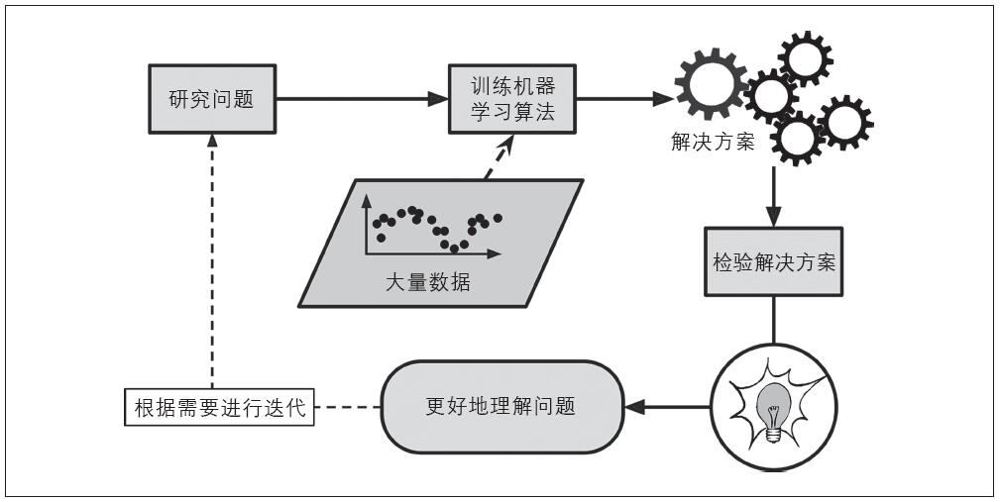
图1-4：机器学习可以帮助人类学习
简而言之，机器学习的伟大在于：
·对于那些现有解决方案需要大量手动调整或者是规则列表超长的问题：通过一个机器学习的算法就可以简化代码，并且提升执行表现。
·对于那些传统技术手段根本无法解决的复杂问题：通过最好的机器学习技术可以找到一个解决方案。
·对于环境波动：机器学习系统可以适应新的数据。
·从复杂问题和海量数据中获得洞见。
机器学习系统的种类
现有的机器学习系统种类繁多，为便于理解我们根据以下内容将它们进行大的分类：
·是否在人类监督下训练（监督式学习、无监督式学习、半监督式学习和强化学习）
·是否可以动态地进行增量学习（在线学习和批量学习）
·是简单地将新的数据点和已知的数据点进行匹配，还是像科学家那样，对训练数据进行模式检测，然后建立一个预测模型（基于实例的学习和基于模型的学习）
这些标准之间互相并不排斥，你可以以你喜欢的方式将其任意组合。例如，现在最先进的垃圾邮件过滤器可能是使用深度神经网络模型对垃圾邮件和常规邮件进行训练，完成动态学习。这使其成为一个在线的、基于模型的、监督式学习系统。
我们来看看这几个标准。
监督式/无监督式学习
根据训练期间接受的监督数量和监督类型，可以将机器学习系统分为以下四个主要类别：监督式学习、无监督式学习、半监督式学习和强化学习。
监督式学习
在监督式学习中，提供给算法的包含所需解决方案的训练数据，称为标签或标记（见图1-5）。
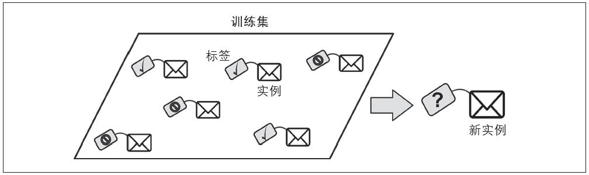
图1-5：监督式学习中被标记的训练集（例如，垃圾邮件分类）
分类任务是一个典型的监督式学习任务。垃圾邮件过滤器就是个很好的例子：通过大量的电子邮件示例及其所属的类别（垃圾邮件或是常规邮件）进行训练，然后学习如何对新邮件进行分类。
还有典型的任务，是通过预测变量，也就是一组给定的特征（里程、使用年限、品牌等）来预测一个目标数值，例如汽车的价格。这种类型的任务称为回归任务（见图1-6） [1] 。要训练这样一个系统，需要提供大量的汽车示例，包括它们的预测变量和标签（也就是它们的价格）。
在机器学习里，属性是一种数据类型（例如“里程”）；而特征取决于上下文，可能有多个含义，但是通常状况下，特征意味着一个属性加上其值（例如，“里程=15000”）。尽管如此，许多人还是会可交接地使用属性和特征这两个名词。
图1-6：回归任务
值得注意的是，一些回归算法也可以用于分类任务，反之亦然。例如，逻辑回归就被广泛地用于分类，因为它可以输出“属于某个给定类别的概率”的值（例如，20%的概率是垃圾邮件）。
这里是一些最重要的监督式学习的算法（会在本书中介绍）：
·K-近邻算法（k-Nearest Neighbors）
·线性回归（Linear Regression）
·逻辑回归（Logistic Regression）
·支持向量机（Support Vector Machines，SVM）
·决策树和随机森林（Decision Trees and Random Forests）
·神经网络（Neural networks） [2]
无监督式学习
顾名思义，无监督式学习的训练数据都是未经标记的（见图1-7）。系统会在没有老师的情况下进行学习。
这里有一些最重要的无监督式学习的算法（我们将会在第8章介绍降维）：
·聚类算法
·k-平均算法（k-Means）
·分层聚类分析（Hierarchical Cluster Analysis，HCA）
·最大期望算法（Expectation Maximization）
图1-7：无监督式学习的未标记训练集
·可视化和降维
·主成分分析（PCA）
·核主成分分析（Kernel PCA）
·局部线性嵌入（LLE）
·t-分布随机近临嵌入（t-SNE）
·关联规则学习
·Apriori
·Eclat
例如，假设你现在拥有大量的自己博客访客的数据。你想通过一个聚类算法来检测相似访客的分组（见图1-8）。你不大可能告诉这个算法每个访客属于哪个分组——希望算法自己去寻找这种关联，而无须你的帮助。比如，它可能会注意到40%的访客是喜欢漫画的男性，并且通常在夜晚阅读你的博客，20%的访客是年轻的科幻爱好者，通常在周末访问，等等。如果你使用的是层次聚类的算法，它还可以将每组细分为更小的组。这可能有助于你针对不同的分组来发布博客内容。
图1-8：聚类
可视化算法也是无监督式学习算法的好例子：你提供大量复杂的、未标记的数据，得到轻松绘制而成的2D或3D的数据呈现作为输出（见图1-9）。这些算法会尽其所能地保留尽量多的结构（例如，尝试保持让输入的单独集群在可视化中不会被重叠），以便于你理解这些数据是怎么组织的，甚至识别出一些未知的模式。
图1-9：一个使用t-SNE算法的可视化示例，突显了各种语义簇 [3]
与之相关的另一种任务是降维，降维的目的是在不丢失太多信息的前提下简化数据。方法之一是将多个相关特征合并为一个。例如，汽车的里程与其使用年限存在很大的相关性，所以降维算法会将它们合并成一个代表汽车磨损的特征。这个过程叫作特征提取。
通常比较好的做法是，先使用降维算法减少训练数据的维度，再将其提供给另一个机器学习算法（例如监督式学习算法）。这会使它运行得更快，数据占用的磁盘空间和内存都会更小，在某些情况下，执行性能也会更好。
另一个很重要的无监督式任务是异常检测——例如，检测异常信用卡交易从而防止欺诈，捕捉制造缺陷，或者是在提供数据给一种机器学习算法之前，自动从数据集中移除异常值。系统用正常实例进行训练，然后当看到新的实例时，它就可以判断出这个新实例看上去是正常还是异常（见图1-10）。
图1-10：异常检测
最后，还有一个常见的无监督式任务是关联规则学习，其目的是挖掘大量数据，发现属性之间的有趣联系。比如，假设你开了一家超市，在销售日志上运行关联规则之后发现买烧烤酱和薯片的人也倾向于购买牛排。那么，你可能会将这几样商品摆放得更近一些。
半监督式学习
有些算法可以处理部分标记的训练数据——通常是大量未标记数据和少量的标记数据。这称为半监督式学习（见图1-11）。
有些照片托管服务（例如Google相册）就是很好的例子。一旦你将所有的家庭照片上传到服务器后，它会自动识别出人物A出现在照片1、5和11中，人物B出现在照片2、5和7中。这是算法中无监督的部分（聚类）。现在系统需要你做的只是，告诉它这些人都是谁。给每个人一个标签 [4] 之后，它就可以给每张照片中的每个人命名，这对于搜索图片非常重要。
图1-11：半监督式学习
大多数半监督式学习算法是无监督式和监督式算法的结合。例如深度信念网络（DBN），它基于一种互相堆叠的无监督式组件，这个组件叫作受限玻尔兹曼机（RBM）。受限玻尔兹曼机以无监督的方式进行训练，然后使用监督式学习对整个系统进行微调。
强化学习
强化学习则是一个非常与众不同的“巨兽”。它的学习系统（在其语境中称为智能体）能够观察环境，做出选择，执行操作，并获得回报（reward），或者是以负面回报的形式获得惩罚，见图1-12。所以它必须自行学习什么是最好的策略（policy），从而随着时间推移获得最大的回报。策略代表智能体在特定情况下应该选择的操作。
图1-12：强化学习
例如，许多机器人通过强化学习算法来学习如何行走。DeepMind的AlphaGo项目也是一个强化学习的好例子。2016年3月，AlphaGo在围棋比赛中击败世界冠军李世石而声名鹊起。通过分析数百万场比赛，然后自己跟自己下棋，它学到了制胜策略。要注意，在跟世界冠军对弈的时候，AlphaGo处于关闭学习状态，它只是应用它所学到的策略而已。
批量学习和在线学习
还有一个给机器学习系统分类的标准，是看系统是否可以从传入的数据流中进行增量学习。
批量学习
在批量学习中，系统无法进行增量学习——即必须使用所有可用数据进行训练。这需要大量时间和计算资源，所以通常情形下，都是离线完成的。离线学习就是先训练系统，然后将其投入生产环境，这时学习过程停止，它只是将其所学到的应用出来。
如果希望批量学习系统学习新数据（例如新型垃圾邮件），你需要在完整数据集（不仅仅是新数据，还要包括旧数据）的基础上重新训练一个新版本的系统，然后停用旧系统，用新系统取而代之。
幸运的是，整个训练、评估和启动机器学习系统的过程可以很轻易地实现自动化（如图1-13所示），所以即使是批量学习系统也能够适应变化。只是需要不断地更新数据，并根据需要频繁地训练新版本的系统。
图1-13：在线学习
这个解决方法比较简单，通常情况下也都能正常工作，只是每次都使用全套数据集进行训练可能需要花上好几个小时，所以，你很有可能会选择每天甚至每周训练一次新系统。如果你的系统需要应对快速变化的数据（例如，预测股票价格），那么你需要一个更具响应力的解决方案。
此外，使用完整数据训练需要耗费大量的计算资源（CPU、内存空间、磁盘空间、磁盘I/O、网络I/O等）。如果你的数据量非常大，并且每天从零开始自动执行训练系统，那最终你将为此花费大量的金钱。而假如你面对的是海量数据，甚至可能无法再应用批量学习算法。
所以如果你的资源有限（例如，智能手机应用程序或者是火星上的漫游器），而系统需要实现自主学习，那么像这样携带大量训练数据，占用大量资源，动辄每天耗费几小时来进行训练的方式，肯定是心有余而力不足。
幸运的是，在所有这些情况下，我们有了一个更好的选择——也就是能够进行增量学习的算法。
在线学习
在在线学习中，你可以循序渐进地给系统提供训练数据，逐步积累学习成果。这种提供数据的方式可以是单独的，也可以采用小批量（mini-batches）的小组数据来进行训练。每一步学习都很快速并且便宜，所以系统就可以根据飞速写入的最新数据进行学习（见图1-13）。
对于这类系统——需要接收持续的数据流（例如股票价格）同时对数据流的变化做出快速或自主的反应，使用在线学习系统是一个非常好的方式。如果你的计算资源有限，在线学习系统同样也是一个很好的选择：新的数据实例一旦经过系统的学习，就不再需要，你可以将其丢弃（除非你想要回滚到前一个状态，再“重新学习”数据），这可以节省大量的空间。
对于超大数据集——超出一台计算机的主存储器的数据，在线学习算法也同样适用（这称为核外学习）。算法每次只加载部分数据，并针对这部分数据进行训练，然后不断重复这个过程，直到完成所有数据的训练（见图1-14）。
图1-14：使用在线学习处理超大数据集
整个过程通常是离线完成的（也就是不在live系统上），因此在线学习这个名字很容易让人产生误解。我们可以将其视为增量学习。
在线学习系统的一个重要参数是其适应不断变化的数据的速度，这就是所谓的学习率。如果设置的学习率很高，那么系统将会迅速适应新数据，但同时也会很快忘记旧数据（你肯定不希望垃圾邮件过滤器只对最新显示的邮件进行标记）。反过来，如果学习率很低，系统会有更高的惰性，也就是说，学习会更缓慢，同时也会对新数据中的噪声或者非典型数据点的序列更不敏感。
在线学习面临的一个重大挑战是，如果给系统输入不良数据，系统的性能将会逐渐下降。现在某些实时系统的客户说不定已经注意到了这个现象。不良数据的来源可能是，例如，机器上发生故障的传感器，或者是有人对搜索引擎恶意刷屏以提高搜索结果排名等。为了降低这种风险，你需要密切监控你的系统，一旦检测到性能下降，要及时中断学习（可能还需要恢复到之前的工作状态）。当然，同时你还需要监控输入数据，并对异常数据做出响应（例如，使用异常检测算法）。
基于实例与基于模型的学习
另一种对机器学习系统进行分类的方法是看它们如何泛化。大多数机器学习任务是要做出预测。这意味着，系统需要通过给定的训练示例，在它此前并未见过的示例上进行泛化。在训练数据上实现良好的性能指标固然重要，但是还不够充分；真正的目的是要在新的对象实例上表现出色。
泛化的主要方法有两种：基于实例的学习和基于模型的学习。
基于实例的学习
我们最司空见惯的学习方法就是简单的死记硬背。如果以这种方式创建一个垃圾邮件过滤器，那它可能只会标记那些跟已被用户标记为垃圾邮件完全相同的邮件——这虽然不是最差的解决方案，但肯定也不是最好的。
除了完全相同的，你还可以通过编程让系统标记与已知的垃圾邮件非常相似的邮件。这里需要两封邮件之间的相似度度量。有一种（基本的）相似度度量方式，是计算它们之间相同的单词数目。如果一封新邮件与一封已知的垃圾邮件有许多字句相同，系统就可以将其标记为垃圾邮件。
这便是基于实例的学习：系统先完全记住学习示例（example），然后通过某种相似度度量方式将其泛化到新的实例（见图1-15）。
基于模型的学习
从一组示例集中实现泛化的另一种方法是构建这些示例的模型，然后使用该模型进行预测。这就是基于模型的学习（见图1-16）。
图1-15：基于实例的学习
图1-16：基于模型的学习
举例来说，假设你想知道金钱是否让人感到快乐，你可以从经合组织（OECD）的网站（ https://goo.gl/0Eht9W ）上下载“幸福指数”的数据，再从国际货币基金组织（IMF）的网站（ http://goo.gl/j1MSKe
）上找到人均GDP的统计数据，将数据并入表格，按照人均GDP排序，你会得到如表1-1显示的摘要。
表1-1：金钱是否让人感到快乐
表1-1：金钱是否让人感到快乐（续）
让我们随机绘制几个国家的数据（见图1-17）。
图1-17：看出趋势了么
这里似乎有一个趋势！虽然数据包含噪声（即部分随机），但是仍然可以看出随着国内生产总值的增加，生活满意度或多或少呈线性上升的趋势。所以你可以把生活满意度建模成一个关于人均GDP的线性函数。这个过程叫作模型选择。你为生活满意度选择了一个线性模型，该模型只有一个属性，就是人均GDP（见公式1-1）。
公式1-1：一个简单的线性模型
这个模型有两个参数，θ 0 和θ 1 。 [5] 通过调整这两个参数，可以用这个模型来代表任意线性函数，如图1-18所示。
在使用模型之前，需要先定义参数θ 0 和θ 1 的值。怎么才能知道什么值可以使得模型表现最佳呢？要回答这个问题，需要先确定怎么衡量模型的性能表现。要么定义一个效用函数（或适应度函数）来衡量模型有多好，要么定义一个成本函数来衡量模型有多差。对于线性回归问题，通常的选择是使用成本函数来衡量线性模型的预测与训练实例之间的差距，目的在于尽量使这个差距最小化。
图1-18：可能的线性模型
这正是线性回归算法的意义所在：通过你提供的训练样本，找出最符合所提供数据的线性模型的参数，这就是训练模型的过程。在我们这个案例中，算法找到的最优参数值为θ 0 ＝4.85和θ 1 ＝4.91×10 -5
现在，（对于线性模型而言）模型基本接近训练数据，如图1-19所示。
图1-19：对训练数据拟合最佳的线性模型
现在终于可以运用模型来进行预测了。例如，你想知道塞浦路斯的人民有多幸福，但是经合组织的数据没有提供答案。幸好你有这个模型可以做出预测：先查查塞浦路斯的人均GDP是多少，即22587美元，然后应用到模型中，发现生活满意度大约是4.85+22587×4.91×10
-5 ＝5.96。
为了激发你的兴趣，示例1-1是一段加载数据的Python代码，包括准备数据 [6] ，创建一个可视化的散点图，然后训练线性模型并做出预测。 [7]
示例1-1：使用Scikit-Learn训练并运行一个线性模型
代码详情
1 | import matplotlib |
如果使用基于实例的学习算法，你会发现斯洛文尼亚的人均GDP最接近塞浦路斯（20732美元），而经合组织的数据告诉我们，斯洛文尼亚人民的生活满意度是5.7，因此你很可能会预测塞浦路斯的生活满意度为5.7。如果稍微拉远一些，看看两个与之最接近的国家——葡萄牙和西班牙的生活满意度分别为5.1和6.5。取这三个数值的平均值，得到5.77，这也非常接近你基于模型预测所得的值。这个简单的算法被称为k-近邻回归算法（在本例中，k＝3）。要将前面代码中的线性回归模型替换为k-近邻回归模型非常简单，只需要将下面这行代码：
代码详情
1 | clf = sklearn.linear_model.LinearRegression() |
替换为：
代码详情
1 | clf = sklearn.neighbors.KNeighborsRegressor(n_neighbors=3) |
如果一切顺利，你的模型将会做出很棒的预测。如果不行，你可能需要使用更多的属性（例如就业率、健康、空气污染等），或者是获得更多或更高质量的训练数据，再或者是选择一个更强大的模型（例如，多项式回归模型）。
简而言之：
·学习数据。
·选择模型。
·使用训练数据进行训练（即前面学习算法搜索模型参数值，从而使成本函数最小化的过程）。
·最后，应用模型对新示例进行预测（称为推断），祈祷模型的泛化结果不错。
以上就是一个典型的机器学习项目，在第2章中，你还将通过一个端到端的项目来体验这一切。
到目前为止，我们已经介绍了多个领域：你已经知道了什么是真正的机器学习，它为何有用，机器学习系统最常见的类别有哪些，以及典型的项目工作流程。现在让我们看看你在学习过程中可能会遇到哪些阻碍你做出准确预测的问题。
[1] 一则趣事：这个读起来很奇怪的名字（regression）是弗兰西斯·加尔顿提出的统计学术语，当时他正研究一个现象，那就是高个父母的孩子往往比他们要矮一些。由于高个父母的孩子在变矮，他就把这个趋势称为均数回归。后来这个名词就被他用于分析变量之间相关性的方法。
[2] 某些神经网络架构可以是无监督式的，例如自动编码器和受限玻尔兹曼机；也可能是半监督式的，例如深度信念网络和无监督的预训练。
[3] 注意它是如何很好地区分开动物和车辆的，以及马是如何更接近鹿而远离鸟类的，等等。图表转载许可来自于Socher、Ganjoo、Manning和Ng(2013)，“T-SNE visualization of the semantic word space”。
[4] 这是在系统完美工作的情况下。在实践中，通常会为每个人创造多个集群，有时也会混淆两个看起来相似的人，因此你需要为每个人提供多个标记，同时手动清理一些集群。
[5] 按照惯例，通常用希腊字母θ来表示模型参数。
[6] 这段代码假定prepare_country_stats（）已经被定义：它将GDP 和生活满意度数据合并成一个单独的Pandas dataframe。
[7] 如果你无法完全理解所有的代码也没有关系，我们将在后面的章节中详细介绍Scikit-Learn。
机器学习的主要挑战
简单来说，由于你的主要任务是选择一种学习算法，并对某些数据进行训练，所以最可能出现的两个问题不外乎是“坏算法”和“坏数据”，让我们先从坏数据开始。
训练数据的数量不足
要教一个牙牙学语的小朋友什么是苹果，你只需要指着苹果说“苹果”（可能需要重复这个过程几次）就行了，然后孩子就能够识别各种颜色和形状的苹果了，简直是天才！
机器学习还没达到这一步，大部分机器学习算法需要大量的数据才能正常工作。即使是最简单的问题，很可能也需要成千上万个示例，而对于诸如图像或语音识别等复杂问题，则可能需要上千万个示例（除非你可以重用现有模型的某些部分）。
数据的不合理有效性
在2001年发表的一篇著名论文中，微软研究员Michele Banko和Eric Brill表明，截然不同的机器学习算法（包括相当简单的算法）在自然语言歧义消除 [1] 这个复杂问题上，表现几乎完全一致（如图1-20所示）。
图1-20：数据对算法的重要性 [2]
正如作者所说：“这些结果表明，我们可能会重新思考如何在二者之间做权衡——将钱和时间花在算法的开发上，还是花在语料库的建设上。”
对复杂问题而言，数据比算法更重要，这一想法被Peter Norvig等人进一步推广，于2009年发表论文《数据的不合理有效性》 [3] 。不过需要指出的是，中小型数据集依然非常普遍，获得额外的训练数据并不总是一件轻而易举或物美价廉的事情，所以暂时先不要抛弃算法。
训练数据不具代表性
为了很好地实现泛化，至关重要的一点是，对于将要泛化的新示例来说，训练数据一定要非常有代表性。不论你使用的是基于实例的学习还是基于模型的学习，都是如此。
例如，前面我们用来训练线性模型的国家数据集并不具备完全的代表性，有部分国家的数据缺失。图1-21显示了补充缺失国家/地区信息之后的数据表现。
图1-21：一个更具代表性的训练样例
如果你用这个数据集训练线性模型，将会得到图中的实线，而虚线表示旧模型。正如你所见，添加部分缺失的国家信息不仅显著地改变了模型，也更清楚地说明，这种线性模型可能永远不会那么准确。看起来，某些非常富裕的国家并不比中等富裕国家幸福（事实上，看起来甚至是不幸福），反之，一些贫穷的国家也似乎比许多富裕国家更加快乐。
使用不具代表性的训练集训练出来的模型不可能做出准确的预估，尤其是针对那些特别贫穷或特别富裕的国家。
针对你想要泛化的案例使用具有代表性的训练集，这一点至关重要。不过说起来容易，做起来难：如果样本集太小，将会出现采样噪声（即非代表性数据被选中）；而即便是非常大的样本数据，如果采样方式欠妥，也同样可能导致非代表性数据集，这就是所谓的采样偏差。
关于采样偏差的一个著名案例
最著名的采样偏差的案例，发生在1936年美国总统大选期间，兰登对决罗斯福。《Literary Digest》当时举行了一次非常大范围的民意调查，向约1000万人发送邮件，并得到了240万个回复，因此做出了高度自信的预言——兰登将获得57%的选票。
结果恰恰相反，罗斯福赢得了62%的选票。问题就在于《Literary Digest》的采样方式：
·首先，为了获取发送民意调查的地址，《Literary Digest》采用了电话簿、杂志订阅名单、俱乐部会员名单等类似名簿。而所有这些名单上的人往往对富人有更大的偏好，也就更有可能支持共和党（即兰登）。
·其次，收到民意调查邮件的人中，不到25%的人给出了回复。这再次引入了采样偏差，那些不怎么关心政治的人，不喜欢《Literary Digest》的人以及其他的一些关键群体直接被排除在外了。这是一种特殊类型的采样偏差，叫作无反应偏差。
再举一个例子：假设你想创建一个系统用来识别funk音乐视频。构建训练集的方法之一是直接在YouTube上搜索“funk music”，然后使用搜索结果的视频。但是，这其实基于一个假设——YouTube的搜索引擎返回的视频结果，是所有能够代表funk音乐的视频。而实际的搜索结果可能会更偏向于当前流行的音乐人（如果你住在巴西，你会得到很多关于“funk carioca”的视频，这听起来跟James Brown完全不是一回事） [4] 。另一方面来讲，你还能怎样获得更大的训练集呢？
质量差的数据
显然，如果训练集满是错误、异常值和噪声（例如，差质量的测量产生的数据），系统将更难检测到低层模式，更不太可能表现良好。所以花时间来清理训练数据是非常值得的投入。事实上，大多数数据科学家都会花费很大一部分时间来做这项工作。例如：
·如果某些实例明显是异常情况，要么直接将其丢弃，要么尝试手动修复错误，都会大有帮助。
·如果某些实例缺少部分特征（例如，5%的顾客没有指定年龄），你必须决定是整体忽略这些特征，还是忽略这部分有缺失的实例，又或者是将缺失的值补充完整（例如，填写年龄值的中位数），或者是训练一个带这个特征的模型，再训练一个不带这个特征的模型，等等。
无关特征
正如我们常说的：垃圾入，垃圾出。只有训练数据里包含足够多的相关特征，以及较少的无关特征，系统才能够完成学习。一个成功的机器学习项目，关键部分是提取出一组好的用来训练的特征集，这个过程叫作特征工程，包括以下几点。
·特征选择：从现有特征中选择最有用的特征进行训练。
·特征提取：将现有特征进行整合，产生更有用的特征（正如前文提到的，降维算法可以提供帮助）。
·通过收集新数据创造新特征。
现在我们已经看了不少“坏数据”的例子，再来看几个“坏算法”的例子。
训练数据过度拟合
假设你正在国外旅游，被出租车司机狠宰了一刀，你很可能会说，那个国家的所有出租车司机都是强盗。过度概括是我们人类常做的事情，不幸的是，如果我们不小心，机器很可能也会陷入同样的陷阱。在机器学习中，这称为过度拟合，也就是指模型在训练数据上表现良好，但是泛化时却不尽如人意。
图1-22显示了一个与训练数据过度拟合的、高阶多项式的生活满意度模型。虽然它在训练数据上的表现比简单的线性模型要好得多，但是你真的敢相信它的预测吗？
图1-22：训练数据过度拟合
诸如深度神经网络这类的复杂模型可以检测到数据中的微小模式，如果训练集本身是嘈杂的，或者说数据集太小（会导致采样噪声），那么很可能会导致模型检测噪声里的模式。很显然，这些模式不能泛化至新的实例。举例来说，假设你给你的生活满意度模型提供了更多其他的属性，包括一些不具信息的属性例如国家的名字。在这种情况下，一个复杂模型可能会检测到这样的事实模式：训练数据中，名字中带有字母W的国家，如新西兰（New Zealand，生活满意度为7.3）、挪威（Norway，生活满意度为7.4）、瑞典（Sweden，生活满意度为7.2）和瑞士（Switzerland，生活满意度为7.5），生活满意度大于7。当把这个W规则泛化到卢旺达（Rwanda）或津巴布韦（Zimbabwe）时，你对结果有多大的自信？显然，训练数据中的这个模式仅仅是偶然产生的，但是模型无法判断这个模式是真实的，还是噪声产生的结果。
当模型相对于训练数据的数量和噪度都过于复杂时，会发生过度拟合。可能的解决方案如下。
·简化模型：可以选择较少参数的模型（例如，选择线性模型而不是高阶多项式模型），可以减少训练数据中的属性数量，又或者是约束模型。
·收集更多的训练数据。
·减少训练数据中的噪声（例如，修复数据错误和消除异常值）。
通过约束模型使其更简单，并降低过度拟合的风险，这个过程称为正则化。例如，我们前面定义的线性模型有两个参数，θ 0 和θ 1 。因此，该算法在拟合训练数据时，调整模型的自由度就等于2：它可以调整线的高度（θ 0 ）和斜率（θ 1 ）。如果我们强行让θ 1
＝0，那么算法的自由度将会降为1，并且其拟合数据将变得更为艰难——它能做的全部就只是将线上移或下移来尽量接近训练实例，最后极有可能停留在平均值附近。这确实太简单了！如果我们允许算法修改θ 1
，但是我们强制它只能是很小的值，那么算法的自由度将位于1和2之间，这个模型将会比自由度为2的模型稍微简单一些，同时又比自由度为1的模型略微复杂一些。你需要在完美匹配数据和保持模型简单之间找到合适的平衡点，从而确保模型能够较好地泛化。
图1-23显示了三个模型：蓝色虚线代表一开始的原始模型，也就是缺失部分国家的数据；红色虚线代表用所有国家数据训练的第二个模型；实线代表的模型与第一个模型使用的训练数据相同，但是应用了正则化的约束。我们可以看出通过正则化使得模型具有较小的斜率，这虽然略微降低了模型与训练数据的匹配度，但是能够更好地泛化至新的实例。
图1-23：通过正则化降低过度拟合的风险
在学习时，应用正则化的程度可以通过一个超参数来控制。超参数是学习算法（不是模型）的参数。因此，它不受算法本身的影响；它必须在训练之前设置好，并且在训练期间保持不变。如果将正则化超参数设置为非常大的值，会得到一个几乎平坦的模型（斜率接近零）；学习算法虽然肯定不会过度拟合训练数据，但是也更加不可能找到一个好的解决方案。调整超参数是构建机器学习系统非常重要的组成部分（将在下一章中详细举例）。
训练数据拟合不足
你可能已经猜到了，拟合不足和过度拟合正好相反：它的产生通常是因为，对于下层的数据结构来说，你的模型太过简单。举个例子，用线性模型来描述生活满意度就属于拟合不足；现实情况远比模型复杂得多，所以即便是对于用来训练的示例，该模型产生的预测都一定是不准确的。
解决这个问题的主要方式有：
·选择一个带有更多参数、更强大的模型
·给学习算法提供更好的特征集（特征工程）
·减少模型中的约束（比如，减少正则化超参数）
退后一步
现在你已经对机器学习有了一些了解。不过讲了这么多概念，你可能有点晕，我们暂且退后一步，纵观一下全局：
·机器学习是关于如何让机器可以更好地处理某些特定任务的理论，它从数据中学习，而不是将规则进行清晰的编码。
·机器学习系统有很多类型：监督式和无监督式，批量的和在线的，基于实例的和基于模型的，等等。
·在一个机器学习项目中，你从训练集中采集数据，然后将数据交给学习算法来计算。如果算法是基于模型的，它会调整一些参数来将模型适配于训练集（即对训练集本身做出很好的预测），然后算法就可以对新的场景做出合理的预测。如果算法是基于实例的，它会记住这些样例，并根据相似度来对新的实例进行泛化。
·如果训练集的数据太少，数据代表性不够，包含太多噪声或者是被一些无关特征污染（垃圾进，垃圾出），那么系统将无法很好地工作。最后，你的模型既不能太简单（这会导致拟合不足），也不能太复杂（这会导致过度拟合）。
还有最后一个要讲的重要主题是：在训练好了一个模型之后，你不能只是“希望”它可以正确地对新的场景做出泛化。你还需要评估它，必要时做出一些调整。现在我们看看怎么做到这一点。
[1] 例如，到底该写成“to”“too”，还是“two”，完全取决于上下文。
[2] 图片转载经Banko和Brill的许可，“Learning Curves for Confusion Set Disambiguation”，2001。
[3] “The Unreasonable Effectiveness of Data”，Peter Norvig等人（2009）。
[4] funk carioca源于巴西贫民窟，揉合了hip hop、电子乐、摇滚乐与House音乐，具有独特狂热的节拍，与传统的funk音乐很不一样。而James Brown是funk音乐的代表人物。
测试与验证
了解一个模型对于新场景的泛化能力的唯一办法就是，让模型真实地去处理新场景。做法之一是将其部署在生产环境，然后监控它的输出。这个方法用起来不错，不过如果模型非常糟糕，你的用户就会抱怨——所以这显然不是最好的办法。
更好的选择是将你的数据分割成两部分：训练集和测试集。顾名思义，你可以用训练集的数据来训练模型，然后用测试集的数据来测试模型。应对新场景的误差率称为泛化误差（或者样例外误差），通过测试集来评估你的模型，就可以得到对这个误差的评估。这个估值可以告诉你，你的模型在处理新场景时的能力如何。
如果训练误差很低（模型对于训练集来说很少出错），但是泛化误差很高，那说明你的模型对于训练数据存在过度拟合。
通常使用80％的数据进行训练，保留另外的20％来做测试。
所以评估一个模型很简单：用测试集就行了。现在假设你在两个模型（一个线性模型和一个多项式模型）之间犹豫不决：如何做出判断呢？做法是训练两个模型，然后对比它们对测试数据的泛化能力。
现在让我们假设线性模型的泛化能力更强，但是你想要应用一些正则化来避免过度拟合。问题又来了，你要如何选择正则化超参数的值呢？做法之一是使用100个不同的超参数值来训练100个不同的模型。然后假设你由此找到了最佳的超参数值，它生成的模型泛化误差最小，比如仅仅5%。
然后你将这个模型运行在生产环境，可是很不幸，它并没有如预期那样工作，反而产生了15%的误差。这到底发生了什么？
问题出在你对测试集的泛化误差进行了多次度量，并且调整模型和超参数来得到拟合那个测试集的最佳模型。这意味着该模型对于新的数据不太可能有良好的表现。
常见的解决方案是再单独分出来一个保留集合，称为验证集。在训练集上，使用不同的超参数训练多个模型，然后通过验证集，选择最好的那个模型和对应的超参数，当你对模型基本满意之后，再用测试集运行最后一轮测试，并得到泛化误差的估值。
为了避免验证集“浪费”太多的训练数据，常见的技术是使用交叉验证：将训练集分成若干个互补子集，然后每个模型都通过这些子集的不同组合来进行训练，之后用剩余的子集进行验证。一旦模型和超参数都被选定，最终的模型会带着这些超参数对整个训练集进行一次训练，最后再用测试集测量泛化误差。
没有免费的午餐（No Free Lunch）定理
模型是观察的简化。这个简化是丢弃了那些不大可能泛化至新实例上的多余细节。但是，要决定丢弃哪些数据以及保留哪些数据，你必须要做出假设。比如，线性模型基于的假设就是——数据基本上都是线性的，而实例与直线之间的距离都只是噪声，可以安全地忽略它们。
1996年David Wolpert在一篇著名论文中（ http://goo.gl/3zaHIZ ） [1] 表明，如果你对数据绝对没有任何假设，那么你没有理由会更偏好于某个模型。这称为没有免费午餐（No Free Lunch NFL）定理。对有的数据集来说，最佳模型是线性模型，而对于其他数据集来说，最佳模型可能是神经网络模型。不存在一个先验模型能保证一定工作得更好（这正是定理名称的由来）。想要知道哪个模型最好的方法就是对所有模型进行评估，但实际上这是不可能的，因此你会对数据做出一些合理的假设，然后只评估部分合理的模型。比如，对于简单的任务，你可能只会评估几个具有不同正则化水平的线性模型，而对于复杂问题，你可能会评估多个神经网络模型。
[1] “The Lack of A Priori Distinctions Between Learning Algorithms”，D.Wolperts（1996）。
练习
本章中，我们提及了机器学习中最重要的一些概念。下一章，我们将会进行更深入的探讨，也会写更多代码，但是在那之前，请先确保你已经知道如何回答下列问题：
1.你会怎么定义机器学习？
2.机器学习在哪些问题上表现突出，你能提出四种类型吗？
3.什么是被标记的训练数据集？
4.最常见的两种监督式学习任务是什么？
5.你能举出四种常见的无监督式学习任务吗？
6.要让一个机器人在各种未知的地形中行走，你会使用什么类型的机器学习算法？
7.要将顾客分成多个组，你会使用什么类型的算法？
8.你会将垃圾邮件检测的问题列为监督式学习还是无监督式学习？
9.什么是在线学习系统？
10.什么是核外学习？
11.什么类型的学习算法依赖相似度来做出预测？
12.模型参数与学习算法的超参数之间有什么区别？
13.基于模型的学习算法搜索的是什么？它们最常使用的策略是什么？它们如何做出预测？
14.你能提出机器学习中的四个主要挑战吗？
15.如果你的模型在训练数据上表现很好，但是应用到新的实例上的泛化结果却很糟糕，是怎么回事？能提出三种可能的解决方案吗？
16.什么是测试集，为什么要使用测试集？
17.验证集的目的是什么？
18.如果使用测试集调整超参数会出现什么问题？
19.什么是交叉验证？它为什么比验证集更好？
以上练习题的答案见附录A。
第2章 端到端的机器学习项目
在本章中，你将经历一个端到端的项目案例，假设你是一个房地产公司 [1] 最近新雇佣的数据科学家，以下是你将会经历的主要步骤：
1.观察大局。
2.获得数据。
3.从数据探索和可视化中获得洞见。
4.机器学习算法的数据准备。
5.选择和训练模型。
6.微调模型。
7.展示解决方案。
8.启动、监控和维护系统。
[1] 项目案例纯属虚构，目的仅仅是为了说明机器学习项目的主要步骤，而不是为了了解房地产业务。
使用真实数据
学习机器学习最好使用真实数据进行实验，而不仅仅是人工数据集。我们有成千上万覆盖了各个领域的开放数据集可以选择。以下是一些可以获得数据的地方：
·流行的开放数据存储库：
·UC Irvine Machine Learning Repository（ http://archive.ics.uci.edu/ml/ ）
·Kaggle datasets（ https://www.kaggle.com/datasets ）
·Amazon’s AWS datasets（ http://aws.amazon.com/fr/datasets/ ）
·元门户站点（它们会列出开放的数据存储库）：
·其他一些列出许多流行的开放数据存储库的页面：
·Wikipedia’s list of Machine Learning datasets（ https://goo.gl/SJHN2k ）
·Quora.com question（ http://goo.gl/zDR78y ）
·Datasets subreddit（ https://www.reddit.com/r/datasets ）
本章我们从StatLib库 [1] 中选择了加州住房价格的数据集（见图2-1）。该数据集基于1990年加州人口普查的数据。虽然不算是最新的数据（当时你还能负担得起一个湾区的好房子），但是有很多可以学习的特质，所以我们就假定这就是最新的数据吧。出于教学目的，我们还特意添加了一个分类属性，并且移除了一些特征。
图2-1：加州住房价格
[1] 原始的数据集来自于R.KElly Pace和Ronald Barry的“Sparse Spatial Autoregressions”，Statistics & Probability Letters 33，no.3（1997）：291-297。
观察大局
欢迎来到机器学习房产公司！你要做的第一件事是使用加州人口普查的数据建立起加州的房价模型。数据中有许多指标，诸如每个街区的人口数量、收入中位数、房价中位数等。街区是美国人口普查局发布样本数据的最小地理单位（一个街区通常人口数为600～3000人）。这里，我们将其简称为“区域”。
你的模型需要从这个数据中学习，从而能够根据所有其他指标，预测任意区域的房价中位数。
如果你是一名习惯良好的数据科学家，你要做的第一件事应该是拿出机器学习项目清单。你可以从附录B中的清单项开始，它适合绝大多数机器学习项目，但还是要确保它适合你的需求。本章我们将会讨论这个清单中的部分内容，但也会跳过一部分，有些是因为不需要多做解释，有些是因为在后面的章节中会展开讨论。
框架问题
你问老板的第一个问题，应该是询问业务目标是什么，因为建立模型本身可能不是最终的目标。公司期望知道如何使用这个模型，如何从中获益？这才是重要的问题，因为这将决定你怎么设定问题，选择什么算法，使用什么测量方式来评估模型的性能，以及应该花多少精力来进行调整。
老板回答说，这个模型的输出（对一个区域房价中位数的预测）将会跟其他许多信号 [1] 一起被传输给另一个机器学习系统（见图2-2）。而这个下游系统将被用来决策一个给定的区域是否值得投资。因为直接影响到收益，所以正确获得这个信息至关重要。
图2-2：一个针对房地产投资的机器学习流水线
流水线
一个序列的数据处理组件称为一个数据流水线（Pipeline）。流水线在机器学习系统中非常普遍，因为需要大量的数据操作和数据转化才能应用。
组件通常是异步运行。每个组件拉取大量的数据，然后进行处理，再将结果传输给另一个数据仓库；一段时间之后，流水线中的下一个组件会拉取前面的数据，并给出自己的输出，以此类推。每个组件都很独立：组件和组件之间的连接只有数据仓库。这使得整个系统非常简单易懂（在数据流图表的帮助下），不同团队可以专注于不同的组件上。如果某个组件发生故障，它的下游组件还能使用前面的最后一个输出继续正常运行（至少一段时间），所以使得整体架构鲁棒性较强。
当然，从另一方面来说，如果没有实施适当的监控，坏掉的组件可能在一段时间内都无人发现，那么过期数据会导致整个系统的性能下降。
要向老板询问的第二个问题，是当前的解决方案（如果有的话）。你可以将其当作参考，也能从中获得解决问题的洞察。老板回答说，现在是由专家团队在手动估算区域的住房价格——一个团队持续收集最新的区域信息（不包括房价中位数），然后使用复杂的规则来进行估算。既昂贵又耗时，而且估算结果还不令人满意，显著误差率高达15%。
好的，有了这些信息，你现在可以开始设计系统了。首先，你需要回答框架问题：是监督式？还是无监督式？又或者是强化学习？是分类任务、回归任务还是其他任务？应该使用批量学习还是在线学习技术？在继续阅读之前，请先暂停一会儿，尝试回答一下这些问题。
找到答案了吗？我们来看看：显然，这是一个典型的监督式学习任务，因为已经给出了标记的训练示例（每个实例都有预期的产出，也就是该地区的房价中位数）。并且这也是一个典型的回归任务，因为你要对某个值进行预测。更具体地说，这是一个多变量回归问题，因为系统要使用多个特征进行预测（使用到区域的人口、收入中位数等）。在第1章预测生活满意度时，我们仅基于人均GDP这一个特征，所以那是一个单变量回归问题。最后，我们没有一个连续的数据流不断流进系统，所以不需要针对变化的数据做出特别调整，数据量也不是很大，不需要多个内存，所以简单的批量学习应该就能胜任。
如果数据量巨大，你可以将批量学习工作分到多个服务器（利用MapReduce技术，后面将会介绍），也可以使用在线学习技术。
选择性能指标
接下来是要选择一个性能衡量指标。回归问题的典型性能衡量指标是均方根误差（RMSE），它测量的是预测过程中，预测错误的标准偏差 [2] 。例如，RMSE等于50000就意味着，系统的预测值中约68%落在50000美元之内，约95%落在100000美元之内 [3] 。公式2-1是RMSE的数学计算公式。
公式2-1：均方根误差（RMSE）
符号
这个公式引入了几个十分常见的机器学习符号，我们将在本书中沿用：
·m是你在测量RMSE时，所使用的数据集中实例的数量。
·例如，如果你在评估RMSE时使用的验证集里包含2000个区域，则m=2000。
·X （i） 是数据集中，第i个实例的所有特征值的向量（标签特征除外），y （i） 是标签（也就是我们期待该实例的输出值）。
·例如，如果数据集的第一个区域位于经度-118.29°，纬度33.91°，居民数量为1416，平均收入为38372美元，房价中位数为156400美元（暂且忽略其他特征），那么：
并且：
·X是数据集中所有实例的所有特征值的矩阵（标记特征除外）。每个实例为一行，也就是说，第i行等于x （i） 的转置矩阵，记作（x （i） ） T 。 [4]
·例如，刚刚描述的第一个区域，矩阵X即为如下所示：
·h是系统的预测函数，也称为一个假设。当给定系统一个实例的特征向量x （i） ，它会输出一个预测值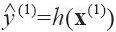
（ 读作“y-hat”）。
·例如，如果系统预测第一个区域的房价中位数为158400美元，则 =h（x （1）
）=158400。该区域的预测误差为 -y （1） =2000。
·RMSE（X，h）是使用假设h在示例上测量的成本函数。
我们使用小写的斜体字体表示标量值（例如m和y （i） ）和函数名（例如h），小写黑体字表示向量（例如x （i） ），大写黑体字表示矩阵（例如X）
即便RMSE通常是回归任务的首选性能衡量指标，但在某些情况下，其他函数可能会更适合。例如，当有很多离群区域时，你可以考虑使用平均绝对误差（也称为平均绝对偏差，参见公式2-2）。
公式2-2：平均绝对误差
均方根误差和平均绝对误差两种方法都是测量两个向量之间的距离：预测向量和目标值向量。距离或者范数的测度可能有多种：
·计算平方和的根（RMSE）对应欧几里得范数：它应该是你比较熟悉的距离概念。也称之为 范数，记作||·|| 2
（或者||·||）。
·计算绝对值的总和（MAE）对应 范数，记作||·|| 1 。有时它也被称为曼哈顿距离，因为它在测量一个城市的两点之间的距离时，只能沿着正交的城市街区行走。
·更笼统地说，包含n个元素的向量v k 的范数可以定义为 仅仅给出了向量的基数（即元素的数量）， 而给出了向量中的最大绝对值。
·范数指数越高，则越关注大的价值，忽视小的价值。这就是为什么RMSE比MAE对异常值更敏感。但是当异常值非常稀少（例如钟形曲线）时，RMSE的表现优异，通常作为首选。
检查假设
最后，列举和验证到目前为止（由你或者其他人）做出的假设，是一个非常良好的习惯；这可以在初期检查出严重问题。例如，当我们的机器学习系统输出区域价格给下游系统时，我们的假设是价格会被使用。但是，如果下游系统实际上是将价格转换成为类别（例如，廉价、中等或者昂贵），转而使用这些类别，而不是价格本身呢？在这种情形下，并不需要完全准确地预估价格，你的系统只需要得出正确的类别就够了。如果是这种情况，那么这个问题应该被设定为分类任务而不是回归任务。你肯定不会愿意在回归系统上努力了几个月之后才发现这点。
幸运的是，跟下游系统的团队聊过之后，证实需要的确实是价格而不是类别。很好！一切就绪，绿灯已经亮了，现在可以开始编程了！
[1] 提供给机器学习系统的信息通常被称为信号，可参考香农的信息理记：你需要的是高信噪比。
[2] 标准偏差，通常标记为σ（希腊字母sigma），是方差的算术平方根，而方差是离均平方差的平均数。
[3] 一种常见的特征分布是呈钟形态的分布，称为正态分布（也叫高斯分布），“68-95-99.7”的规则是指：大约68%的值落在1σ内，95%落在2σ内，99.7%落在3σ内。
[4] 回顾一下，转置运算符会将列向量转成行向量（反之亦然）。
获取数据
现在是着手动工的时候了。不要犹豫，打开你的笔记本电脑，先过一遍Jupyter笔记本里的代码示例。完整的Jupyter示例可以通过获得。
创建工作区
首先，你需要安装Python。你可能早已经装好了，如果还没有，你可以在 https://www.python.org/ [1] 上获取。
接下来，你需要为机器学习的代码和数据集创建一个工作区目录。打开Terminal输入以下命令行（在$提示符之后）：
代码详情
1 | $ export ML_PATH="$HOME/ml" # You can change the path if you prefer |
此外，你还需要一些Python模块：Jupyter、Pandas、NumPy、Matplotlib以及Scikit-Learn。如果你已经安装好了所有这些模块，并运行了Jupyter，那么可以跳到“下载数据”一节。如果还没有完全安装所有模块（以及它们的依赖），以下有多种办法进行安装。可以使用系统的包管理器进行安装（例如，Ubunto的apt-get，或者是Mac OS上的MacPorts和Homebrew等），安装一个Scientific Python的分支，例如Anaconda，然后使用其包管理器，又或者是直接使用Python自己的包管理器pip，默认情况下，（自2.7.9版本之后） [2] Python的二进制安装程序里应该都包含pip。你可以输入以下命令行查看是否安装了pip：
代码详情
1 | $ pip3 --version |
请确保安装的pip版本是最新的，至少是1.4版之后的才能支持二进制模块安装（a.k.a.wheels）。要升级pip模块，请输入： [3]
代码详情
1 | $ pip3 install --upgrade pip |
创建一个隔离环境
如果你希望在一个隔离的环境里工作（强烈推荐，这样你可以在库版本不冲突的情况下处理不同的项目），可以通过运行以下pip命令来安装virtualenv：
代码详情
1 | $ pip3 install --user --upgrade virtualenv |
输入以下命令创建一个隔离的Python环境：
代码详情
1 | $ cd $ML_PATH |
现在开始，每当想要激活这个环境时，只需要打开终端并输入：
代码详情
1 | $ cd $ML_PATH |
当这个环境处于激活状态时，你使用pip安装的任何软件包都将被安装在这个隔离的环境中，Python只拥有这些包的访问权限（如果你还希望访问系统站点的软件包，则需要使用virtualenv的
—system-site-packages命令选项）。更多详情可以参考virtualenv的文档。
现在可以安装必须的模块及其依赖项了，使用简单的pip命令：
代码详情
1 | $ pip3 install --upgrade jupyter matplotlib numpy pandas scipy scikit-learn |
要检查安装，请尝试如下代码导入每个模块：
代码详情
1 | $ python3 -c "import jupyter, matplotlib, numpy, pandas, scipy, sklearn" |
应该不会有输出或错误出现，现在你可以输入以下命令来启动Jupyter：
代码详情
1 | $ jupyter notebook |
一个Jupyter服务器正在你的终端中运行，监听端口为8888。你可以打开浏览器，输入 http://localhost:8888/ 访问该服务器（通常服务器启动时会自动运行），可以看到一个空的工作区目录（如果你遵循了上述virtualenv指令，这时仅包含env目录）
点击New按钮，选择适当的Python版本，创建一个Python笔记本 [4] （见图2-3）。
这里包含三件事：首先，它会在你的工作区中创建一个名为Untitled.ipynb的新笔记本文件；然后，启动Jupyter Python内核来运行这个文件；最后在浏览器新标签里打开这个笔记本。先点击Untitled将这个笔记本重命名为“Housing”（文件将自动被重命名为housing.ipynb）。
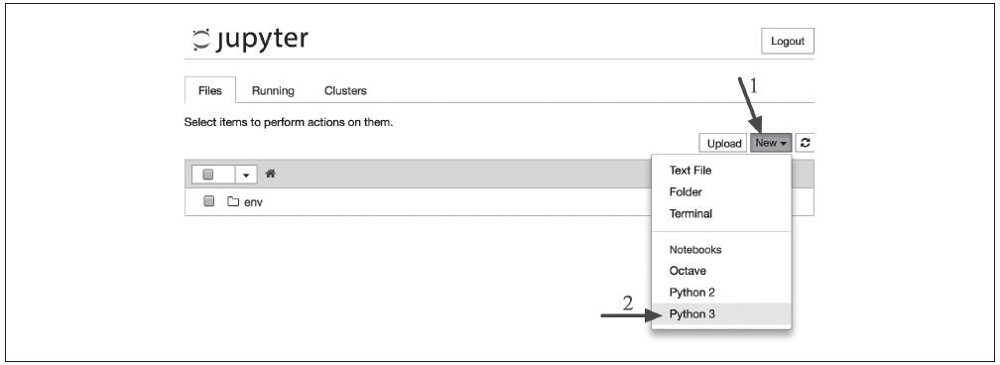
图2-3：你的Jupyter工作间
一个笔记本内包含一个单元格列表，每个单元格可以是可执行代码或格式化的文本。现在，这个笔记本只有一个空的代码单元，标记为“In[1]：”。在单元格输入print（”Hello world！”），然后单击执行按钮（参见图2-4）或是按组合键“Shift+Enter”。这时，当前单元格会被送到这个笔记本的Python内核，运行并返回输出结果。结果显示在单元格下方，同时因为我们到了笔记本的末尾，因此还会自动创建一个新的单元格。更多的基础知识可以从Jupyter的帮助菜单“User Interface Tour”中了解。
图2-4：Python笔记本的Hello world
下载数据
在一般环境下，你的数据存储在关系型数据库里，并分布在多个表/文档/文件中。访问前，你需要先获得证书（credentials）和访问权限 [5] ，并熟悉数据库模式。不过在这个项目中，事情要简单得多：你只需要下载一个压缩文件housing.tgz即可，这个文件已经包含所有的数据——一个以逗号来分隔值的CSV文档housing.csv。
你可以选择使用浏览器下载压缩包，运行tar xzf housing.tgz来解压缩并提取CSV文件，但更好的选择是创建一个简单函数来实现它。尤其是当数据会定期发生变化时，这个函数非常有用，你可以编写一个小脚本，在需要获取最新数据时，直接运行（或者也可以设置一个定期自动运行的计划任务）。如果需要在多台机器上安装数据集，这个自动获取数据的函数也非常好用。
获取数据的函数 [6] 如下：
代码详情
1 | import os |
现在，每当你调用fetch_housing_data（），会自动在工作区中创建一个datasets/housing目录，然后下载housing.tgz文件，并将housing.csv解压到这个目录。
现在我们来使用Pandas加载数据。你也应该写一个小函数来加载数据：
代码详情
1 | import pandas as pd |
这个函数会返回一个包含所有数据的Pandas DataFrame对象。
快速查看数据结构
我们来看看使用DataFrames的head（）方法之后的前五行是怎样的（见图2-5）。
图2-5：数据集前五行
每一行代表一个区，总共有10个属性（在图2-5中可以看到前6个）：longitude，latitude，housing_median_age，total_rooms，total_bed rooms，population，households，median_income，median_house_value以及ocean_proximity。
通过info（）方法可以快速获取数据集的简单描述，特别是总行数、每个属性的类型和非空值的数量（见图2-6）。
图2-6：住房信息
数据集中包含20640个实例，以机器学习的标准来看，这个数字非常小，但却是个完美的开始。注意，total_bed这个属性只有20433个非空值，这意味着有207个区域缺失这个特征。我们后面需要考虑到这一点。
所有属性的字段都是数字，除了ocean_proximity。它的类型是object，因此它可以是任何类型的Python对象，不过你是从CSV文件中加载了该数据，所以它必然是文本属性。通过查看前五行，你可能会注意到，该列中的值是重复的，这意味着它有可能是一个分类属性。你可以使用value_counts（）方法查看有多少种分类存在，每种类别下分别有多少个区域：
代码详情
1 | >>> housing["ocean_proximity"].value_counts() |
再来看看其他区域，通过describe（）方法可以显示数值属性的摘要（见图2-7）。
图2-7：数值属性的摘要
count、mean、min以及max行的意思很清楚。需要注意的是，这里的空值会被忽略（因此本例中，total_bedrooms的count是20433而不是20640）。std行显示的是标准差（用来测量数值的离散程度）。25%、50%和75%行显示相应的百分位数：百分位数表示一组观测值中给定百分比的观测值都低于该值。例如，对于housing_median_age的值，25%的区域低于18，50%的区域低于29，以及75%的区域低于37。这些通常被称为：百分之二十五分位数（或者第一四分位数）、中位数以及百分之七十五分位数（或者第三四分位数）。
另一种快速了解数据类型的方法是绘制每个数值属性的直方图。直方图用来显示给定值范围（横轴）的实例数量（纵轴）。你可以一次绘制一个属性，也可以在整个数据集上调用hist（）方法，绘制每个属性的直方图（见图2-8）。比如我们可以看到，超过800个区域的median_house_value大约在50万美元。
代码详情
1 | %matplotlib inline # only in a Jupyter notebook |
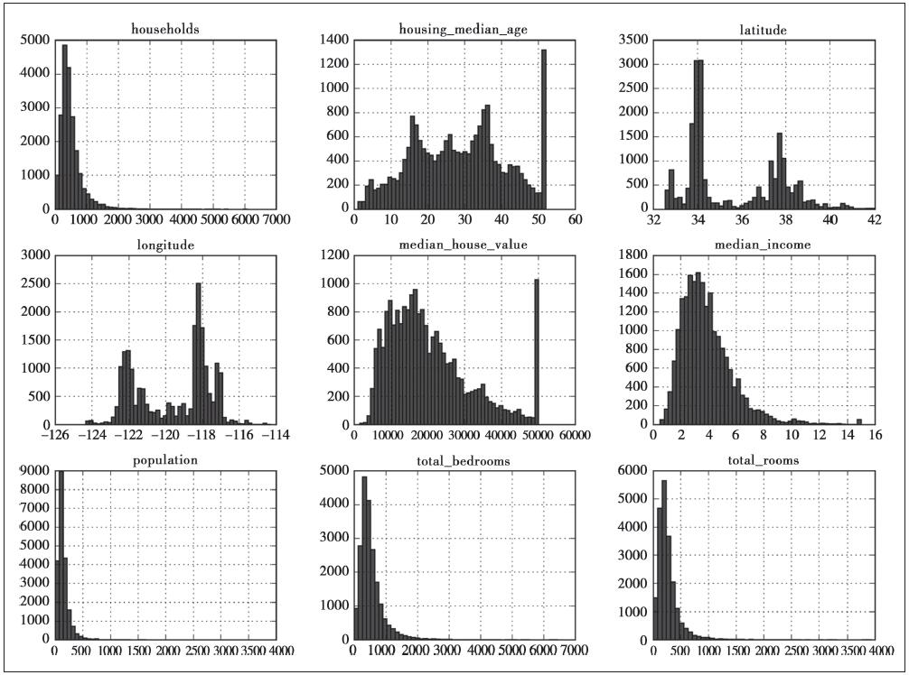
图2-8：每个属性的直方图
hist（）方法依赖于Matplotlib，而Matplotlib又依赖于用户指定的图形后端才能在屏幕上完成绘制。所以在绘制之前，你需要先指定Matplotlib使用哪个后台。最简单的选择是使用Jupyter的神奇命令%matplotlib inline。它会设置Matplotlib从而使用Jupyter自己的后端，随后图形会在笔记本上呈现。需要注意的是，因为Jupyter在执行每个单元格时会自动显示图形，所以在Jupyter笔记本中调用show（）是可选的。
回到直方图，请注意以下几点：
1.首先，收入中位数这个属性看起来不像是用美元（USD）在衡量。经与收集数据的团队核实，你得知数据已经按比例缩小，并框出中位数的上限为15（实际为15.0001），下限为0.5（实际为0.4999）。在机器学习中，使用经过预处理的属性是很常见的事情，倒不一定是个问题，但是你至少需要了解数据是如何计算的。
2.房龄中位数和房价中位数也被设定了上限。而后者正是你的目标属性（标签），这可是个大问题。因为你的机器学习算法很可能会学习到价格永远不会超过这个限制。所以你需要再次与客户（使用你系统的输出的团队）进行核实，查看是否存在问题。如果他们告诉你，他们需要精确的预测值，甚至可以超过50万美元，那么，通常你有两个选择：
a.对那些标签值被设置了上限的地区，重新收集标签值。
b.或是将这些地区的数据从训练集中移除（包括从测试集中移除，因为如果预测值超过500000，系统不应被评估为不良）。
3.这些属性值被缩放的程度各不相同。这点将在本章后文探索特征的缩放时，再做讨论。
4.最后，许多直方图都表现出重尾：图形在中位数右侧的延伸比左侧要远得多。这可能会导致某些机器学习算法难以检测模式。稍后我们会尝试一些转化方法，将这些属性转化为更偏向钟形的分布。
相信现在你对正在处理的数据应该有了更好的理解。
等等！在进一步查看数据之前，你需要先创建一个测试集，然后即可将其放置一旁，不用过多理会。
创建测试集
在这个阶段主动搁置部分数据听起来可能有点奇怪。毕竟，你才只是简单浏览了一下数据而已，在决定用什么算法之前，当然还需要了解更多的知识，对吧？没错，但是大脑是个非常神奇的模式检测系统，也就是说它很容易过度匹配：如果是你本人来浏览测试集数据，你很可能会跌入某个看似有趣的数据模式，进而选择某个特殊的机器学习模型。然后当你再使用测试集对泛化误差率进行估算时，估计结果将会过于乐观，该系统启动后的表现将不如预期那般优秀。这叫作数据窥探偏误（data snooping bias）。
理论上，创建测试集非常简单：只需要随机选择一些实例，通常是数据集的20%，然后将它们放在一边：
代码详情
1 | import numpy as np |
你可以这样使用如下函数：
代码详情
1 | >>> train_set, test_set = split_train_test(housing, 0.2) |
是的，这确实能行，但这并不完美：如果你再运行一遍，它又会产生一个不同的数据集！这样下去，你（或者是你的机器学习算法）将会看到整个完整的数据集，而这正是创建测试集时需要避免的。
解决方案之一是在第一次运行程序后即保存测试集，随后的运行只是加载它而已。另一种方法是在调用np.random.permutation（）之前设置一个随机数生成器的种子（例如，np.random.seed（42）） [7] ，从而让它始终生成相同的随机索引。
但是，这两种解决方案在下一次获取更新的数据时都会中断。常见的解决办法是每个实例都使用一个标识符（identifier）来决定是否进入测试集（假定每个实例都有一个唯一且不变的标识符）。举例来说，你可以计算每个实例标识符的hash值，只取hash的最后一个字节，如果该值小于等于51（约256的20%），则将该实例放入测试集。这样可以确保测试集在多个运行里都是一致的，即便更新数据集也仍然一致。新实例的20%将被放入新的测试集，而之前训练集中的实例也不会被放入新测试集。实现方式如下：
代码详情
1 | import hashlib |
不幸的是，housing数据集没有标识符列。最简单的解决方法是使用行索引作为ID：
代码详情
1 | housing_with_id = housing.reset_index() # adds an `index` column |
如果使用行索引作为唯一标识符，你需要确保在数据集的末尾添加新数据，并且不会删除任何行。如果不能保证这点，那么你可以尝试使用某个最稳定的特征来创建唯一标识符。例如，一个地区的经纬度肯定几百万年都不会变，所以你可以将它们组合成如下的ID： [8]
代码详情
1 | housing_with_id["id"] = housing["longitude"] * 1000 + housing["latitude"] |
Scikit-Learn提供了一些函数，可以通过多种方式将数据集分成多个子集。最简单的函数是train_test_split，它与前面定义的函数split_train_test几乎相同，除了几个额外特征。首先，它也有random_state参数，让你可以像之前提到过的那样设置随机生成器种子；其次，你可以把行数相同的多个数据集一次性发送给它，它会根据相同的索引将其拆分（例如，当你有一个单独的DataFrame用于标记时，这就非常有用）：
代码详情
1 | from sklearn.model_selection import train_test_split |
到目前为止，我们已经思考过了纯随机的抽样方法。如果你的数据集足够庞大（特别是相较于属性的数量而言），这种方式通常不错；如果不是，则有可能会导致明显的抽样偏差。如果一家调查公司想要打电话给1000个人来调研几个问题，他们不会在电话簿中纯随机挑选1000个人。他们试图确保让这1000人能够代表全体人口。例如，美国人口组成为51.3%的女性和48.7%的男性，所以，要想在美国进行一场有效的调查，应该试图维持这一比例：即513名女性和487名男性。这就是分层抽样：将人口划分为均匀的子集，每个子集被称为一层，然后从每层抽取正确的实例数量，以确保测试集合代表了总的人口比例。如果使用纯随机的抽样方法，将有12%的可能得到采样偏斜的测试集——要么女性比例不到49%，要么女性比例超过54%。不论出现哪种情况都会导致调查结果出现重大偏差。
如果你咨询专家，他们会告诉你，要预测房价平均值，收入中位数是一个非常重要的属性。于是你希望确保在收入属性上，测试集能够代表整个数据集中各种不同类型的收入。由于收入中位数是一个连续的数值属性，所以你得先创建一个收入类别的属性。我们先来看一下收入中位数的直方图（见图2-9）：
图2-9：收入类别的直方图
大多数收入中位数值聚集在2～5（万美元）左右，但也有一部分远远超过了6万。在数据集中，每一层都要有足够数量的实例，这一点至关重要，不然数据不足的层，其重要程度很有可能会被错估。也就是说，你不应该将层数分得太多，每一层应该要足够大才行。下面这段代码是这样创建收入类别属性的：将收入中位数除以1.5（限制收入类别的数量），然后使用ceil进行取整（得到离散类别），最后将所有大于5的类别合并为类别5：
代码详情
1 | housing["income_cat"] = np.ceil(housing["median_income"] / 1.5) |
现在，你可以根据收入类别进行分层抽样了。使用Scikit-Learn的Stratified-Shuffle Split类：
代码详情
1 | from sklearn.model_selection import StratifiedShuffleSplit |
看看这个运行是否如我们所料。首先，可以看看所有住房数据根据收入类别的比例分布：
代码详情
1 | >>> housing["income_cat"].value_counts() / len(housing) |
使用类似代码你还可以测量测试集中的收入类别比例分布。图2-10比较了在三种不同的数据集（完整数据集、分层抽样的测试集、纯随机抽样的测试集）中收入类别的比例分布。正如你所见，分层抽样的测试集中的比例分布与完整数据集中的分布几乎一致，而纯随机抽样的测试集结果则出现了重大偏离。
图2-10：分层抽样与纯随机抽样的抽样偏差比较
现在你可以删除income_cat属性，将数据恢复原样了：
代码详情
1 | for set in (strat_train_set, strat_test_set): |
我们花了相当长的时间在测试集的生成上，理由很充分：这是机器学习项目中经常被忽视但是却至关重要的一部分。并且，随讨论到交叉验证时，这里谈到的许多想法也对其大有裨益。现在，是时候进入下一个阶段（数据探索）了。
[1] 推荐最新版Python 3，Python2.7+也可以正常工作，但是已经被弃用。
[2] 我们使用的是Linux和Mac OS系统的bash shell来说明pip的安装步骤。你可能需要在自己的系统上对命令作出相应的调整。Windows系统上我们推荐安装Anaconda。
[3] 你可能需要管理员权限才能运行该命令，如果是这样，请尝试使用sudo前缀运行。
[4] Jupyter可以处理多个版本的Python，甚至可以处理许多其他语言，例如R和Octave。
[5] 你可能还需要检查一下法律约束，例如有些专用字段不能被复制到不安全的数据库。
[6] 在真正的项目中，你需要将这段代码保存在Python文件中，但现在你可以仅仅将其写入Jupyter笔记本。
[7] 经常可以看到人们将随机种子设置为42，这个数字本身没有特殊的属性，只是“关于生命、宇宙和一切的终极问题的答案”而已（译者注：来自《银河系搭车客指南》）。
[8] 位置信息实际上是相当粗粒度的，许多区域可能会拥有完全相同的ID，结果就是它们会被纳入同一个集合（测试集或者训练集）。而这有可能会导致一些抽样偏差。
从数据探索和可视化中获得洞见
到现在为止，我们还只是在快速浏览数据，从而对手头上正在处理的数据类型形成一个大致的了解。本阶段的目标是再深入一点点。
首先，把测试集放在一边，你能探索的只有训练集。此外，如果训练集非常庞大，你可以抽样一个探索集，这样后面的操作更简单快捷一些。不过我们这个案例的数据集非常小，完全可以直接在整个训练集上操作。让我们先创建一个副本，这样可以随便尝试而不损害训练集：
代码详情
1 | housing = strat_train_set.copy() |
将地理数据可视化
由于存在地理位置信息（经度和纬度），因此建立一个各区域的分布图以便于数据可视化是一个很好的想法（见图2-11）：
代码详情
1 | housing.plot(kind="scatter", x="longitude", y="latitude") |
图2-11：数据的地理分布图
没错，这除了看起来跟加利福尼亚州一样以外，很难再看出任何其他的模式。将alpha选项设置为0.1，可以更清楚地看出高密度数据点的位置（见图2-12）。
代码详情
1 | housing.plot(kind="scatter", x="longitude", y="latitude", alpha=0.1) |
图2-12：突出高密度区域的可视化
现在好多了：可以清楚地看到高密度地区，也就是湾区、洛杉矶和圣地亚哥附近，同时在中央山谷有一条相当高密度的长线，特别是萨克拉门托和弗雷斯诺附近。
一般来说，我们的大脑非常善于从图片中发现模式，但是你需要玩转可视化参数才能让这些模式凸显出来。
现在，再来看看房价（见图2-13）。每个圆的半径大小代表了每个地区的人口数量（选项s），颜色代表价格（选项c）。我们使用一个名叫jet的预定义颜色表（选项cmap）来进行可视化，颜色范围从蓝（低）到红（高）： [1]
代码详情
1 | housing.plot(kind="scatter", x="longitude", y="latitude", alpha=0.4, |
图2-13：加利福尼亚州房屋价格
这张图片告诉你房屋价格与地理位置（例如靠海）和人口密度息息相关，这点你可能早已知晓。一个通常很有用的方法是，使用聚类算法来检测主群体，然后再为各个聚类中心添加一个新的衡量邻近距离的特征。海洋邻近度可能就是一个很有用的属性，不过在北加州，沿海地区的房价并不是太高，所以这个简单的规则也不是万能的。
寻找相关性
由于数据集不大，你可以使用corr（）方法轻松计算出每对属性之间的标准相关系数（也称为皮尔逊相关系数）：
代码详情
1 | corr_matrix = housing.corr() |
现在看看每个属性与房屋中位数的相关性分别是多少：
代码详情
1 | >>> corr_matrix["median_house_value"].sort_values(ascending=False) |
相关系数的范围从-1变化到1。越接近1，表示有越强的正相关；比如，当收入中位数上升时，房价中位数也趋于上升。当系数接近于-1，则表示有强烈的负相关；注意看纬度和房价中位数之间呈现出轻微的负相关（也就是说，越往北走，房价倾向于下降）。最后，系数靠近0则说明二者之间没有线性相关性。图2-14显示了横轴和纵轴之间相关性系数的多种绘图。
图2-14：各种数据集的标准相关系数（来源：维基百科，公共领域图像）
相关系数仅测量线性相关性（“如果x上升，则y上升/下降”）。所以它有可能彻底遗漏非线性相关性（例如“如果x接近于零，则y会上升”）。注意上图最下面一排的图像，它们的相关性系数都是0，但是显然我们可以看出横轴和纵轴之间的关系并不是彼此完全独立的：这是非线性关系的例子。此外，图中第二行显示了相关性为1或-1时的例子，需要注意的是，这个相关性跟斜率完全无关。这就好比是说，你本人用英寸来计量的身高与你用英尺甚至是纳米来计量的身高之间的相关系数等于1。
还有一种方法可以检测属性之间的相关性，就是使用Pandas的scatter_matrix函数，它会绘制出每个数值属性相对于其他数值属性的相关性。现在我们有个数值属性，可以得到112＝121个图形，篇幅原因无法完全展示，这里我们仅关注那些与房价中位数属性最相关的，可算作是最有潜力的属性（见图2-15）。
代码详情
1 | from pandas.tools.plotting import scatter_matrix |
图2-15：分布矩阵
如果Pandas将每个变量都与自身相对，那么主对角线（从左上到右下）将全都是直线，这样毫无意义，所以取而代之的方法是，Pandas在这几个图中显示了每个属性的直方图（还有其他选项可选，详情请参考Pandas文档）。
最有潜力能够预测房价中位数的属性是收入中位数，所以我们放大来看看其相关性的散点图（见图2-16）：
代码详情
1 | housing.plot(kind="scatter", x="median_income", y="median_house_value", |
图2-16：收入中位数和房价中位数
图2-16说明了几个问题。首先，二者相关性确实很强，你可以清楚地看到上升的趋势，并且点也不是太分散。其次，前面我们提到过50万美元的价格上限在图中是一条清晰的水平线，不过除此以外，这张图还显示出几条不那么明显的直线：45万美元附近有一条水平线，35万美元附近也有一条，28万美元附近似乎隐约也有一条，再往下可能还有一些。为了避免你的算法学习之后重现这些怪异数据，你可能会尝试删除这些相应地区。
试验不同属性的组合
通过前面的章节，希望让你了解到了一些探索数据并从中获得洞察的方法。在准备开始给机器学习的算法输入数据之前，你可能识别出了一些异常数据，需要提前清理掉；同时，说不定你还发现了不同属性之间的某些有趣联系，特别是跟目标属性相关的联系；再有，你还可能注意到某些属性的分布显示出了明显的“重尾”分布，于是你还需要对它们进行转换处理（例如，计算其对数）。当然了，每个项目的历程都不一样，但是大致思路都相似。
在准备给机器学习算法输入数据之前，你要做的最后一件事应该是尝试各种属性的组合。比如，如果你不知道一个地区有多少个家庭，那么知道一个地区的“房间总数”也没什么用。你真正想要知道的是一个家庭的房间数量。同样地，单看“卧室总数”这个属性本身，也没什么意义，你可能是想拿它和“房间总数”来对比，或者拿来同“每个家庭的人口数”这个属性结合也似乎挺有意思。我们来试着创建这些新属性：
代码详情
1 | housing["rooms_per_household"] = |
然后再来看看关联矩阵：
代码详情
1 | >>> corr_matrix = housing.corr() |
怎么样？还不错吧！新的属性bedrooms_per_room较之“房间总数”或是“卧室总数”与房价中位数的相关性都要高得多。显然卧室/房间比例更低的房屋，往往价格更贵。同样“每个家庭的房间数量”也比“房间总数”更具信息量——房屋越大，价格越贵。
这一轮的探索不一定要多么彻底：关键是迈开第一步，快速取得更深刻的理解，这将有助于你获得非常棒的第一个原型。这也是个不断迭代的过程：一旦你的原型产生并且开始运行，你可以分析它的输出以洞悉更多的见解，然后再次回到这个探索的步骤。
[1] 如果你看到的是灰度图像，请拿出一根红笔，从海湾地区的海岸线一直画到圣地亚哥（可能正如你所料）。还可以在萨克拉门托附近画出一块黄色区域。
机器学习算法的数据准备
现在，终于是时候给你的机器学习算法准备数据了。这里你应该编写函数来执行，而不是手动操作，原因如下：
·你可以在任何数据集上轻松重现这些转换（例如，获得更新的数据库之后）。
·你可以逐渐建立起一个转换函数的函数库，在以后的项目中可以重用。
·你可以在实时系统（live system）中使用这些函数来转换新数据，再喂给算法。
·你可以轻松尝试多种转换方式，查看哪种转换的组合效果最佳。
但是现在，让我们先回到一个干净的数据集（再次复制strat_train_set），然后将预测器和标签分开，因为这里我们不一定对它们使用相同的转换方式（需要注意drop（）会创建一个数据副本，但是不影响strat_train_set）：
代码详情
1 | housing = strat_train_set.drop("median_house_value", axis=1) |
数据清理
大部分的机器学习算法无法在缺失的特征上工作，所以我们要创建一些函数来辅助它。前面我们已经注意到total_bedrooms属性有部分值缺失，所以我们要解决它。有以下三种选择：
·放弃这些相应的地区
·放弃这个属性
·将缺失的值设置为某个值（0、平均数或者中位数等都可以）
通过DataFrame的dropna（）、drop（）和fillna（）方法，可以轻松完成这些操作：
代码详情
1 | housing.dropna(subset=["total_bedrooms"]) # option 1 |
如果你选择方法3，你需要计算出训练集的中位数值，然后用它填充训练集中的缺失值，但也别忘了保存这个计算出来的中位数值，因为后面可能需要用到。比如重新评估系统时，你需要更换测试集中的缺失值；或者在系统上线时，需要使用新数据替代缺失值。
Scikit-Learn提供了一个非常容易上手的教程来处理缺失值：imputer。使用方法如下，首先，你需要创建一个imputer实例，指定你要用属性的中位数值替换该属性的缺失值：
代码详情
1 | from sklearn.preprocessing import Imputer |
由于中位数值只能在数值属性上计算，所以我们需要创建一个没有文本属性的数据副本ocean_proximity：
代码详情
1 | housing_num = housing.drop("ocean_proximity", axis=1) |
使用fit（）方法将imputer实例适配到训练集：
代码详情
1 | imputer.fit(housing_num) |
这里imputer仅仅只是计算了每个属性的中位数值，并将结果存储在其实例变量statistics_中。虽然只有total_bedrooms这个属性存在缺失值，但是我们无法确认系统启动之后新数据中是否一定不存在任何缺失值，所以稳妥起见，还是将imputer应用于所有的数值属性：
代码详情
1 | >>> imputer.statistics_ |
现在，你可以使用这个“训练有素”的imputer将缺失值替换成中位数值完成训练集转换：
代码详情
1 | X = imputer.transform(housing_num) |
结果是一个包含转换后特征的Numpy数组。如果你想要将它放回Pandas DataFrame，也很简单：
代码详情
1 | housing_tr = pd.DataFrame(X, columns=housing_num.columns) |
Scikit-Learn的设计
Scikit-Learn的API设计得非常好。其主要的设计原则是： [1]
·一致性。所有对象共享一个简单一致的界面：
·估算器。能够根据数据集对某些参数进行估算的任意对象都可以被称为估算器（例如，imputer就是一个估算器）。估算由fit（）方法执行，它只需要一个数据集作为参数（或者两个——对于监督式学习算法，第二个数据集包含标签）。引导估算过程的任何其他参数都算作是超参数（例如，imputer’s strategy），它必须被设置为一个实例变量（一般是构造函数参数）。
·转换器。有些估算器（例如imputer）也可以转换数据集，这些被称为转换器。同样，API也非常简单：由transform（）方法和作为参数的待转换数据集一起执行转换，返回的结果就是转换后的数据集。这种转换的过程通常依赖于学习的参数，比如本例中的imputer。所有的转换器都可以使用一个很方便的方法，即fit_transform（），相当于先调用fit（）然后再调用transform（）（但是fit_transform（）有时是被优化过的，所以运行得要更快一些）。
·预测器。最后，还有些估算器能够基于一个给定的数据集进行预测，这被称为预测器。比如，上一章的linearRegression就是一个预测器：它基于一个国家的人均GDP预测该国家的生活满意度。预测器的predict（）方法会接受一个新实例的数据集，然后返回一个包含相应预测的数据集。值得一提的还有一个score（）方法，可以用来衡量给定测试集的预测质量（以及在监督式学习算法里对应的标签）。 [2]
·检查。所有估算器的超参数都可以通过公共实例变量（例如，imputer.strategy）直接访问，并且所有估算器的学习参数也可以通过有下划线后缀的公共实例变量来访问（例如，imputer.strategy_）。
·防止类扩散。数据集被表示为NumPy数组或是SciPy稀疏矩阵，而不是自定义的类型。超参数只是普通的Python字符串或者数字。
·构成。现有的构件尽最大可能重用。例如，任意序列的转换器最后加一个预测器就可以轻松创建一个流水线。
·合理的默认值。Scikit-Learn为大多数参数提供了合理的默认值，从而可以快速搭建起一个基本的工作系统。
处理文本和分类属性
之前我们排除了分类属性ocean_proximity，因为它是一个文本属性，我们无法计算它的中位数值。大部分的机器学习算法都更易于跟数字打交道，所以我们先将这些文本标签转化为数字。
Scikit-Learn为这类任务提供了一个转换器LabelEncoder：
代码详情
1 | >>> from sklearn.preprocessing import LabelEncoder |
现在好了：我们可以将这套数值数据应用于任意机器学习算法。你可以使用classes_属性来查看这个编码器已学习的映射（“<1H OCEAN”对应为0，“INLAND”对应为1，等等）：
代码详情
1 | >>> print(encoder.classes_) |
这种代表方式产生的一个问题是，机器学习算法会以为两个相近的数字比两个离得较远的数字更为相似一些。显然，真实情况并非如此（比如，类别0和类别4之间就比类别0和类别1之间的相似度更高）。为了解决这个问题，常见的解决方案是给每个类别创建一个二进制的属性：当类别是“<1H OCEAN”时，一个属性为1（其他为0），当类别是“INLAND”时，另一个属性为1（其他为0），以此类推。这就是独热编码，因为只有一个属性为1（热），其他均为0（冷）。
Scikit-Learn提供了一个OneHotEncoder编码器，可以将整数分类值转换为独热向量。我们用它来将类别编码为独热向量。值得注意的是，fit_transform（）需要一个二维数组，但是housing_cat_encoded是一个一维数组，所以我们需要将它重塑： [3]
代码详情
1 | >>> from sklearn.preprocessing import OneHotEncoder |
注意到这里的输出是一个SciPy稀疏矩阵，而不是一个NumPy数组。当你有成千上万种类别的分类属性时，这个函数会非常有用。因为当独热编码完成之后，我们会得到一个几千列的矩阵，并且全是0，每行仅有一个1。占用大量内存来存储0是一件非常浪费的事情，因此稀疏矩阵选择仅存储非零元素的位置。而你依旧可以像使用一个普通的二维数组那样来使用它， [4] 当然如果你实在想把它转换成一个（密集的）NumPy数组，只需要调用toarray（）方法即可：
代码详情
1 | >>> housing_cat_1hot.toarray() |
使用LabelBinarizer类可以一次性完成两个转换（从文本类别转化为整数类别，再从整数类别转换为独热向量）：
代码详情
1 | >>> from sklearn.preprocessing import LabelBinarizer |
注意，这时默认返回的是一个密集的NumPy数组。通过发送sparse_output=True给LabelBinarizer构造函数，可以得到稀疏矩阵。
自定义转换器
虽然Scikit-Learn已经提供了许多有用的转换器，但是你仍然需要为一些诸如自定义清理操作或是组合特定属性等任务编写自己的转换器。你当然希望让自己的转换器与Scikit-Learn自身的功能（比如流水线）无缝衔接，而由于Scikit-Learn依赖于鸭子类型（duck typing）的编译，而不是继承，所以你所需要的只是创建一个类，然后应用以下三个方法：fit（）（返回自身）、transform（）、fit_transform（）。如果添加TransformerMixin作为基类，就可以直接得到最后一个方法。同时，如果添加BaseEstimator作为基类（并在构造函数中避免args和*kargs），你还能额外获得两个非常有用的自动调整超参数的方法（get_params（）和set_params（））。例如，我们前面讨论过的组合属性，这里有个简单的转换器类，用来添加组合后的属性：
代码详情
1 | from sklearn.base import BaseEstimator, TransformerMixin |
在本例中，转换器有一个超参数add_bedrooms_per_room默认设置为True（提供合理的默认值通常是很有帮助的）。这个超参数可以让你轻松知晓添加这个属性是否有助于机器学习的算法。更广泛地说，如果你对数据准备的步骤没有充分的信心，就可以添加这个超参数来进行把关。这些数据准备步骤的执行越自动化，你自动尝试的组合也就越多，从而有更大可能从中找到一个重要的组合（还节省了大量时间）。
特征缩放
最重要也最需要应用到数据上的转换器，就是特征缩放。如果输入的数值属性具有非常大的比例差异，往往导致机器学习算法的性能表现不佳，当然也有极少数特例。案例中的房屋数据就是这样：房间总数的范围从6到39320，而收入中位数的范围是0到15。注意，目标值通常不需要缩放。
同比例缩放所有属性，常用的两种方法是：最小-最大缩放和标准化。
最小-最大缩放（又叫作归一化）很简单：将值重新缩放使其最终范围归于0到1之间。实现方法是将值减去最小值并除以最大值和最小值的差。对此，Scikit-Learn提供了一个名为MinMaxScaler的转换器。如果出于某种原因，你希望范围不是0～1，你可以通过调整超参数feature_range进行更改。
标准化则完全不一样：首先减去平均值（所以标准化值的均值总是零），然后除以方差，从而使得结果的分布具备单位方差。不同于最小-最大缩放的是，标准化不将值绑定到特定范围，对某些算法而言，这可能是个问题（例如，神经网络期望的输入值范围通常是0到1）。但是标准化的方法受异常值的影响更小。例如，假设某个地区的平均收入等于100（错误数据）。最小-最大缩放会将所有其他值从0～15降到0～0.15，而标准化则不会受到很大影响。Scikit-Learn提供了一个标准化的转换器StandadScaler。
重要的是，跟所有转换一样，缩放器仅用来拟合训练集，而不是完整的数据集（包括测试集）。只有这样，才能使用它们来进行转换。
转换流水线
正如你所见，许多数据转换的步骤需要以正确的顺序来执行。而Scikit-Learn正好提供了Pipeline来支持这样的转换。下面是一个数值属性的流水线例子：
代码详情
1 | from sklearn.pipeline import Pipeline |
Pipeline构造函数会通过一系列名称/估算器的配对来定义步骤的序列。除了最后一个是估算器之外，前面都必须是转换器（也就是说，必须有fit_transform（）方法）。至于命名，可以随意，你喜欢就好。
当调用流水线的fit（）方法时，会在所有转换器上按照顺序依次调用fit_transform（），将一个调用的输出作为参数传递给下一个调用方法，直到传递到最终的估算器，则只会调用fit（）方法。
流水线的方法与最终的估算器的方法相同。在本例中，最后一个估算器是StandardScaler，这是个转换器，因此Pipeline有transform（）方法可以按顺序将所有的转换应用到数据中（如果不希望先调用fit（）再调用transform（），也可以直接调用fit_transform（）方法）。
现在，你已经有了一个处理数值的流水线，接下来你需要在分类值上应用LabelBinarizer：不然怎么将这些转换加入单个流水线中？Scikit-Learn为此特意提供了一个FeatureUnion类。你只需要提供一个转换器列表（可以是整个转换器流水线），当transform（）方法被调用时，它会并行运行每个转换器的transform（）方法，等待它们的输出，然后将它们连结起来，返回结果（同样地，调用fit（）方法也会调用每个转换器的fit（）方法）。一个完整的处理数值和分类属性的流水线可能如下所示：
代码详情
1 | from sklearn.pipeline import FeatureUnion |
运行整条流水线：
代码详情
1 | >>> housing_prepared = full_pipeline.fit_transform(housing) |
每条子流水线从选择器转换器开始：只需要挑出所需的属性（数值或分类），删除其余的数据，然后将生成的DataFrame转换为NumPy数组，数据转换就完成了。Scikit-Learn中没有可以用来处理Pandas DataFrames的 [5] ，因此我们需要为此任务编写一个简单的自定义转换器：
代码详情
1 | from sklearn.base import BaseEstimator, TransformerMixin |
[1] 有关设计原则的更多细节，请参见“API design for machine learning software：experiences from the scikit-learn project”，L.Buitinck，G.Louppe，M.Blondel，F.Pedregosa，A.Müller，等人（2013年）。
[2] 某些预测器还提供了衡量其预测信心的方法。
[3] NumPy 的reshape（）函数允许一个维度等于-1，也就是“未指定”：该值由数组的长度和其余维度来推断。
[4] 详见SciPy的文档。
[5] 不过查看Pull Request #3886，提到一个ColumnTransformer类可以让特定属性的转换更容易些。你也可以运行pip3 install sklearn-pandas来获取DataFrameMapper类，也同样可以达到目的。
选择和训练模型
至此，你框出了问题，获得了数据，也进行了数据探索，然后对训练集和测试集进行了抽样并编写了转换流水线，从而可以自动清理和准备机器学习算法的数据了！现在是时候选择机器学习模型并展开训练了。
培训和评估训练集
好消息是，在经过前面的步骤之后，事情现在变得比想象中容易很多。首先，如同我们在上一章所做的，先训练一个线性回归模型：
代码详情
1 | from sklearn.linear_model import LinearRegression |
现在你有一个可以工作的线性回归模型了。让我们用几个训练集的实例试试：
代码详情
1 | >>> some_data = housing.iloc[:5] |
可以工作了，虽然预测还不是很准确。（例如，第二次的预测失效超过50%！）我们可以使用Scikit-Learn的mean_squared_error函数来测量整个训练集上回归模型的RMSE：
代码详情
1 | >>> from sklearn.metrics import mean_squared_error |
好吧，这虽然比什么都没有要好，但显然也不是一个好看的成绩：大多数地区的median_housing_values分布在120000到265000美元之间，所以典型的预测误差达到68628美元只能算是差强人意。这就是一个典型的模型对训练数据拟合不足的案例。这种情况发生时，通常意味着这些特征可能无法提供足够的信息来做出更好的预测，或者是模型本身不够强大。我们在上一章已经提到，想要修正拟合不足，可以通过选择更强大的模型，或是为算法训练提供更好的特征，又或者是减少对模型的限制等方法。我们这个模型不是一个正则化的模型，所以就排除了最后那个选项。你可以试试添加更多的特征（例如，人口数量的日志），但首先，让我们尝试一个更复杂的模型，看看它到底是怎么工作的。
我们来训练一个DecisionTreeRegressor。这是一个非常强大的模型，它能够从数据中找到复杂的非线性关系（关于决策树在第6章会有更详细的介绍）。下面的代码现在看来应该已经很熟悉了：
代码详情
1 | from sklearn.tree import DecisionTreeRegressor |
既然这个模型已经训练有素，我们可以用训练集来评估一下：
代码详情
1 | >>> housing_predictions = tree_reg.predict(housing_prepared) |
等等，什么！完全没有错误？这个模型真的可以做到绝对完美吗？当然，更有可能的是这个模型对数据严重过度拟合了。我们怎么确认呢？前面提到过，在你有信心启动模型之前，都不要触碰测试集，所以这里，你需要拿训练集中的一部分用于训练，另一部分用于模型的验证。
使用交叉验证来更好地进行评估
评估决策树模型的一种方法是使用train_test_split函数将训练集分为较小的训练集和验证集，然后根据这些较小的训练集来训练模型，并对其进行评估。这虽然有一些工作量，但是不会太难，并且非常有效。
另一个不错的选择是使用Scikit-Learn的交叉验证功能。以下是执行K-折（K-fold）交叉验证的代码：它将训练集随机分割成10个不同的子集，每个子集称为一个折叠（fold），然后对决策树模型进行10次训练和评估——每次挑选1个折叠进行评估，使用另外的9个折叠进行训练。产出的结果是一个包含10次评估分数的数组：
代码详情
1 | from sklearn.model_selection import cross_val_score |
Scikit-Learn的交叉验证功能更倾向于使用效用函数（越大越好）而不是成本函数（越小越好），所以计算分数的函数实际上是负的MSE（一个负值）函数，这就是为什么上面的代码在计算平方根之前会先计算出-scores。
让我们看看结果：
代码详情
1 | >>> def display_scores(scores): |
这次的决策树模型好像不如之前表现得好。事实上，看起来简直比线性回归模型还要糟糕！请注意，交叉验证不仅可以得到一个模型性能的评估值，还可以衡量该评估的精确度（即其标准偏差）。这里该决策树得出的评分约为71200，上下浮动±3200。如果你只使用了一个验证集，就收不到这样的结果信息。交叉验证的代价就是要多次训练模型，因此也不是永远都行得通。
保险起见，让我们也计算一下线性回归模型的评分：
代码详情
1 | >>> lin_scores = cross_val_score(lin_reg, housing_prepared, housing_labels, |
没错，决策树模型确实是严重过度拟合了，以至于表现得比线性回归模型还要糟糕。
我们再来试试最后一个模型：RandomForestRegressor。在后面的第7章中，我们将会了解到随机森林的工作原理，通过对特征的随机子集进行许多个决策树的训练，然后对其预测取平均。在多个模型的基础之上建立模型，称为集成学习，这是进一步推动机器学习算法的好方法。这里我们将跳过大部分代码，因为与其他模型基本相同：
代码详情
1 | >>> from sklearn.ensemble import RandomForestRegressor |
哇，这个就好多了：随机森林看起来很有戏。但是，请注意，训练集上的分数仍然远低于验证集，这意味着该模型仍然对训练集过度拟合。过度拟合的可能解决方案包括简化模型、约束模型（即使其正规化），或是获得更多的训练数据。不过在深入探索随机森林之前，你应该先尝试一遍各种机器学习算法的其他模型（几种具有不同内核的支持向量机，比如神经网络模型等），但是记住——别花太多时间去调整超参数。我们的目的是筛选出几个（2～5个）有效的模型。
每一个尝试过的模型你都应该妥善保存，这样将来你可以轻松回到你想要的模型当中。记得还要同时保存超参数和训练过的参数，以及交叉验证的评分和实际预测的结果。这样你就可以轻松地对比不同模型类型的评分，以及不同模型造成的错误类型。通过Python的pickel模块或是sklearn.externals.joblib，你可以轻松保存Scikit-Learn模型，这样可以更有效地将大型NumPy数组序列化：
代码详情
1 | from sklearn.externals import joblib |
微调模型
假设你现在已经有了一个有效模型的候选列表。现在你需要的是对它们进行微调。我们来看几个可行的方法。
网格搜索
一种微调的方法是手动调整超参数，找到一组很好的超参数值组合。这个过程非常枯燥乏味，你可能坚持不到足够的时间来探索出各种组合。
相反，你可以用Scikit-Learn的GridSearchCV来替你进行探索。你所要做的只是告诉它你要进行实验的超参数是什么，以及需要尝试的值，它将会使用交叉验证来评估超参数值的所有可能的组合。例如，下面这段代码搜索RandomForestRegressor的超参数值的最佳组合：
代码详情
1 | from sklearn.model_selection import GridSearchCV |
当你不知道超参数应该赋什么值时，一个简单的方法是连续尝试10的幂次方（如果你想要得到更细粒度的搜索，可以参考这个例子中所示的n_estimators超参数）。
这个param_grid告诉Scikit-Learn，首先评估第一个dict中的n_estimator和max_features的所有3×4＝12种超参数值组合（先不要担心这些超参数现在意味着什么，我们将在第7章中进行解释），接着，尝试第二个dict中超参数值的所有2×3＝6种组合，但这次超参数bootstrap需要设置为False而不是True（True是该超参数的默认值）。
总而言之，网格搜索将探索RandomForestRegressor超参数值的12＋6＝18种组合，并对每个模型进行五次训练（因为我们使用的是5-折交叉验证）。换句话说，总共会完成18×5＝90次训练！这可能需要相当长的时间，但是完成后你就可以获得最佳的参数组合：
代码详情
1 | >>> grid_search.best_params_ |
因为被评估的n_estimator最大值是30，你还可以试试更高的值，评分可能还会继续改善。
你可以直接得到最好的估算器：
代码详情
1 | >>> grid_search.best_estimator_ |
如果GridSearchCV被初始化为refit=True（这也是默认值），那么一旦通过交叉验证找到了最佳估算器，它将在整个训练集上重新训练。这通常是个好方法，因为提供更多的数据很可能提升其性能。
当然还有评估分数：
代码详情
1 | >>> cvres = grid_search.cv_results_ |
在本例中，我们得到的最佳解决方案是将超参数max_features设置为6，n_estimators设置为30。这个组合的RMSE分数为49959，略高于之前使用默认超参数值的分数52634。恭喜你，你成功地将你的模型调整到了最佳模式！
不要忘了，有些数据准备的步骤也可以当作超参数来处理。例如，网格搜索会自动查找是否添加你不确定的特征（比如是否使用转换器CombinedAttributesAdder的超参数add_bedrooms_per_room）。同样，还可以用它来自动寻找处理问题的最佳方法，例如处理异常值、缺失特征，以及特征选择等。
随机搜索
如果探索的组合数量较少——例如上一个示例，网格搜索是一个不错的方法；但是当超参数的搜索范围（search space）较大时，通常会优先选择使用RandomizedSearchCV。这个类用起来与GridSearchCV类大致相同，但它不会尝试所有可能的组合，而是在每次迭代中为每个超参数选择一个随机值，然后对一定数量的随机组合进行评估。这个方法有两个显著特性：
·如果运行随机搜索1000个迭代，那么将会探索每个超参数的1000个不同的值（而不是像网格搜索方法那样每个超参数仅探索少量几个值）。
·通过简单地设置迭代次数，可以更好地控制要分配给探索的超参数的计算预算。
集成方法
还有一种微调系统的方法是将表现最优的模型组合起来。组合（或“集成”）方法通常比最佳的单一模型更好（就像随机森林比其所依赖的任何单个决策树模型更好一样），特别是当单一模型会产生严重不同类型的错误时更是如此。我们将在第7章中更详细地介绍这个主题。
分析最佳模型及其错误
通过检查最佳模型，你总是可以得到一些好的洞见。例如在进行准确预估时，Random ForestRegressor可以指出每个属性的相对重要程度：
代码详情
1 | >>> feature_importances = grid_search.best_estimator_.feature_importances_ |
将这些重要性分数显示在对应的属性名称旁边：
代码详情
1 | >>> extra_attribs = ["rooms_per_hhold", "pop_per_hhold", |
有了这些信息，你可以尝试删除一些不太有用的特征（例如，本例中只有一个ocean_proximity是有用的，我们可以试着删除其他所有特征）。
然后，你还应该查看一下系统产生的具体错误，尝试了解它们是怎么产生的，以及该怎么解决（通过添加额外的特征，或是删除没有信息的特征，清除异常值，等等）。
通过测试集评估系统
通过一段时间的训练，你终于有了一个表现足够优秀的系统。现在是用测试集评估最终模型的时候了。这个过程没有什么特别的：只需要从测试集中获取预测器和标签，运行full_pipeline来转换数据（调用transform（）而不是fit_transform（）），然后在测试集上评估最终模型：
代码详情
1 | final_model = grid_search.best_estimator_ |
如果之前进行过大量的超参数调整，这时的评估结果通常会略逊于你之前使用交叉验证时的表现结果（因为通过不断调整，系统在验证数据上终于表现良好，在未知数据集上可能达不到这么好的效果）。在本例中，结果虽然并非如此，但是当这种情况发生时，你一定要忍住继续调整超参数的诱惑，不要试图再努力让测试集的结果也变得好看一些，因为这些改进在泛化到新的数据集时又会变成徒劳。
现在进入项目预启动阶段：你将要展示你的解决方案（强调学习了什么，什么有用，什么没有用，基于什么假设，以及系统的限制有哪些），记录所有事情，通过清晰的可视化和易于记忆的陈述方式，制作漂亮的演示文稿（例如，“收入中位数是预测房价的首要指标”）。
启动、监控和维护系统
你的系统获准启动了！你需要为生产环境做好准备，特别是将生产数据源接入系统，并编写测试。
还需要编写监控代码，以定期检查系统的实时性能，同时在性能下降时触发警报。重要的是，这里需要捕捉的不仅只是突然的系统崩溃，系统性能的退化也值得关注。这个问题很常见，因为随着时间的推移，数据不断进化，模型会渐渐“腐坏”，除非定期使用新数据训练模型。
评估系统性能，需要对系统的预测结果进行抽样并评估。通常这一步需要人工分析。分析师可能是领域专家，或者是众包平台的工作人员（例如Amazon Mechanical Turk或CrowdFlower）。不管怎么说，你都需要将人工评估的流水线接入你的系统。
你还需要评估输入系统的数据的质量。质量较差的数据（比如用来发送随机值的传感器故障，或者是其他团队的输出变得过时）会导致性能略微下降，但是要降到触发警报还需要一段时间。所以如果你监控系统的输入，就可以更快地捕捉到这个信号。对于在线学习来说，监控系统输入尤其重要。
一般来说，最后你要使用新鲜数据定期训练你的模型。这个过程要尽可能自动化。如若不然，你很有可能每6个月（最多）需要更新一次你的模型，久而久之，系统性能也会发生严重波动。如果是在线学习系统，你应当定期保存系统状态的快速备份，以便于轻松回滚到之前的工作状态。
试试看
希望通过本章内容，能够让你了解一个机器学习项目大概是什么样子，同时本章也提供了一些用来训练系统的工具。如你所见，大部分工作主要用在数据准备、构建监控工具、建立人工评估的流水线以及自动定期训练模型上。机器学习的算法固然重要，但是最好还是对整个流程都熟悉一遍，掌握3～4个合适的算法，不要将所有的时间都用来探索高级的算法，而对整个流程视而不见。
如果你还没有动手尝试，现在是打开电脑的好时机，选择一个你感兴趣的数据集，尝试从A到Z的整个过程。诸如 http://kaggle.com/ 的竞赛网站是一个不错的起点：它会给你一个数据集、一个明确的目标，以及可以一起分享经验的同伴。
练习
使用本章的房屋数据集：
1.使用不同的超参数，如kernel=”linear”（具有C超参数的多种值）或kernel=”rbf”（C超参数和gamma超参数的多种值），尝试一个支持向量机回归器，不用担心现在不知道这些超参数的含义。最好的SVR预测器是如何工作的？
2.尝试用RandomizedSearchCV替换GridSearchCV。
3.尝试在准备流水线中添加一个转换器，从而只选出最重要的属性。
4.尝试创建一个覆盖完整的数据准备和最终预测的流水线。
5.使用GridSearchCV自动探索一些准备选项。
以上练习的解决方案可以在Jupyter笔记本上获得，链接地址为： https://github.com/ageron/handson-ml 。
第3章 分类
第1章提到，最常见的监督式学习任务包括回归任务（预测值）和分类任务（预测类）。第2章探讨了一个回归任务——预测住房价格，用到了线性回归、决策树以及随机森林等各种算法（我们将会在后续章节中进一步讲解这些算法）。本章中我们将把注意力转向分类系统。
MNIST
本章将使用MNIST数据集，这是一组由美国高中生和人口调查局员工手写的70000个数字的图片。每张图像都用其代表的数字标记。这个数据集被广为使用，因此也被称作是机器学习领域的“Hello World”：但凡有人想到了一个新的分类算法，都会想看看在MNIST上的执行结果。因此只要是学习机器学习的人，早晚都要面对MNIST。
Scikit-Learn提供了许多助手功能来帮助你下载流行的数据集。MNIST也是其中之一。下面是获取MNIST数据集的代码： [1]
代码详情
1 | >>> from sklearn.datasets import fetch_mldata |
Scikit-Learn加载的数据集通常具有类似的字典结构，包括：
·DESCR键，描述数据集
·data键，包含一个数组，每个实例为一行，每个特征为一列
·target键，包含一个带有标记的数组
我们来看看这些数组：
代码详情
1 | >>> X, y = mnist["data"], mnist["target"] |
共有7万张图片，每张图片有784个特征。因为图片是28×28像素，每个特征代表了一个像素点的强度，从0（白色）到255（黑色）。先来看看数据集中的一个数字，你只需要随手抓取一个实例的特征向量，将其重新形成一个28×28数组，然后使用Matplotlib的imshow（）函数将其显示出来：
代码详情
1 | %matplotlib inline |
看起来像一个5，而标签告诉我们没错：
代码详情
1 | >>> y[36000] |
图3-1显示了更多MNIST数据集中的数字图像，让你对分类任务的复杂程度有一个初步的感受。
可是等等！在开始深入研究这些数据之前，你还是应该先创建一个测试集，并将其放在一边。事实上MNIST数据集已经分成训练集（前6万张图像）和测试集（最后1万张图像）了：
代码详情
1 | X_train, X_test, y_train, y_test = X[:60000], X[60000:], y[:60000], |
图3-1：MNIST数据集中的部分数字图像
同样，我们先将训练集数据洗牌，这样能保证交叉验证时所有的折叠都差不多（你肯定不希望某个折叠丢失一些数字）。此外，有些机器学习算法对训练实例的顺序敏感，如果连续输入许多相似的实例，可能导致执行性能不佳。给数据集洗牌正是为了确保这种情况不会发生： [2]
代码详情
1 | import numpy as np |
[1] 默认情况下，Scikit-Learn将下载的数据集缓存在目录$HOME/scikit_learn_data中。
[2] 在某些情况下，给数据洗牌可能是个坏主意—比如你处理的是时间序列数据（例如，股票市场价格或者天气情况）。我们将在下一章探讨这个问题。
训练一个二元分类器
现在，先简化问题，只尝试识别一个数字——比如数字5。那么这个“数字5检测器”就是一个二元分类器的例子，它只能区分两个类别：5和非5。先为此分类任务创建目标向量：
代码详情
1 | y_train_5 = (y_train == 5) # True for all 5s, False for all other digits. |
接着挑选一个分类器并开始训练。一个好的初始选择是随机梯度下降（SGD）分类器，使用Scikit-Learn的SGDClassifier类即可。这个分类器的优势是，能够有效处理非常大型的数据集。这部分是因为SGD独立处理训练实例，一次一个（这也使得SGD非常适合在线学习），稍后我们将会看到。此时先创建一个SGDClassifier并在整个训练集上进行训练：
代码详情
1 | from sklearn.linear_model import SGDClassifier |
SGDClassifier在训练时是完全随机的（因此得名“随机”），如果你希望得到可复现的结果，需要设置参数random_state。
现在可以用它来检测数字5的图像了：
代码详情
1 | >>> sgd_clf.predict([some_digit]) |
分类器猜这个图像代表一个5（True）。看起来这次它猜对了！那么，下面评估一下这个模型的性能。
性能考核
评估分类器比评估回归器要困难得多，因此本章将用很多篇幅来讨论这个主题，同时会涉及许多性能考核的方法，所以，不妨再倒一杯咖啡，做好准备学习更多的新概念和缩略词吧！
使用交叉验证测量精度
正如第2章所述，交叉验证是一个评估模型的好办法。
实施交叉验证
相比于cross_val_score（）这一类交叉验证的函数，有时你可能希望自己能控制得多一些。在这种情况下，你可以自行实施交叉验证，操作也简单明了。下面这段代码与前面的cross_val_score（）大致相同，并打印出相同的结果：
代码详情
1 | from sklearn.model_selection import StratifiedKFold |
每个折叠由StratifiedKFold执行分层抽样（见第2章）产生，其所包含的各个类的比例符合整体比例。每个迭代会创建一个分类器的副本，用训练集对这个副本进行训练，然后用测试集进行预测。最后计算正确预测的次数，输出正确预测的比率。
现在，用cross_val_score（）函数来评估SGDClassifier模型，采用K-fold交叉验证法，3个折叠。记住，K-fold交叉验证的意思是将训练集分解成K个折叠（在本例中，为3折），然后每次留其中1个折叠进行预测，剩余的折叠用来训练（参见第2章）：
代码详情
1 | >>> from sklearn.model_selection import cross_val_score |
所有折叠交叉验证的准确率（正确预测的比率）超过95%？看起来挺神奇的，是吗？不过在你开始激动之前，我们来看一个蠢笨的分类器，它将每张图都分类成“非5”：
代码详情
1 | from sklearn.base import BaseEstimator |
能猜到这个模型的准确度吗？我们看看：
代码详情
1 | >>> never_5_clf = Never5Classifier() |
没错，准确率超过90%！这是因为只有大约10%的图像是数字5，所以如果你猜一张图不是5，90%的时间你都是正确的，简直超越了大预言家！
这说明准确率通常无法成为分类器的首要性能指标，特别是当你处理偏斜数据集（skewed dataset）的时候（即某些类比其他类更为频繁）。
混淆矩阵
评估分类器性能的更好方法是混淆矩阵。总体思路就是统计A类别实例被分成为B类别的次数。例如，要想知道分类器将数字3和数字5混淆多少次，只需要通过混淆矩阵的第5行第3列来查看。
要计算混淆矩阵，需要先有一组预测才能将其与实际目标进行比较。当然可以通过测试集来进行预测，但是现在先不要动它（测试集最好留到项目最后，准备启动分类器时再使用）。作为替代，可以使用cross_val_predict（）函数：
代码详情
1 | from sklearn.model_selection import cross_val_predict |
与cross_val_score（）函数一样，cross_val_predict（）函数同样执行K-fold交叉验证，但返回的不是评估分数，而是每个折叠的预测。这意味着对于每个实例都可以得到一个干净的预测（“干净”的意思是模型预测时使用的数据，在其训练期间从未见过）。
现在，可以使用confusion_matrix（）函数来获取混淆矩阵了。只需要给出目标类别（y_train_5）和预测类别（y_train_pred）即可：
代码详情
1 | >>> from sklearn.metrics import confusion_matrix |
混淆矩阵中的行表示实际类别，列表示预测类别。本例中第一行表示所有“非5”（负类）的图片中：53272张被正确地分为“非5”类别（真负类），1307张被错误地分类成了“5”（假正类）；第二行表示所有“5”（正类）的图片中：1077张被错误地分为“非5”类别（假负类），4344张被正确地分在了“5”这一类别（真正类）。一个完美的分类器只有真正类和真负类，所以它的混淆矩阵只会在其对角线（左上到右下）上有非零值：
代码详情
1 | >>> confusion_matrix(y_train_5, y_train_perfect_predictions) |
混淆矩阵能提供大量信息，但有时你可能希望指标更简洁一些。正类预测的准确率是一个有意思的指标，它也称为分类器的精度（公式3-1）：
公式3-1：精度
TP是真正类的数量，FP是假正类的数量。
做一个单独的正类预测，并确保它是正确的，就可以得到完美精度（精度＝1/1＝100%）。但这没什么意义，因为分类器会忽略这个正类实例之外的所有内容。因此，精度通常与另一个指标一起使用，这个指标就是召回率（recall），也称为灵敏度（sensitivity）或者真正类率（TPR）：它是分类器正确检测到的正类实例的比率（公式3-2）：
公式3-2：召回率
FN是假负类的数量。
如果你对混淆矩阵还是感到疑惑，图3-2或许可以帮助你理解。
图3-2：图解混淆矩阵
精度和召回率
Scikit-Learn提供了计算多种分类器指标的函数，精度和召回率也是其一：
代码详情
1 | >>> from sklearn.metrics import precision_score, recall_score |
现在再看，这个5-检测器看起来似乎并不像它的准确率那么光鲜亮眼了。当它说一张图片是5时，只有77%的时间是准确的，并且也只有79%的数字5被它检测出来了。
因此我们可以很方便地将精度和召回率组合成一个单一的指标，称为F 1 分数。当你需要一个简单的方法来比较两种分类器时，这是个非常不错的指标。F 1 分数是精度和召回率的谐波平均值（见公式3-3）。正常的平均值平等对待所有的值，而谐波平均值会给予较低的值更高的权重。因此，只有当召回率和精度都很高时，分类器才能得到较高的F 1 分数。
公式3-3：F 1 分数
要计算F 1 分数，只需要调用f1_score（）即可：
代码详情
1 | >>> from sklearn.metrics import f1_score |
F 1 分数对那些具有相近的精度和召回率的分类器更为有利。这不一定能一直符合你的期望：在某些情况下，你更关心的是精度，而另一些情况下，你可能真正关心的是召回率。例如，假设你训练一个分类器来检测儿童可以放心观看的视频，那么你可能更青睐那种拦截了很多好视频（低召回率），但是保留下来的视频都是安全（高精度）的分类器，而不是召回率虽高，但是在产品中可能会出现一些非常糟糕的视频的分类器（这种情况下，你甚至可能会添加一个人工流水线来检查分类器选出来的视频）。反过来说，如果你训练一个分类器通过图像监控来检测小偷：你大概可以接受精度只有30%，只要召回率能达到99%（当然，安保人员会收到一些错误的警报，但是几乎所有的窃贼都在劫难逃）。
遗憾的是，鱼和熊掌不可兼得：你不能同时增加精度并减少召回率，反之亦然。这称为精度/召回率权衡。
精度/召回率权衡
要理解这个权衡过程，我们来看看SGDClassifier如何进行分类决策。对于每个实例，它会基于决策函数计算出一个分值，如果该值大于阈值，则将该实例判为正类，否则便将其判为负类。图3-3显示了从左边最低分到右边最高分的几个数字。假设决策阈值位于中间箭头位置（两个5之间）：在阈值的右侧可以找到4个真正类（真的5），一个假正类（实际上是6）。因此，在该阈值下，精度为80%（4/5）。但是在6个真正的5中，分类器仅检测到了4个，所以召回率为67%（4/6）。现在，如果提高阈值（将其挪动到右边箭头的位置），假正类（数字6）变成了真负类，因此精度得到提升（本例中提升到100%），但是一个真正类变成一个假负类，召回率降低至50%。反之，降低阈值则会在增加召回率的同时降低精度。
图3-3：决策阈值和精度/召回率权衡
Scikit-Learn不允许直接设置阈值，但是可以访问它用于预测的决策分数。不是调用分类器的predict（）方法，而是调用decision_function（）方法，这个方法返回每个实例的分数，然后就可以根据这些分数，使用任意阈值进行预测了：
代码详情
1 | >>> y_scores = sgd_clf.decision_function([some_digit]) |
SGDClassifier分类器使用的阈值是0，所以前面的代码返回结果与predict（）方法一样（也就是True）。我们来试试提升阈值：
代码详情
1 | >>> threshold = 200000 |
这证明了提高阈值确实可以降低召回率。这张图确实是5，当阈值为0时，分类器可以检测到该图，但是当阈值提高到200000时，就错过了这张图。
那么要如何决定使用什么阈值呢？首先，使用cross_val_predict（）函数获取训练集中所有实例的分数，但是这次需要它返回的是决策分数而不是预测结果：
代码详情
1 | y_scores = cross_val_predict(sgd_clf, X_train, y_train_5, cv=3, |
有了这些分数，可以使用precision_recall_curve（）函数来计算所有可能的阈值的精度和召回率：
代码详情
1 | from sklearn.metrics import precision_recall_curve |
最后，使用Matplotlib绘制精度和召回率相对于阈值的函数图（见图3-4）：
代码详情
1 | def plot_precision_recall_vs_threshold(precisions, recalls, thresholds): |
图3-4：精度和召回率vs决策阈值
你可能会感到好奇，为什么在图3-4中精度曲线比召回率曲线要崎岖一些？原因在于，当你提高阈值时，精度有时也有可能会下降（尽管总体趋势是上升的）。要理解原因，可以回头看图3-3，注意，当把阈值从中间箭头往右移动一位数时：精度从4/5（80%）下降到3/4（75%）。另一方面，当阈值上升时，召回率只会下降，这就解释了为什么召回率的曲线看起来很平滑。
现在，就可以通过轻松选择阈值来实现最佳的精度/召回率权衡了。还有一种找到好的精度/召回率权衡的方法是直接绘制精度和召回率的函数图，如图3-5所示。
图3-5：精度vs召回率
从图中可以看到，从80%的召回率往右，精度开始急剧下降。你可能会尽量在这个陡降之前选择一个精度/召回率权衡——比如召回率60%。当然，如何选择取决于你的项目。
假设你决定瞄准90%的精度目标。通过绘制的第一张图（放大一点），得出需要使用的阈值大概是70000。要进行预测（现在是在训练集上），除了调用分类器的predict（）方法，也可以运行这段代码：
代码详情
1 | y_train_pred_90 = (y_scores > 70000) |
我们检查一下这些预测结果的精度和召回率：
代码详情
1 | >>> precision_score(y_train_5, y_train_pred_90) |
现在你有一个90%精度的分类器了（或者足够接近）！如你所见，创建任意一个你想要的精度的分类器是相当容易的事情：只要阈值足够高即可！然而，如果召回率太低，精度再高，其实也不怎么有用！
如果有人说：“我们需要99%的精度。”你就应该问：“召回率是多少？”
ROC曲线
还有一种经常与二元分类器一起使用的工具，叫作受试者工作特征曲线（简称ROC）。它与精度/召回率曲线非常相似，但绘制的不是精度和召回率，而是真正类率（召回率的另一名称）和假正类率（FPR）。FPR是被错误分为正类的负类实例比率。它等于1减去真负类率（TNR），后者是被正确分类为负类的负类实例比率，也称为特异度。因此，ROC曲线绘制的是灵敏度和（1-特异度）的关系。
要绘制ROC曲线，首先需要使用roc_curve（）函数计算多种阈值的TPR和FPR：
代码详情
1 | from sklearn.metrics import roc_curve |
然后，使用Matplotlib绘制FPR对TPR的曲线。下面的代码可以绘制出图3-6的曲线：
代码详情
1 | def plot_roc_curve(fpr, tpr, label=None): |
图3-6：ROC曲线
同样这里再次面临一个折中权衡：召回率（TPR）越高，分类器产生的假正类（FPR）就越多。虚线表示纯随机分类器的ROC曲线；一个优秀的分类器应该离这条线越远越好（向左上角）。
有一种比较分类器的方法是测量曲线下面积（AUC）。完美的分类器的ROC AUC等于1，而纯随机分类器的ROC AUC等于0.5。Scikit-Learn提供计算ROC AUC的函数：
代码详情
1 | >>> from sklearn.metrics import roc_auc_score |
由于ROC曲线与精度/召回率（或PR）曲线非常相似，因此你可能会问如何决定使用哪种曲线。有一个经验法则是，当正类非常少见或者你更关注假正类而不是假负类时，你应该选择PR曲线，反之则是ROC曲线。例如，看前面的ROC曲线图（以及ROC AUC分数），你可能会觉得分类器真不错。但这主要是因为跟负类（非5）相比，正类（数字5）的数量真得很少。相比之下，PR曲线清楚地说明分类器还有改进的空间（曲线还可以更接近右上角）。
训练一个RandomForestClassifier分类器，并比较它和SGDClassifier分类器的ROC曲线和ROC AUC分数。首先，获取训练集中每个实例的分数。但是由于它的工作方式不同（参见第7章），RandomForestClassifier类没有decision_function（）方法，相反，它有的是dict_proba（）方法。Scikit-Learn的分类器通常都会有这两种方法的其中一种。dict_proba（）方法会返回一个数组，其中每行为一个实例，每列代表一个类别，意思是某个给定实例属于某个给定类别的概率（例如，这张图片有70%的可能是数字5）：
代码详情
1 | from sklearn.ensemble import RandomForestClassifier |
但是要绘制ROC曲线，需要的是分数值而不是概率大小。一个简单的解决方案是：直接使用正类的概率作为分数值：
代码详情
1 | y_scores_forest = y_probas_forest[:, 1] # score = proba of positive class |
现在可以绘制ROC曲线了。绘制第一条ROC曲线来看看对比结果（见图3-7）：
代码详情
1 | plt.plot(fpr, tpr, "b:", label="SGD") |
图3-7：ROC曲线对比
如图3-7所示，RandomForestClassifier的ROC曲线看起来比SGDClassifier好很多：它离左上角更接近。因此它的ROC AUC分数也高得多：
代码详情
1 | >>> roc_auc_score(y_train_5, y_scores_forest) |
再测一测精度和召回率的分数：98.5%的精度和82.8%的召回率，也还不错！
希望现在你已经掌握了如何训练二元分类器，如何选择合适的指标利用交叉验证来对分类器进行评估，如何选择满足需求的精度/召回率权衡，以及如何使用ROC曲线和ROC AUC分数来比较多个模型。我们再来试试对数字5之外的检测。
多类别分类器
二元分类器在两个类别中区分，而多类别分类器（也称为多项分类器）可以区分两个以上的类别。
有一些算法（如随机森林分类器或朴素贝叶斯分类器）可以直接处理多个类别。也有一些严格的二元分类器（如支持向量机分类器或线性分类器）。但是，有多种策略可以让你用几个二元分类器实现多类别分类的目的。
例如，要创建一个系统将数字图片分为10类（从0到9），一种方法是训练10个二元分类器，每个数字一个（0-检测器、1-检测器、2-检测器，等等，以此类推）。然后，当你需要对一张图片进行检测分类时，获取每个分类器的决策分数，哪个分类器给分最高，就将其分为哪个类。这称为一对多（OvA）策略（也称为one-versus-the-rest）。
另一种方法是，为每一对数字训练一个二元分类器：一个用于区分0和1，一个区分0和2，一个区分1和2，以此类推。这称为一对一（OvO）策略。如果存在N个类别，那么这需要训练N×（N-1）÷2个分类器。对于MNIST问题，这意味着要训练45个二元分类器！当需要对一张图片进行分类时，你需要运行45个分类器来对图片进行分类，最后看哪个类别获胜最多。OvO的主要优点在于，每个分类器只需要用到部分训练集对其必须区分的两个类别进行训练。
有些算法（例如支持向量机分类器）在数据规模扩大时表现糟糕，因此对于这类算法，OvO是一个优先的选择，由于在较小训练集上分别训练多个分类器比在大型数据集上训练少数分类器要快得多。但是对大多数二元分类器来说，OvA策略还是更好的选择。
Scikit-Learn可以检测到你尝试使用二元分类算法进行多类别分类任务，它会自动运行OvA（SVM分类器除外，它会使用OvO）。我们用SGDClassifier试试：
代码详情
1 | >>> sgd_clf.fit(X_train, y_train) # y_train, not y_train_5 |
非常容易！这段代码使用原始目标类别0到9（y_train）在训练集上对SGDClassifier进行训练，而不是以“5”和“剩余”作为目标类别（y_train_5）。然后做出预测（在本例中预测正确）。而在内部，Scikit-Learn实际上训练了10个二元分类器，获得它们对图片的决策分数，然后选择了分数最高的类别。
想要知道是不是这样，可以调用decision_function（）方法。它会返回10个分数，每个类别1个，而不再是每个实例返回1个分数：
代码详情
1 | >>> some_digit_scores = sgd_clf.decision_function([some_digit]) |
最高分确实是对应数字5这个类别：
代码详情
1 | >>> np.argmax(some_digit_scores) |
当训练分类器时，目标类别的列表会存储在classes_这个属性中，按值的大小排序。在本例里，classes_数组中每个类别的索引正好对应其类别本身（例如，索引上第5个类别正好是数字5这个类别），但是一般来说，不会这么恰巧。
如果想要强制Scikit-Learn使用一对一或者一对多策略，可以使用OneVsOne Classifier或OneVsRestClassifier类。只需要创建一个实例，然后将二元分类器传给其构造函数。例如，下面这段代码使用OvO策略，基于SGDClassifier创建了一个多类别分类器：
代码详情
1 | >>> from sklearn.multiclass import OneVsOneClassifier |
训练RandomForestClassifier同样简单：
代码详情
1 | >>> forest_clf.fit(X_train, y_train) |
这次Scikit-Learn不必运行OvA或者OvO了，因为随机森林分类器直接就可以将实例分为多个类别。调用predict_proba（）可以获得分类器将每个实例分类为每个类别的概率列表：
代码详情
1 | >>> forest_clf.predict_proba([some_digit]) |
可以看出分类器对其预测相当有信心：数组中第5个指数0.8意味着该模型估计图片代表数字5的概率为80%。它也认为图片有可能是0或者3（均为10%的概率）。
这时，你当然想要评估这些分类器。跟之前一样，使用交叉验证。我们来试试使用cross_val_score（）函数评估一下SGDClassifier的准确率：
代码详情
1 | >>> cross_val_score(sgd_clf, X_train, y_train, cv=3, scoring="accuracy") |
在所有的测试折叠上都超过了84%。如果是一个纯随机分类器，准确率大概是10%，所以这个结果不是太糟，但是依然有提升的空间。例如，将输入进行简单缩放（如第2章所述）可以将准确率提到90%以上：
代码详情
1 | >>> from sklearn.preprocessing import StandardScaler |
错误分析
当然，如果这是一个真正的项目，你将遵循机器学习项目清单中的步骤（见附录B）：探索数据准备的选项，尝试多个模型，列出最佳模型并用GridSearchCV对其超参数进行微调，尽可能自动化，等等。正如你在之前的章节里尝试的那些。在这里，假设你已经找到了一个有潜力的模型，现在你希望找到一些方法对其进一步改进。方法之一就是分析其错误类型。
首先，看看混淆矩阵。就像之前做的，使用cross_val_predict（）函数进行预测，然后调用confusion_matrix（）函数：
代码详情
1 | >>> y_train_pred = cross_val_predict(sgd_clf, X_train_scaled, y_train, |
数字有点多，使用Matplotlib的matshow（）函数来查看混淆矩阵的图像表示，通常更加方便：
代码详情
1 | plt.matshow(conf_mx, cmap=plt.cm.gray) |
混淆矩阵看起来很不错，因为大多数图片都在主对角线上，这说明它们被正确分类。数字5看起来比其他数字稍稍暗一些，这可能意味着数据集中数字5的图片较少，也可能是分类器在数字5上的执行效果不如在其他数字上好。实际上，你可能会验证这两者都属实。
让我们把焦点放在错误上。首先，你需要将混淆矩阵中的每个值除以相应类别中的图片数量，这样你比较的就是错误率而不是错误的绝对值（后者对图片数量较多的类别不公平）：
代码详情
1 | row_sums = conf_mx.sum(axis=1, keepdims=True) |
用0填充对角线，只保留错误，重新绘制结果：
代码详情
1 | np.fill_diagonal(norm_conf_mx, 0) |
现在可以清晰地看到分类器产生的错误种类了。记住，每行代表实际类别，而每列表示预测类别。第8列和第9列整体看起来非常亮，说明有许多图片被错误地分类为数字8或数字9了。同样，类别8和类别9的行看起来也偏亮，说明数字8和数字9经常会跟其他数字混淆。相反，一些行很暗，比如行1，这意味着大多数数字1都被正确地分类（有一些与数字8弄混，但仅此而已）。注意，错误不是完全对称的，比如，数字5被错误分类为数字8的数量比数字8被错误分类为数字5的数量要更多。
分析混淆矩阵通常可以帮助你深入了解如何改进分类器。通过上面那张图来看，你的精力可以花在改进数字8和数字9的分类，以及修正数字3和数字5的混淆上。例如，可以试着收集更多这些数字的训练数据。或者，也可以开发一些新特征来改进分类器——举个例子，写一个算法来计算闭环的数量（例如，数字8有两个，数字6有一个，数字5没有）。再或者，还可以对图片进行预处理（例如，使用Scikit-Image、Pillow或OpenCV）让某些模式更为突出，比如闭环之类的。
分析单个的错误也可以为分类器提供洞察：它在做什么？它为什么失败？但这通常更加困难和耗时。例如，我们来看看数字3和数字5的例子：
代码详情
1 | cl_a, cl_b = 3, 5 |
左侧的两个5×5矩阵显示了被分类为数字3的图片，右侧的两个5×5矩阵显示了被分类为数字5的图片。分类器弄错的数字（即左下方和右上方的矩阵）里，确实有一些写得非常糟糕，即便是人类也很难做出区分（例如，第8行第1列的数字5看起来真的很像数字3）。然而，对我们来说，大多数错误分类的图片看起来还是非常明显的错误，我们很难理解分类器为什么会弄错。 [1] 原因在于，我们使用的简单的SGDClassifier模型是一个线性模型。它所做的就是为每个像素分配一个各个类别的权重，当它看到新的图像时，将加权后的像素强度汇总，从而得到一个分数进行分类。而数字3和数字5只在一部分像素位上有区别，所以分类器很容易将其弄混。
数字3和数字5之间的主要区别是在于连接顶线和下方弧线的中间那段小线条的位置。如果你写的数字3将连接点略往左移，分类器就可能将其分类为数字5，反之亦然。换言之，这个分类器对图像移位和旋转非常敏感。因此，减少数字3和数字5混淆的方法之一，就是对图片进行预处理，确保它们位于中心位置并且没有旋转。这也同样有助于减少其他错误。
[1] 但是记住，我们的大脑是一个非常神奇的模式识别系统，在信息传达到我们的意识之前，视觉系统会对其进行大量的复杂的预处理，所以任何看起来很简单的事情并不意味着它真的简单。
多标签分类
到目前为止，每个实例都只会被分在一个类别里。而在某些情况下，你希望分类器为每个实例产出多个类别。例如，人脸识别的分类器：如果在一张照片里识别出多个人怎么办？当然，应该为识别出来的每个人都附上一个标签。假设分类器经过训练，已经可以识别出三张脸——爱丽丝、鲍勃和查理，那么当看到一张爱丽丝和查理的照片时，它应该输出[1，0，1]（意思是“是爱丽丝，不是鲍勃，是查理”）这种输出多个二元标签的分类系统称为多标签分类系统。
为了阐释清楚，这里不讨论面部识别，让我们来看一个更为简单的例子：
代码详情
1 | from sklearn.neighbors import KNeighborsClassifier |
这段代码会创建一个y_multilabel数组，其中包含两个数字图片的目标标签：第一个表示数字是否是大数（7、8、9），第二个表示是否为奇数。下一行创建一个KNeighborsClassifier实例（它支持多标签分类，不是所有的分类器都支持），然后使用多个目标数组对它进行训练。现在用它做一个预测，注意它输出的两个标签：
代码详情
1 | >>> knn_clf.predict([some_digit]) |
结果是正确的！数字5确实不大（False），为奇数（True）。
评估多标签分类器的方法很多，如何选择正确的度量指标取决于你的项目。比如方法之一是测量每个标签的F 1 分数（或者是之前讨论过的任何其他二元分类器指标），然后简单地平均。下面这段代码计算所有标签的平均F 1 分数：
代码详情
1 | >>> y_train_knn_pred = cross_val_predict(knn_clf, X_train, y_train, cv=3) |
这里假设了所有的标签都同等重要，但实际可能不是这样。特别是，如果训练的照片里爱丽丝比鲍勃和查理要多很多，你可能想给区分爱丽丝的分类器更高的权重。一个简单的办法是给每个标签设置一个等于其自身支持的权重（也就是具有该目标标签的实例的数量）。只需要在上面的代码中设置average=”weighted”即可。 [1]
[1] Scikit-Learn还提供了一些其他计算平均的方法，以及其他的多标签分类器指标，相关详细信息请参阅文档。
多输出分类
我们即将讨论的最后一种分类任务叫作多输出-多类别分类（或简单地称为多输出分类）。简单来说，它是多标签分类的泛化，其标签也可以是多种类别的（比如它可以有两个以上可能的值）。
为了说明这一点，构建一个系统去除图片中的噪声。给它输入一张有噪声的图片，它将（希望）输出一张干净的数字图片，跟其他MNIST图片一样，以像素强度的一个数组作为呈现方式。请注意，这个分类器的输出是多个标签（一个像素点一个标签），每个标签可以有多个值（像素强度范围为0到225）。所以这是个多输出分类器系统的例子。
分类和回归之间的界限有时很模糊，比如这个例子。可以说，预测像素强度更像是回归任务而不是分类。而多输出系统也不仅仅限于分类任务，可以让一个系统给每个实例输出多个标签，同时包括类别标签和值标签。
还先从创建训练集和测试集开始，使用NumPy的randint（）函数为MNIST图片的像素强度增加噪声。目标是将图片还原为原始图片：
代码详情
1 | noise = rnd.randint(0, 100, (len(X_train), 784)) |
瞥一眼测试集中的图像（没错，我们正在窥探测试数据，你现在确实应该皱眉头）：
左边是有噪声的输入图片，右边是干净的目标图片。现在通过训练分类器，清洗这张图片：
代码详情
1 | knn_clf.fit(X_train_mod, y_train_mod) |
看起来离目标够接近了。分类器之旅到此结束。希望现在你掌握了如何为分类任务选择好的指标，如何选择适当的精度/召回率权衡，如何比较多个分类器，以及更为概括地说，如何为各种任务构建卓越的分类系统。
练习
1.为MNIST数据集构建一个分类器，并在测试集上达成超过97%的精度。提示：KNeighborsClassifier对这个任务非常有效，你只需要找到合适的超参数值即可（试试对weights和n_neighbors这两个超参数进行网格搜索）。
2.写一个可以将MNIST图片向任意方向（上、下、左、右）移动一个像素的功能。 [1] 然后，对训练集中的每张图片，创建四个位移后的副本（每个方向一个），添加到训练集。最后，在这个扩展过的训练集上训练模型，衡量其在测试集上的精度。你应该能注意到，模型的表现甚至变得更好了！这种人工扩展训练集的技术称为数据增广或训练集扩展。
3.Kaggle（ https://www.kaggle.com/c/titanic ）上非常棒的起点：处理泰坦尼克（Titanic）数据集。
4.创建一个垃圾邮件分类器（更具挑战性的练习）：
·从Apache SpamAssassin的公共数据集（ https://spamassassin.apache.org/publiccorpus/ ）中下载垃圾邮件和非垃圾邮件。
·解压数据集并熟悉数据格式。
·将数据集分为训练集和测试集。
·写一个数据准备的流水线将每封邮件转换为特征向量。你的流水线应将电子邮件转换为一个“指示出所有可能的词存在与否”的（稀疏）向量。比如，如果所有的邮件都只包含四个词“你好”“怎样”“是”“你”，那么邮件“你好，你，你好，你好，你”会被转换成为向量[1，0，0，1]（意思是“你好”存在，“怎样”不存在，“是”不存在，“你”存在），如果你希望算上每个词出现的次数，那么这个向量就是[3，0，0，2]。
·在流水线上添加超参数，来控制是否剥离电子邮件标题，是否将每封邮件转换为小写，是否删除标点符号，是否将“URLs”替换成“URL”，是否将所有小写number替换为“NUMBER”，甚至是否执行词干提取（即去掉单词后缀，有可用的Python库可以实现该操作）。
·最后，多试几个分类器，看看是否能创建出一个高召回率且高精度的垃圾邮件分类器。
以上练习的解决方案可以在Jupyter笔记本上获得，链接地址为： https://github.com/ageron/handson-ml 。
[1] 可以使用scipy.ndimage.interpolation模块中的shift（）函数。例如，shift（image，[2，1]，cval=0）就是将图片向下移动2个像素并向右移动1个像素。
第4章 训练模型
到目前为止，我们已经探讨了不同机器学习的模型，但是它们各自的训练算法在很大程度上还是一个黑匣子。回顾前几章里的部分案例，你大概感到非常惊讶，在对系统内部一无所知的情况下，居然已经实现了这么多：优化了一个回归系统，改进了一个数字图片分类器，从零开始构建了一个垃圾邮件分类器——所有这些，你都不知道它们实际是如何工作的。确实是这样，在许多情况下，你并不需要了解实施细节。
但是，能很好地理解系统如何工作也是非常有帮助的。针对你的任务，它有助于快速定位到合适的模型、正确的训练算法，以及一套适当的超参数。不仅如此，后期还能让你更高效地执行错误调试和错误分析。最后还要强调一点，本章探讨的大部分主题对于理解、构建和训练神经网络（本书第二部分）是至关重要的。
本章我们将从最简单的模型之一——线性回归模型，开始介绍两种非常不同的训练模型的方法：
·通过“闭式”方程——直接计算出最适合训练集的模型参数（也就是使训练集上的成本函数最小化的模型参数）。
·使用迭代优化的方法，即梯度下降（GD），逐渐调整模型参数直至训练集上的成本函数调至最低，最终趋同于第一种方法计算出来的模型参数。我们还会研究几个梯度下降的变体，包括批量梯度下降、小批量梯度下降以及随机梯度下降。等我们进入到第二部分神经网络的学习时，会频繁地使用这几个变体。
接着我们将会进入多项式回归的讨论，这是一个更为复杂的模型，更适合非线性数据集。由于该模型的参数比线性模型更多，因此更容易造成对训练数据过度拟合，我们将使用学习曲线来分辨这种情况是否发生。然后，再介绍几种正则化技巧，降低过度拟合训练数据的风险。
最后，我们将学习两种经常用于分类任务的模型：Logistic回归和Softmax回归。
本章将会出现不少数学公式，需要用到线性代数和微积分的一些基本概念。要理解这些方程式，你需要知道什么是向量和矩阵，如何转置向量和矩阵，什么是点积，什么是逆矩阵，什么是偏导数。如果你不熟悉这些概念，请先通过在线补充材料中的Jupyter笔记本，进行线性代数和微积分的入门学习。对那些真的极度讨厌数学的人，你还是需要学习这一章，但是可以跳过那些数学公式，希望文字足以让你了解大多数的概念。
线性回归
在第1章中，我们学过一个简单的生活满意度的回归模型：life_satisfaction＝0+1×GDP_per_capita。
这个模型就是输入特征GDP_per_capita的线性函数，0和1是模型的参数。
更为概括地说，线性模型就是对输入特征加权求和，再加上一个我们称为偏置项（也称为截距项）的常数，以此进行预测，如公式4-1所示。
公式4-1：线性回归模型预测
· 是预测值
·n是特征的数量
·x i 是第i个特征值
·θ j 是第j个模型参数（包括偏置项θ 0 以及特征权重θ 1 ，θ 2 ，…，θ n ）
这可以用更为简洁的向量化形式表达，如公式4-2所示。
公式4-2：线性回归模型预测（向量化）
·θ是模型的参数向量，包括偏置项θ 0 以及特征权重θ 1 到θ n
·θ T 是θ的转置向量（为行向量，而不再是列向量）
·x是实例的特征向量，包括从x 0 到x n ，x 0 永远为1
·θ T ·x是θ T 和x的点积
·h θ 是使用模型参数θ的假设函数
我们该怎样训练线性回归模型呢？回想一下，训练模型就是设置模型参数直到模型最适应训练集的过程。要达到这个目的，我们首先需要知道怎么衡量模型对训练数据的拟合程度是好还是差。在第2章中，我们了解到回归模型最常见的性能指标是均方根误差（RMSE）（公式2-1）。因此，在训练线性回归模型时，你需要找到最小化RMSE的θ值。在实践中，将均方误差（MSE）最小化比最小化RMSE更为简单，二者效果相同（因为使函数最小化的值，同样也使其平方根最小）。 [1]
在训练集X上，使用公式4-3计算线性回归的MSE，h θ 为假设函数。
公式4-3：线性回归模型的MSE成本函数
这些符号大多数在第2章中提到过唯一的区别是h换成了h θ ，以便清楚地表明模型被向量参θ数化。为了简化符号，我们将MSE（X，h θ
）直接写作MSE（θ）。
标准方程
为了得到使成本函数最小的θ值，有一个闭式解方法——也就是一个直接得出结果的数学方程，即标准方程（公式4-4）。 [2]
公式4-4：标准方程
· 是使成本函数最小的θ值。
·是包含y （1） 到y （m） 的目标值向量。
我们生成一些线性数据来测试这个公式（见图4-1）：
代码详情
1 | import numpy as np |
现在我们使用标准方程来计算 。使用NumPy的线性代数模块（np.linalg）中的inv（）函数来对矩阵求逆，并用dot（）方法计算矩阵的内积：
代码详情
1 | X_b = np.c_[np.ones((100, 1)), X] # add x0 = 1 to each instance |

图4-1：随机生成的线性数据集
我们实际用来生成数据的函数是y＝4+3x 0 +高斯噪声。来看看公式的结果：
代码详情
1 | >>> theta_best |
我们期待的是θ 0 ＝4，θ 1 ＝3得到的是θ 0 ＝3.865，θ 1 ＝3.139。非常接近，噪声的存在使其不可能完全还原为原本的函数。
现在可以用 做出预测：
代码详情
1 | >>> X_new = np.array([[0], [2]]) |
绘制模型的预测结果（见图4-2）：
代码详情
1 | plt.plot(X_new, y_predict, "r-") |
Scikit-Learn的等效代码如下所示： [3]
图4-2：线性回归模型预测
代码详情
1 | >>> from sklearn.linear_model import LinearRegression |
计算复杂度
标准方程求逆的矩阵X T ·X，是一个n×n矩阵（n是特征数量）。对这种矩阵求逆的计算复杂度通常为O（n 2.4 ）到O（n 3
）之间（取决于计算实现）。换句话说，如果将特征数量翻倍，那么计算时间将乘以大约2 2.4 ＝5.3倍到2 3 ＝8倍之间。
特征数量比较大（例如100000）时，标准方程的计算将极其缓慢。
好的一面是，相对于训练集中的实例数量（O（m））来说，方程是线性的，所以能够有效地处理大量的训练集，只要内存足够。
同样，线性回归模型一经训练（不论是标准方程还是其他算法），预测就非常快速：因为计算复杂度相对于想要预测的实例数量和特征数量来说，都是线性的。换句话说，对两倍的实例（或者是两倍的特征数）进行预测，大概需要两倍的时间。
现在，我们再看几个截然不同的线性回归模型的训练方法，这些方法更适合特征数或者训练实例数量大到内存无法满足要求的场景。
[1] 通常情况下，学习算法优化的函数都与评估最终模型时使用的性能指标函数不同。这可能是因为前者更容易计算，也可能是因为前者具有某些后者所缺乏的差异属性，还可能是因为我们想在训练期间约束模型，后面讨论正则化时将会看到。
[2] 这个方程返回的θ值能够最小化成本函数，此证明过程不在本书范围之内。
[3] 注意，Scikit-Learn将偏置项（intercept_）和特征权重（coef_）分离开了。
梯度下降
梯度下降是一种非常通用的优化算法，能够为大范围的问题找到最优解。梯度下降的中心思想就是迭代地调整参数从而使成本函数最小化。
假设你迷失在山上的浓雾之中，你能感觉到的只有你脚下路面的坡度。快速到达山脚的一个策略就是沿着最陡的方向下坡。这就是梯度下降的做法：通过测量参数向量θ相关的误差函数的局部梯度，并不断沿着降低梯度的方向调整，直到梯度降为0，到达最小值！
具体来说，首先使用一个随机的θ值（这被称为随机初始化），然后逐步改进，每次踏出一步，每一步都尝试降低一点成本函数（如MSE），直到算法收敛出一个最小值（参见图4-3）。
图4-3：梯度下降
梯度下降中一个重要参数是每一步的步长，这取决于超参数学习率。如果学习率太低，算法需要经过大量迭代才能收敛，这将耗费很长时间（参见图4-4）。
反过来说，如果学习率太高，那你可能会越过山谷直接到达山的另一边，甚至有可能比之前的起点还要高。这会导致算法发散，值越来越大，最后无法找到好的解决方案（参见图4-5）。
图4-4：学习率太低
图4-5：学习率太高
最后，并不是所有的成本函数看起来都像一个漂亮的碗。有的可能看着像洞、像山脉、像高原或者是各种不规则的地形，导致很难收敛到最小值。图4-6显示了梯度下降的两个主要挑战：如果随机初始化，算法从左侧起步，那么会收敛到一个局部最小值，而不是全局最小值。如果算法从右侧起步，那么需要经过很长时间才能越过整片高原，如果你停下得太早，将永远达不到全局最小值。
幸好，线性回归模型的MSE成本函数恰好是个凸函数，这意味着连接曲线上任意两个点的线段永远不会跟曲线相交。也就是说不存在局部最小，只有一个全局最小值。它同时也是一个连续函数，所以斜率不会产生陡峭的变化。 [1] 这两件事保证的结论是：即便是乱走，梯度下降都可以趋近到全局最小值（只要等待时间足够长，学习率也不是太高）。
图4-6：梯度下降陷阱
成本函数虽然是碗状的，但如果不同特征的尺寸差别巨大，那它可能是一个非常细长的碗。如图4-7所示的梯度下降，左边的训练集上特征1和特征2具有相同的数值规模，而右边的训练集上，特征1的值则比特征2要小得多。（注：因为特征1的值较小，所以θ 1 需要更大的变化来影响成本函数，这就是为什么碗形会沿着θ 1 轴拉长。）

图4-7：特征值缩放和特征值无缩放的梯度下降
正如你所见，左图的梯度下降算法直接走向最小值，可以快速到达。而在右图中，先是沿着与全局最小值方向近乎垂直的方向前进，接下来是一段几乎平坦的长长的山谷。最终还是会抵达最小值，但是这需要花费大量的时间。
应用梯度下降时，需要保证所有特征值的大小比例都差不多（比如使用Scikit-Learn的StandardScaler类），否则收敛的时间会长很多。
这张图也说明，训练模型也就是搜寻使成本函数（在训练集上）最小化的参数组合。这是模型参数空间层面上的搜索：模型的参数越多，这个空间的维度就越多，搜索就越难。同样是在干草堆里寻找一根针，在一个三百维的空间里就比在一个三维空间里要棘手得多。幸运的是，线性回归模型的成本函数是凸函数，针就躺在碗底。
批量梯度下降
要实现梯度下降，你需要计算每个模型关于参数θ j 的成本函数的梯度。换言之，你需要计算的是如果改变θ j ，成本函数会改变多少。这被称为偏导数。这就好比是在问“如果我面向东，我脚下的坡度斜率是多少？”然后面向北问同样的问题（如果你想象超过三个维度的宇宙，对于其他的维度以此类推）。公式4-5计算了关于参数θ j 的成本函数的偏导数，计作 。
公式4-5：成本函数的偏导数
如果不想单独计算这些梯度，可以使用公式4-6对其进行一次性计算。梯度向量，记作 ，包含所有成本函数（每个模型参数一个）的偏导数。
公式4-6：成本函数的梯度向量
请注意，公式4-6在计算梯度下降的每一步时，都是基于完整的训练集X的。这就是为什么该算法会被称为批量梯度下降：每一步都使用整批训练数据。因此，面对非常庞大的训练集时，算法会变得极慢（不过我们即将看到快得多的梯度下降算法）。但是，梯度下降算法随特征数量扩展的表现比较好：如果要训练的线性模型拥有几十万个特征，使用梯度下降比标准方程要快得多。
一旦有了梯度向量，哪个点向上，就朝反方向下坡。也就是从θ中减去 。这时学习率η就发挥作用了： [2] 用梯度向量乘以η确定下坡步长的大小（公式4-7）。
公式4-7：梯度下降步长
我们来看看这个算法的快速实现：
代码详情
1 | eta = 0.1 # learning rate |
也不是太难！看看产生的结果theta：
代码详情
1 | >>> theta |
嘿，这不正是标准方程的发现么！梯度下降表现完美。如果使用了其他的学习率eta呢？图4-8展现了分别使用三种不同的学习率时，梯度下降的前十步（虚线表示起点）。
图4-8：不同学习率的梯度下降
左图的学习率太低：算法最终还是能找到解决方法，就是需要太长时间。中间的学习率看起来非常棒：几次迭代就收敛出了最终解。而右边的学习率太高：算法发散，直接跳过了数据区域，并且每一步都离实际解决方案越来越远。
要找到合适的学习率，可以使用网格搜索（见第2章）。但是你可能需要限制迭代次数，这样网格搜索可以淘汰掉那些收敛耗时太长的模型。
你可能会问，要怎么限制迭代次数呢？如果设置太低，算法可能在离最优解还很远时就停了；但是如果设置得太高，模型达到最优解后，继续迭代参数不再变化，又会浪费时间。一个简单的办法是，在开始时设置一个非常大的迭代次数，但是当梯度向量的值变得很微小时中断算法——也就是当它的范数变得低于（称为容差）时，因为这时梯度下降已经（几乎）到达了最小值。
收敛率
成本函数为凸函数，并且斜率没有陡峭的变化时（如MSE成本函数），通过批量梯度下降可以看出一个固定的学习率有一个收敛率，为 。换句话说，如果将容差ε缩小为原来的1/10（以得到更精确的解），算法将不得不运行10倍的迭代次数。
。换句话说，如果将容差ε缩小为原来的1/10（以得到更精确的解），算法将不得不运行10倍的迭代次数。
随机梯度下降
批量梯度下降的主要问题是它要用整个训练集来计算每一步的梯度，所以训练集很大时，算法会特别慢。与之相反的极端是随机梯度下降，每一步在训练集中随机选择一个实例，并且仅基于该单个实例来计算梯度。显然，这让算法变得快多了，因为每个迭代都只需要操作少量的数据。它也可以被用来训练海量的数据集，因为每次迭代只需要在内存中运行一个实例即可（SGD可以作为核外算法实现 [3] ）。
另一方面，由于算法的随机性质，它比批量梯度下降要不规则得多。成本函数将不再是缓缓降低直到抵达最小值，而是不断上上下下，但是从整体来看，还是在慢慢下降。随着时间推移，最终会非常接近最小值，但是即使它到达了最小值，依旧还会持续反弹，永远不会停止（见图4-9）。所以算法停下来的参数值肯定是足够好的，但不是最优的。
图4-9：随机梯度下降
当成本函数非常不规则时（见图4-6），随机梯度下降其实可以帮助算法跳出局部最小值，所以相比批量梯度下降，它对找到全局最小值更有优势。
因此，随机性的好处在于可以逃离局部最优，但缺点是永远定位不出最小值。要解决这个困境，有一个办法是逐步降低学习率。开始的步长比较大（这有助于快速进展和逃离局部最小值），然后越来越小，让算法尽量靠近全局最小值。这个过程叫作模拟退火，因为它类似于冶金时熔化的金属慢慢冷却的退火过程。确定每个迭代学习率的函数叫作学习计划。如果学习率降得太快，可能会陷入局部最小值，甚至是停留在走向最小值的半途中。如果学习率降得太慢，你需要太长时间才能跳到差不多最小值附近，如果提早结束训练，可能只得到一个次优的解决方案。
下面这段代码使用了一个简单的学习计划实现随机梯度下降：
代码详情
1 | n_epochs = 50 |
按照惯例，我们用m来表示迭代次数，每一次迭代称为一轮。前面的批量梯度下降需要在整个训练集上迭代1000次，而这段代码只迭代了50次就得到了一个相当不错的解：
代码详情
1 | >>> theta |
图4-10显示了训练过程的前10步（注意不规则的步子）。
因为实例是随机挑选，所以在同一轮里某些实例可能被挑选多次，而有些实例则完全没被选到。如果你希望每一轮算法都能遍历每个实例，有一种办法是将训练集洗牌打乱，然后一个接一个的使用实例，用完再重新洗牌，以此继续。不过这种方法通常收敛得更慢。
在Scikit-Learn里，用SGD执行线性回归可以使用SGDRegressor类，其默认优化的成本函数是平方误差。下面这段代码从学习率0.1开始（eta0=0.1），使用默认的学习计划（跟前面的学习计划不同）运行了50轮，而且没有使用任何正则化（penalty=None，后面即将介绍更多与此相关的细节）：
图4-10：随机梯度下降的前10步
代码详情
1 | from sklearn.linear_model import SGDRegressor |
你再次得到了一个跟标准方程的解非常相近的解决方案：
代码详情
1 | >>> sgd_reg.intercept_, sgd_reg.coef_ |
小批量梯度下降
我们要了解的最后一个梯度下降算法叫作小批量梯度下降。一旦理解了批量梯度下降和随机梯度下降，这个算法就非常容易理解了：每一步的梯度计算，既不是基于整个训练集（如批量梯度下降）也不是基于单个实例（如随机梯度下降），而是基于一小部分随机的实例集也就是小批量。相比随机梯度下降，小批量梯度下降的主要优势在于可以从矩阵运算的硬件优化中获得显著的性能提升，特别是需要用到图形处理器时。
这个算法在参数空间层面的前进过程也不像SGD那样不稳定，特别是批量较大时。所以小批量梯度下降最终会比SGD更接近最小值一些。但是另一方面，它可能更难从局部最小值中逃脱（不是我们前面看到的线性回归问题，而是对于那些深受局部最小值陷阱困扰的问题）。图4-11显示了三种梯度下降算法在训练过程中参数空间里的行进路线。它们最终都汇聚在最小值附近，批量梯度下降最终停在了最小值上，而随机梯度下降和小批量梯度下降还在继续游走。但是，别忘了批量梯度可是花费了大量时间来计算每一步的，如果用好了学习计划，随机梯度下降和小批量梯度下降也同样能到达最小值。
图4-11：梯度下降的参数路径
最后，我们来比较一下到目前为止所讨论过的线性回归算法 [4] （m是训练实例的数量，n是特征数量），见表4-1。
表4-1：线性回归算法比较
训练后的模型几乎无差别：所有这些算法最后出来的模型都非常相似，并且以完全相同的方式做出预测。
[1] 从技术上讲，其导数满足利普希茨连续（Lipschitz Continuous）。
[2] Eta（η）是第7个希腊字母。
[3] 见第1章中对核外算法的讨论。
[4] 标准方程仅能用于线性回归，但是梯度下降算法还可以用于训练许多其他模型，后面我们将会看到。
多项式回归
如果数据比简单的直线更为复杂，该怎么办？令人意想不到的是，其实你也可以用线性模型来拟合非线性数据。一个简单的方法就是将每个特征的幂次方添加为一个新特征，然后在这个拓展过的特征集上训练线性模型。这种方法被称为多项式回归。
我们看下面这个例子，首先，基于简单的二次方程（注：二次方程的形式为y=ax 2 +bx+c）制造一些非线性数据（添加随机噪声，见图4-12）：
代码详情
1 | m = 100 |
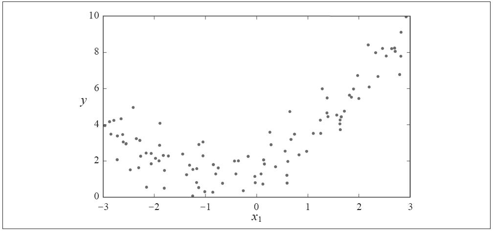
图4-12：生成的非线性带噪声数据集
显然，直线永远不可能拟合这个数据。所以我们使用Scikit-Learn的PolynomialFeatures类来对训练数据进行转换，将每个特征的平方（二次多项式）作为新特征加入训练集（这个例子中只有一个特征）：
代码详情
1 | >>> from sklearn.preprocessing import PolynomialFeatures |
X_poly现在包含原本的特征X和该特征的平方。现在对这个扩展后的训练集匹配一个LinearRegression模型（见图4-13）：
代码详情
1 | >>> lin_reg = LinearRegression() |
还不错！模型预估 =0.56 +0.93x 1
+1.78，而实际上原本的函数是y=0.5 +1.0x 1 +2.0+高斯噪声。
注意，当存在多个特征时，多项式回归能够发现特征和特征之间的关系（纯线性回归模型做不到这一点）。这是因为PolynomialFeatures会在给定的多项式阶数下，添加所有特征组合。例如，有两个特征a和b，阶数degree=3，PolynomialFeatures不只会添加特征a 2 、a 3 、b 2 和b 3 ，还会添加组合ab、a 2 b以及ab 2 。
图4-13：多项式回归模型预测
PolynomialFeatures（degree=d）可以将一个包含n个特征的数组转换为包含 个特征的数组，其中n！是n的阶乘，等于1×2×3×…×n。要小心特征组合的数量爆炸。
学习曲线
高阶多项式回归对训练数据的拟合，很可能会比简单线性回归要好。例如，图4-14使用了一个300阶多项式模型来处理训练数据，并将结果与一个纯线性模型和一个二次模型（二阶多项式）进行对比。注意看这个300阶模型是如何波动以使其尽可能贴近训练实例的。
当然，这个高阶多项式回归模型严重地过度拟合了训练数据，而线性模型则是拟合不足。这个案例中泛化结果最好的是二次模型。这很合理，因为数据本身是用二次模型生成的。但是一般来说，你不会知道生成数据的函数是什么，那么该如何确定模型的复杂程度呢？怎么才能判断模型是过度拟合还是拟合不足呢？
在第2章中，我们使用了交叉验证来评估模型的泛化性能。如果模型在训练集上表现良好，但是交叉验证的泛化表现非常糟糕，那么模型就是过度拟合。如果在二者上的表现都不佳，那就是拟合不足。这是判断模型太简单还是太复杂的一种方法。
图4-14：高阶多项式回归
还有一种方法是观察学习曲线：这个曲线绘制的是模型在训练集和验证集上，关于“训练集大小”的性能函数。要生成这个曲线，只需要在不同大小的训练子集上多次训练模型即可。下面这段代码，在给定训练集下定义了一个函数，绘制模型的学习曲线：
代码详情
1 | from sklearn.metrics import mean_squared_error |
看看纯线性回归模型（一条直线）的学习曲线（如图4-15所示）：
代码详情
1 | lin_reg = LinearRegression() |
这里值得解释一二，首先，我们来看训练数据上的性能：当训练集中只包括一两个实例时，模型可以完美拟合，这是为什么曲线是从0开始的。但是，随着新的实例被添加进训练集中，模型不再能完美拟合训练数据了，因为数据有噪声，并且根本就不是线性的。所以训练集的误差一路上升，直到抵达一个高地，从这一点开始，添加新实例到训练集中不再使平均误差上升或下降。然后我们再来看看验证集的性能表现。当训练集实例非常少时，模型不能很好地泛化，这是为什么验证集误差的值一开始非常大，随着模型经历更多的训练数据，它开始学习，因此验证集误差慢慢下降。但是仅靠一条直线终归不能很好地为数据建模，所以误差也停留在了一个高值，跟另一条曲线十分接近。
图4-15：学习曲线
这条学习曲线是典型的模型拟合不足。两条曲线均到达高地，非常接近，而且相当高。
如果你的模型对训练数据拟合不足，添加更多训练示例也于事无补。你需要使用更复杂的模型或者找到更好的特征。
现在我们再来看看在同样的数据集上，一个10阶多项式模型的学习曲线（见图4-16）：
代码详情
1 | from sklearn.pipeline import Pipeline |
这条学习曲线看起来跟前一条差不多，但是有两个非常重大的区别：
·训练数据的误差远低于线性回归模型。
·两条曲线之间有一定差距。这意味着该模型在训练数据上的表现比验证集上要好很多，这正是过度拟合的标志。但是，如果你使用更大的训练集，那么这两条曲线将会越来越近。
图4-16：多项式回归模型的学习曲线
改进模型过度拟合的方法之一是提供更多的训练数据，直到验证误差接近训练误差。
偏差/方差权衡
在统计学和机器学习领域，一个重要的理论结果是，模型的泛化误差可以被表示为三个截然不同的误差之和：
偏差
这部分泛化误差的原因在于错误的假设，比如假设数据是线性的，而实际上是二次的。高偏差模型最有可能对训练数据拟合不足。 [1]
方差
这部分误差是由于模型对训练数据的微小变化过度敏感导致的。具有高自由度的模型（例如高阶多项式模型）很可能也有高方差，所以很容易对训练数据过度拟合。
不可避免的误差
这部分误差是因为数据本身的噪声所致。减少这部分误差的唯一方法就是清理数据（例如修复数据源，如损坏的传感器，或者是检测并移除异常值）。
增加模型的复杂度通常会显著提升模型的方差，减少偏差。反过来，降低模型的复杂度则会提升模型的偏差，降低方差。这就是为什么称其为权衡。
[1] 不要将这里的偏差概念与线性模型中的偏置项概念弄混。
正则线性模型
如第1章和第2章所述，减少过度拟合的一个好办法就是对模型正则化（即约束它）：它拥有的自由度越低，就越不容易过度拟合数据。比如，将多项式模型正则化的简单方法就是降低多项式的阶数。
对线性模型来说，正则化通常通过约束模型的权重来实现。接下来我们将会使用岭回归（Ridge Regression）、套索回归（Lasso Regression）及弹性网络（Elastic Net）这三种不同的实现方法对权重进行约束。
岭回归
岭回归（也叫作吉洪诺夫正则化）是线性回归的正则化版：在成本函数中添加一个等于 的正则项。这使得学习中的算法不仅需要拟合数据，同时还要让模型权重保持最小。注意，正则项只能在训练的时候添加到成本函数中，一旦训练完成，你需要使用未经正则化的性能指标来评估模型性能。
训练阶段使用的成本函数与测试时使用的成本函数不同是非常常见的现象。除了正则化以外，还有一个导致这种不同的原因是，训练时的成本函数通常都可以使用优化过的衍生函数，而测试用的性能指标需要尽可能接近最终目标。举例来说，一个使用对数损失函数（log loss，后文即将讨论）作为成本函数来训练的分类器，最后评估时使用的指标却是精度/召回率。
超参数α控制的是对模型进行正则化的程度。如果α=0，则岭回归就是线性模型。如果α非常大，那么所有的权重都将非常接近于零，结果是一条穿过数据平均值的水平线。公式4-8给出了岭回归模型的成本函数。 [1]
公式4-8：岭回归成本函数
注意，这里偏置项θ 0 没有正则化（求和从i=1开始，不是i=0）。如果我们将w定义为特征权重的向量（θ 1 到θ n
），那么正则项即等于1/2（||w|| 2 ） 2 其中||w|| 2 为权重向量的l 2 范数。 [2] 而对于梯度下降，只需要在MSE梯度向量（公式4-6）上添加αw即可。
在执行岭回归之前，必须对数据进行缩放（例如使用StandardScaler），因为它对输入特征的大小非常敏感。大多数正则化模型都是如此。
图4-17显示了使用不同α值对某个线性数据进行训练的几种岭回归模型。左边直接使用岭回归，导致预测是线性的。而右边，首先使用PolynomialFeatures（degree=10）对数据进行扩展，然后用StandardScaler进行缩放，最后再将岭回归模型用于结果特征：这就是岭正则化后的多项式回归。注意看α是如何使预测更平坦的（也就是不那么极端，更为合理）；这降低了模型的方差，但是提升了偏差。
图4-17：岭回归
与线性回归一样，我们也可以在计算闭式方程或者执行梯度下降时，执行岭回归。利弊都一样。公式4-9显示的是闭式解（其中A是一个n×n的单位矩阵 [3] ，除了左上单元格为0，其他与偏置项对应）。
公式4-9：闭式解的岭回归
下面是如何使用Scikit-Learn执行闭式解的岭回归（使用的是公式4-9的一种变体，利用André-Louis Cholesky的矩阵因式分解法）：
代码详情
1 | >>> from sklearn.linear_model import Ridge |
使用随机梯度下降： [4]
代码详情
1 | >>> sgd_reg = SGDRegressor(penalty="l2") |
超参数penalty设置的是使用正则项的类型。设为”l2”表示希望SGD在成本函数中添加一个正则项，等于权重向量的l 2 范数的平方的一半，即岭回归。
套索回归
线性回归的另一种正则化，叫作最小绝对收缩和选择算子回归（Least Absolute Shrinkage and Selection Operator Regression，简称Lasso回归，或套索回归）。与岭回归一样，它也是向成本函数增加一个正则项，但是它增加的是权重向量的l 1 范数，而不是l 2 范数的平方的一半（参见公式4-10）。
公式4-10：Lasso回归成本函数
图4-18显示内容与图4-17相同，但是岭回归模型换成了Lasso回归模型，同时α值较小。
Lasso回归的一个重要特点是它倾向于完全消除掉最不重要特征的权重（也就是将它们设置为零）。例如，在图4-18的右图中的虚线（α＝10 -7
）看起来像是二次的，快要接近于线性：因为所有高阶多项式的特征权重都等于零。换句话说，Lasso回归会自动执行特征选择并输出一个稀疏模型（即只有很少的特征有非零权重）。
图4-18：Lasso回归
图4-19说明了情况为什么是这样。在左上图中，背景轮廓（椭圆）表示未正则化的MSE成本函数（α＝0），白色圆点表示该成本函数下，批量梯度下降（BGD）的路径。前景轮廓（菱形）表示l 1 惩罚函数，黄色三角形表示该惩罚函数下，批量梯度下降的路径（α→∞）。注意看这个路线是怎么走的，首先到达θ 1 ＝0，然后一路沿轴滚动，直到θ 2
＝0。在右上图中，背景轮廓表示同样的成本函数加上一个α＝0.5的l 1 惩罚函数。全局最小值位于θ 2 ＝0轴上。批量梯度下降先是到达了θ 2
＝0，再沿轴滚动到全局最小值。底部的两张图与上图的含义相同，但是把l 1 换成了l 2 惩罚函数。可以看出，正则化后的最小值虽然比未正则化的最小值更接近于θ＝0，但是权重并没有被完全消除。

图4-19：Lasso回归与岭回归
在Lasso成本函数下，BGD最后的路线似乎在轴上不断上下反弹，这是因为当θ 2
＝0时，斜率突变。你需要逐渐降低学习率来保证它向全局最小值收敛。
当时θ i ＝0（i＝1，2，…，n），Lasso成本函数是不可微的，但是，当任意θ i ＝0时，如果使用次梯度向量g [5] 作为替代，依旧可以让梯度下降正常运转。公式4-11所示的次梯度向量公式，可用于Lasso成本函数的梯度下降。
公式4-11：Lasso回归次梯度向量
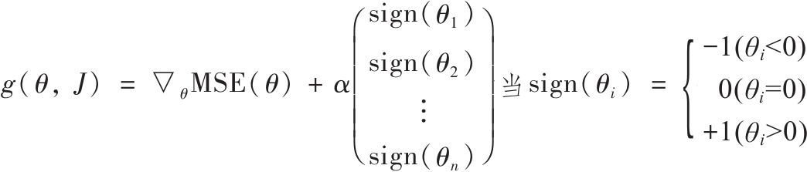
下面是一个使用Scikit-Learn的Lasso类的小例子。你还可以使用SGDRegressor（penalty=”l1”。
代码详情
1 | >>> from sklearn.linear_model import Lasso |
弹性网络
弹性网络是岭回归与Lasso回归之间的中间地带。其正则项就是岭回归和Lasso回归的正则项的混合，混合比例通过r来控制。当r＝0时，弹性网络即等同于岭回归，而当r＝1时，即相当于Lasso回归（见公式4-12）。
公式4-12：弹性网络成本函数
那么，到底如何选用线性回归、岭回归、Lasso回归和弹性网络呢？通常来说，有正则化——哪怕是很小，总是比没有更可取一些。所以大多数情况下，你应该避免使用纯线性回归。岭回归是个不错的默认选择，但是如果你觉得实际用到的特征只有少数几个，那就应该更倾向于Lasso回归或是弹性网络，因为它们会将无用特征的权重降为零。一般而言，弹性网络优于Lasso回归，因为当特征数量超过训练实例数量，又或者是几个特征强相关时，Lasso回归的表现可能非常不稳定。
下面是一个使用Scikit-Learn的ElasticNet的小例子（l1_ratio对应混合比例r）：
代码详情
1 | >>> from sklearn.linear_model import ElasticNet |
早期停止法
对于梯度下降这一类迭代学习的算法，还有一个与众不同的正则化方法，就是在验证误差达到最小值时停止训练，该方法叫作早期停止法。图4-20展现了一个用批量梯度下降训练的复杂模型（高阶多项式回归模型）。经过一轮一轮的训练，算法不断地学习，训练集上的预测误差（RMSE）自然不断下降，同样其在验证集上的预测误差也随之下降。但是，一段时间之后，验证误差停止下降反而开始回升。这说明模型开始过度拟合训练数据。通过早期停止法，一旦验证误差达到最小值就立刻停止训练。这是一个非常简单而有效的正则化技巧，所以Geoffrey Hinton称其为“美丽的免费午餐”。
图4-20：早期停止法正则化
对随机梯度下降和小批量梯度下降来说，曲线没有这么平滑，所以很难知道是否已经达到最小值。一种解决方法是等验证误差超过最小值一段时间之后再停止（这时你可以确信模型不会变得更好了），然后将模型参数回滚到验证误差最小时的位置。
下面是早期停止法的基本实现：
代码详情
1 | from sklearn.base import clone |
注意，当warm_start=True时，调用fit（）方法，会从停下的地方继续开始训练，而不会重新开始。
逻辑回归
正如第1章中提到过的，一些回归算法也可用于分类（反之亦然）。逻辑回归（Logistic回归，也称为罗吉思回归）被广泛用于估算一个实例属于某个特定类别的概率。（比如，这封电子邮件属于垃圾邮件的概率是多少？）如果预估概率超过50%，则模型预测该实例属于该类别（称为正类，标记为“1”），反之，则预测不是（也就是负类，标记为“0”）。这样它就成了一个二元分类器。
概率估算
所以它是怎么工作的呢？跟线性回归模型一样，逻辑回归模型也是计算输入特征的加权和（加上偏置项），但是不同于线性回归模型直接输出结果，它输出的是结果的数理逻辑（参见公式4-13）。
公式4-13：逻辑回归模型概率估算（向量化形式）
逻辑模型（也称为罗吉特），是一个sigmoid函数（即S形），记作σ（·），它的输出为一个0到1之间的数字。定义如公式4-14和图4-21所示。
公式4-14：逻辑函数
图4-21：逻辑函数
一旦逻辑回归模型估算出实例x属于正类的概率 ＝h θ （x），就可以轻松做出预测
（见公式4-15）。
公式4-15：逻辑回归模型预测
注意，当t<0时，σ（t）<0.5；当t≥0时，σ（t）≥0.5。所以如果θ T ·x是正类，逻辑回归模型预测结果是1，如果是负类，则预测为0。
训练和成本函数
现在你知道逻辑回归模型是如何估算概率并做出预测了。但是要怎么训练呢？训练的目的就是设置参数向量θ，使模型对正类实例做出高概率估算（y=1），对负类实例做出低概率估算（y=0）。公式4-16所示为单个训练实例x的成本函数，正说明了这一点。
公式4-16：单个训练实例的成本函数
这个成本函数是有道理的，因为当t接近于0时，-log（t）会变得非常大，所以如果模型估算一个正类实例的概率接近于0，成本将会变得很高。同理估算出一个负类实例的概率接近1，成本也会变得非常高。那么反过来，当t接近于1的时候，-log（t）接近于0，所以对一个负类实例估算出的概率接近于0，对一个正类实例估算出的概率接近于1，而成本则都接近于0，这不正好是我们想要的吗？
整个训练集的成本函数即为所有训练实例的平均成本。它可以记成一个单独的表达式（可以轻松验证），如公式4-17所示，这个函数被称为log损失函数。
公式4-17：逻辑回归成本函数（log损失函数）
但是坏消息是，这个函数没有已知的闭式方程（不存在一个标准方程的等价方程）来计算出最小化成本函数的θ值。而好消息是，这是个凸函数，所以通过梯度下降（或是其他任意优化算法）保证能够找出全局最小值（只要学习率不是太高，你又能长时间等待）。公式4-18给出了成本函数关于第j个模型参数θ j 的偏导数方程。
公式4-18：Logistic成本函数的偏导数
公式4-18与公式4-5看起来非常相似：计算出每个实例的预测误差，并将其乘以第j个特征值，然后再对所有训练实例求平均值。一旦你有了包含所有偏导数的梯度向量就可以使用梯度下降算法了。就是这样，现在你知道如何训练逻辑模型了。对随机梯度下降，一次使用一个实例；对小批量梯度下降，一次使用一个小批量。
决策边界
这里我们用鸢尾植物数据集来说明逻辑回归。这是一个非常著名的数据集，共有150朵鸢尾花，分别来自三个不同品种：Setosa鸢尾花、Versicolor鸢尾花和Virginica鸢尾花，数据里包含花的萼片以及花瓣的长度和宽度（见图4-22）。
图4-22：三种不同品种的鸢尾花 [6]
我们试试仅基于花瓣宽度这一个特征，创建一个分类器来检测Virginica鸢尾花。首先加载数据：
代码详情
1 | >>> from sklearn import datasets |
训练逻辑回归模型：
代码详情
1 | from sklearn.linear_model import LogisticRegression |
我们来看看对于花瓣宽度在0到3厘米之间的鸢尾花，模型估算出的概率（见图4-23）。
代码详情
1 | X_new = np.linspace(0, 3, 1000).reshape(-1, 1) |
图4-23：估算概率和决策边界
Virginica鸢尾花（三角形所示）的花瓣宽度范围为1.4～2.5厘米，而其他两种鸢尾花（正方形所示）花瓣通常较窄，花瓣宽度范围为0.1～1.8厘米。注意，这里有一部分重叠。对花瓣宽度超过2cm的花，分类器可以很有信心地说它是一朵Virginica鸢尾花（对该类别输出一个高概率值），对花瓣宽度低于1cm以下的，也可以胸有成竹地说其不是（对“非Virginica鸢尾花”类别输出一个高概率值）。在这两个极端之间，分类器则不太有把握。但是，如果你要求它预测出类别（使用predict（）方法而不是predict_proba（）方法），它将返回一个可能性最大的类别。也就是说，在大约1.6厘米处存在一个决策边界，这里“是”和“不是”的可能性都是50%，如果花瓣宽度大于1.6厘米，分类器就预测它是Virginica鸢尾花，否则就预测不是（即使它没什么把握）：
代码详情
1 | >>> log_reg.predict([[1.7], [1.5]]) |
图4-24还是同样的数据集，但是这次显示了两个特征：花瓣宽度和花瓣长度。经过训练，这个逻辑回归分类器就可以基于这两个特征来预测新花朵是否属于Virginica鸢尾花。虚线表示模型估算概率为50%的点，即模型的决策边界。注意这里是一个线性的边界。（注：它是使方程θ 0 +θ 1 x 1 +θ 2 x 2 =0的点x的集合，这个方程定义的是一条直线。）每条平行线都分别代表一个模型输出的特定概率，从左下的15%到右上的90%。根据这个模型，右上线之上的所有花朵，都有超过90%的概率属于Virginica鸢尾花。
图4-24：线性决策边界
与其他线性模型一样，逻辑回归模型可以用l 1 或l 2 惩罚函数来正则化。Scikit-Learn默认添加的是l 2 函数。
控制Scikit-Learn的LogisticRegression模型正则化程度的超参数不是alpha（其他线性模型使用alpha），而是它的逆反：C，C的值越高，模型正则化程度越高。
Softmax回归
逻辑回归模型经过推广，可以直接支持多个类别，而不需要训练并组合多个二元分类器（如第3章所述）。这就是Softmax回归，或者叫多元逻辑回归。
原理很简单：对于一个给定的实例x，Softmax回归模型首先计算出每个类别k的分数s k
（x），然后对这些分数应用softmax函数（也叫归一化指数），估算出每个类别的概率。你应该很熟悉计算s k
（x）分数的公式（公式4-19），因为它看起来就跟线性回归预测的方程一样。
公式4-19：类别k的Softmax分数
注意，每个类别都有自己特定的参数向量θ k 。所有这些向量通常都作为行存储在参数矩阵Θ中。
计算完实例x每个类别的分数后，就可以通过Softmax函数（公式4-20）来计算分数：计算出每个分数的指数，然后对它们进行归一化处理（除以所有指数的总和）即得到 ，也就是实例属于类别k的概率。
公式4-20：Softmax函数
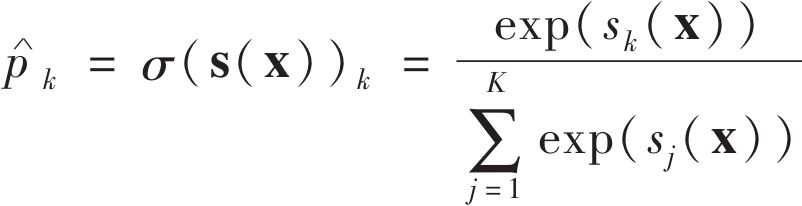
·K是类别的数量
·s（x）是实例x每个类别的分数的向量
·σ（s（x）） k 是给定的类别分数下，实例x属于类别k的概率
跟逻辑回归分类器一样，Softmax回归分类器将估算概率值最高的类别作为预测类别（也就是分数最高的类别），如公式4-21所示。
公式4-21：Softmax回归分类器预测
·argmax运算符返回的是使函数最大化所对应的变量的值。在这个等式里，它返回的是使估算概率（s（x）） k 最大的k的值。
Softmax回归分类器一次只会预测一个类别（也就是说，它是多类别，但是不是多输出），所以它应该仅适用于互斥的类别之上，例如植物的不同种类。你不能用它来识别一张照片中的多个人。
既然你已经知道了模型如何进行概率估算并做出预测，那我们再来看看怎么训练。训练目标是得到一个能对目标类别做出高概率估算的模型（也就是其他类别的概率相应要很低）。通过将公式4-22的成本函数（也叫作交叉熵）最小化来实现这个目标，因为当模型对目标类别做出较低概率的估算时，会受到惩罚。交叉熵经常被用于衡量一组估算出的类别概率跟目标类别的匹配程度（后面的章节中还会多次用到）。
公式4-22：交叉熵成本函数
·如果第i个实例的目标类别为k，则 等于1，否则为0。
注意，当只有两个类别（K=2）时，该成本函数等价于逻辑回归的成本函数（log损失函数，参见公式4-17）。
交叉熵
交叉熵源于信息理论。假设你想要有效传递每天的天气信息，选项（晴、下雨等）有8个，那么你可以用3比特对每个选项进行编码，因为2 3 =8。但是，如果你认为几乎每天都是晴天，那么，对“晴天”用1比特（0），其他七个类别用4比特（从1开始）进行编码，显然会更有效率一些。交叉熵衡量的是你每次发送天气选项的平均比特数。如果你对天气的假设是完美的，交叉熵将会等于天气本身的熵（也就是其本身固有的不可预测性）。但是如果你的假设是错误的（比如经常下雨），交叉熵将会变大，增加的这一部分我们称之为KL散度（Kullback-Leibler divergence，也叫作相对熵）。
两个概率分布p和q之间的交叉熵定义为H（p，q）=-Σ x p（x）log q（x）（至少在离散分布时可以这样定义）。
公式4-23给出了该成本函数关于θ k 的梯度向量：
公式4-23：对于类别k的交叉熵梯度向量
现在可以计算出每个类别的梯度向量，然后使用梯度下降（或任意其他优化算法）找到最小化成本函数的参数矩阵Θ。
我们来使用Softmax回归将鸢尾花分为三类。当用两个以上的类别训练时，Scikit-Learn的LogisticRegressio默认选择使用的是一对多的训练方式，不过将超参数multi_class设置为”multinomial”，可以将其切换成Softmax回归。你还必须指定一个支持Softmax回归的求解器，比如”lbfgs”求解器（详见Scikit-Learn文档）。默认使用l2正则化，你可以通过超参数C进行控制。
代码详情
1 | X = iris["data"][:, (2, 3)] # petal length, petal width |
所以当你下次碰到一朵鸢尾花，花瓣长5厘米宽2厘米，你就可以让模型告诉你它的种类，它会回答说：94.2%的概率是Virginica鸢尾花（第2类）或者5.8%的概率为Versicolor鸢尾花：
代码详情
1 | >>> softmax_reg.predict([[5, 2]]) |
图4-25展现了由不同背景色表示的决策边界。注意，任何两个类别之间的决策边界都是线性的。图中的折线表示属于Versicolor鸢尾花的概率（例如，标记为0.45的线代表45%的概率边界）。注意一点，该模型预测出的类别，其估算概率有可能低于50%，比如，在所有决策边界相交的地方，所有类别的估算概率都为33%。
图4-25：Softmax回归决策边界
[1] 对于没有常用简写的成本函数，通常用符号J（θ）来表示，后面还会多次用到这个符号。所以请通过上下文来判断讨论的是哪个成本函数。
[2] 有关范数的讨论请参考第2章。
[3] 单位矩阵：一个除了主对角线（左上到右下）为1，其他单元格全部为0的方形矩阵。
[4] 或者，你也可以使用Ridge类的“sag”求解器。随机平均梯度下降（sag）是梯度下降的一种变体。更多详细信息请参考不列颠哥伦比亚大学Mark Schmidt等人的演示文稿Minimizing Finite Sums with the Stochastic Average Gradient Algo‐rithm”(http://goo.gl/vxVyA2)。
[5] 你可以把不可微的点上的次梯度向量想象为这个点周围的梯度向量之间的中间矢量。
[6] 图片转自相应的维基百科页面。Virginica鸢尾花的图片出自Frank Mayfield，Versicolor鸢尾花的图片出自D.Gordon E.Robertson，Setosa鸢尾花图片来自公共域。
练习
1.如果你的训练集有超过百万个特征，你会选择什么线性回归训练算法？
2.如果你的训练集里特征的数值大小迥异，什么算法可能会受到影响？受影响程度如何？你应该怎么做？
3.训练逻辑回归模型时，梯度下降是否会困于局部最小值？
4.假设运行时间足够长，所有的梯度下降算法是不是最终会产生相同的模型？
5.假设你使用的是批量梯度下降，并且每一轮训练都绘制出其验证误差，如果发现验证误差持续上升，可能发生了什么？你如何解决这个问题？
6.当验证误差开始上升时，立刻停止小批量梯度下降算法训练是否为一个好主意？
7.哪种梯度下降算法（所有我们讨论过的）能最快到达最优解的附近？哪种会收敛？如何使其他算法同样收敛？
8.假设你使用的是多项式回归，绘制出学习曲线，你发现训练误差和验证误差之间存在很大的差距。发生了什么？哪三种方法可以解决这个问题？
9.假设你使用的是岭回归，你注意到训练误差和验证误差几乎相等，并且非常高。你认为模型是高方差还是高偏差？你应该提高还是降低正则化超参数？
10.你为何要使用：
·岭回归而不是线性回归？
·Lasso回归而不是岭回归？
·弹性网络而不是Lasso回归？
11.如果你想将图片分类为户外/室内以及白天/黑夜。你应该实现两个逻辑回归分类器还是一个Softmax回归分类器？
12.用Softmax回归进行批量梯度下降训练，并实施早期停止法（不使用Scikit-Learn）。
以上练习的解答可从附录A中获得。
第5章 支持向量机
支持向量机（简称SVM）是一个功能强大并且全面的机器学习模型，它能够执行线性或非线性分类、回归，甚至是异常值检测任务。它是机器学习领域最受欢迎的模型之一，任何对机器学习感兴趣的人都应该在工具箱中配备一个。SVM特别适用于中小型复杂数据集的分类。
本章将会介绍不同SVM的核心概念，怎么使用它们以及它们的工作原理。
线性SVM分类
SVM的基本思想可以用一些图来说明。图5-1所示的数据集来自第4章末尾引用的鸢尾花数据集的一部分。两个类别可以轻松地被一条直线（它们是线性可分离的）分开。左图显示了三种可能的线性分类器的决策边界。其中虚线所代表的模型表现非常糟糕，甚至都无法正确实现分类。其余两个模型在这个训练集上表现堪称完美，但是它们的决策边界与实例过于接近，导致在面对新实例时，表现可能不会太好。相比之下，右图中的实线代表SVM分类器的决策边界，这条线不仅分离了两个类别，并且尽可能远离了最近的训练实例。你可以将SVM分类器视为在类别之间拟合可能的最宽的街道（平行的虚线所示）。因此这也叫作大间隔分类（large margin classification）。
图5-1：大间隔分类
请注意，在街道以外的地方增加更多训练实例，不会对决策边界产生影响：也就是说它完全由位于街道边缘的实例所决定（或者称之为“支持”）。这些实例被称为支持向量（在图5-1中已圈出）。
SVM对特征的缩放非常敏感，如图5-2所示，在左图中，垂直刻度比水平刻度大得多，因此可能的最宽的街道接近于水平。在特征缩放（例如使用Scikit-Learn的StandardScaler）后，决策边界看起来好很多（见右图）。
图5-2：对特征缩放的敏感度
软间隔分类
如果我们严格地让所有实例都不在街道上，并且位于正确的一边，这就是硬间隔分类。硬间隔分类有两个主要问题，首先，它只在数据是线性可分离的时候才有效；其次，它对异常值非常敏感。图5-3显示了有一个额外异常值的鸢尾花数据：左图的数据根本找不出硬间隔，而右图最终显示的决策边界与我们在图5-1中所看到的无异常值时的决策边界也大不相同，可能无法很好地泛化。
图5-3：硬间隔对异常值的敏感度
要避免这些问题，最好使用更灵活的模型。目标是尽可能在保持街道宽阔和限制间隔违例（即位于街道之上，甚至在错误的一边的实例）之间找到良好的平衡，这就是软间隔分类。
在Scikit-Learn的SVM类中，可以通过超参数C来控制这个平衡：C值越小，则街道越宽，但是间隔违例也会越多。图5-4显示了在一个非线性可分离数据集上，两个软间隔SVM分类器各自的决策边界和间隔。左边使用了高C值，分类器的间隔违例较少，但是间隔也较小。右边使用了低C值，间隔大了很多，但是位于街道上的实例也更多。看起来第二个分类器的泛化效果更好，因为大多数间隔违例实际上都位于决策边界正确的一边，所以即便是在该训练集上，它做出的错误预测也会更少。
图5-4：较少间隔违例和大间隔对比
如果你的SVM模型过度拟合，可以试试通过降低C来进行正则化。
下面这段Scikit-Learn代码：加载鸢尾花数据集，缩放特征，然后训练一个线性SVM模型（使用LinearSVC类，C=0.1，用即将介绍的hinge损失函数）用来检测Virginica鸢尾花。得到的模型如图5-4右图所示。
代码详情
1 | import numpy as np |
然后，按照惯例，你可以用模型做出预测：
代码详情
1 | >>> svm_clf.predict([[5.5, 1.7]]) |
与Logistic回归分类器不同的是，SVM分类器不会输出每个类别的概率。
或者，你还可以选择SVC类，使用SVC（kernel=”linear”，C=1），但是这要慢得多，特别是对于大型训练集而言，因此不推荐使用。另一个选择是SGDClassifier类，使用SGDClassifier（loss=”hinge”，alpha=1/（m*C））。这适用于常规随机梯度下降（参见第4章）来训练线性SVM分类器。它不会像LinearSVC类那样快速收敛，但是对于内存处理不了的大型数据集（核外训练）或是在线分类任务，它非常有效。
LinearSVC类会对偏置项进行正则化，所以你需要先减去平均值，使训练集集中。如果使用StandardScaler会自动进行这一步。此外，请确保超参数loss设置为”hinge”，因为它不是默认值。最后，为了获得更好的性能，还应该将超参数dual设置为False，除非特征数量比训练实例还多（本章后文将会讨论）。
非线性SVM分类
虽然在许多情况下，线性SVM分类器是有效的，并且通常出人意料的好，但是，有很多数据集远不是线性可分离的。处理非线性数据集的方法之一是添加更多特征，比如多项式特征（如第4章所述），某些情况下，这可能导致数据集变得线性可分离。参见图5-5的左图：这是一个简单的数据集，只有一个特征x 1 ，可以看出，数据集线性不可分。但是如果添加第二个特征x 2 =（x 1 ） 2 ，生成的2D数据集则完全线性可分离。
图5-5：通过添加特征使数据集线性可分离
要使用Scikit-Learn实现这个想法，可以搭建一条流水线：一个PolynomialFeatures转换器，接着一个StandardScaler，然后是LinearSVC。我们用卫星数据集来测试一下（见图5-6）：
代码详情
1 | from sklearn.datasets import make_moons |
图5-6：使用多项式特征的线性LVM分类器
多项式核
添加多项式特征实现起来非常简单，并且对所有的机器学习算法（不只是SVM）都非常有效。但问题是，如果多项式太低阶，处理不了非常复杂的数据集，而高阶则会创造出大量的特征，导致模型变得太慢。
幸运的是，使用SVM时，有一个魔术般的数学技巧可以应用，这就是核技巧（稍后解释）。它产生的结果就跟添加了许多多项式特征，甚至是非常高阶的多项式特征一样，但实际上并不需要真的添加。因为实际没有添加任何特征，所以也就不存在数量爆炸的组合特征了。这个技巧由SVC类来实现，我们看看在卫星数据集上的测试：
代码详情
1 | from sklearn.svm import SVC |
这段代码使用了一个3阶多项式内核训练SVM分类器。如图5-7的左图所示。而右图是另一个使用了10阶多项式核的SVM分类器。显然，如果模型过度拟合，你应该降低多项式阶数；反过来，如果拟合不足，则可以尝试使之提升。超参数coef0控制的是模型受高阶多项式还是低阶多项式影响的程度。
图5-7：多项式核的SVM分类器
寻找正确的超参数值的常用方法是网格搜索（见第2章）。先进行一次粗略的网格搜索，然后在最好的值附近展开一轮更精细的网格搜索，这样通常会快一些。多了解每个超参数实际上是用来做什么的，有助于你在超参数空间层正确搜索。
添加相似特征
解决非线性问题的另一种技术是添加相似特征。这些特征经过相似函数计算得出，相似函数可以测量每个实例与一个特定地标（landmark）之间的相似度。以前面提到过的一维数据集为例，在x 1 =-2和x 1 =1处添加两个地标（见图5-8中的左图）。接下来，我们采用高斯径向基函数（RBF）作为相似函数，y=0.3（见等式5-1）。
公式5-1：高斯RBF
这是一个从0（离地标差得非常远）到1（跟地标一样）变化的钟形函数。现在我们准备计算新特征。例如，我们看实例x 1 =-1：它与第一个地标的距离为1，与第二个地标的距离为2。因此它的新特征为x 2 =eps（-0.3×1 2 ）≈0.74，x 3 =eps（-0.3×2 2 ）≈0.30。图5-8的右图显示了转换后的数据集（去除了原始特征），现在你可以看出，数据呈线性可分离的了。
图5-8：使用高斯RBF的相似特征
你可能想问怎么选择地标呢？最简单的方法是在数据集里每一个实例的位置上创建一个地标。这会创造出许多维度，因而也增加了转换后的训练集线性可分离的机会。缺点是，一个有m个实例n个特征的训练集会被转换成一个m个实例m个特征的训练集（假设抛弃了原始特征）。如果训练集非常大，那就会得到同样大数量的特征。
高斯RBF核函数
与多项式特征方法一样，相似特征法也可以用任意机器学习算法，但是要计算出所有附加特征，其计算代价可能非常昂贵，尤其是对大型训练集来说。然而，核技巧再一次施展了它的SVM魔术：它能够产生的结果就跟添加了许多相似特征一样，但实际上也并不需要添加。我们来使用SVC类试试高斯RBF核：
代码详情
1 | rbf_kernel_svm_clf = Pipeline(( |
图5-9的左下方显示了这个模型。其他图显示了超参数gamma（）和C使用不同值时的模型。增加gamma值会使钟形曲线变得更窄（图5-8的左图），因此每个实例的影响范围随之变小：决策边界变得更不规则，开始围着单个实例绕弯。反过来，减小gamma值使钟形曲线变得更宽，因而每个实例的影响范围增大，决策边界变得更平坦。所以就像是一个正则化的超参数：模型过度拟合，就降低它的值，如果拟合不足则提升它的值（类似超参数C）。
还有一些其他较少用到的核函数，例如专门针对特定数据结构的核函数。字符串核常用于文本文档或是DNA序列（如使用字符串子序列核或是基于莱文斯坦距离的核函数）的分类。
图5-9：使用RBF核的SVM分类器
有这么多的核函数，该如何决定使用哪一个呢？有一个经验法则是，永远先从线性核函数开始尝试（要记住，LinearSVC比SVC（kernel=”linear”）快得多），特别是训练集非常大或特征非常多的时候。如果训练集不太大，你可以试试高斯RBF核，大多数情况下它都非常好用。如果你还有多余的时间和计算能力，你可以使用交叉验证和网格搜索来尝试一些其他的核函数，特别是那些专门针对你的数据集数据结构的核函数。
计算复杂度
liblinear库为线性SVM实现了一个优化算法， [1] LinearSVC正是基于该库的。这个算法不支持核技巧，不过它与训练实例的数量和特征数量几乎呈线性相关：其训练时间复杂度大致为O（m×n）。
如果你想要非常高的精度，算法需要的时间更长。它由容差超参数（在Scikit-Learn中为tol）来控制。大多数分类任务中，默认的容差就够了。
SVC则是基于libsvm库的，这个库的算法支持核技巧。 [2] 训练时间复杂度通常在O（m 2 ×n）和O（m 3
×n）之间。很不幸，这意味着如果训练实例的数量变大（例如上十万个实例），它将会慢得可怕，所以这个算法完美适用于复杂但是中小型的训练集。但是，它还是可以良好适应地特征数量的增加，特别是应对稀疏特征（即，每个实例仅有少量的非零特征）。在这种情况下，算法复杂度大致与实例的平均非零特征数成比例。表5-1比较了Scikit-Learn的SVM分类器类别。
表5-1：用于SVM分类的Scikit-Learn类的比较
[1] “针对大型线性SVM的双坐标下降法”（“A Dual Coordinate Descent Method for Large-scale Linear SVM，”），Lin等人（2008）。
[2] “序列最小优化”（Sequential Minimal Optimization），J.Platt(1998)。
SVM回归
正如前面提到的，SVM算法非常全面：它不仅支持线性和非线性分类，而且还支持线性和非线性回归。诀窍在于将目标反转一下：不再是尝试拟合两个类别之间可能的最宽的街道的同时限制间隔违例，SVM回归要做的是让尽可能多的实例位于街道上，同时限制间隔违例（也就是不在街道上的实例）。街道的宽度由超参数ε控制。图5-10显示了用随机线性数据训练的两个线性SVM回归模型，一个间隔较大（ε＝1.5），另一个间隔较小（ε＝0.5）。
图5-10：SVM回归
在间隔内添加更多的实例不会影响模型的预测，所以这个模型被称为ε不敏感。
你可以使用Scikit-Learn的LinearSVR类来执行线性SVM回归。以下代码生成如图5-10左图所示的模型（训练数据需要先缩放并集中）：
代码详情
1 | from sklearn.svm import LinearSVR |
要解决非线性回归任务，可以使用核化的SVM模型。例如，图5-11显示了在一个随机二次训练集上，使用二阶多项式核的SVM回归。左图几乎没有正则化（C值很大），右图则过度正则化（C值很小）。
图5-11：使用二阶多项式核的SVM回归
以下代码使用Scikit-Learn的SVR类（支持核技巧）生成如图5-11左图所示的模型。SVR类是SVC类的回归等价物，LinearSVR类也是LinearSVC类的回归等价物。LinearSVR与训练集的大小线性相关（跟LinearSVC一样），而SVR则在训练集变大时，变得很慢（SVC也是一样）。
代码详情
1 | from sklearn.svm import SVR |
SVM也可用于异常值检测：详细信息请参考Scikit-Learn文档。
工作原理
本节将会介绍SVM如何进行预测，以及它们的训练算法是如何工作的，从线性SVM分类器开始。如果你刚刚开始接触机器学习，可以安全地跳过本节，直接进入本章末尾的练习，等到想要更深入地了解SVM时再回来也不迟。
首先，说明一下符号：在第4章里，我们使用过一个约定——将所有模型参数放在一个向量θ中，包括偏置项θ 0 ，以及输入特征的权重θ 1 到θ n ，同时在所有实例中添加偏置项x 0 =1。在本章中，我们将会使用另一个约定，在处理SVM时它更为方便（也更常见）：偏置项表示为b，特征权重向量表示为w，同时输入特征向量中不添加偏置特征。
决策函数和预测
线性SVM分类器通过简单地计算决策函数w T ·x+b=w 1 x 1 +…+w n x n
+b来预测新实例x的分类。如果结果为正，则预测类别 是正类（1），不然则预测其为负类（0），见公式5-2。
公式5-2：线性SVM分类器预测
图5-12显示了图5-4右侧的模型所对应的决策函数：数据集包含两个特征（花瓣宽度和长度），所以是一个二维平面。决策边界是决策函数等于0的点的集合：它是两个平面的交集，也就是一条直线（加粗实线所示）。 [1]
图5-12：鸢尾花数据集的决策函数
虚线表示决策函数等于1或-1的点：它们互相平行，并且与决策边界的距离相等，从而形成了一个间隔。训练线性SVM分类器即意味着找到w和b的值，从而使这个间隔尽可能宽的同时，避免（硬间隔）或是限制（软间隔）间隔违例。
[1] 更概括地说，当有n个特征时，决策函数是一个n维的超平面，决策边界是一个（n-1）维的超平面。
训练目标
思考一下决策函数的斜率：它等于权重向量的范数，即||w||。如果我们将斜率除以2，那么决策函数等于±1的点也将变得离决策函数两倍远。也就是说，将斜率除以2，将会使间隔乘以2。也许2D图更容易将其可视化，见图5-13。权重向量w越小，间隔越大。
图5-13：权重向量越小，间隔越大
所以我们要最小化||w||来得到尽可能大的间隔。但是，如果我们想避免任何间隔违例（硬间隔），那么就要使所有正类训练集的决策函数大于1，负类训练集的决策函数小于-1。如果我们定义，实例为负类（如果y
（i） =0）时，t （i） =-1；实例为正类（如果y （i） =1）时，t （i） =1。那么我们就可以将这个约束条件表示为：对所有实例来说，t （i）
（w T ·x （i） +b）≥1。
因此，我们可以将硬间隔线性SVM分类器的目标，看作一个约束优化问题，如公式5-3所示。
公式5-3：硬间隔线性SVM分类器的目标
我们最小化的是w T ·w/2，它等于||w|| 2
/2，而不是最小化||w||。这是因为，二者虽然会得到同样的结果（因为让某个值最小的w和b，同样也使其平方的一半最小），但是||w|| 2
/2有一个简单好用的导数（就是w），而||w||在w=0时，是不可微的。优化算法在可微函数上的工作效果要好得多。
要达到软间隔的目标，我们需要为每个实例引入一个松弛变量ζ （i） ≥0， [1] ζ（i）衡量的是第i个实例多大程度上允许间隔违例。那么现在我们有了两个互相冲突的目标：使松弛变量越小越好从而减少间隔违例，同时还要使w T
·w/2最小化以增大间隔。这正是超参数C的用武之地：允许我们在两个目标之间权衡。公式5-4给出了这个约束优化问题。
公式5-4：软间隔线性SVM分类器目标
二次规划
硬间隔和软间隔问题都属于线性约束的凸二次优化问题。这类问题被称为二次规划（QP）问题。要解决二次规划问题有很多现成的求解器，使用到的技术各不相同，这些不在本书的讨论范围之内。 [2] 公式5-5给出的是问题的一般形式。
公式5-5：二次规划问题
注意表达式A·p≤b实际上定义了n c 个约束：对于i=1，2，…，n c ，p T ·a （i） ≤b （i） ，其中a （i） 是包含A的第i行元素的向量，而b （i） 是b的第i个元素。
可以轻松验证一下，如果你把二次规划参数按以下方式设置，是否能够实现硬间隔线性SVM分类器的目标：
·n p =n+1，其中n为特征数量（+1是偏置项）。
·n c =m，其中m是训练实例的数量。
·H是n p ×n p 的单位矩阵，但是顶左单元格为零（为了忽略偏置项）。
·f=0，一个全是0的n p 维向量。
·b=1，一个全是1的n c 维向量。
· ，其中 等于x （i） ，除了一个额外的偏置特征 。
所以，要训练硬间隔线性SVM分类器，有一种办法是直接将上面的参数用在一个现成的二次规划求解器上。得到的向量p将会包括偏置项b=p 0 ，以及特征权重w i =p i ，i=1，2，…，m。类似地，你也可以用二次规划求解器来解决软间隔问题（见本章末尾练习）。
但是，为了运用核技巧，接下来我们将要看一个不同的约束优化问题。
对偶问题
针对一个给定的约束优化问题，称之为原始问题，我们常常可以用另一个不同的，但是与之密切相关的问题来表达，这个问题我们称之为对偶问题。通常来说，对偶问题的解只能算是原始问题的解的下限，但是在某些情况下，它也可能跟原始问题的解完全相同。幸运的是，SVM问题刚好就满足这些条件， [3] 所以你可以选择是解决原始问题还是对偶问题，二者解相同。公式5-6给出了线性SVM目标的对偶形式（如果你对如何从原始问题导出对偶问题感兴趣，请参阅附录C）。
公式5-6：线性SVM目标的对偶形式
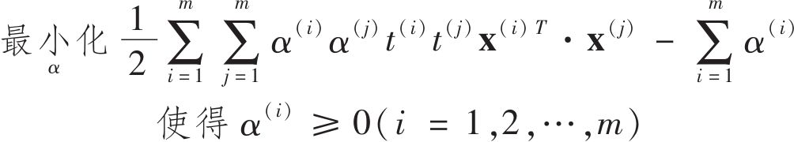
一旦得到使得该等式最小化（使用二次规划求解器）的向量 ，就可以使用公式5-7来计算使原始问题最小化的 和 。
公式5-7：从对偶问题到原始问题
当训练实例的数量小于特征数量时，解决对偶问题比原始问题更快速。更重要的是，它能够实现核技巧，而原始问题不可能实现。这个核技巧到底是什么呢？
核化SVM
假设你想要将一个二阶多项式转换为一个二维训练集（例如卫星训练集），然后在转换训练集上训练线性SVM分类器。这个二阶多项式的映射函数 如公式5-8所示。
公式5-8：二阶多项式映射
注意转换后的向量是三维的而不是二维的。现在我们来看看，如果我们应用这个二阶多项式映射，两个二维向量a和b会发生什么变化，然后计算转换后两个向量的点积（参见公式5-9）。
公式5-9：二阶多项式映射的核技巧
怎么样？转换后向量的点积等于原始向量的点积的平方： （a） T · （b）=（a T ·b） 2 。
关键点来了：如果将转换映射 应用于所有训练实例，那么对偶问题（公式5-6）将包含点积 （x （i） ） T
· （x （j） ）的计算。如果 是公式5-8所定义的二阶多项式转换，那么可以直接用 来替代这个转换向量的点积。所以你根本不需要转换训练实例，只需将公式5-6里的点积换成点积的平方即可。如果你不嫌麻烦，可以动手将训练集进行转换，然后拟合线性SVM算法，你会发现，结果一模一样。但是这个技巧大大提高了整个过程的计算效率。这就是核技巧的本质。
函数K（a，b）=（a T ·b） 2 被称为二阶多项式核。在机器学习里，核是能够仅基于原始向量a和b来计算点积
（a） T · （b）的函数，它不需要计算（甚至不需要知道）转换函数 。公式5-10列出了一些最常用的核函数。
公式5-10：常用核函数
Mercer定理
根据Mercer定理，如果函数K（a，b）符合几个数学条件——也就是Mercer条件（K必须是连续的，并且在其参数上对称，所以K（a，b）=K（b，a），等等），则存在函数 将a和b映射到另一空间（可能是更高维度的空间），使得K（a，b）＝ （a） T
· （b）。所以你可以将K用作核函数，因为你知道 是存在的，即使你不知道它是什么。对于高斯RBF核函数，可以看出， 实际上将每个训练实例映射到了一个无限维空间，幸好不用执行这个映射。
注意，也有一些常用的核函数（如Sigmoid核函数）不符合Mercer条件的所有条件，但是它们在实践中通常也表现不错。
还有一个未了结的问题我们需要说明。公式5-7显示了用线性SVM分类器如何从对偶解走到原始解，但是如果你应用了核技巧，最终得到的是包含
（x （i） ）的方程。而 的维度数量必须与 （x （i）
）相同，后者很有可能是巨大甚至是无穷大的，所以你根本没法计算。可是不知道 该如何做出预测呢？你可以将公式5-7中 的公式插入新实例x （n） 的决策函数中，这样就得到了一个只包含输入向量之间点积的公式。这时你就可以再次运用核技巧了（见公式5-11）。
公式5-11：使用核化SVM做出预测
注意，因为仅对于支持向量才有α （i） ≠0，所以预测时，计算新输入向量x （n） 的点积，使用的仅仅是支持向量而不是全部训练实例。当然，你还需要使用同样的技巧来计算偏置项 （见公式5-12）。
公式5-12：使用核技巧计算偏置项
如果你现在开始觉得头痛，完全正常：这正是核技巧的副作用。
在线SVM
在本章结束之前，我们快速了解一下在线SVM分类器（回想一下，在线学习意味着增量学习，通常就是新实例到来的时候学习）。
对线性SVM分类器来说，方法之一是使用梯度下降，使从原始问题导出的成本函数（见公式5-13）最小化。但不幸的是，这种方法的收敛速度比二次规划方法要慢得多。
公式5-13：线性SVM分类器成本函数
成本函数中的第一项会推动模型得到一个较小的权重向量w，从而使间隔更大。第二项则计算全部的间隔违例。如果没有一个示例位于街道之上，并且都在街道正确的一边，那么这个实例的间隔违例为0；如不然，则该实例的违例大小与其到街道正确一边的距离成正比。所以将这个项最小化，能够保证模型使间隔违例尽可能小，也尽可能少。
Hinge损失函数
函数max（0，1-t）被称为hinge损失函数（如下图所示）。当t≥1时，函数等于0。如果t<1，其导数（斜率）等于-1，如果t>1，则导数（斜率）为0，t=1，时，函数不可导。但是，在t=0处可以使用任意次导数（即-1到0之间的任意值），你还是可以使用梯度下降，就跟Lasso回归一样。
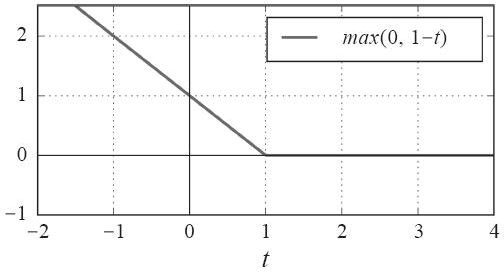
在线SVM也可以实现核技巧，可参考“Incremental and Decremental SVM Learning”（ http://goo.gl/JEqVui ） [4] ，以及“Fast Kernel Classifiers with Online and Active Learning”（ https://goo.gl/hsoUHA ） [5] 。但是这些是在Matlab和C++上实现的。对于大规模非线性问题，你可能需要使用神经网络（本书第二部分）。
[1] Zeta（ζ）是希腊字母的第8个字母。
[2] 要了解更多关于二次规划的信息，可以从阅读Stephen Boyd和Lieven Vandenberghe的“Convex Optimization”（剑桥大学出版社，2004年）开始，或者是观看Richard Brown的系列讲座。
[3] 目标函数是凸函数，并且不等式约束是连续可微的凸函数。
[4] “Incremental and Decremental Support Vector Machine Learning”G.Cauwenberghs，T.Poggio（2001）.
[5] “Fast Kernel Classifiers with Online and Active Learning“A.Bordes，S.Ertekin，J.Weston，L.Bottou（2005）.
练习
1.支持向量机的基本思想是什么？
2.什么是支持向量？
3.使用SVM时，对输入值进行缩放为什么重要？
4.SVM分类器在对实例进行分类时，会输出信心分数么？概率呢？
5.如果训练集有上千万个实例和几百个特征，你应该使用SVM原始问题还是对偶问题来训练模型？
6.假设你用RBF核训练了一个SVM分类器，看起来似乎对训练集拟合不足，你应该提升还是降低γ（gamma）？C呢？
7.如果使用现成二次规划求解器，你应该如何设置QP参数（H、f、A和b），来解决软间隔线性SVM分类器问题？
8.在一个线性可分离数据集上训练LinearSVC。然后在同一数据集上训练SVC和SGDClassifier。看看你是否可以用它们产出大致相同的模型。
9.在MNIST数据集上训练SVM分类器。由于SVM分类器是个二元分类器，所以你需要使用一对多来为10个数字进行分类。你可能还需要使用小型验证集来调整超参数以加快进度。最后看看达到的精度是多少？
10.在加州住房数据集上训练一个SVM回归模型。
以上练习的解答可从附录A中获得。
第6章 决策树
与SVM一样，决策树也是一种多功能的机器学习算法，它可以实现分类和回归任务，甚至是多输出任务。它们功能强大，能够拟合复杂的数据集。例如，在第2章中，我们曾经在加州住房数据集上训练过一个DecisionTreeRegressor模型，完美拟合数据集（实际上过度拟合）。
决策树同时也是随机森林（参见第7章）的基本组成部分，后者是现今最强大的机器学习算法之一。
在本章中，首先，我们会讨论如何对决策树进行训练、可视化和预测；然后介绍Scikit-Learn的CART训练算法，讨论如何对决策树进行正则化并将其用于回归任务；最后，我们会谈一谈决策树的部分限制。
决策树训练和可视化
要了解决策树，让我们先构建一个决策树，看看它是如何做出预测的。下面的代码在鸢尾花数据集（见第4章）上训练了一个DecisionTreeClassifier：
代码详情
1 | from sklearn.datasets import load_iris |
要将决策树可视化，首先，使用export_graphviz（）方法输出一个图形定义文件，命名为iris_tree.dot：
代码详情
1 | from sklearn.tree import export_graphviz |
然后，可以使用graphviz包 [1] 中的dot命令行工具将这个.dot文件转换为其他格式，例如PDF或PNG。下面这行命令将.dot文件转换为.png图像文件：
代码详情
1 | $ dot -Tpng iris_tree.dot -o iris_tree.png |
你的第一个决策树如图6-1所示。
图6-1：鸢尾花决策树
[1] graphviz是一个开源图形可视化软件包，可从http://wwwgraphviz.org/获取。
做出预测
我们来看看图6-1中的树是如何做出预测的。如果你找到了一朵鸢尾花，想要将其归类，那么从根节点（深度0，位于顶部）开始：这朵花的花瓣长度是否小于2.45厘米？如果是，则向下移动到根的左侧子节点（深度1，左）。本例中，这是一个叶节点（即没有任何子节点），所以它不再继续提出问题，你可以直接查看这个节点的预测类别，也就是说，决策树预测你的这朵花是Setosa鸢尾花（class=setosa）。
假设你又找到了一朵花，但是这次的花瓣长度大于2.45厘米。你必须移动到根节点的右侧子节点（深度1，右），该节点不是叶节点，所以它提出另一个问题：花瓣宽度是否小于1.75厘米？如果是，那这朵花最有可能是Versicolor鸢尾花（深度2，左）；如果不是，那就可能是Virginica鸢尾花（深度2，右）。就是这么简单。
决策树的特质之一就是它们需要的数据准备工作非常少。特别是，完全不需要进行特征缩放或集中。
节点的samples属性统计它应用的训练实例数量。例如，有100个训练实例的花瓣长度大于2.45厘米（深度1，右），其中54个花瓣宽度小于1.75厘米（深度2，左）。节点的value属性说明了该节点上每个类别的训练实例数量：例如，右下节点应用在0个Setosa鸢尾、1个Versicolor鸢尾和45个Virginica鸢尾实例上。最后，节点的gini属性衡量其不纯度（impurity）：如果应用的所有训练实例都属于同一个类别，那么节点就是“纯”的（gini=0）。例如，深度1左侧节点仅应用于Setosa鸢尾花训练实例，所以它就是纯的，并且gini值为0。公式6-1说明了第i个节点的基尼系数G i 的计算方式。例如，深度2左侧节点，基尼系数等于1–（0/54） 2 –（49/54） 2 –（5/54） 2
≈0.168。稍后还将介绍另一种不纯度的衡量方法。
公式6-1：基尼不纯度
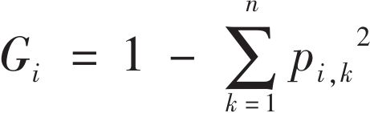
·p i，k 是第i个节点上，类别为k的训练实例占比。
Scikit-Learn使用的是CART算法，该算法仅生成二叉树：非叶节点永远只有两个子节点（即问题答案仅有是或否）。但是，其他算法，比如ID3生成的决策树，其节点可以拥有两个以上的子节点。
图6-2显示了决策树的决策边界。加粗直线表示根节点（深度0）的决策边界：花瓣长度=2.45厘米。因为左侧区域是纯的（只有Setosa鸢尾花），所以它不可再分。但是右侧区域是不纯的，所以深度1右侧的节点在花瓣宽度=1.75厘米处（虚线所示）再次分裂。因为这里最大深度max_depth设置为2，所以决策树在此停止。但是如果你将max_depth设置为3，那么两个深度为2的节点将各自再产生一条决策边界（点线所示）。
图6-2：决策树的决策边界
模型解释：白盒子与黑盒子
如你所见，决策树是非常直观的，它们的决策也很容易解释，这类模型通常被称为白盒模型。与之相反的，我们稍后将会看到，随机森林或是神经网络被认为是一种黑盒模型。它们能做出很棒的预测，你也可以轻松检查它们在做出预测时执行的计算，然而，通常很难解释清楚它们为什么做出这样的预测。比如，如果神经网络说某个人出现在一张图片上，很难知道它实际上是基于什么做出的该预测：是模型识别出来了这个人的眼睛？嘴巴？鼻子？还是鞋子？甚至是她坐的沙发？相反，决策树提供了简单好用的分类规则，需要的话，你甚至可以手动应用这些规则（例如，花的分类）。
估算类别概率
决策树同样可以估算某个实例属于特定类别k的概率：首先，跟随决策树找到该实例的叶节点，然后返回该节点中类别k的训练实例占比。例如，假设你发现一朵花，其花瓣长5厘米，宽1.5厘米。相应的叶节点为深度2左侧节点，因此决策树输出如下概率：Setosa鸢尾花，0%（0/54）；Versicolor鸢尾花，90.7%（49/54）；Virginica鸢尾花，9.3%（5/54）。当然，如果你要求它预测类别，那么它应该输出Versicolor鸢尾花（类别1），因为它的概率最高。我们试一下：
代码详情
1 | >>> tree_clf.predict_proba([[5, 1.5]]) |
完美！注意，图6-2的右下矩形中任意点的估算概率都是相同的——比如，如果花瓣长6厘米，宽1.5厘米，概率还是一样（虽然看起来，这时最大的可能应该是Virginica鸢尾花）。
CART训练算法
Scikit-Learn使用的是分类与回归树（Classification And Regression Tree，简称CART）算法来训练决策树（也叫作“生长”树）。想法非常简单：首先，使用单个特征k和阈值t k
（例如，花瓣长度≤2.45厘米）将训练集分成两个子集。k和阈值t k 怎么选择？答案是产生出最纯子集（受其大小加权）的k和t k 就是经算法搜索确定的（t，t k ）。算法尝试最小化的成本函数为公式6-2。
公式6-2：CART分类成本函数
一旦成功将训练集一分为二，它将使用相同的逻辑，继续分裂子集，然后是子集的子集，依次循环递进。直到抵达最大深度（由超参数max_depth控制），或是再也找不到能够降低不纯度的分裂，它才会停止。还有一些超参数（稍后介绍）可以用来控制附加的停止条件（min_samples_split、min_samples_leaf、min_weight_fraction_leaf及max_leaf_nodes）。
如你所见，CART是一种贪婪算法：从顶层开始搜索最优分裂，然后每层重复这个过程。几层分裂之后，它并不会检视这个分裂的不纯度是否为可能的最低值。贪婪算法通常会产生一个相当不错的解，但是不能保证是最优解。
而不幸的是，寻找最优树是一个已知的NP完全问题： [1] 需要的时间是O（exp（m）），所以即使是很小的训练集，也相当棘手。这就是为什么我们必须接受一个“相当不错”的解。
[1] P就是能在多项式时间内解决的问题集。NP是能在多项式时间内验证解正确与否的问题集。如果一个问题L是NP-Hard问题，那么任意一个NP问题都可以在多项式时间内被规约成这个L问题。而NP完全问题即是NP问题，又是NP-Hard问题。有一个数学开放问题，即P是否等于NP？如果P≠NP（看起来很可能如此），那么对于任何NP完全问题，将不存在多项式算法（可能量子计算机除外）。
计算复杂度
进行预测需要从根到叶遍历决策树。通常来说，决策树大致平衡，因此遍历决策树需要经历大约O（log 2 （m））个节点。（注：log 2 是以2为底的对数。等于log 2 （m）=log（m）/log（2）。）而每个节点只需要检查一个特征值，所以总体预测复杂度也只是O（log 2
（m）），与特征数量无关。如此，即便是处理大型数据集，预测也很快。
但是，训练时在每一个节点，算法都需要在所有样本上比较所有特征（如果设置了max_features会少一些）。这导致训练的复杂度为O（n×m log（m））。对于小型训练集（几千个实例以内），Scikit-Learn可以通过对数据预处理（设置presort=True）来加快训练，但是对于较大训练集而言，可能会减慢训练的速度。
基尼不纯度还是信息熵
默认使用的是基尼不纯度来进行测量，但是，你可以将超参数criterion设置为”entropy”来选择信息熵作为不纯度的测量方式。熵的概念源于热力学，是一种分子混乱程度的度量：如果分子保持静止和良序，则熵接近于零。后来这个概念传播到各个领域，其中包括香农的信息理论，它衡量的是一条信息的平均信息内容： [1] 如果所有的信息都相同，则熵为零。在机器学习中，它也经常被用作一种不纯度的测量方式：如果数据集中仅包含一个类别的实例，其熵为零。公式6-3显示了第i个节点的熵值的计算方式。例如，图6-1中深度2左侧节点的熵值等于 。
公式6-3：信息熵
那么你到底应该使用基尼不纯度还是信息熵呢？其实，大多数情况下，它们并没有什么大的不同，产生的树都很相似。基尼不纯度的计算速度略微快一些，所以它是个不错的默认选择。它们的不同在于，基尼不纯度倾向于从树枝中分裂出最常见的类别，而信息熵则倾向于生产更平衡的树。 [2]
[1] 熵值的减少通常被称为信息增益。
[2] 更多详情可参阅Sebastian Raschka的有趣分析(https://sebastianraschka.com/faq/docs/decision-treebinary.html)。
正则化超参数
决策树极少对训练数据做出假设（比如线性模型就正好相反，它显然假设数据是线性的）。如果不加以限制，树的结构将跟随训练集变化，严密拟合，并且很可能过度拟合。这种模型通常被称为非参数模型，这不是说它不包含任何参数（事实上它通常有很多参数），而是指在训练之前没有确定参数的数量，导致模型结构自由而紧密地贴近数据。相应的参数模型，比如线性模型，则有预先设定好的一部分参数，因此其自由度受限，从而降低了过度拟合的风险（但是增加了拟合不足的风险）。
为避免过度拟合，需要在训练过程中降低决策树的自由度。现在你应该知道，这个过程被称为正则化。正则化超参数的选择取决于你所使用的模型，但是通常来说，至少可以限制决策树的最大深度。在Scikit-Learn中，这由超参数max_depth控制（默认值为None，意味着无限制）。减小max_depth可使模型正则化，从而降低过度拟合的风险。
DecisionTreeClassifier类还有一些其他的参数，同样可以限制决策树的形状：min_samples_split（分裂前节点必须有的最小样本数），min_samples_leaf（叶节点必须有的最小样本数量），min_weight_fraction_leaf（跟min_samples_leaf一样，但表现为加权实例总数的占比），max_leaf_nodes（最大叶节点数量），以及max_features（分裂每个节点评估的最大特征数量）。增大超参数min_或是减小max_将使模型正则化。
还可以先不加约束地训练模型，然后再对不必要的节点进行剪枝（删除）。如果一个节点的子节点全部为叶节点，则该节点可被认为不必要，除非它所表示的纯度提升有重要的统计意义。标准统计测试，比如χ 2
测试，是用来估算“提升纯粹是出于偶然”（被称为虚假设）的概率。如果这个概率（称之为p值）高于一个给定阈值（通常是5%，由超参数控制），那么这个节点可被认为不必要，其子节点可被删除。直到所有不必要的节点都被删除，剪枝过程结束。
图6-3显示了在卫星数据集（见第5章介绍）上训练的两个决策树。左图使用默认参数（即无约束）来训练决策树，右图的决策树应用min_samples_leaf=4进行训练。很明显，左图模型过度拟合，右图的泛化效果更佳。
图6-3：使用min_samples_leaf正则化
回归
决策树也可以执行回归任务。我们用Scikit_Learn的DecisionTreeRegressor来构建一个回归树，在一个带噪声的二次数据集上进行训练，其中max_depth=2：
代码详情
1 | from sklearn.tree import DecisionTreeRegressor |
结果树如图6-4所示。
图6-4：回归任务的决策树
这棵树看起来跟之前建立的分类树很相似。主要差别在于，每个节点上不再是预测一个类别而是预测一个值。例如，如果你想要对一个x 1 =0.6的新实例进行预测，那么从根节点开始遍历，最后到达预测value=0.1106的叶节点。这个预测结果其实就是与这个叶节点关联的110个实例的平均目标值。在这110个实例上，预测产生的均方误差（MSE）等于0.0151。
图6-5的左侧显示了该模型的预测。如果设置max_depth=3，将得到如右图所示的预测。注意看，每个区域的预测值永远等于该区域内实例的目标平均值。算法分裂每个区域的方法，就是使最多的训练实例尽可能接近这个预测值。
CART算法的工作原理跟前面介绍的大致相同，唯一不同在于，它分裂训练集的方式不是最小化不纯度，而是最小化MSE。公式6-4显示了算法尝试最小化的成本函数。
公式6-4：CART回归成本函数
图6-5：两个决策树回归模型的预测对比
与分类任务一样，决策树在处理回归任务时也很容易过度拟合。如果没有任何正则化（即使用默认超参数），你将得到如图6-6左侧所示的预测结果，这显然对训练集严重过度拟合。只需要设置min_samples_leaf=10，就能得到一个看起来合理得多的模型，如图6-6右图所示。
图6-6：对回归决策树正则化
不稳定性
希望现在，你已经确信了选择决策树的充足理由：它们很容易理解和解释，使用简单，功能全面并且十分强大。但是，它们确实也有一些限制。首先，你可能已经注意到，决策树青睐正交的决策边界（所有的分裂都与轴线垂直），这导致它们对训练集的旋转非常敏感。例如，图6-7显示了一个简单的线性可分离数据集：左图里，决策树可以很轻松分裂；而到了右边，数据集旋转45°后，决策边界产生了不必要的卷曲。虽然两个模型都看似完美拟合训练集，但是右侧模型很可能泛化不佳。限制这种问题的方法之一是使用PCA（参见第8章），让训练数据定位在一个更好的方向上。
图6-7：对数据旋转敏感
更概括地说，决策树的主要问题是它们对训练数据中的小变化非常敏感。例如，如果你从鸢尾花数据集中移除花瓣最宽的Versicolor鸢尾花（花瓣长4.8厘米，宽1.8厘米），然后重新训练一个决策树，你可能得到如图6-8所示的模型。这跟之前图6-2的决策树看起来截然不同。事实上，由于Scikit-Learn所使用的算法是随机的， [1] 即使是在相同的训练数据上，你也可能得到完全不同的模型（除非你对超参数random_state进行设置）。
图6-8：对训练集细节敏感
在下一章中，我们将会看到，随机森林通过对许多树的预测进行平均，可以限制这种不稳定性。
[1] 每个节点随机选择特征集进行评估。
练习
1.如果训练集有100万个实例，训练决策树（无约束）大致的深度是多少？
2.通常来说，子节点的基尼不纯度是高于还是低于其父节点？是通常更高/更低？还是永远更高/更低？
3.如果决策树过度拟合训练集，减少max_depth是否为一个好主意？
4.如果决策树对训练集拟合不足，尝试缩放输入特征是否为一个好主意？
5.如果在包含100万个实例的训练集上训练决策树需要一个小时，那么在包含1000万个实例的训练集上训练决策树，大概需要多长时间？
6.如果训练集包含100000个实例，设置presort=True可以加快训练么？
7.为卫星数据集训练并微调一个决策树。
a.使用make_moons（n_samples=10000，noise=0.4）生成一个卫星数据集。
b.使用train_test_split（）拆分训练集和测试集。
c.使用交叉验证的网格搜索（在GridSearchCV的帮助下）为DecisionTree-Classifier找到适合的超参数。提示：尝试max_leaf_nodes的多种值。
d.使用超参数对整个训练集进行训练，并测量模型在测试集上的性能。你应该得到约85%到87%的准确率。
8.种植一片森林。
a.继续之前的练习，生产1000个训练集子集，每个子集包含随机挑选的100个实例。提示：使用Scikit-Learn的ShuffleSplit来实现。
b.使用前面得到的最佳超参数值，在每个子集上训练一个决策树。在测试集上评估这1000个决策树。因为训练集更小，所以这些决策树的表现可能比第一个决策树要差一些，只能达到约80%的准确率。
c.见证奇迹的时刻到了。用每个测试集实例，生成1000个决策树的预测，然后仅保留次数最频繁的预测（可以使用SciPy的mode（）函数）。这样你在测试集上可获得大多数投票的预测结果。
d.评估测试集上的这些预测，你得到的准确率应该比第一个模型更高（高出0.5%～1.5%）。恭喜，你已经训练出了一个随机森林分类器！
以上练习的解答可从附录A中获得。
第7章 集成学习和随机森林
如果你随机向几千个人询问一个复杂问题，然后汇总他们的回答。在许多情况下，你会发现，这个汇总的回答比专家的回答还要好。这被称为群体智慧。同样，如果你聚合一组预测器（比如分类器或回归器）的预测，得到的预测结果也比最好的单个预测器要好。这样的一组预测器，我们称为集成，所以这种技术，也被称为集成学习，而一个集成学习的算法则被称为集成方法。
例如，你可以训练一组决策树分类器，每一棵树都基于训练集不同的随机子集进行训练。做出预测时，你只需要获得所有树各自的预测，然后给出得票最多的类别作为预测结果（见第6章最后一道练习）。这样一组决策树的集成被称为随机森林，尽管很简单，但它是迄今可用的最强大的机器学习算法之一。
此外，正如我们在第2章讨论过的，在项目快要结束时，你可能已经构建好了一些不错的预测器，这时你就可以通过集成方法，将它们组合成一个更强的预测器。事实上，在机器学习竞赛中获胜的解决方案通常都涉及多种集成方法（最知名的是Nerflix大奖赛（ http://netflixprize.com/ ））。
本章我们将探讨最流行的几种集成方法，包括bagging、boosting、stacking等，也将探索随机森林。
投票分类器
假设你已经训练好了一些分类器，每个分类器的准确率约为80%。大概包括：一个逻辑回归分类器、一个SVM分类器、一个随机森林分类器、一个K-近邻分类器，或许还有更多（见图7-1）。
图7-1：训练多种分类器
这时，要创建出一个更好的分类器，最简单的办法就是聚合每个分类器的预测，然后将得票最多的结果作为预测类别。这种大多数投票分类器被称为硬投票分类器（见图7-2）。
图7-2：硬投票分类器预测
你会多少有点惊讶地发现，这个投票法分类器的准确率通常比集成中最好的分类器还要高。事实上，即使每个分类器都是弱学习器（意味着它仅比随机猜测好一点），通过集成依然可以实现一个强学习器（高准确率），只要有足够大数量并且足够多种类的弱学习器就可以。
这怎么可能呢？下面这个类比可以帮助你掀开这层神秘面纱。假设你有一个略微偏倚的硬币，它有51%的可能正面数字朝上，49%的可能背面花朝上。如果你掷1000次，你大致会得到差不多510次数字和490次花，所以正面是大多数。而如果你做数学题，你会发现，“在1000次投掷后，大多数为正面朝上”的概率接近75%。投掷硬币的次数越多，这个概率越高（例如，投掷10000次后，这个概率攀升至97%）。这是因为大数定理导致的：随着你不断投掷硬币，正面朝上的比率越来越接近于正面的概率（51%）。图7-3显示了10条偏倚硬币的投掷结果。可以看出随着投掷次数的增加，正面的比率逐渐接近51%，最终所有10条线全都接近51%，并且始终位于50%以上。
图7-3：大数定理
同样，假设你创建了一个包含1000个分类器的集成，每个分类器都只有51%的几率是正确的（几乎没比随机猜测强多少）。如果你以大多数投票的类别作为预测结果，你可以期待的准确率高达75%。但是，这基于的前提是：所有的分类器都是完全独立的，彼此的错误毫不相关。显然这是不可能的，因为它们都是在相同的数据上训练的。它们很可能会犯相同的错误，所以也会有很多次大多数投给了错误的类别，导致集成的准确率有所降低。
当预测器尽可能互相独立时，集成方法的效果最优。获得多种分类器的方法之一就是使用不同的算法进行训练。这会增加它们犯不同类型错误的机会，从而提升集成的准确率。
下面的代码用Scikit-Learn创建并训练一个投票分类器，由三种不同的分类器组成（训练集是卫星数据集，见第5章）：
代码详情
1 | from sklearn.ensemble import RandomForestClassifier |
看看每个分类器在测试集上的准确率：
代码详情
1 | >>> from sklearn.metrics import accuracy_score |
你看到了，投票分类器略胜于所有单个分类器。
如果所有分类器都能够估算出类别的概率（即有predict_proba（）方法），那么你可以将概率在所有单个分类器上平均，然后让Scikit-Learn给出平均概率最高的类别作为预测。这被称为软投票法。通常来说，它比硬投票法的表现更优，因为它给予那些高度自信的投票更高的权重。而所有你需要做的就是用voting=”soft”代替voting=”hard”，并确保所有分类器都可以估算出概率。默认情况下，SVC类是不行的，所以你需要将其超参数probability设置为True（这会导致SVC使用交叉验证来估算类别概率，减慢训练速度，并会添加predict_proba（）方法）。如果修改上面代码为使用软投票，你会发现投票分类器的准确率达到91%以上！
bagging和pasting
前面提到，获得不同种类分类器的方法之一是使用不同的训练算法。还有另一种方法是每个预测器使用的算法相同，但是在不同的训练集随机子集上进行训练。采样时如果将样本放回，这种方法叫作bagging [1] （bootstrap aggregating [2] 的缩写，也叫自举汇聚法）；采样时样本不放回，这种方法则叫用pasting。 [3]
换句话说，bagging和pasting都允许训练实例在多个预测器中被多次采样，但是只有bagging允许训练实例被同一个预测器多次采样。采样过程和训练过程如图7-4所示。
图7-4：pasting/bagging训练集采样和训练
一旦预测器训练完成，集成就可以通过简单地聚合所有预测器的预测，来对新实例做出预测。聚合函数通常是统计法（即最多数的预测好比硬投票分类器一样）用于分类，或是平均法用于回归。每个预测器单独的偏差都高于在原始训练集上训练的偏差，但是通过聚合，同时降低了偏差和方差。 [4] 总体来说，最终结果是，与直接在原始训练集上训练的单个预测器相比，集成的偏差相近，但是方差更低。
如图7-4所示，你可以通过不同的CPU内核甚至是不同的服务器，并行地训练预测器。类似地，预测也可以并行。这正是bagging和pasting方法如此流行的原因之一，它们非常易于拓展。
Scikit-Learn的bagging和pasting
Scikit-Learn提供了一个简单的API，可用BaggingClassifier类进行bagging和pasting（或BaggingRegressor用于回归）。以下代码训练了一个包含500个决策树分类器的集成， [5] 每次随机从训练集中采样100个训练实例进行训练，然后放回（这是一个bagging的示例，如果你想使用pasting，只需要设置bootstrap=False即可）。参数n_jobs用来指示Scikit-Learn用多少CPU内核进行训练和预测（-1表示让Scikit-Learn使用所有可用内核）：
代码详情
1 | from sklearn.ensemble import BaggingClassifier |
如果基础分类器能够估算类别概率（也就是具备predict_proba（）方法），比如决策树分类器，那么BaggingClassifier自动执行的就是软投票法而不是硬投票法。
图7-5比较了两种决策边界，一个是单个的决策树，一个是由500个决策树组成的bagging集成（来自前面的代码），均在卫星数据集上训练完成。可以看出，集成预测的泛化效果很可能会比单独的决策树要好一些：二者偏差相近，但是集成的方差更小（两边训练集上的错误数量差不多，但是集成的决策边界更规则）。
图7-5：单个的决策树与500个决策树的bagging集成对比
由于自助法给每个预测器的训练子集引入了更高的多样性，所以最后bagging比pasting的偏差略高，但这也意味着预测器之间的关联度更低，所以集成的方差降低。总之，bagging生成的模型通常更好，这也就是为什么它更受欢迎。但是，如果你有充足的时间和CPU资源，可以使用交叉验证来对bagging和pasting的结果进行评估，再做出最合适的选择。
包外评估
对于任意给定的预测器，使用bagging，有些实例可能会被采样多次，而有些实例则可能根本不被采样。BaggingClassifier默认采样m个训练实例，然后放回样本（bootstrap=True），m是训练集的大小。这意味着对于每个预测器来说，平均只对63%的训练实例进行采样。 [6] 剩余37%未被采样的训练实例称为包外（oob）实例。注意，对所有预测器来说，这是不一样的37%。
既然预测器在训练的时候从未见过这些包外实例，正好可以用这些实例进行评估，从而不需要单独的验证集或是交叉验证。将每个预测器在其包外实例上的评估结果进行平均，你就可以得到对集成的评估。
在Scikit-Learn中，创建BaggingClassifier时，设置oob_score=True，就可以请求在训练结束后自动进行包外评估。下面的代码演示了这一点。通过变量oob_score_可以得到最终的评估分数：
代码详情
1 | >>> bag_clf = BaggingClassifier( |
根据包外评估结果，这个BaggingClassifier分类器很可能在测试集上达到约93.1%的准确率。我们来验证一下：
代码详情
1 | >>> from sklearn.metrics import accuracy_score |
测试集上的准确率为93.6%——非常接近！
每个训练实例的包外决策函数也可以通过变量oob_decision_function_获得。本例中（基础预测器具备predict_proba（）方法），决策函数返回的是每个实例的类别概率。例如，包外评估估计，第二个训练实例有60.6%的概率属于正类（以及39.4%的概率属于负类）。
代码详情
1 | >>> bag_clf.oob_decision_function_ |
[1] “Bagging Predictors”，L.Breiman（1996）。
[2] 统计学中，放回重新采样称为自助法（bootstrapping）。
[3] “Pasting small votes for classification in large databases and on-line”，L.Breiman（1999）。
[4] 关于偏差和方差详见第4章介绍。
[5] max_samples可以在0.0到1.0之间灵活地设置，而每次采样的最大实例数量等于训练集的大小乘以max_samples。
[6] 随着m增长，这个比率接近1-exp（-1）≈63.212%。
Random Patches和随机子空间
BaggingClassifier也支持对特征进行抽样，这通过两个超参数控制：max_features和bootstrap_features。它们的工作方式跟max_samples和bootstrap相同，只是抽样对象不再是实例，而是特征。因此，每个预测器将用输入特征的随机子集进行训练。
这对于处理高维输入（例如图像）特别有用。对训练实例和特征都进行抽样，被称为Random Patches方法。 [1] 而保留所有训练实例（即bootstrap=False并且max_samples=1.0）但是对特征进行抽样（即bootstrap_features=True并且/或max_features<1.0），这被称为随机子空间法。 [2]
对特征抽样给预测器带来更大的多样性，所以以略高一点的偏差换取了更低的方差。
[1] “Ensembles on Random Patches”，G.Louppe和P.Geurts（2012）。
[2] “The random subspace method for constructing decision forests”，Tin Kam Ho（1998）。
随机森林
前面已经提到，随机森林（ http://goo.gl/zVOGQ1 ） [1] 是决策树的集成，通常用bagging（有时也可能是pasting）方法训练，训练集大小通过max_samples来设置。除了先构建一个BaggingClassifier然后将结果传输到DecisionTreeClassifier，还有一种方法就是使用RandomForestClassifier类，这种方法更方便，对决策树更优化 [2]
（同样，对于回归任务也有一个RandomForestRegressor类）。以下代码使用所有可用的CPU内核，训练了一个拥有500棵树的随机森林分类器（每棵树限制为最多16个叶节点）：
代码详情
1 | from sklearn.ensemble import RandomForestClassifier |
除了少数例外，RandomForestClassifier具有DecisionTreeClassifier的所有超参数，以及BaggingClassifier的所有超参数，前者用来控制树的生长，后者用来控制集成本身。 [3]
随机森林在树的生长上引入了更多的随机性：分裂节点时不再是搜索最好的特征（参见第6章），而是在一个随机生成的特征子集里搜索最好的特征。这导致决策树具有更大的多样性，（再一次）用更高的偏差换取更低的方差，总之，还是产生了一个整体性能更优的模型。下面的BaggingClassifier大致与前面的RandomForestClassifier相同：
代码详情
1 | bag_clf = BaggingClassifier( |
极端随机树
如前所述，随机森林里单棵树的生长过程中，每个节点在分裂时仅考虑到了一个随机子集所包含的特征。如果我们对每个特征使用随机阈值，而不是搜索得出的最佳阈值（如常规决策树），则可能让决策树生长得更加随机。
这种极端随机的决策树组成的森林，被称为极端随机树（ http://goo.gl/RHGEA4 ）集成 [4] （或简称Extra-Trees）。同样，它也是以更高的偏差换取了更低的方差。极端随机树训练起来比常规随机森林要快很多，因为在每个节点上找到每个特征的最佳阈值是决策树生长中最耗时的任务之一。
使用Scikit-Learn的ExtraTreesClassifier可以创建一个极端随机树分类器。它的API与RandomForestClassifier相同。同理，ExtraTreesRegressor与RandomForestRegressor的API也相同。
通常来说，很难预先知道一个RandomForestClassifier是否会比一个ExtraTreesClassifier更好或是更差。唯一的方法是两种都尝试一遍，然后使用交叉验证（还需要使用网格搜索调整超参数）进行比较。
特征重要性
最后，如果你查看单个决策树会发现，重要的特征更可能出现在靠近根节点的位置，而不重要的特征通常出现在靠近叶节点的位置（甚至根本不出现）。因此，通过计算一个特征在森林中所有树上的平均深度，可以估算出一个特征的重要程度。Scikit-Learn在训练结束后自动计算每个特征的重要性。通过变量feature_importances_你就可以访问到这个计算结果。例如，以下代码在鸢尾花数据集（见第4章）上训练了一个RandomForestClassifier，并输出了每个特征的重要性。看起来最重要的特征是花瓣长度（44%）和宽度（42%），而花萼的长度和宽度则相对不那么重要（分别是11%和2%）：
代码详情
1 | >>> from sklearn.datasets import load_iris |
同样，如果你在MNIST数据集（见第3章）上训练一个随机森林分类器，然后绘制其每个像素的重要性，你将得到如图7-6所示的图像。
图7-6：MNIST像素位的重要性（根据随机森林分类器）
所以，如果想快速了解什么是真正重要的特征，随机森林是一个非常便利的方法，特别是当你需要执行特征选择的时候。
[1] “Random Decision Forests”，T.Ho（1995）。
[2] 如果你想要对决策树之外的东西进行装袋（bag），BaggingClassifier还是有用的。
[3] 有几个值得注意的例外：没有splitter（强制为random），没有presort（强制为False），没有max_samples（强制为1.0），没有base_estimator（强制为DecisionTreeClassifier与给定超参数）。
[4] “Extremely randomized trees”，P.Geurts、D.Ernst和L.Wehenkel（2005）。
提升法
提升法（Boosting，最初被称为假设提升）是指可以将几个弱学习器结合成一个强学习器的任意集成方法。大多数提升法的总体思路是循环训练预测器，每一次都对其前序做出一些改正。可用的提升法有很多，但目前最流行的方法是AdaBoost（ http://goo.gl/OIduRW ） [1] （自适应提升法，Adaptive Boosting的缩写）和梯度提升。我们先从AdaBoost开始介绍。
AdaBoost
新预测器对其前序进行纠正的办法之一，就是更多地关注前序拟合不足的训练实例。从而使新的预测器不断地越来越专注于难缠的问题，这就是AdaBoost使用的技术。
例如，要构建一个AdaBoost分类器，首先需要训练一个基础分类器（比如决策树），用它对训练集进行预测。然后对错误分类的训练实例增加其相对权重，接着，使用这个最新的权重对第二个分类器进行训练，然后再次对训练集进行预测，继续更新权重，并不断循环向前（见图7-7）。
图7-7：AdaBoost循环训练，实例权重不断更新
图7-8显示了在卫星数据集上5个连续的预测器的决策边界（在本例中，每个预测器都是使用RBF核函数的高度正则化的SVM分类器 [2]
）。第一个分类器产生了许多错误实例，所以这些实例的权重得到提升。因此第二个分类器在这些实例上的表现有所提升，然后第三个、第四个……右图绘制的是相同预测器序列，唯一的差别在于学习率减半（即每次迭代仅提升一半错误分类的实例的权重）。可以看出，AdaBoost这种依序循环的学习技术跟梯度下降有一些异曲同工之处，差别只在于——不再是调整单个预测器的参数使成本函数最小化，而是不断在集成中加入预测器，使模型越来越好。
一旦全部预测器训练完成，集成整体做出预测时就跟bagging或pasting方法一样了，除非预测器有不同的权重，因为它们总的准确率是基于加权后的训练集。
这种依序学习技术有一个重要的缺陷就是无法并行（哪怕只是一部分），因为每个预测器只能在前一个预测器训练完成并评估之后才能开始训练。因此，在拓展方面，它的表现不如bagging和pasting方法。
图7-8：连续预测器的决策边界
我们来仔细看看AdaBoost算法。每个实例的权重w （i） 最初设置为1/m。第一个预测器训练后，计算其加权误差率r 1 ，见公式7-1。
公式7-1：第j个预测器的加权误差率
预测器的权重α j 通过公式7-2来计算，其中η是学习率超参数（默认为1）。 [3] 预测器的准确率越高，其权重就越高。如果它只是随机猜测，则其权重接近于零。但是，如果大部分情况下它都是错的（也就是准确率比随机猜测还低），那么它的权重为负。
公式7-2：预测器权重
接下来，使用公式7-3，对实例的权重进行更新，也就是提升被错误分类的实例的权重。
公式7-3：权重更新规则

然后将所有实例的权重归一化（即除以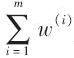 ）。
最后，使用更新后的权重训练一个新的预测器，然后重复整个过程（计算新预测器的权重，更新实例权重，然后对另一个预测器进行训练，等等）。当到达所需数量的预测器，或得到完美的预测器时，算法停止。
预测的时候，AdaBoost就是简单地计算所有预测器的预测结果，并使用预测器权重α j 对它们进行加权。最后，得到大多数加权投票的类别就是预测器给出的预测类别（见公式7-4）。
公式7-4：AdaBoost预测
Scikit-Learn使用的其实是AdaBoost的一个多分类版本，叫作SAMME（ http://goo.gl/Eji2vR ） [4]
（基于多类指数损失函数的逐步添加模型）。当只有两个类别时，SAMME即等同于AdaBoost。此外，如果预测器可以估算类别概率（即具有predict_proba（）方法），Scikit-Learn会使用一种SAMME的变体，称为SAMME.R（R代表“Real”），它依赖的是类别概率而不是类别预测，通常表现更好。
下面的代码使用Scikit-Learn的AdaBoostClassifier（正如你猜想的，还有一个AdaBoostRegressor类）训练了一个AdaBoost分类器，它基于200个单层决策树（decision stump）。顾名思义，单层决策树就是max_depth=1的决策树，换言之，就是一个决策节点加两个叶节点。这是AdaBoostClassifier默认使用的基础估算器。
代码详情
1 | from sklearn.ensemble import AdaBoostClassifier |
如果你的AdaBoost集成过度拟合训练集，你可以试试减少估算器数量，或是提高基础估算器的正则化程度。
梯度提升
另一个非常受欢迎的提升法是梯度提升（Gradient Boosting）。 [5] 跟AdaBoost一样，梯度提升（ http://goo.gl/Ezw4jL
）也是逐步在集成中添加预测器，每一个都对其前序做出改正。不同之处在于，它不是像AdaBoost那样在每个迭代中调整实例权重，而是让新的预测器针对前一个预测器的残差进行拟合。
我们来看一个简单的回归示例，使用决策树作为基础预测器（梯度提升当然也适用于回归任务），这被称为梯度树提升或者是梯度提升回归树（GBRT）。首先，在训练集（比如带噪声的二次训练集）上拟合一个DecisionTreeRegressor：
代码详情
1 | from sklearn.tree import DecisionTreeRegressor |
现在，针对第一个预测器的残差，训练第二个DecisionTreeRegressor：
代码详情
1 | y2 = y -tree_reg1.predict(X) |
然后，针对第二个预测器的残差，训练第三个回归器：
代码详情
1 | y3 = y2 -tree_reg2.predict(X) |
现在，我们有了一个包含三棵树的集成。它将所有树的预测相加，从而对新实例进行预测：
代码详情
1 | y_pred = sum(tree.predict(X_new) for tree in (tree_reg1, tree_reg2, |
图7-9的左侧表示这三棵树单独的预测，右侧表示集成的预测。第一行，集成只有一棵树，所以它的预测与第一棵树的预测完全相同。第二行是在第一棵树的残差上训练的一棵新树，从右侧可见，集成的预测等于前面两棵树的预测之和。类似地，第三行又有一棵在第二棵树的残差上训练的新树，集成的预测随着新树的添加逐渐变好。
训练GBRT集成有个简单的方法，就是使用Scikit-Learn的GradientBoosting-Regressor类。与RandomForestRegressor类似，它具有控制决策树生长的超参数（例如max_depth、min_samples_leaf等），以及控制集成训练的超参数，例如树的数量（n_estimators）。以下代码可创建上面的集成：
代码详情
1 | from sklearn.ensemble import GradientBoostingRegressor |
图7-9：梯度提升
超参数learning_rate对每棵树的贡献进行缩放。如果你将其设置为低值，比如0.1，则需要更多的树来拟合训练集，但是预测的泛化效果通常更好。这是一种被称为收缩的正则化技术。图7-10显示了用低学习率训练的两个GBRT集成：左侧拟合训练集的树数量不足，而右侧拟合训练集的树数量过多从而导致过度拟合。
要找到树的最佳数量，可以使用早期停止法（参见第4章）。简单的实现方法就是使用staged_predict（）方法：它在训练的每个阶段（一棵树时，两棵树时，等等）都对集成的预测返回一个迭代器。以下代码训练了一个拥有120棵树的GBRT集成，然后测量每个训练阶段的验证误差，从而找到树的最优数量，最后使用最优树数重新训练了一个GBRT集成：

图7-10：GBRT集成——预测器太少（左图）和预测器太多（右图）
代码详情
1 | import numpy as np |
验证误差如图7-11的左图所示，最好的模型预测如右图所示。
图7-11：通过早期停止法调整树的数量
实际上，要实现早期停止法，不一定需要先训练大量的树，然后再回头找最优的数字，还可以真的提前停止训练。设置warm_start=True，当fit（）方法被调用时，Scikit-Learn会保留现有的树，从而允许增量训练。以下代码会在验证误差连续5次迭代未改善时，直接停止训练：
代码详情
1 | gbrt = GradientBoostingRegressor(max_depth=2, warm_start=True) |
GradientBoostingRegressor类还可以支持超参数subsample，指定用于训练每棵树的实例的比例。例如，如果subsample=0.25，则每棵树用25%的随机选择的实例进行训练。现在你可以猜到，这也是用更高的偏差换取了更低的方差，同时在相当大的程度上加速了训练过程。这种技术被称为随机梯度提升。
梯度提升也可以使用其他成本函数，通过超参数loss来控制（有关更多详细信息，请参阅Scikit-Learn的文档）。
[1] “A Decision-Theoretic Generalization of On-Line Learning and an Application to Boosting”，Yoav Freund和Robert E.Schapire（1997）。
[2] 这里只是为了举例说明。对于AdaBoost来说，SVM通常不是很好的基础预测器，因为它们很慢，并且由于使用了AdaBoost，很容易不稳定。
[3] 初始的AdaBoost算法不使用学习率超参数。
[4] 更详细内容可参考：“Multi-Class AdaBoost”，J.Zhu等人（2006）。
[5] 首次提出来自于“Arcing the Edge”，L.Breiman（1997），http://statistics.berkeley.edu/sites/default/files/tech-reports/486.pdf。
堆叠法
本章我们要讨论的最后一个集成方法叫作堆叠法（stacking），又称层叠泛化法（ http://goo.gl/9I2NBw ）。 [1] 它基于一个简单的想法：与其使用一些简单的函数（比如硬投票）来聚合集成中所有预测器的预测，我们为什么不训练一个模型来执行这个聚合呢？图7-12显示了在新实例上执行回归任务的这样一个集成。底部的三个预测器分别预测了不同的值（3.1、2.7和2.9），然后最终的预测器（称为混合器或元学习器）将这些预测作为输入，进行最终预测（3.0）。
训练混合器的常用方法是使用留存集。 [2] 我们看看它是如何工作的。首先，将训练集分为两个子集，第一个子集用来训练第一层的预测器（见图7-13）。
图7-12：通过混合预测器聚合预测
图7-13：训练第一层
然后，用第一层的预测器在第二个（留存）子集上进行预测（见图7-14）。因为预测器在训练时从未见过这些实例，所以可以确保预测是“干净的”。那么现在对于留存集中的每个实例都有了三个预测值。我们可以使用这些预测值作为输入特征，创建一个新的训练集（新的训练集有三个维度），并保留目标值。在这个新的训练集上训练混合器，让它学习根据第一层的预测来预测目标值。

图7-14：训练混合器
事实上，通过这种方法可以训练多种不同的混合器（例如，一个使用线性回归，另一个使用随机森林回归，等等）：于是我们可以得到一个混合器层。诀窍在于将训练集分为三个子集：第一个用来训练第一层，第二个用来创造训练第二层的新训练集（使用第一层的预测），而第三个用来创造训练第三层的新训练集（使用第二层的预测）。一旦训练完成，我们可以按照顺序遍历每层来对新实例进行预测，如图7-15所示。
图7-15：一个多层堆叠集成的预测
不幸的是，Scikit-Learn不直接支持堆叠，但是自己堆出stacking的实现品并不太难（参见接下来的练习）。或者，你也可以使用开源的实现方案，例如brew（可从 https://github.com/viisar/brew 获得）。
[1] “Stacked Generalization”，D.Wolpert（1992）。
[2] 或者使用折外（out-of-fold）预测也可以。在某些情况下，这才被称为堆叠（stacking），而使用留存集被称为混合（blending）。但是对多数人而言，这二者是同义词。
练习
1.如果你已经在完全相同的训练集上训练了五个不同的模型，并且它们都达到了95%的准确率，是否还有机会通过结合这些模型来获得更好的结果？如果可以，该怎么做？如果不行，为什么？
2.硬投票分类器和软投票分类器有什么区别？
3.是否可以通过在多个服务器上并行来加速bagging集成的训练？pasting集成呢？boosting集成呢？随机森林或stacking集成呢？
4.包外评估的好处是什么？
5.是什么让极端随机树比一般随机森林更加随机？这部分增加的随机性有什么用？极端随机树比一般随机森林快还是慢？
6.如果你的AdaBoost集成对训练数据拟合不足，你应该调整哪些超参数？怎么调整？
7.如果你的梯度提升集成对训练集过度拟合，你是应该提升还是降低学习率？
8.加载MNIST数据集（第3章中有介绍），将其分为一个训练集、一个验证集和一个测试集（例如使用40000个实例训练，10000个实例验证，最后10000个实例测试）。然后训练多个分类器，比如一个随机森林分类器、一个极端随机树分类器和一个SVM。接下来，尝试使用软投票法或者硬投票法将它们组合成一个集成，这个集成在验证集上的表现要胜过它们各自单独的表现。成功找到集成后，在测试集上测试。与单个的分类器相比，它的性能要好多少？
9.运行上一个练习中的单个分类器，用验证集进行预测，然后用预测结果创建一个新的训练集：新训练集中的每个实例都是一个向量，这个向量包含所有分类器对于一张图像的一组预测，目标值是图像的类别。恭喜，你成功训练了一个混合器，结合第一层的分类器，它们一起构成了一个stacking集成。现在在测试集上评估这个集成。对于测试集中的每张图像，使用所有的分类器进行预测，然后将预测结果提供给混合器，得到集成的预测。与前面训练的投票分类器相比，这个集成的结果如何？
以上练习的解答可从附录A中获得。
第8章 降维
许多机器学习问题涉及训练实例的几千甚至上百万个特征。后面我们将会看到，这不仅导致训练非常缓慢，也让我们更加难以找到好的解决方案。这个问题通常被称为维度的诅咒。
幸运的是，对现实世界的问题，我们一般可以大量减少特征的数量，将棘手的问题转化成容易解决的问题。例如，MNIST图像（见第3章介绍）：图像边框的像素位上几乎全是白色，所以我们完全可以在训练集中抛弃这些像素位，也不会丢失太多信息。图7-6也证实了这些像素对于分类任务来说完全无足轻重。此外，两个相邻像素通常是高度相关的：如果将它们合并成一个像素（例如，取两个像素强度的平均值），也不会丢失太多信息。
数据降维确实会丢失一些信息（就好比将图像压缩为JPEG会降低其质量一样），所以，它虽然能够加速训练，但是也会轻微降低系统性能。同时它也让流水线更为复杂，维护难度上升。所以，如果训练太慢，你首先应该尝试的还是继续使用原始数据，然后再考虑数据降维。不过在某些情况下，降低训练数据的维度可能会滤除掉一些不必要的噪声和细节，从而导致性能更好（但通常来说不会，它只会加速训练）。
除了加快训练，降维对于数据可视化（或称DataViz）也是非常有用的。将维度降到两个（或三个），就可以在图形上绘制出高维训练集，通过视觉来检测模式，常常可以获得一些十分重要的洞察，比如说聚类。
本章将探讨维度的诅咒，大致了解高维空间中发生的事情。然后，我们将介绍两种主要的数据降维方法（投影和流形学习），并学习现在最流行的三种数据降维技术：PCA、Kernal PCA以及LLE。
维度的诅咒
我们太习惯三维空间的生活 [1] ，所以当我们试图去想象一个高维空间时，我们的直觉思维很难成功。即使是一个基本的四维超立方体（参见图8-1），我们也很难在脑海中想象出来，更不用说在一个千维空间中弯曲的200维椭圆体。
图8-1：点、线、面、立方体和超立方体（从零维到四维超立方体） [2]
事实证明，在高维空间中，许多事物的行为都迥然不同。例如，如果你在一个单位平面（1×1的正方形）内随机选择一个点，那么这个点离边界的距离小于0.001的概率只有约0.4%（也就是说，一个随机的点不大可能刚好位于某个维度的“极端”）。但是，在一个10000维的单位超立方体（1×1…×1立方体，一万个1）中，这个概率大于99.999999%。高维超立方体中大多数点都非常接近边界。 [3]
还有一个更麻烦的区别：如果你在单位平面中随机挑两个点，这两个点之间的平均距离大约为0.52。如果在三维的单位立方体中随机挑两个点，两点之间的平均距离大约为0.66。但是，如果在一个100万维的超立方体中随机挑两个点呢？不管你相信与否，平均距离大约为408.25（约等于
）！这是非常违背直觉的：位于同一个单位超立方体中的两个点，怎么可能距离如此之远？这个事实说明高维数据集有很大可能是非常稀疏的：大多数训练实例可能彼此之间相距很远。当然，这也意味着新的实例很可能远离任何一个训练实例，导致预测跟低维度相比，更加不可靠，因为它们基于更大的推测。简而言之，训练集的维度越高，过度拟合的风险就越大。
理论上来说，通过增大训练集，使训练实例达到足够的密度，是可以解开维度的诅咒的。然而不幸的是，实践中，要达到给定密度所需要的训练实例数量随着维度增加呈指数式上升。仅仅100个特征下（远小于MNIST问题），要让所有训练实例（假设在所有维度上平均分布）之间的平均距离小于0.1，你需要的训练实例数量就比可观察宇宙中的原子数量还要多。
[1] 好吧，如果算上时间就是四维，或者如果你是个字符串理论家，还可以再高几个维度。
[2] 在http://goo.gl/OM7ktJ上可以观看一个投影到三维空间的旋转超立方体。图片由维基百科用户NerdBoy1932提供（Creative Commons BY-SA 3.0（https://creativecommons.org/licenses/bysa/3.0/）），转载自https://en.wikipedia.org/wiki/Tesseract。
[3] 趣味事实：只要你考虑足够多的维度，你所知道的每个人，至少在某一个维度上，都可能算是个极端主义者（比如，他们在咖啡里放多少糖）。
数据降维的主要方法
在我们深入了解具体的降维算法之前，我们先来看看降维的两种主要方法：投影和流形学习。
投影
在大多数现实世界的问题里，训练实例在所有维度上并不是均匀分布的。许多特征几乎是不变的，也有许多特征是高度相关联的（如前面讨论的MNIST数据集）。因此，高维空间的所有训练实例实际上（或近似于）受一个低得多的低维子空间所影响。这听起来很抽象，所以我们来看一个例子。在图8-2中，你可以看到一个由圆圈表示的3D数据集。
图8-2：3D数据集和2D子空间
注意看，所有的训练实例都紧挨着一个平面：这就是高维（3D）空间的低维（2D）子空间。现在，如果我们将每个训练实例垂直投影到这个子空间（如图中实例到平面之间的短线所示），我们将得到如图8-3所示的新2D数据集。我们已经将数据集维度从三维降到了二维。注意，图中的轴对应的是新特征z 1 和z 2 （平面上投影的坐标）。
图8-3：投影后产生的新2D数据集
不过投影并不总是降维的最佳方法。在许多情况下，子空间可能会弯曲或转动，比如图8-4所示的著名的瑞士卷玩具数据集。
图8-4：瑞士卷数据集
简单地进行平面投影（例如放弃x 3
）会直接将瑞士卷的不同层压扁在一起，如图8-5的左图所示。但是你真正想要的是将整个瑞士卷展开铺平以后的2D数据集，如图8-5的右图所示。
图8-5：投影到平面（左）和展开瑞士卷（右）
流形学习
瑞士卷就是二维流形的一个例子。简单地说，2D流形就是一个能够在更高维空间里面弯曲和扭转的2D形状。更概括地说，d维流形就是n（其中，d＜n）维空间的一部分，局部类似于一个d维超平面。在瑞士卷的例子中，d=2，n=3：它局部类似于一个2D平面，但是在第三个维度上卷起。
许多降维算法是通过对训练实例进行流形建模来实现的，这被称为流形学习。它依赖于流形假设，也称为流形假说，认为大多数现实世界的高维度数据集存在一个低维度的流形来重新表示。这个假设通常是凭经验观察的。
再次说到MNIST数据集：所有手写的数字图像都有一些相似之处。它们由相连的线条组成，边界都是白色的，或多或少是居中的，等等。如果你随机生成图像，只有少到不能再少的一部分可能看起来像手写数字。也就是说，如果你要创建一个数字图像，你拥有的自由度要远远低于允许你创建任意图像的自由度。而这些限制正倾向于将数据集挤压成更低维度的流形。
流形假设通常还伴随着一个隐含的假设：如果能用低维空间的流形表示，手头的任务（例如分类或者回归）将变得更简单。例如，图8-6的上面一行，瑞士卷被分为两类：3D空间中（左上）决策边界将会相当复杂，但是在展开的2D流形空间（右上），决策边界是一条简单的直线。
但是，这个假设并不总是成立。例如，图8-6的底行，决策边界在x 1 =5处，在原始的3D空间中，这个边界看起来非常简单（一个垂直的平面），但是在展开的流形中，决策边界看起来反而更为复杂（四个独立线段的集合）。
简而言之，在训练模型之前降低训练集的维度，肯定可以加快训练速度，但这并不总是会导致更好或更简单的解决方案，它取决于数据集。
希望现在你对于维度的诅咒有了一个很好的理解，也知道降维算法是怎么对付它的，特别是当流形假设成立的时候，应该怎么处理。本章剩余部分将逐一介绍几个最流行的算法。
图8-6：决策边界不总是维度越低越简单
PCA
主成分分析（PCA）是迄今为止最流行的降维算法。它先是识别出最接近数据的超平面，然后将数据投影其上。
保留差异性
将训练集投影到低维超平面之前，需要选择正确的超平面。例如图8-7的左图代表一个简单的2D数据集，沿三条不同的轴（即一维超平面）。右图是将数据集映射到每条轴上的结果。正如你所见，在实线上的投影保留了最大的差异性，而点线上的投影只保留了非常小的差异性，虚线上的投影差异性居中。
图8-7：选择投影的子空间
选择保留最大差异性的轴看起来比较合理，因为它可能比其他两种投影丢失的信息更少。要证明这一选择，还有一种方法，比较原始数据集与其轴上的投影之间的均方距离，使这个均方距离最小的轴是最合理的选择，也就是实线代表的轴。这也正是PCA背后的简单思想（ http://goo.gl/gbNo1D ）。 [1]
主成分
主成分分析（PCA）可以在训练集中识别出哪条轴对差异性的贡献度最高。在图8-7中，即是由实线表示的轴。同时它也找出了第二条轴，它对剩余差异性的贡献度最高，与第一条轴垂直。因为这个例子是二维的，所以除了这条点线再没有其他。如果是在更高维数据集中，PCA还会找到与前两条都正交的第三条轴，以及第四条、第五条，等等——轴的数量与数据集维度数量相同。
定义第i条轴的单位向量就叫作第i个主成分（PC）。图8-7中，第一个主成分是c 1 ，第二个主成分是c 2 。在图8-2中，前两个主成分是平面里正交的箭头所示，第三个主成分则是垂直于平面（向上或向下）。
主成分的方向是不稳定的：如果你稍微打乱训练集，然后重新运行PCA，部分新的主成分可能指向跟原来的主成分相反的方向。但是，它们通常还是在同一条轴上。在某些情况下，两条主成分可能会旋转甚至互换，但是它们定义的平面还是不变。
所以怎么找到训练集的主成分呢？还好有一种标准矩阵分解技术，叫作奇异值分解（SVD）。它可以将训练集矩阵X分解成三个矩阵的点积U·∑·V T ，其中V T 正包含我们想要的所有主成分，如公式8-1所示。
公式8-1：主成分矩阵
下面的Python代码使用NumPy的svd（）函数来获取训练集中所有的主成分，并提取前两个：
代码详情
1 | X_centered = X -X.mean(axis=0) |
PCA假设数据集围绕原点集中。所以我们看到的Scikit-Learn的PCA类将会替你处理数据集中。但是，如果你是自己实现PCA（比如前面的示例），或者使用其他库时，不要忘记先将数据集中。
低维度投影
一旦确定了所有主成分，就可以将数据集投影到由前d个主成分定义的超平面上，从而将数据集的维度降到d维。这个超平面的选择，能确保投影保留尽可能多的差异性。例如，在图8-2中，3D数据集投影到由前两个主成分定义的2D平面上，就保留了原始数据集的大部分差异。因此，2D投影看起来非常像原始的3D数据集。
要将训练集投影到超平面上，简单地计算训练集矩阵X和矩阵W d 的点积即可，W d 是包含前d个主成分的矩阵（即由矩阵V T 的前d列组成的矩阵），参见公式8-2。
公式8-2：将训练集投影到低维度
以下Python代码将训练集投影到由前两个主成分定义的平面上：
代码详情
1 | W2 = V.T[:, :2] |
好了，现在你该知道如何在保留尽可能多差异性的同时，将任意数据集降低到任意维度。
使用Scikit-Learn
跟我们之前一样，Scikit-Learn的PCA类也使用SVD分解来实现主成分分析。以下代码应用PCA将数据集的维度降到二维（注意它会自动处理数据集中）：
代码详情
1 | from sklearn.decomposition import PCA |
将PCA转换器应用到数据集之后，你可以通过变量components_来访问主成分（它包含的主成分是水平向量，因此举例来说，第一个主成分即等于pca.components_.T[：，0]）。
方差解释率
另一个非常有用的信息是每个主成分的方差解释率，它可以通过变量explained_variance_ratio_获得。它表示每个主成分轴对整个数据集的方差的贡献度。例如，我们看图8-2所示的3D数据集中前两个主成分的方差解释率：
代码详情
1 | >>> print(pca.explained_variance_ratio_) |
这告诉我们，数据集方差的84.2%由第一条轴贡献，14.6%来自于第二条轴，剩下给第三条轴的还不到1.2%，所以有理由认为它可能没有什么信息。
选择正确数量的维度
除了武断地选择要降至的维度数量，通常来说更好的办法是将靠前的主成分方差解释率依次相加，直到得到足够大比例的方差（例如95%），这时的维度数量就是很好的选择。当然，除非你正在为了数据可视化而降维——这种情况下，通常会直接降到二维或三维。
下面的代码计算PCA但是没有降维，而是计算若要保留训练集方差的95%所需要的最低维度数量：
代码详情
1 | pca = PCA() |
然后，你就可以设置n_components=d，再次运行PCA。不过还有一个更好的方法：不需要指定保留主成分的数量，你可以直接将n_components设置为0.0到1.0之间的浮点数，表示希望保留的方差比：
代码详情
1 | pca = PCA(n_components=0.95) |
另外，还可以将解释方差绘制成关于维度数量的函数（绘制cumsum即可，见图8-8）。曲线通常都会有一个拐点，说明方差停止快速增长。你可以将其视为数据集的本征维数。从本例中可以看出，将维度数量降低至100维，不会损失太多的解释方差。

图8-8：关于维度数量的解释方差函数
PCA压缩
显然，降维之后训练集占用的空间要小得多。例如，对MNIST数据集应用主成分分析，然后保留其方差的95%。你会发现，原来每个实例的784个特征变得只有150多个特征。所以这保留了绝大部分差异性的同时，数据集的大小变为不到原始的20%！这是一个合理的压缩比，你可以看看它如何极大提升分类算法（例如SVM分类器）的速度。
在PCA投影上运行投影的逆转换，也可以将缩小的数据集解压缩回784维数据集。当然，你得到的并非原始的数据，因为投影时损失了一部分信息（5%被丢弃的方差），但是它很大可能非常接近于原始数据。原始数据和重建数据（压缩之后解压缩）之间的均方距离，被称为重建误差。例如，以下代码将MNIST数据集压缩到154维，然后使用inverse_transform（）方法将其解压缩回784维。图8-9显示了原始数据集的部分数字（左），以及这些数字经过压缩和解压缩之后的图像。可以看出图像质量有轻微损伤，但是数字基本完好无损。
图8-9：MNIST数据集压缩——保留95%的方差
代码详情
1 | pca = PCA(n_components = 154) |
逆转换的方程如公式8-3所示。
公式8-3：PCA逆转换，回到原始维度
增量PCA
前面关于主成分分析的种种实现，问题在于，它需要整个训练集都进入内存，才能运行SVD算法。幸运的是，我们有增量主成分分析（IPCA）算法：你可以将训练集分成一个个小批量，一次给IPCA算法喂一个。对于大型训练集来说，这个方法很有用，并且还可以在线应用PCA（也就是新实例产生时，算法开始运行）。
以下代码将MNIST数据集分成100个小批量（使用NumPy的array_split（）函数），将它们提供给Scikit-Learn的IncrementalPCA（ http://goo.gl/FmdhUP ） [2] ，将数据集降到154维（跟之前一样）。注意，你必须为每个小批量调用partial_fit（）方法，而不是之前整个训练集的fit（）方法：
代码详情
1 | from sklearn.decomposition import IncrementalPCA |
或者，你也可以使用NumPy的memmap类，它允许你巧妙地操控一个存储在磁盘二进制文件里的大型数组，就好似它也完全在内存里一样，而这个类（memmap）仅在需要时加载内存中需要的数据。由于IncrementalPCA在任何时间都只使用数组的一小部分，因此内存的使用情况仍然受控，这时可以调用常用的fit（）方法，如以下代码所示：
代码详情
1 | X_mm = np.memmap(filename, dtype="float32", mode="readonly", shape=(m, n)) |
随机PCA
Scikit-Learn还提供了另一种实施PCA的选项，称为随机PCA。这是一个随机算法，可以快速找到前d个主成分的近似值。它的计算复杂度是O（m×d 2
）+O（d 3 ），而不是O（m×n 2 ）+O（n 3 ），所以当d远小于n时，它比前面提到的算法要快得多。
代码详情
1 | rnd_pca = PCA(n_components=154, svd_solver="randomized") |
[1] “On Lines and Planes of Closest Fit to Systems of Points in Space”，K.Pearson（1901）。
[2] Scikit-Learn使用的算法记录在“Incremental Learning for Robust Visual Tracking”，D.Ross等人（2007）。
核主成分分析
第5章讨论了核技巧，它是一种数学技巧，隐性地将实例映射到非常高维的空间（称为特征空间），从而使支持向量机能够进行非线性分类和回归。回想一下，高维特征空间的线性决策边界如何对应于原始空间中复杂的非线性决策边界。
事实证明，同样的技巧也可应用于PCA，使复杂的非线性投影降维成为可能。这就是所谓的核主成分分析（kPCA）（ http://goo.gl/5lQT5Q ）。 [1] 它擅长在投影后保留实例的集群，有时甚至也能展开近似于一个扭曲流形的数据集。
例如，下面的代码使用Scikit-Learn的KernelPCA，执行带有RBF核函数的kPCA（有关RBF核和其他核的更多细节，请参阅第5章）：
代码详情
1 | from sklearn.decomposition import KernelPCA |
图8-10显示了使用不同核函数降到二维的瑞士卷，包括线性核函数（相当于直接使用PCA类）、RBF核函数，以及sigmoid核函数（Logistic）。
图8-10：使用不同核函数的kPCA将瑞士卷降至2D
选择核函数和调整超参数
由于kPCA是一种无监督的学习算法，因此没有明显的性能指标来帮你选择最佳的核函数和超参数值。而降维通常是监督式学习任务（例如分类）的准备步骤，所以可以使用网格搜索，来找到使任务性能最佳的核和超参数。例如，下面的代码创建了一个两步流水线，首先使用kPCA将维度降至二维，然后应用逻辑回归进行分类。接下来使用GridSearchCV为kPCA找到最佳的核和gamma值，从而在流水线最后获得最准确的分类：
代码详情
1 | from sklearn.model_selection import GridSearchCV |
最佳的核和超参数可以通过变量best_params_获得：
代码详情
1 | >>> print(grid_search.best_params_) |
还有一种完全不受监督方法，就是选择重建误差最低的核和超参数。但是这个重建不像线性PCA重建那样容易。我们来看看原因，图8-11显示了瑞士卷的原始3D数据集（左上），和应用RBF核的kPCA得到的二维数据集（右上）。因为核技巧，所以这在数学上等同于：通过特征映射函数 ，将训练集映射到无限维度的特征空间（右下），然后用线性PCA将转换后的训练集投影到2D平面。注意，如果我们对一个已经降维的实例进行线性PCA逆转换，重建的点将存在于特征空间，而不是原始空间中（例如，图中x表示的那个点）。而这里特征空间是无限维度的，所以我们无法计算出重建点，因此也无法计算出真实的重建误差。幸好，我们可以在原始空间中找到一个点，使其映射接近于重建点。这被称为重建原像。一旦有了这个原像，你就可以测量它到原始实例的平方距离。最后，便可以选择使这个重建原像误差最小化的核和超参数。
，将训练集映射到无限维度的特征空间（右下），然后用线性PCA将转换后的训练集投影到2D平面。注意，如果我们对一个已经降维的实例进行线性PCA逆转换，重建的点将存在于特征空间，而不是原始空间中（例如，图中x表示的那个点）。而这里特征空间是无限维度的，所以我们无法计算出重建点，因此也无法计算出真实的重建误差。幸好，我们可以在原始空间中找到一个点，使其映射接近于重建点。这被称为重建原像。一旦有了这个原像，你就可以测量它到原始实例的平方距离。最后，便可以选择使这个重建原像误差最小化的核和超参数。
图8-11：Kernel PCA和重建原像误差
要怎么执行这个重建呢？方法之一是训练一个监督式回归模型，以投影后的实例作为训练集，并以原始实例作为目标。如果你设置fit_inverse_transform=True，Scikit-Learn会自动执行该操作，如下代码所示： [2]
代码详情
1 | rbf_pca = KernelPCA(n_components = 2, kernel="rbf", gamma=0.0433, |
默认情况下为fit_inverse_transform=False，并且KernelPCA没有inverse_transform（）方法。只有在设置fit_inverse_transform=True时才会创建该方法。
然后你就可以计算重建原像误差：
代码详情
1 | >>> from sklearn.metrics import mean_squared_error |
现在，你可以使用交叉验证的网格搜索，来寻找使这个原像重建误差最小的核和超参数。
[1] “Kernel Principal Component Analysis”，B.Schölkopf、A.Smola和K.Müller（1999）。
[2] Scikit-Learn使用的算法是基于一种核岭回归算法，由Gokhan H.Bakir、Jason Weston和Bernhard Scholkopf在论文“Learning to Find Pre-images”（http://goo.gl/d0ydY6）中提出（Tubingen，Germany：Max Planck Institute for Biological Cybernetics，2004）。
局部线性嵌入
局部线性嵌入（ https://goo.gl/iA9bns ）（LLE） [1] 是另一种非常强大的非线性降维（NLDR）技术。不像之前的算法依赖于投影，它是一种流形学习技术。简单来说，LLE首先测量每个算法如何与其最近的邻居（c.n.）线性相关，然后为训练集寻找一个能最大程度保留这些局部关系的低维表示（细节稍后解释）。这使得它特别擅长展开弯曲的流形，特别是没有太多噪声时。
例如，下面的代码使用Scikit-Learn的LocallyLinearEmbedding类来展开瑞士卷。得到的二维数据集如图8-12所示。正如你所见，瑞士卷完全展开，实例之间的距离局部保存得很好。不过从整体来看，距离保存得不够好：展开的瑞士卷左侧被挤压，而右侧被拉长。尽管如此，对于流形建模来说，LLE还是做得相当不错。
代码详情
1 | from sklearn.manifold import LocallyLinearEmbedding |
图8-12：使用LLE展开瑞士卷
下面是LLE的工作原理：首先，对于每个训练实例x （i） ，算法会识别出离它最近的k个邻居（上面的代码中k=10），然后尝试将x （i） 重建为这些邻居的线性函数。更具体来说，就是要找到权重w i，j 使实例x （i） 和 之间的距离平方最小，如果实例x
（i） 不是实例x （i） 的k个最近的邻居之一，w i，j ＝0。因此，LLE的第一步就是公式8-4所示的约束优化问题，其中W是包含所有权重w i，j 的权重矩阵，第二个约束则是简单地对每个训练实例x （i） 的权重进行归一。
公式8-4：LLE第一步：对局部关系线性建模
这一步完成后，权重矩阵 （包含权重
）对训练实例之间的局部线性关系进行编码。现在，第二步就是要将训练实例映射到一个d维空间（d＜n），同时尽可能保留这些局部关系。如果z （i） 是实例x
（i） 在这个d维空间的映像，那么我们希望从z （i） 到 之间的平方距离尽可能小。这个想法产生了如公式8-5描述的一个无约束优化问题。它看起来与第一步类似，但不是保持固定距离寻找最佳权重，而是保持固定权重，并在低维空间中找到每个实例映像的最佳位置。注意Z是包含所有z
之间的平方距离尽可能小。这个想法产生了如公式8-5描述的一个无约束优化问题。它看起来与第一步类似，但不是保持固定距离寻找最佳权重，而是保持固定权重，并在低维空间中找到每个实例映像的最佳位置。注意Z是包含所有z
（i） 的矩阵。
公式8-5：LLE第二步：保留关系并降维
Scikit-Learn的LLE实现，计算复杂度如下：寻找k个最近邻为O（m log（m）n log（k））；优化权重为O（mnk 3
）；构建低维表示，为O（dm 2 ）。很不幸，最后一个表达式里的m 2 说明这个算法很难扩展应用到大型数据集。
[1] “Nonlinear Dimensionality Reduction by Locally Linear Embedding”，S.Roweis和L.Saul（2000）。
其他降维技巧
还有许多其他的降维技术，部分可以在Scikit-Learn中找到。以下是一些最流行的：
·多维缩放（MDS）算法，保持实例之间的距离，降低维度（见图8-13）。
·等度量映射（Isomap）算法，将每个实例与其最近的邻居连接起来，创建连接图形，然后保留实例之间的这个测地距离， [1] 降低维度。
·t-分布随机近邻嵌入（t-SNE）算法在降低维度时，试图让相似的实例彼此靠近，不相似的实例彼此远离。它主要用于可视化，尤其是将高维空间中的实例集群可视化（例如，对MNIST图像进行二维可视化）。
·线性判别（LDA）实际上是一种分类算法，但是在训练过程中，它会学习类别之间最有区别的轴，而这个轴正好可以用来定义投影数据的超平面。这样做的好处在于投影上的类别之间会尽可能的分开，所以在运行其他分类算法——比如SVM分类器之前，LDA是一个不错的降维手段。
图8-13：使用不同技术将瑞士卷数据集降为2D
[1] 图中两个节点之间的测地距离是两个节点之间最短路径上的节点数。
练习
1.降低数据集维度的主要动机是什么？有什么主要弊端？
2.什么是维度的诅咒？
3.一旦数据集被降维，是否还有可能逆转？如果有，怎么做？如果没有，为什么？
4.PCA可以用来给高度非线性数据集降维么？
5.假设你在一个1000维数据集上执行PCA，方差解释比设为95%。产生的结果数据集维度是多少？
6.常规PCA、增量PCA、随机PCA及核PCA各适用于何种情况？
7.如何在你的数据集上评估降维算法的性能？
8.链接两个不同的降维算法有意义么？
9.加载MNIST数据集（第3章中介绍），将其分为一个训练集和一个测试集（将前60000个实例用于训练，其余10000个用来测试）。在训练集上训练一个随机森林分类器，并记录训练时长，然后在测试集上对结果模型进行评估。接下来，用PCA给数据集降维，方差解释比设为95%。在降维后的新数据集上训练一个新的随机森林分类器，看看需要多长时间，是不是快得多？最后，在测试集上评估分类器，跟前一个分类器比起来如何？
10.使用t-SNE将MNIST数据集降至两个维度，然后用Matplotlib绘制结果。你可以通过散点图——用10个不同的颜色来代表每个图像的目标类别，或者，你也可以在每个实例的位置写入彩色数字，甚至你还可以绘制数字图像本身的缩小版（如果你绘制所有数字，视觉效果会太凌乱，所以你要么绘制一个随机样本，要么选择单个实例，但是这个实例的周围最好没有其他绘制的实例）。现在你应该得到了一个很好的可视化结果及各自分开的数字集群。尝试使用其他降维算法，如PCA、LLE或MDS等，比较可视化结果。
以上练习的解答可从附录A中获得。
第二部分 神经网络和深度学习
第9章 运行TensorFlow
TensorFlow是一个用于数值计算的强大开源软件库，非常适合大型机器学习。它背后的原理很简单：首先在Python中定义一个用来计算的图（见图9-1），然后TensorFlow就会使用这个图，并用优化过的C++代码来执行计算。
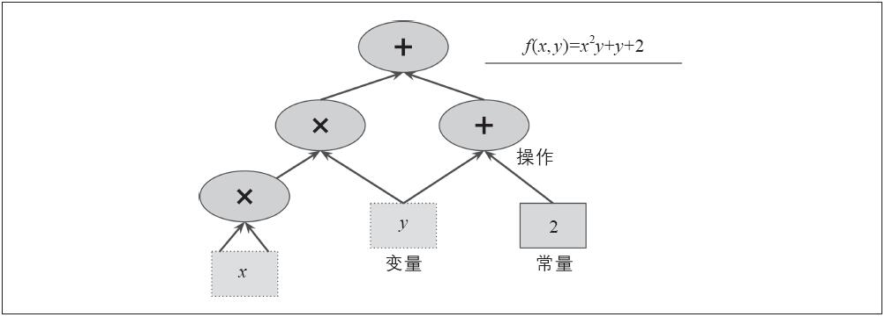
图9-1：一个简单的计算图
最重要的是，TensorFlow可以将一个计算图划分成多个子图，然后并行地在多个CPU或者GPU上执行（见图9-2）。TensorFlow还支持分布式计算，这样可以在合理的时间内，通过在数百台服务器上分割计算，在庞大的训练集上训练巨大的神经网络（详见第12章）。TensorFlow可以在由数十亿个实例组成的训练集上训练具有数百万个参数的神经网络，每个实例具有数百万个特征。这些其实也都不足为奇，毕竟TensorFlow是由Google Brain小组开发的，而且Google众多的大型服务（比如Google Cloud Speech、Google Photos、Google Search等）背后都有TensorFlow的支持。
在TensorFlow从2015年11月宣布开源的时候，深度学习领域已经存在众多流行的开源库（表9-1中列出了一些）。不过，TensorFlow凭借自己清晰的设计、扩展性、灵活性 [1] 和完善的文档（更别提Google的名字了）很快就排在了这个列表的顶端。简而言之，TensorFlow兼具灵活性和扩展性，可直接供生产系统使用，其他已有的框架仅仅能做到这三者中的两个。以下是TensorFlow的一些亮点：
图9-2：多CPU/GPU/服务器上的并行计算
·它可以运行在Windows、Linux、macOS和移动设备上，包括iOS和Android。
·它提供了一个非常简单的名叫TF.Learn [2] （tensorflow.contrib.learn）的Python API来兼容Scikit-Learn。你很快就可以看到，只需要几行代码，你就可以用它来训练各种类型的神经网络。这个库的前身是一个独立的项目，叫作Scikit-Flow（或者简称skflow）。
·它还提供另一个叫作TF-Slim（tensorflow.contrib.slim）的简单API来简化神经网络的构建、训练和评估。
·在TensorFlow之上，独立构建了一些高级的API，比如Keras（ http://keras.io
）和Pretty Tensor（ https://github.com/google/prettytensor/ ）。
·它的Python API提供了很多灵活的方式（代价是很高的复杂性）来创建所有类型的计算，包括所有你能想到的神经网络架构。
·它包含了很多非常高效的、用C++实现的机器学习操作，特别是用来构建神经网络的操作。另外，通过它的API，还可以用C++来实现自己的高性能操作。
·它为搜索最小化成本函数的参数提供了很多高度优化的节点。TensorFlow会自动计算你定义的成本函数的梯度，所以用起来会非常容易，这称为自动微分（或者autodiff）。
·它还提供一个非常强大的叫作TensorBoard的可视化工具，可以用来浏览计算图，查看学习曲线等。
·Google还启动了一个运行TensorFlow计算图（ https://cloud.google.com/ml ）的云服务。
·最后，它有一个热情且乐于助人的开发团队和一个不断增长、持续改进它的社区。它是GitHub上最受欢迎的开源项目之一，有越来越多的项目都是构建于其上的（参见源代码 https://www.tensorflow.org/ 或 https://github.com/jtoy/awesome-tensorflow ）。如果遇到了具体的技术问题，可以在 http://stackoverflow.com/ 提问，并将问题标记为”tensorflow”。可以在GitHub上记录bug或者发起特性请求。对于普通的讨论，请加入Google讨论组（ http://goo.gl/N7kRF9 ）。
这一章会讲解TensorFlow的基础知识，从安装，到创建，执行，保存，可视化简单的计算图。掌握这些基础知识对于构建自己的第一个神经网络（我们会在下一章讨论）来说非常重要。
表9-1：开源的深度学习库（这不是一个详尽的清单）
[1] TensorFlow不局限在神经网络或者机器学习，如果你愿意，甚至可以用它来运行量子物理仿真。
[2] 不要与TFLearn库混淆，TFLearn库是一个独立的项目。
安装
那就开始吧。假设你已经按照第2章里的步骤安装了Jupyter和Scikit-Learn，这样你就可以简单地用pip安装TensorFlow了。如果你已经用virtualenv创建了独立的环境，那么首先你得激活它：
代码详情
1 | $ cd $ML_PATH # Your ML working directory (e.g., $HOME/ml) |
接下来，安装TensorFlow：
代码详情
1 | $ pip3 install --upgrade tensorflow |
要启动GPU支持，需要安装tensorflow-gpu，而不是tensorflow，详见第12章。
用下面这条命令来检查是否安装成功。如果安装成功，这条命令的输出应该是：
代码详情
1 | $ python3 -c 'import tensorflow; print(tensorflow.__version__)' |
创建一个计算图并在会话中执行
下面这段代码会创建图9-1中描述的图：
代码详情
1 | import tensorflow as tf |
就这么简单！重要的是，要理解这段代码其实并没有执行任何的计算，尽管看起来有点像（特别是最后一行），它仅仅是创建了一个计算图而已。事实上，它连变量都还没有初始化。要执行这个图，需要打开一个TensorFlow的会话，然后用它来初始化变量并求值f。一个TensorFlow的会话会将计算分发到诸如CPU和GPU设备上并执行，它还持有所有变量的值 [1] 。下面的代码创建一个会话，初始化所有变量，然后求值，最后f关闭整个会话（释放占用的资源）：
代码详情
1 | >>> sess = tf.Session() |
每次都重复sess.run（）看起来有些笨拙，好在有更好的方式：
代码详情
1 | with tf.Session() as sess: |
在with块中，会有一个默认会话。调用x.initializer.run等价于调用tf.get_default_session（）.run（x.initializer），同样，f.eavl等价于tf.get_default_session（）.run（f）。这种写法不仅可以增加可读性，还可使会话在块中的代码执行结束后自动关闭。
除了手工为每个变量调用初始化器之外，还可以使用global_variables_initializer（）函数来完成同样的动作。注意，这个操作并不会立刻做初始化，它只是在图中创建了一个节点，这个节点会在会话执行时初始化所有变量：
代码详情
1 | init = tf.global_variables_initializer() # prepare an init node |
在Jupyter或者在Python shell中，可以创建一个InteractiveSession。它和常规会话的不同之处在于InteractiveSession在创建时会将自己设置为默认会话，因此你无须使用with块（不过需要在结束之后手工关闭会话）：
代码详情
1 | >>> sess = tf.InteractiveSession() |
一个TensorFlow程序通常可以分成两部分：第一部分用来构建一个计算图（称为构建阶段），第二部分来执行这个图（称为执行阶段）。构建阶段通常会构建一个计算图，这个图用来展现ML模型和训练所需的计算。执行阶段则重复地执行每一步训练动作（比如每个小批量执行一步），并逐步提升模型的参数。我们待会看一个相关的例子。
[1] 在分布式TensorFlow中，变量的值存储在服务器而不是会话中，详情参见第12章。
管理图
你创建的所有节点都会自动添加到默认图上：
代码详情
1 | >>> x1 = tf.Variable(1) |
大部分情况下，这都不是问题，不过有时候你可能想要管理多个互不依赖的图。可以创建一个新的图，然后用with块临时将它设置为默认图：
代码详情
1 | >>> graph = tf.Graph() |
在Jupyter中（或者Python shell中），做实验时你经常会多次执行同一条命令。这样可能会在同一个图上添加了很多重复节点。一种做法是重启Jupyter内核（或者Python shell），更方便的做法是通过tf.reset_default_graph（）来重置默认图。
节点值的生命周期
当求值一个节点时，TensorFlow会自动检测该节点依赖的节点，并先对这些节点求值，比如在下面这个例子中：
代码详情
1 | w = tf.constant(3) |
首先，这段代码定义了一个非常简单的计算图。然后，它启动一个会话，并开始执行计算图，求值y：TensorFlow自动检测到y依赖于w，因为x依赖于w，所以它会先求值w，然后是x，然后是y，并返回y的值。最后，这段代码执行到对z求值的时候。TensorFlow发现需要先求值w和x。需要注意的是，TensorFlow不会复用上一步求值的w和x的结果。简而言之，w和x的值会计算两次。
在图的每次执行间，所有节点值都会被丢弃，但是变量的值不会，因为变量的值是由会话维护的（队列和阅读器也会维护一些状态，详见第12章）。变量的生命周期从初始化器的执行开始，到关闭会话才结束。
对于上述代码，如果你不希望对y和z重复求值，那么必须告诉TensorFlow在一次图的执行中就完成y和z的求值，代码如下：
代码详情
1 | with tf.Session() as sess: |
在单进程的TensorFlow中，即使它们共享同一个计算图，多个会话之间仍然互相隔离，不共享任何状态（每个会话对每个变量都有自己的拷贝）。对于分布式TensorFlow（见第12章），变量值保存在每个服务器上，而不是会话中，所以多个会话可以共享同一变量。
TensorFlow中的线性回归
TensorFlow中的操作（简称op）可以接受任意数量的输入，也可以产生任意数量的输出。举个例子，加法和乘法操作都接受两个输入，并产生一个输出。常量和变量（称为源操作）则没有输入。输入和输出都是多维数组，叫作张量（这也是TensorFlow名字的来源）。就像NumPy中的数组一样，张量也有类型和形状。事实上，在Python API中，张量可以用NumPy中的ndarrays来表示。通常它们会用来保存浮点型数据，不过也可以用它来存储字符串（任意的字节数组）。
目前看到的例子中，张量都只包含了单个标量值，但可以对任意形状的数组进行计算。比如，下面的代码展示了如何操作二维的数组来计算加州的住房数据的线性回归（在第2章中有介绍）。首先，获取数据。然后，对所有训练实例都添加一个额外的偏移（x 0 =1）（由于使用了Numpy，所以这是立刻执行的）。接下来，创建两个TensorFlow的常量节点，x和y以及目标 [1] ，代码中还使用了TensorFlow提供的矩阵操作来定义theta。这些矩阵相关函数transpose（）、matmul（）和matrix_inverse（）都是自解释的，与以往一样，它们不会立即执行，现在只是定义了图中的节点，具体计算要等到图运行时才会发生。你可能已经看出来了，theta的定义用的是正规方程（Normal Equation）（ =X T ·X） –1 ·X T ·y，见第4章）。最后，代码创建会话并对theta求值。
代码详情
1 | import numpy as np |
与直接用NumPy来计算正规方程相比，上述代码的最大好处是如果你有GPU，TensorFlow会把计算自动分发到GPU上去（当然，要安装带有GPU支持的TensorFlow版本，详见第12章）
[1] 注意housing.target是个一维数组，我们需要将它变成一个列向量来计算theta。Numpy的reshape（）函数接受-1（表示未指定）作为参数：该维度将根据数组的长度和剩余维度进行计算。
实现梯度下降
我们来试一下批量梯度下降法（在第4章中有介绍）。首先手工计算梯度，然后使用TensorFlow的自动微分特性来自动计算梯度，最后学习TensorFlow内置的众多优化器。
当使用梯度下降法时，要记得先对输入的特征向量做归一化，否则训练过程会非常慢。可以用TensorFlow、NumPy、Scikit-Learn的StandardScaler，或者其他你喜欢的方法。下面这段代码假设已经做过了归一化。
手工计算梯度
下面的代码基本上都是自解释的了，除了这些新的点之外：
·函数random_uniform（）会在图中创建一个节点，这个节点会生成一个张量。函数会根据传入的形状和值域来生成随机值来填充这个张量，这和NumPy的rand（）函数很相似。
·函数assign（）创建一个为变量赋值的节点。这里，它实现了批量梯度下降step 。
·主循环部分不断执行训练步骤（共n_epochs次），每经过100次迭代，它会打印当前的均方误差（Mean Squared Error）。这个值应该是不断降低的。
代码详情
1 | n_epochs = 1000 |
使用自动微分
上面的代码可以很好地工作，但是需要用数学的方式来从成本函数（MSE）中算出梯度。对于线性回归来说，这是很简单的，但是如果你要处理深度神经网络就很头疼了：过程会琐碎而且容易出错。可以用符号微分法来自动求出偏导方程，不过代码就不一定那么高效了。
为了理解其中的原因，想象函数f（x）=exp（exp（exp（x）））。如果你懂微积分，你会计算出它的导数是f’（x）=exp（x）×exp（exp（x））×exp（exp（exp（x）））。如果在代码中也这样做，那肯定是低效的。更高效的方式是写一个函数先计算exp（x），然后再计算exp（exp（x）），最后计算exp（exp（exp（x））），之后返回三个值。这样可以直接计算出f（x），如果要计算导数，只需要将这三个值相乘。如果用原生的方法，需要调用exp函数9次来计算f（x）和f’（x）。后面这种方式只需要3次。
如果函数由更复杂的代码定义，情况会变更糟。你能求出下面这个函数的偏导方程吗？提示：千万别试！
代码详情
1 | def my_func(a, b): |
幸运的是，TensorFlow的autodiff功能可以帮你解决：它可以自动而且高效地算出梯度。只需要把上述例子中的对gradients的赋值的语句换成下面的代码即可：
代码详情
1 | gradients = tf.gradients(mse, [theta])[0] |
gradients（）函数接受一个操作符（这里是mse）和一个参数列表（这里是theta）作为参数，然后它会创建一个操作符的列表来计算每个变量的梯度。所以梯度节点将计算MSE相对于theta的梯度向量。
四种自动计算梯度的主要方法见表9-2。TensorFlow使用了反向的autodiff算法，它非常适用于有多个输入和少量输出的场景（高效而精确），在神经网络中这种场景非常常见。它只需要n outputs +1次遍历，就可以求出所有输出相对于输入的偏导。
表9-2：自动计算梯度的主要方法
如果你对其背后原理感兴趣，请参见附录D。
使用优化器
TensorFlow会帮你计算梯度，不过它还提供更容易的方法：它内置了很多的优化器，其中就包括梯度下降优化器。你只需要把上面对gradients=…和training_op=…赋值的语句修改成下面的代码即可：
代码详情
1 | optimizer = tf.train.GradientDescentOptimizer(learning_rate=learning_rate) |
如果你想使用其他类型的优化器，只需要修改一行代码。例如，如果要使用动量优化器（momentum optimizer）（比梯度下降优化器的收敛速度快很多，见第11章），可以这样定义优化器：
代码详情
1 | optimizer = tf.train.MomentumOptimizer(learning_rate=learning_rate, |
给训练算法提供数据
下面把上面的代码改成小批次梯度下降（Mini-batch Gradient Descent）。为此，需要一种在每次迭代时用下一个小批量替换X和y的方法。最简单的方法是用占位符节点。占位符节点非常特别，它们不进行任何实际的计算，而只是在运行时输出你需要它输出的值。一般它用来在训练过程中将值传给TensorFlow。如果运行时不为占位符指定一个值，就会得到一个异常。
要创建一个占位符节点，需要调用placeholder（）函数并指定输出张量的数据类型。另外，如果你想强制张量的形状，也可以在此指定。如果给维度设置None值，则表示“任意尺寸”。比如，下面的代码创建了一个占位符节点A，同时创建节点B，节点B=A+5。当对B求值时，给eval（）方法传一个feed_dict，并指定A的值。注意，A必须是2阶的（比如，一个二维数组）而且必须有3列（否则会抛异常），不过可以有任意多行。
代码详情
1 | >>> A = tf.placeholder(tf.float32, shape=(None, 3)) |
实际上，可以输入任何操作的输出，而不仅仅是占位符。这时TensorFlow不会求值这些操作，它会用你传给它的值。
要实现小批次梯度下降，只需要对既有代码做一点微小的调整。首先在构造阶段把X和y定义为占位符节点。
代码详情
1 | X = tf.placeholder(tf.float32, shape=(None, n + 1), name="X") |
然后定义批次的大小并计算批次的总数：
代码详情
1 | batch_size = 100 |
最后，在执行阶段，逐个获取小批次，然后在评估依赖于它们的节点时，通过feed_dict参数提供X和y的值。
代码详情
1 | def fetch_batch(epoch, batch_index, batch_size): |
不过在求值theta时无须给X和y传值，因为theta不依赖于它们中的任意一个。
保存和恢复模型
一旦训练好了模型，就需要将模型的参数保存到硬盘上，这样可以在任何时刻使用这些参数，可以在其他程序中使用，与其他模型做比较，等等。另外，你可能希望在训练过程中定期将检查点（checkpoint）保存起来，这样当电脑崩溃时，可以从最近一个检查点恢复，而不是从头再来。
在TensorFlow中，存取模型都非常容易。在构造期末尾（在所有变量节点都创建之后）创建一个Saver节点，然后在执行期，调用save（）方法，并传入一个会话和检查点文件的路径即可保存模型：
代码详情
1 | [...] |
恢复模型同样简单：与之前一样，在构造期末尾创建一个Saver节点，不过在执行期开始的时候，不是用init节点来初始化变量，而是调用Saver对象上的restore（）方法：
代码详情
1 | with tf.Session() as sess: |
默认地，Saver会按照变量名来保存和恢复变量，不过如果你想做更多的控制，也可以在保存和恢复时自己指定名称。比如，在下面的代码中，Saver只会保存theta，并将其命名为weights：
代码详情
1 | saver = tf.train.Saver({"weights": theta}) |
用TensorBoard来可视化图和训练曲线
现在有一个可以用小批量梯度下降法训练线性回归模型的计算图了，而且可以周期性地将检查点保存起来。听起来很不错，不是吗？不过，我们现在还是依赖print（）函数来可视化训练的进度。有一个更好的方法：使用TensorBoard。给它一些训练状态，它可以在浏览器中将这些状态以交互的方式展现出来（比如学习曲线）。还可以将图的定义提供给它，然后通过浏览器来进行查看。这种方式对识别图中的错误，发现图的瓶颈等非常有用。
首先要对程序稍做修改，这样它可以将图的定义和训练状态，比如，训练误差（MSE），写入到一个TensorBoard会读取的日志文件夹中。每次运行程序时，都需要指定一个不同的目录，否则TensorBoard会将这些状态信息合并起来，这会导致可视化结果变成一团糟。最简单的方式是用时间戳来命名日志文件夹。把下面这些代码放在程序的开始部分：
代码详情
1 | from datetime import datetime |
接着，把下面的代码放在构造期的最后一行：
代码详情
1 | mse_summary = tf.summary.scalar('MSE', mse) |
第一行在图中创建了一个节点，这个节点用来求MSE的值，并将其写入与TensorBoard称为汇总（summary）的二进制日志字符串中。第二行创建了一个用来将汇总写入到日志目录的FileWriter。第一个参数指定了日志目录的路径（在这里如tf_logs/run-20160906091959，相对于当前目录）。第二个参数（可选）指定了你想要可视化的计算图。创建之后，如果目录不存在，FileWriter会创建日志目录（如果父目录不存在，也会自动创建），并将图的定义写入一个叫作事件文件的二进制日志文件中。
接下来，在执行期中，你需要在训练时定期地求值mse_summary节点（比如，每10个小批量）。这会将汇总信息输出，然后通过file_writer来将其写入事件文件中，代码如下：
代码详情
1 | [...] |
要避免在每一步都记录状态信息，因为这会严重拖慢训练速度。
最后，需要在程序结束时关闭FileWriter：
代码详情
1 | file_writer.close() |
现在执行这个程序：它会创建一个日志目录，并在该目录中创建一个事件文件，事件文件中包含了图的定义和MSE的值。打开命令行，切换到工作目录，然后输入ls-l tf_logs/run*来列出该目录中的所有文件：
代码详情
1 | $ cd $ML_PATH # Your ML working directory (e.g., $HOME/ml) |
第二次运行该程序时，你会在tf_logs/中看到第二个目录：
代码详情
1 | $ ls -l tf_logs/ |
很好！现在是时候启动TensorBoard服务器了。如果创建了virtualenv，需要先激活它，然后用tensorboard命令来启动服务器，使它指向日志的根目录。这会启动TensorBoard的Web服务器，并在端口6006上监听（6006正是“goog”倒过来）：
代码详情
1 | $ source env/bin/activate |
在浏览器中输入 http://0.0.0.0:6006/ （或者 http://localhost:6006/
），就可以看到TensorBoard的界面了！在事件页签，你应该可以看到右侧的MSE，如图9-3所示。点击它可以看到两次训练过程中MSE的图表。可以选择展示哪一次的图表，可以放大或者缩小，鼠标移上去查看详情，等等。
图9-3：用TensorBoard可视化训练状态
点击Graphs页签，你应该可以看到图9-4中展示的图表。
为了减轻页面上的杂乱感，有多条边的节点单独放在右侧的辅助区域（可以通过右键单击来切换节点在主图和辅助区域的展示）。图的一些部分默认地会折叠起来。比如，把鼠标指针挪至梯度节点，然后点击⊕图标就可以展开它的子图。接着在子图中，再试试展开mse_grad子图。
如果你想在Jupyter中直接看一眼图的结构，可以用本章的笔记本中的函数show_graph（）。这个函数最早由A.Mordvintsev在他的deepdream笔记本（ http://goo.gl/EtCWUc
）中开发。还可以安装E.Jang’s的包含了Jypyter扩展的TensorFlow调试工具（ https://github.com/ericjang/tdb
）来对图做可视化（当然，还有很多其他功能）。
图9-4：用TensorBoard可视化计算图
命名作用域
在处理诸如神经网络等复杂模型时，图很容易就变得杂乱而庞大。为了避免这种情况，可以创建命名作用域来将相关的节点分组。比如，可以修改上面的例子，将error（误差）和mse ops（MSE操作）定义到一个叫作“loss”的命名作用域中：
代码详情
1 | with tf.name_scope("loss") as scope: |
在这个作用域中定义的每个操作现在都有一个“loss/”前缀：
代码详情
1 | >>> print(error.op.name) |
在TensorBoard中，mse和error节点现在都显示在“loss”命名空间中，并且该命名空间默认是收起来的（见图9-5）。
图9-5：一个收起来的命名作用域
模块化
假设你想要创建一个计算两个修正线性单元（ReLU）之和的图。修正线性单元会计算输入的线性函数，如果值是正数，则输出其值，如果是负数，则返回0，如公式9-1所示。
公式9-1：修正线性单元
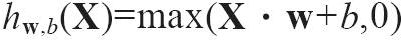
下面的代码可以完成这个工作，不过有点冗余：
代码详情
1 | n_features = 3 |
这种重复代码很难维护，也容易出错（事实上，这段代码包含了一个cut-and-paste的错误，你能看出来吗？）。当要添加多个ReLU时，情况会变得更糟。幸运的是，TensorFlow会让你保持DRY（Don’t Repeat Yourself，不要重复自己）原则：用一个函数来构建ReLU。下面的代码创建了5个ReLU，并且输出了它们的和（注意，add_n（）创建了一个会计算一个张量列表的和的操作）：
代码详情
1 | def relu(X): |
当创建一个节点时，TensorFlow会检查这个名字是否已经存在，如果已经存在了，它会为其添加一个下划线和一个索引以保证唯一性。第一个ReLU包含了名字为”weights””bias””z”和”relu”（以及一些有自己默认名字的节点，比如”MatMul”）的节点；第二个ReLU包含的节点即为：”weights_1””bias_1”等；第三个ReLU会包含”weights_2””bias_2”等节点，TensorBoard会发现这种规律，并将其归类到一组以避免界面的混乱（见图9-6）。
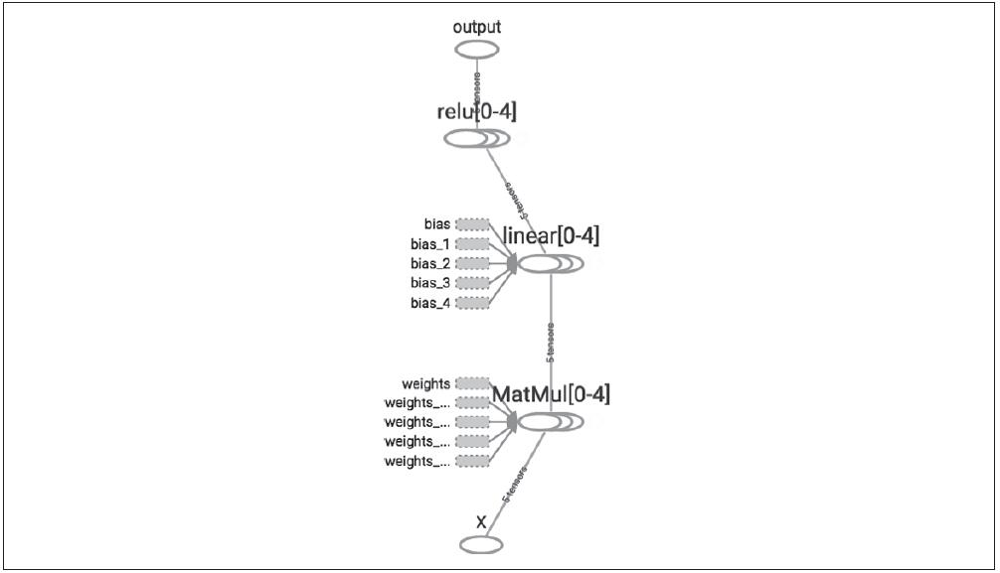
图9-6：收起的节点序列
使用命名作用域，可以让图更加清晰。只需要将relu（）函数的内容放进一个命名作用域即可。图9-7展示了结果图。注意，TensorFlow还通过加_1、_2等后缀的方式为命名作用域提供了唯一的名字。
代码详情
1 | def relu(X): |
图9-7：带有命名作用域的更加清晰的图
共享变量
如果你想在图的不同组件中共享变量，最简单的做法是先创建，然后将其作为参数传递给需要它的函数。比如你想通过一个共享的阈值变量来控制所有ReLU的阈值（当前是硬编码为0的）。可以先创建这个变量，然后传给relu（）函数：
代码详情
1 | def relu(X, threshold): |
这是可行的：你已经可以通过threshold变量来控制所有ReLU的阈值了。不过，如果有太多类似的共享参数，那么一直将其作为参数来到处传递就会变得很痛苦。有些人创建了一个包含模型所需要的所有变量的字典，然后传递给每一个函数。也有人为每个模块都创建一个类（例如，一个ReLU类用类变量来持有共享参数）。别一个选项是在第一次调用时将共享变量设置为relu（）函数的一个属性：
代码详情
1 | def relu(X): |
TensorFlow提供另外一个选择，可以让代码更加清晰，也更加模块化。 [1] 这种方式一开始理解起来会有点困难，不过它会在TensorFlow中频繁使用，还是值得详细讨论的。如果共享变量不存在，该方法先通过get_variable（）函数创建共享变量；如果已经存在了，就复用该共享变量。期望的行为通过当前variable_scope（）的一个属性来控制（创建或者复用）。比如，下面的代码会创建一个名为”relu/threshold”的变量（因为shape=（），所以结果是一个标量，并且以0.0为初始值）：
代码详情
1 | with tf.variable_scope("relu"): |
注意，如果这个变量之前已经被get_variable（）调用创建过，这里会抛出一个异常。这种机制避免由于误操作而复用变量。如果要复用一个变量，需要通过设置变量作用域的reuse属性为True来显式地实现（在这里，不必指定形状或初始化器）。
代码详情
1 | with tf.variable_scope("relu", reuse=True): |
这段代码会获取既有的”relu/threshold”变量，如果该变量不存在，或者在调用get_variable（）时没有创建成功，那么会抛出一个异常。另一种方式是，在调用作用域的reuse_variables（）方法块中设置reuse属性为True：
代码详情
1 | with tf.variable_scope("relu") as scope: |
一旦reuse属性设置为True之后，在该块中就不能再设置为False了。另外，如果在块中定义了另外的变量作用域，它们会自动继承resue=True。最后，只有通过get_variable（）创建的变量才可以用这种方式来进行复用。
现在你已经看到了所有能让relu（）函数无须通过传入参数就访问threshold变量的方法了：
代码详情
1 | def relu(X): |
这段代码首先定义了relu（）函数，然后创建了relu/threshold变量（作为一个标量，会被初始化为0.0）并通过调用relu（）函数构建了5个ReLU。Relu（）函数复用了relu/threshold变量，并创建其他的ReLU节点。
通过get_variable（）创建的变量总是以它们的variable_scope作为前缀来命名的（比如”relu/threshold”），对于其他节点（包括通过tf.Variable（）创建的变量）变量作用域的行为就好像是一个新的作用域。具体来说，如果一个命名作用域有一个已经创建了的变量名，那么就会加上一个后缀以保证其唯一性。比如，上面例子中的所有变量（除了threshold变量）都有一个“relu_1”到“relu_5”的前缀，见图9-8。
图9-8：5个共享阈值变量的ReLU
遗憾的是，threshold变量必须定义在relu（）函数之外，其他所有的ReLU代码都在内部。要解决这个问题，下面的代码在relu（）函数第一次调用时创建了threshold变量，并在后续的调用中复用。现在relu（）函数无须关注命名作用域或者变量共享问题，它只需要调用get_variable（），来创建或者复用threshold变量（无须关心到底是创建还是复用）。剩下的代码调用了relu（）5次，确保第一次调用时将reuse设置为False，后续的调用将reuse设置为True。
代码详情
1 | def relu(X): |
结果图跟之前的略有不同，因为共享变量在第一个ReLU中（见图9-9）。
图9-9：5个共享threshold变量的ReLU
TensorFlow的介绍就到此为止了。我们将在后续的章节中讨论更多的高级主题，特别是与深度神经网络、卷积神经网络、复发神经网络相关的操作，以及如何通过多线程、队列、多GPU、多服务器等对TensorFlow进行扩容。
[1] 理论上来说，创建一个ReLU类是最清晰的做法，不过非常重量级。
练习
1.相比直接执行计算，创建计算图的最大优点是什么？最大的缺点呢？
2.语句a_val=a.eval（session=sess）和a_val=sess.run（a）等价吗？
3.语句a_val，b_val=a.eval（session=sess），b.eval（ses sion=sess）和a_val，b_val=sess.run（[a，b]）等价吗？
4.你可以在同一个会话中运行两个图吗？
5.假设你创建了一个包含变量w的图，然后在两个线程中分别启动一个会话，两个线程都使用了图g，每个会话会有自己对w变量的拷贝，还是会共享变量？
6.变量何时被初始化，又在何时被销毁？
7.占位符和变量的区别是什么？
8.如果对一个依赖于占位符的操作求值，但是又没有为其传值，会发生什么？如果这个操作不依赖于占位符呢？
9.运行一个图时，可以为任意操作输出值，还是只能输出占位符的值？
10.在执行期，你如何为一个变量设置任意的值？
11.反向模式autodiff需要多少次遍历图形才能计算10个变量的成本函数的梯度？正向模式autodiff怎么样？符号微分呢？
12.用小批量梯度下降法来实现逻辑回归。用月亮数据集来训练和评估（数据见第5章）。尝试下面这些任务：
·在函数logistic_regression（）中定义可以被复用的图。
·在训练过程中，定期地通过Saver将检查点保存起来，并将最后的模型保存起来。
·如果训练被终止了，恢复之前保存的模型。
·用合理的作用域来定义图，使得其在TensorBoard上看起来比较漂亮。
·添加汇总信息以在TensorBoard中可视化学习曲线。
·调整诸如学习速率和批次大小等超参数，并查看学习曲线的形状。
练习的参考答案详见附录A。
第10章 人工神经网络简介
我们从鸟类那里得到启发，学会了飞翔，从牛蒡那里得到启发，发明了魔术贴，还有很多其他的发明都是被自然所启发。这么说来看看大脑的组成，并期望因此而得到启发来构建智能机器就显得很合乎逻辑了。这也是人工神经网络（ANN）思想的根本来源。不过，虽然飞机的发明受鸟类的启发，但是它并不用煽动翅膀来飞翔。同样，人工神经网络和它的生物版本也有很大差异。甚至有些研究者认为应该放弃对生物类比的使用（比如，称其为“单元”而不是“神经元”），以免我们将创造力限制在生物学 [1] 上。
人工神经网络是深度学习的核心中的核心。它们通用、强大、可扩展，使得它成为解决大型和高度复杂的机器学习任务的理想选择。比如将数以亿计的图片分类（如Google Images），支撑语音识别服务（如Apple的Siri），为数以千万计的用户每天推荐最佳视频（如YouTube），通过研究之前的数百万次的比赛并不断地和自己比赛，在围棋比赛中击败世界冠军（DeepMind的AlphaGo）。
本章将通过第一个ANN架构的快速教程来介绍人工神经网络。然后会展示多层感知器（MLP）并用TensorFlow来实现一个MLP，并用其来解决MNIST数字分类问题（见第3章）。
[1] 充分接受生物学上的启发，又无须担心生物学上的不可能性，可以让我们充分得到两个世界的最大价值。
从生物神经元到人工神经元
令人惊讶的是，ANN已经存在了好长时间了：最早在1943年由神经学家Warren McCulloch和数学家Walter Pitts提出。在他们著名的论文“A Logical Calculus of Ideas Immanent in Nervous Activity”（ https://goo.gl/Ul4mxW ） [1] 中，McCulloch和Pitts展示了一个简化过的计算模型来描述在动物的大脑中，神经元如何通过命题逻辑来实现复杂的计算。这是第一个人工神经网络架构，正如我们将要看到的，从那之后还有很多其他类型的架构被发明出来。
直到20世纪60年代，ANN的早期成功让人们普遍认为，我们很快将会与真正智能的机器对话。当明确表示这一承诺（至少在一段时间内）将不会实现时，资金就投向了其他地方，ANN进入了漫长的黑暗时期。在20世纪80年代初，随着新网络架构的发明和更好的培训技术的发展，人们对ANN的兴趣又重新变得浓厚。不过到了20世纪90年代，更强大的机器学习技术如支持向量机（见第5章）成为大部分研究者的新宠，因为它们似乎提供了更好的结果和更强大的理论基础。最终，我们见证了另一波对ANN兴趣的高潮。这次高潮会像上一次那样归于沉寂吗？有很多的原因可以相信这一次会不同，而且会给我们的生活带来很多的影响：
·现在有了海量的可用数据来训练神经网络，而且在超大超复杂问题上ANN比其他的ML技术性能更佳。
·自20世纪90年代以来，飞速增长的计算能力使得在合理时间内训练大型神经网络成为可能。部分原因是摩尔定律在生效，不过也要感谢游戏产业，它们制造了数以百万计的强大的GPU。
·训练算法也得到了很大的提升。坦白说与20世纪90年代相比，算法只有一点点不同，但是这些小的调整产生了巨大的正面影响。
·ANN的一些理论限制在实践中被证明是可以接受的。比如，很多人认为训练算法是注定要失败的，因为算法在局部优化时很可能被卡住，不过这种情况在实践中非常少见（或者即使出现了，它们往往和全局优化值已经非常接近）。
·ANN似乎进入了资金和技术进步的良性循环。基于ANN的惊人产品不断地出现在头条，从而吸引更多的关注和资金投入，这又会使其产生新的进步，然后产生更多令人惊讶的产品。
生物神经元
在讨论人工神经元之前，我们先来快速看一下生物神经元（如图10-1所示）。这是一种通常会出现在动物的大脑皮层中的非凡细胞（比如在你的大脑中），由包含细胞核和大部分细胞复合成分的细胞体组成，有许多分枝延伸的部分称为树突，一个非常长的延伸称为轴突。轴突的长度可能比细胞体长几倍，或者长达几万倍。在其极端附近，轴突分裂成许多被称为终树突的分支，在这些分支的尖端是称为突触终端（或简单的突触）的微小结构，它会连接到其他神经元的树突（或直接连接到细胞体）。生物神经元通过这些突触接受从其他细胞发来的很短的电脉冲，这种脉冲被称为信号。当一个神经元在一定的时间内收到足够多的信号，就会出发它自己的信号。
图10-1：生物神经元 [2]
单个的生物神经元看起来非常简单，但是别忘了数以亿计的神经元组成了一个巨大的网络，每个神经元都会与数千个其他的神经元链接。超级复杂的计算也可以通过这些简单的神经元来完成，就好比非常复杂的蚁丘可以通过蚂蚁来完成一样。生物神经网络架构 [3] 仍然是一个非常活跃的研究主题，不过大脑的部分区域已经被映射好了，神经元往往会按照连续的层次来组织，如图10-2所示。
图10-2：生物神经网络的多个层次（人类大脑皮层） [4]
具有神经元的逻辑计算
Warren McCulloch和Walter Pitts提出了一个生物神经元的简化模型，这种模型后来被称为人工神经元：它有一个或多个二进制（开/关）的输入和一个二进制输出。当一定数量的输入都是激活状态时，人工神经元就会激活其输出。McCulloch和Pitts展示了即使用如此简单的模型，也可能构建一个可以计算任意复杂逻辑的网络出来。举个例子，我们来构建一个执行多种逻辑计算的人工神经网络（见图10-3），假设当一个神经元的至少两个输入是激活状态时它自身就会处于激活状态。
图10-3：计算简单逻辑计算的人工神经网络
·左侧的第一个网络是一个简单的等同函数：如果神经元A是激活的，那么C就是激活的（它从A接受了两个输入信号），如果A是非激活的，则C也是非激活的。
·第二个网络计算逻辑与：只有当A和B都处于激活状态，C才会激活（单独的一个输入并不足以激活C）。
·第三个网络计算逻辑或：A和B中有一个（或者两者都）处于激活时，C就会被激活。
·最后，我们假设输入可以抑制神经元的激活状态（正如生物神经网络中那样），那么第四个网络计算的就是一个比较复杂的逻辑操作：只有在A是激活而且B是非激活时，神经元C才会处于激活状态。如果A一直处于激活，那你就得到了逻辑非：当B非激活时，C激活，反之亦然。
你可以很容易地想象用这些网络如何组合出更复杂的逻辑计算（练习见章节末尾处）。
感知器
感知器是最简单的ANN架构之一，于1957年由Frank Rosenblatt发明。它基于一个稍微不同的被称为线性阈值单元（LTU）的人工神经元（见图10-4）：输入和输出都是数字（而不是二进制的开关状态），每个输入的连接都有一个对应的权重。LTU会加权求和所有的输入（z=w 1 x 1 +w 2 x 2 +…+w n x n =w T ·x），然后对求值结果应用一个阶跃函数（step funciton）并产生最后的输出：h w
（x）=step（z）=step（w T ·x）。
感知器中最常见的阶跃函数叫作Heaviside阶跃函数（见公式10-1），有时候会使用带符号的函数。
图10-4：线性阈值单元
公式10-1：感知器中常见的阶跃函数
单个LTU可以用来做简单的线性二值分类。它计算输入的线性组合，如果结果超出了阈值，输出就是正否则为负（与逻辑回归分类器或者线性支持向量机一样）。举个例子，你可以用一个LTU来根据花瓣的长度和宽度分类鸢尾花（正如我们在上一章做的，添加一个x 0 =1偏差）。训练LTU的意思是寻找w 0 、w 1 和w 2 的正确值（训练算法待会讨论）。 109
感知器就是个单层的LTU [5] ，每个神经元都与所有输入相连。这些连接通常使用称为输入神经元的特殊传递神经元来表示：输入什么就输出什么。此外，还会加上一个额外的偏差特征（x 0 =1）。偏差特征通常用偏差神经元来表示，它永远都只输出1。
图10-5展示了一个有两个输入和三个输出的感知器。这个感知器可以将实例同时分为三个不同的二进制类，因此它被称为多输出分类器。

图10-5：感知器图
那么感知器是如何被训练的呢？Frank Rosenblatt提出的感知器训练算法很大程度上受到Hebb’s定律的启发。在他1949年出版的著作《行为的组织》中，Donald Hebb提到如果一个生物神经元总是触发另外的神经元，那么这两个神经元之间的连接就会变得更强。这个想法后来被Siegrid Lowel总结为：同时处于激活状态的细胞是会连在一起的。这个规律后来变成了著名的Hebb定律（又叫Hebbian学习）：当两个神经元有相同的输出时，它们之间的连接权重就会增强。感知器就是使用这个规则的变体进行训练，该变种还考虑了网络错误，对于导致错误输出的连接，它不会加强该连接的权重。更具体地说，感知器一次供给一个训练实例，并且对于每个实例它都会进行预测。对于产生错误预测的每个输出神经元，它加强了来自输入的连接权重，这将对正确的预测做出贡献。规则见公式10-2。
公式10-2：感知器学习规则（权重更新）
·w i，j 是第i个输入神经元和第j个输出神经元的连接权重。
·x i 是当前训练实例的第i个输入值。
· 是当前训练实例的第j个输出神经元的输出。
·y j 是当前训练实例的第j个输出神经元的目标输出。
·η是学习速率。
每个输出神经元的决策边界是线性的，所以感知器无法学习复杂的模式（这点和逻辑回归分类器一样）。Rosenblatt证明如果训练实例是线性可分的，这个算法会收敛到一个解 [6] 。这被称为感知器收敛定理。
Scikit-Learn提供了一个实现单一LTU网络的Perceptron类。它基本可以在鸢尾花数据集上如期工作（见第4章）：
代码详情
1 | import numpy as np |
你可能已经注意到感知器学习算法酷似随机梯度下降法。事实上，在Scikit-Learn里，Perceptron类的行为等同于使用以下超参数的SGDClassifier：loss=”perceptron”，learning_rate=”constant”，eta0=1（学习速率），以及penalty=None（不做正则化）。
注意和逻辑回归分类器相反，感知器不输出某个类概率。它只能根据一个固定的阈值来做预测。这也是更应该使用逻辑回归而不是感知器的一个原因。
在1969年的名为《感知器》的专著中，Marvin Minsky和Seymour Papert强调了感知器的一系列缺点，特别是它无法处理的一些很微小的问题，比如异或分类问题（XOR），见图10-6左侧。当然这个问题在其他任何的线性分类模型中一样存在，只不过研究者对感知器的期望太高，因此失望也更大：结果就是，很多研究者完全放弃连接机制（connectionism，即神经网络的研究），而倾向于更高层次的问题，如逻辑、问题解决和搜索。
不过，事实证明感知器的一些限制可以通过将多个感知器堆叠起来的方式来消除，这种形式的ANN就是多层感知器（Multi-Layer Perceptron）。实践中，MLP可以解决异或问题，比如可以计算一下图10-6中的MLP的结果来验证：对于输入的不同组合，（0，0）或者（1，1）会产生0，而（0，1）或者则产生1。
图10-6：异或分类问题和用来解决它的MLP
多层感知器和反向传播
一个MLP包含一个（透传）输入层，一个或者多个被称为隐藏层的LTU层，以及一个被称为输出层的LTU组成的最终层（见图10-7）。除了输出层之外，每层都包含了一个偏移神经元，并且与下一层完全相连。如果一个ANN有2个以及2个以上的隐藏层，则被称为深度神经网络（DNN）。
图10-7：多层感知器
多年来，研究者都为如何训练MLP而头疼不已，一直没有进展。直到1986年，D.E.Rumelhart发表了一篇介绍反向传播训练算法 [7] 的开创性论文（ https://goo.gl/Wl7Xyc ） [8] 。今天我们称其为使用了反向自动微分的梯度下降法（梯度下降在第4章介绍过，自动微分在第9章介绍过）。
对于每一个训练实例，算法将其发送到网络中并计算每个连续层中的每个神经元的输出（这是正向过程，与做预测的过程一样）。然后它会度量网络的输出误差（对比期望值和实际的网络输出），然后它会计算最后一个隐藏层中的每个神经元对输出神经元的误差的贡献度。之后它继续测量这些误差贡献中有多少来自前一个隐藏层中的每个神经元，这个过程一直持续到输入层（也就是第一层）。这个反向传递过程通过在网络中向后传播误差梯度有效地测量网络中所有连接权重的误差梯度（这也是它名字的来源）。如果你看一下附录D中的反向自动微分算法，你会发现反向传播的正向和反向传递都只是简单地执行反向模式的自动微分。反向传播算法的最后一步是对网络中所有连接权重执行梯度下降法，使用之前度量的误差梯度。
简而言之：对于每个训练实例，反向传播算法先做一次预测（正向过程），度量误差，然后反向的遍历每个层次来度量每个连接的误差贡献度（反向过程），最后再微调每个连接的权重来降低误差（梯度下降）。
为了让这个算法正常工作，作者对MLP架构做了一个关键的调整：把阶跃函数改成了逻辑函数：σ（z）=1/（1+exp（-z））。这是非常关键的一步，因为阶跃函数只包含平面，所以没有梯度（梯度下降在平面上无法移动），但是逻辑函数则有着定义良好的偏导，梯度下降可以在每一步都做调整。除了逻辑函数，反向传播算法还可以和其他激活函数一起使用。最流行的两个激活函数是：
双曲正切函数（z）=2σ（2z）-1
与逻辑函数类似，它是一个S形曲线，连续且可微分，不过它的输出是-1到1之间的值（逻辑是0到1之间的值），这会让每层的输出在训练开始时或多或少地标准化（以0为中心）。这通常有助于快速融合。
ReLU函数（在第9章介绍过）
ReLU（z）=max（0，z）。这个函数也是连续的，不过在z=0时不可微分（坡度的突然变化可以使梯度下降反弹）。不过实践中它工作良好，而且计算速度很快。最重要的是，由于它没有最大输出值，对于消除梯度下降的一些问题很有帮助（我们将在第11章详细讨论）
这些常见激活函数和它们的导数如图10-8所示。
图10-8：激活函数和它们的导数
MLP常常被用来做分类，每个输出对应一个不同的二进制分类（比如，垃圾邮件/正常邮件、紧急/非紧急，等等）。当每个分类是互斥的情况下（比如将图片分类为数字0～9的场景），输出层通常被修改成一个共享的soft-max函数（见图10-9）。softmax函数在第3章介绍过。每个神经元的输出对应于相应分类的估计概率。注意信号是单向流动的（从输入流向输出），所以这种架构是前馈神经网络（FNN）的一个范例。
生物神经元貌似实现了一个粗糙的S形激活函数，所以研究者花了很长时间在S形函数上。但事实证明，ReLU激活函数通常在ANN中工作得更好，这是被生物类比误导的案例之一。
图10-9：用以分类的现代MLP（包含ReLU和softmax）
[1] “神经活动中内在思想的逻辑演算”，W.McCulloch和W.Pitts（1943）。
[2] 图片由Bruce Blaus拍摄（知识共享3.0，https://creativecommons.org/licenses/by/3.0/），转载自https://en.wikipedia.org/wiki/Neuron。
[3] 在机器学习的上下文中，“神经网络”一般指的是人工神经网络，而不是生物神经网络。
[4] 由S.Ramon y Caja（l公共领域）绘制大脑皮质层。转载自https://en.wikipedia.org/wiki/Cerebral_cortex。
[5] Perceptron有时用来表示具有单个LTU的小型网络。
[6] 注意答案往往不唯一，通常来说，如果数据是线性可分的，那么总有一个无线的超平面可以划分它们。
[7] “通过错误传播学习内部表示”，D.Rumelhart、G.Hinton和R.Williams（1986）。
[8] 该算法实际由不同领域的多个研究人员发明，从1974年，P.Werbos的研究开始。
用TensorFlow的高级API来训练MLP
用TensorFlow训练MLP的最简单方式是使用它的高级API TF.Learn，这和Scikit-learn的API非常类似。用DNNClassifier类来训练一个有着任意数量隐藏层，并包含一个用来计算类别概率的softmax输出层的深度神经网络都易如反掌。比如，下面的代码训练一个用于分类有两个隐藏层（一个有300个神经元，另一个有100个），以及一个softmax输出层的具有10个神经元的DNN：
代码详情
1 | import tensorflow as tf |
如果你在MNIST数据集来执行上面的代码（缩放之后，例如使用Scikit-Learn的StandardScaler来缩放），你可以得到一个在测试集上的准确率达到98.1%的模型！这比第3章里最好的模型还要好：
代码详情
1 | >>> from sklearn.metrics import accuracy_score |
库还包含了一些方便的函数来评估模型：
代码详情
1 | >>> dnn_clf.evaluate(X_test, y_test) |
在幕后，DNNClassifier类基于ReLU激活函数（我们可以通过设置activation_fn超参数来调整）创建所有的神经元层次。输出层依赖于softmax函数，成本函数是交叉熵（详见第4章）。
TF.Learn API还是比较新的，所以在阅读本书时，例子中使用的名称和函数可能会有所发展，不过基本的理念是不变的。
使用纯TensorFlow训练DNN
如果你想对网络的架构有更多的控制，你可以使用TensorFlow的低级Python API（见第9章）。在本节我们会用低级API构建一个和上一节相同的模型，实现一个小批次梯度下降来训练MNIST数据集。首先是构建阶段，建立TensorFlow的计算图，第二步是执行阶段，具体运行这个图来训练模型。
构建阶段
首先需要引入TensorFlow库，然后是指定输入和输出的个数，并设置每层的隐藏神经元的个数：
代码详情
1 | import tensorflow as tf |
接下来，与第9章一样，你可以使用占位符节点来表示训练数据和目标。X的形状只做了部分定义。我们知道它会是一个二维的张量（一个矩阵），一个维度是实例，另一个维度是特征，我们还知道特征的数量为28×28（每个像素一个特征），但是我们还不知道每个训练批次将包含多少个实例。因此X的形状为（None，n_inputs）。类似的我们知道y是一个一维的张量，每个实例都有一个入口，但是我们现在还不知道训练批次的大小，所以形状是None。
代码详情
1 | X = tf.placeholder(tf.float32, shape=(None, n_inputs), name="X") |
现在我们来创建神经网络。占位符节点X将用作输入层；在执行期，它每次都会被训练批次替换（注意训练批次中的所有实例将由神经网络同时处理）。然后你需要创建两个隐藏层和一个输出层。两个隐藏层基本上是一样的：唯一的区别是它们和谁链接，以及每层中包含的神经元数量。输出层也一样，不过它会用softmax而不是ReLU作为激活函数。我们创建一个neuron_layer（）函数来每次创建一个层。它需要的参数包括：输入、神经元数量、激活函数、层次的名字：
代码详情
1 | def neuron_layer(X, n_neurons, name, activation=None): |
我们来逐行看一下这段代码：
1.首先通过层的名称来创建一个作用域：它将包含该层的所有计算机节点。这是可选的，不过如果节点组织得很好，在TensorBoard上图看起来会好看一些。
2.通过查看输入矩阵的形状并获取第二个维度（第一个维度对应的是实例）的尺寸来决定输入的数量。
3.接下来的三行创建了一个保存权重矩阵的变量W。它是一个二维张量包含了每个输入和每个神经元间连接的权重；因此，它的形状是（n_inputs，n_neurons）。我们使用标准偏差为 的截断 [1] 正态（高斯）分布进行随机初始化。使用一个指定的标准偏差会让算法收敛得更快（我们在第11章会进一步讨论，这种通过微小调整就会获得巨大收益的做法）。为所有隐藏层随机地初始化连接权重值是非常重要的，这可以避免任何可能导致梯度下降出现无法终止的对称性。 [2]
4.下一行创建了变量b来表示偏差，初始化为0（这里没有对称性问题），每个神经元有一个偏差参数。
5.创建一个子图z=X·W+b。对于批次中的所有实例，该向量实现仅通过一次计算，就能够有效计算每层的每个神经元的输入加上偏差项的权重之和。
6.最后，如果激活参数设置了”relu”，代码会返回relu（z）（即，max（0，z）），否则会直接返回z。
好了，现在有了一个很棒的创建神经元的函数了。我们来用它创建一个深度神经网络吧！第一个隐藏层需要X作为其输入。第二层则以第一层的输出作为输入。最后，输出层以第二层的输出作为输入：
代码详情
1 | with tf.name_scope("dnn"): |
注意我们又使用了命名空间来保持名字的清晰。另外，logits是经过softmax激活函数之前神经网络的输出：基于优化的考虑，我们将在稍后处理softmax计算。
如你所想，TensorFlow提供了很多便利的函数来创建标准神经网络层，所以通常无须定义自己的neuron_layer（）函数。比如TensorFlow的fully_connected（）函数会创建全连接层，其中所有输入都连接到该层中的所有神经元。这个函数会创建权重和偏差变量，使用合适的初始化策略，使用ReLU激活函数（可以通过activation_fn参数来修改）。在第11章我们会看到，它还支持规则化和归一化参数。我们用fully_connected（）函数来替换自己写的neuron_layer（）函数，只需要导入函数并替换掉DNN的构造即可：
代码详情
1 | from tensorflow.contrib.layers import fully_connected |
tensorflow.contrib包里包含了很多有用的函数，不过其中很多代码都是实验性质的，还没有被正式收录到TensorFlow的API中。fully_connected（）（以及其他很多contrib包中的代码）函数将来可能会变更。
我们已经有了神经网络模型，现在需要定义成本函数用以训练它。正如第4章做的Softmax回归，我们这里会使用交叉熵。之前讨论过，交叉熵会处罚那些估计目标类的概率较低的模型。TensorFlow提供了很多函数来计算交叉熵，我们这里会用spare_soft_max_cross_entropy_with_logits（）：它会根据“logits”来计算交叉熵（比如，在通过softmax激活函数之前网络的输出），并且期望以0到分类个数减1的整数形式标记（在我们的例子中是从0到9）。这会计算出一个包含每个实例的交叉熵的一维张量。可以使用TensorFlow的reduce_mean（）函数来计算所有实例的平均交叉熵。
代码详情
1 | with tf.name_scope("loss"): |
函数sparse_softmax_cross_entropy_with_logits（）与先应用softmax函数再计算交叉熵的效果是一样的，不过它更高效一些，另外它会处理一些边界值如loits等于0的情况。这也是为什么我们之前没有使用softmax激活函数的原因。此外还有一个softmax_cross_entropy_with_logits（）函数，它以one-hot的形式获取标签（而不是从0到分类数量减1）。
现在我们有了神经网络模型，有了成本函数，是时候来定义一个梯度下降优化器（GradientDescentOptimizer）了，这个优化器会调整模型的参数来使得成本函数的值最小化。正如我们在第9章做过的，没有什么新东西：
代码详情
1 | learning_rate = 0.01 |
构建期的最后一个重要步骤是指定如何对模型求值。我们简单地将精度用作性能指标。首先，对于每个实例，通过检查最高logit值是否对应于目标类来确定神经网络的预测是否正确。这里可以使用in_top_k（）函数，这个函数会返回一个一维的张量，其值为布尔类型，因此我们需要将值强制装换成浮点型然后计算平均值，这会得出网络的总体精度。
代码详情
1 | with tf.name_scope("eval"): |
与往常一样，我们创建节点初始化变量，创建Saver将训练后的模型保存到磁盘：
代码详情
1 | init = tf.global_variables_initializer() |
好了！构建期终于结束了。一共不到40行代码，不过很清晰：我们创建了用于输入和目标值占位符节点，创建了用以创建神经网络的函数，使用它创建DNN，定义了成本函数，创建了一个优化器，最后还定义了性能度量。现在我们进入执行期。
执行阶段
这部分会短很多，也简单很多。首先，加载MNIST数据集。可以像上一章一样用Scikit-Learn，不过TensorFlow提供了自己的助手函数来加载数据，缩放（从0到1），打乱，还提供了一个简单函数每次加载一个小批次。这里用TensorFlow提供的函数：
代码详情
1 | from tensorflow.examples.tutorials.mnist import input_data |
然后定义需要运行的epoch数量，以及小批次大小：
代码详情
1 | n_epochs = 400 |
现在就可以训练模型了：
代码详情
1 | with tf.Session() as sess: |
上面的代码先打开了一个TensorFlow的会话，运行初始化代码来初始化所有的变量。运行主训练循环：在每一个周期（epoch）中，迭代一组和训练集大小相对应的批次，每一个小批次通过next_batch（）方法来获得，然后执行训练操作，将当前小批次的输入数据和目标传入。接下来，在每个周期结束的时候，代码会用上一个小批次以及全量的训练集来评估模型，并打印结果。最后，将模型的参数保存到硬盘。
使用神经网络
现在神经网络已经被训练好了，可以用它来做预测了。保留构建器的代码，修改执行期的代码如下所示：
代码详情
1 | with tf.Session() as sess: |
上面的代码首先从硬盘上加载模型参数，然后加载需要被分类的新图片。记住应用与训练数据相同的特征缩放（这里是从0到1）。然后评估logits节点。如果你想知道所有分类的概率，你可以给logits使用softmax（）函数，如果你只是想预测一个分类，只需要选出那个有最大logit值的即可（可以使用argmax（）函数完成）。
[1] 使用截断的正态分布而不是常规的正态分布，保证这里不存在任何减慢训练的大权重。
[2] 例如，如果将所有的权重设置为0，然后所有的神经元输出为0，对于给定隐藏层的所有神经元，误差梯度也是相同的。然后梯度下降步骤在每一层以相同的方式更新所有神经元的权重，因此它们将保持相等。换句话说，尽管每层有数百个神经元，但是模型的每层就好像只有一个神经元一样。
微调神经网络的超参数
神经网络的灵活性也恰好是它的一个主要的短板：有太多的超参数需要调整。不仅仅是可以使用任何的网络拓扑（神经元是如何彼此连接的），即使是简单的MLP，也有很多可以调整的参数：你可以修改层数，每层的神经元数，每层用的激活函数类型，初始化逻辑的权重，等等。怎么才能知道超参数的何种组合适合你呢？
当然，正如上一章展示的，你可以使用具有交叉验证的网格搜索来查找正确的超参数。不过有如此多的超参数需要调整，另外，在一个大的数据集上训练神经网络会很耗时，在有限的时间内，你只可能探索很小一部分超参数。不过用我们在第2章提到的随机搜索法（ https://goo.gl/QFjMKu ）会好很多。另外一个选项是使用像Oscar（ http://oscar.calldesk.ai/
）这样的工具，它实现了更复杂的算法，可以帮你更快地找出超参数集。
对于缩小搜索空间来说，了解每个超参数的合理取值会很有帮助。我们从隐藏层的个数开始。
隐藏层的个数
对很多问题，你可以从单一的隐藏层开始，而且通常可以获得很好的效果。事实上人们发现只要神经元足够多，仅有一个隐藏层的MLP都可以建模大部分复杂的函数。很长一段时间里，研究者们都认为无须进一步研究更深的神经网络。不过他们忽视了深层网络比浅层网络有更高的参数效率：深层网络可以用非常少的神经元来建模复杂函数，因此训练起来更加快速。
要理解为什么会这样，设想你被要求用一个绘图软件画一片森林，但是不允许拷贝粘贴。你只能依次画每一棵树，每一个枝干，每一片叶子。如果可以先画一片叶子，然后拷贝粘贴成一个枝干，再拷贝粘贴成一棵树，最后再拷贝粘贴整棵树形成森林，那速度将会大大提高。现实世界的数据往往会按照层次结构组织，而DNN天生的就很擅长处理这种数据：低级隐藏层用以建模低层结构（比如，各种形状和方向的线段），中级隐藏层组合这些低层结构来建模中层结构（比如，正方形、圆形等），高级隐藏层和输出层组合这些中层结构来建模高层结构（比如，人脸）。
分层的架构不但可以帮助DNN更快地归纳出好方案，还可以提高对于新数据集的泛化能力。比如，你已经训练出了一个可以识别人脸的模型，现在你想要训练一个新的模型来识别发型，你可以完全重用第一个模型中的低层神经网络。不必随机初始化新的网络中低层的权重和偏差，你可以直接用第一个网络的低层神经网络。这样新网络无须从头在图片中学习所有低层的结构，而只需要从高层结构学习即可（比如发型）。
总之，对于大多数问题来说，你都只需要一个或者两个隐藏层来处理（对于MINST数据集，一个拥有数百个神经元的隐藏层就可以达到97%的精度，而用同样数量神经元构建的两层隐藏层就可以获得超过98%的精度，而且训练时间基本相同）。对于更复杂的问题，你可以逐渐增减隐藏层的层次，直到在训练集上产生过度拟合。非常复杂的问题，比如大图片的分类，或者语音识别，通常需要数十层的隐藏层（甚至数百层，非全连接的层，我们将在第13章讨论），当然它们需要超大的训练数据集。不过，很少会从头构建这样的网络：更常见的是重用别人训练好的用来处理类似任务的网络。这样训练就会快很多，而且需要的数据量也会少很多（我们会在第11章讨论）。
每个隐藏层中的神经元数
显然，输入输出层中的神经元数由任务要求的输入输出类型决定。比如，MNIST任务需要28×28=784个输入神经元和10个输出神经元。对于隐藏层来说，一个常用的实践是以漏斗型来定义其尺寸，每层的神经元数依次减少：原因是许多低级功能可以合并成数量更少的高级功能。比如，一个典型的MINST的神经网络有两个隐藏层，第一层有300个神经元，而第二层有100个神经元。不过，这种实践现在也不那么常用了，你可以将所有层次定义为同一尺寸，每个隐藏层各150个神经元：这只是一个超参数调整。与层次的数量一样，你可以逐步添加神经元的数量，直到出现过度拟合。通常来说，通过增加每层的神经元数量比增加层数会产生更多的消耗。不幸的是，正如你所看到的，找到完美的神经元数量仍然是黑科技。
一个更简单的做法是使用（比实际所需）更多的层次和神经元，然后提前结束训练来避免过度拟合（以及其他的正则化技术，特别是dropout，我们将在第11章讨论）。这被称为“弹力裤”方法。 [1] 无须花费时间找刚好适合你的裤子，随便挑弹力裤，它会缩小到合适的尺寸。
激活函数
大多数情况下，你可以在隐藏层中使用ReLU激活函数（或者其变种，我们会在第11章看到）。它比其他激活函数要快一些，因为梯度下降对于大输入值没有上限，会导致它无法终止（与逻辑函数或者双曲正切函数刚好相反，它们会在1处饱和）。
对于输出层，softmax激活函数对于分类任务（如果分类是互斥的）来说是一个很不错的选择。对于回归任务，完全可以不使用激活函数。
人工神经网络的介绍就到此为止了。在接下来的章节中，我们会讨论如何训练深度网络，将训练过程分布到多个服务器和GPU上。我们还会探索一些其他的神经网络架构：卷积神经网络、复发神经网络和自动编码器。 [2]
[1] Vincent Vanhoucke在Udacity.com上的深度学习课程（https://goo.gl/Y5TFqz）。
[2] 其他更多的ANN架构详见附录E。
练习
1.用原生人造神经元绘制一个计算A⊕B（代表异或操作）的ANN（见图10-3）。提示：A⊕B=（A∧ B）（ A∧B）。
2.为什么通常更倾向用逻辑回归分类器而不是经典的感知器（比如，使用感知器训练算法训练的单层线性阈值单元）？如何调整一个感知器，让它与逻辑回归分类器等价？
3.为什么逻辑激活函数是训练第一个MLP的关键因素？
4.说出3种流行的激活函数，你能画出它们的图形吗？
5.假设你有一个MLP包含：由一个有10个透传神经元组成的输入层，及一个有50个人工神经元的隐藏层，以及一个有3个神经元的输出层。所有的神经元都用ReLU激活函数。那么：
·输入矩阵X的形状是什么？
·隐藏层权重向量W h ，偏移向量b h 的形状呢？
·输出层权重向量W o ，偏移向量b o 的形状呢？
·输出矩阵Y的形状是什么？
·写出计算网络输出矩阵Y对应X、W h 、b h 、W o 和b o 的方程式。
6.要区分邮件是不是垃圾邮件，输出层需要多少个神经元？输出层应该选择哪种激活函数？如果要处理MNIST，输出层又需要多少个神经元？使用哪种激活函数？回答与第2章同样的问题。让这个网络预测房价。
7.什么是反向传播，它是如何工作的？反向传播与反式自动微分有何区别？
8.你能列出可以被调整的所有的MLP的超参数吗？如果MLP对于数据集过度拟合了，你会如何调整这些超参数来解决？
9.在MNIST数据集上训练一个深度MLP，看看预测准确度能不能超过98%。就像第9章结束前的那个练习一样，尝试添加一些额外的功能（保存检查点，中断后从检查点恢复，添加汇总，用TensorBoard绘制学习曲线等）。
练习的答案见附录A。
第11章 训练深度神经网络
在第10章我们介绍过人工神经网络，并且训练了第一个深度神经网络。但其实它是一个很浅层的DNN，只有两个隐藏层。当你需要处理一个复杂问题时，比如要在高分辨率的图片中检测数百种形状的对象，该怎么办呢？你可能需要训练一个更深层的DNN，比如说10层，每一层都含有数百个神经元，通过数十万个链接相连。这并不是公园里的一条步道：
·首先，你可能会遇到很诡异的梯度消失问题（或者相关的梯度爆炸问题），它们会影响深度神经网络，从而导致低层训练困难。
·其次，对于这么庞大的一个网络，训练速度会非常慢。
·第三，一个有数百万参数的模型会很容易出现过度拟合训练集的风险。
在本章，我们会回顾每一个问题，并且介绍科学解决方法。我们会从梯度消失问题开始，探索这类问题目前最流行的解决方案。接着会研究一下相较平坦梯度下降能够在训练大模型时做到明显提速的各种优化器。最后，我们会浏览一下几个流行的针对大型神经网络的正则化技术。
有了这些工具，你就能够训练比较深的网络：欢迎来到深度学习！
梯度消失/爆炸问题
正如我们在第10章中讨论的，反向传播算法是从输出层反向作用到输入层，在过程中传播误差梯度。一旦算法根据网络的参数计算出成本函数的梯度，就会根据梯度下降步骤利用这些梯度来修正每一个参数。
不幸的是，梯度经常会随着算法进展到更低层时变得越来越小。导致的结果是，梯度下降在更低层网络连接权值更新方面基本没有改变，而且训练不会收敛到好的结果。这称为梯度消失问题。在一些例子中会发生相反的现象：梯度会越来越大，导致很多层的权值疯狂增大，使得算法发散。这就是梯度爆炸问题，它经常出现在循环神经网络中（参见第14章）。简单来讲，深度神经网络受制于不稳定梯度；不同层可能会以完全不同的速度学习。
尽管证实这个不幸的表现经历了相当长一段时间（这也是深度神经网络在很长一段时间内几乎被遗弃的原因之一），直到2010年左右在梯度消失问题的研究方面才有了重大的突破。Xavier Glorot和Yoshua Bengio [1] 在论文“Understanding the Difficulty of Training Deep Feedforward Neural Networks”（ http://goo.gl/1rhAef
）中提到几个假设，包括流行的逻辑S激活函数和当时最流行的权重初始化技术的混合，即用均值为0、方差为1的正态分布进行随机初始化。简而言之，利用这种激活函数和初始化方式，他们发现每一层输出方差都比输入方差大很多。在这个网络里，每层都会出现方差增加，直到激活函数最高层饱和。如果逻辑函数的均值变成0.5，这个现象就会变得比较糟（均值为0的双曲正切函数比逻辑函数在深层网络中表现会稍好一些）。
观察逻辑激活函数（见图11-1），你会发现当输入变大（正或负），函数在0或1饱和，导数无限靠近0。也就是当反向传播起作用时，实际上并没有梯度通过网络反向作用，同时在反向传播到顶层的过程中几乎没有梯度被稀释，所以基本上没有给低层留下什么。
图11-1：逻辑激活函数饱和
Xavier初始化和He初始化
在Glorot和Bengio的论文中针对这个问题提出了一个很有效的缓和办法。我们需要让信号在两个方向都正确流动：当预测的时候要保持正向，在反向传播梯度时保持反方向。我们并不希望信号消亡，同样也不希望它们爆炸或者稀释。为了让信号正确流动，作者提出需要保持每一层的输入和输出的方差一致， [2] 并且需要在反向流动过某一层时，前后的方差也要一致（如果你对数学细节感兴趣可以查阅论文）。事实上，这是很难保证的，除非一层有相同数量的输入和输出连接，当然他们也提出了一种很好的折中方案：连接权重必须按照公式11-1进行随机初始化，其中n inputs 和n outputs 是权重被初始化层的输入和输出连接数（也称为扇入和扇出）。这种初始化的方法称为Xavier初始化（以作者的名字命名），有时也称为Glorot初始化。
公式11-1：Xavier初始化（当使用逻辑激活函数时）
均值为0和标准差 的正态分布，或者一个在-r和+r之间的标准分布，其中
当输入连接数和输出连接数大体一致时，你可以得到一个简单的等式（比如： 或者
）。我们在第10章 [3] 用过这个简易方法。
利用Xavier初始化方法可以显著提高训练速度，它是众多带领深度学习取得现如今成功的方法之一。近期的一些论文 [4] 为不同的激活函数提供了类似的方法，见表11-1。ReLU激活函数的初始化方法（以及它的变种，包括简称的ELU激活）有时称为He初始化（以作者的姓氏命名）。
表11-1：每种激活函数的初始化参数
fully_connected（）函数（第10章已介绍）默认用Xavier初始化（用均匀分布）。你可以用下面的方法通过使用variance_scaling_initializer（）函数将其变成He函数：
代码详情
1 | he_init = tf.contrib.layers.variance_scaling_initializer() |
He初始化只考虑了扇入，没有像Xavier初始化一样取扇入和扇出的平均值。这也是variance_scaling_initializer（）函数里默认设置的，但是可以通过修改参数mode=”FAN_AVG”来调整。
非饱和激活函数
Glorot和Bengio在2010年的论文中提到一个观点，梯度消失/爆炸问题一部分的原因是选错了激活函数。在那之前很多人一直有这样的假设：如果大自然在生物神经元里都使用了S激活函数，那么这个函数一定是一个绝佳的选择。但结果却表明其他的激活函数在深度神经网络中表现得更好一些，特别是在ReLU激活函数中，出现这种结果最主要的原因是它并不稀释正值（同时也因为计算速度很快）。
然而，ReLU激活函数并不是完美的。它会出现dying ReLU问题：在训练过程中，一些神经元实际上已经死了，即它们只输出0。在一些案例中，你可能会发现你的网络中有一半神经元都死了，特别是当你用了一个比较大的训练速度时。在训练过程中，如果神经元的权重更新到神经元输入的总权重是负值时，这个神经元就会开始输出0。当这种情况发生时，除非ReLu函数的梯度为0并且输入为负，否则这个神经元就不会再重新开始工作。
要解决这个问题，你可能需要使用ReLU函数的变种，比如leaky ReLU（带泄漏线性整流函数）。这个函数定义为：LeakyReLU α
（z）=max（αz，z）（见图11-2）。超参数α表示函数“泄漏”程度：它是函数中z<0时的坡度，一般会设置为0.01。这个小坡度可以保证leaky ReLU不会死；它可以进入一个很长的昏迷期，但最后还是有机会醒过来。一篇近期的论文（ https://goo.gl/B1xhKn ） [5] 中对比了几个ReLU激活函数的变种，其中一个结论就是带泄漏变种总是优于严格的ReLU激活函数。实际上，设置α=0.2（大泄漏）得到的结果会比α=0.01（小泄漏）好。同时，论文中也评估了RReLU（带泄漏随机ReLU），即在训练过程中α是在给定区间里的一个随机值，在测试过程中固定在一个平均值。它的表现也很不错，可以作为一个正则（降低了训练集过度拟合的风险）。最后，他们还评估了PReLU（参数线性整流），其中α在训练中可以进行学习（不作为超函数，而是在反向传播过程中的参数）。这个函数在大的图片数据集的情况下会比ReLU效果更好，但是在小的数据集时会有训练集过度拟合的风险。
图11-2：Leaky ReLU（带泄漏线性整流函数）
最后，在Djork-ArnéClevert等人 [6] 2015年发表的一篇论文（ http://goo.gl/Sdl2P7
）中提出了一个新的激活函数，称为ELU（加速线性单元），在他们的测试中，它的表现优于ReLU的所有变种：训练时间减小，神经网络在测试集的表现也更好。图11-3和公式11-2给出了这个函数的定义。
公式11-2：ELU激活函数
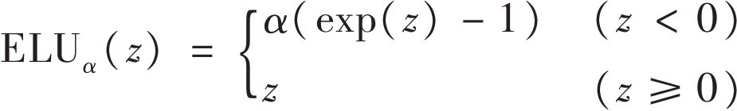
图11-3：ELU激活函数
ELU激活函数和ReLU函数很像，只是有几个明显的不同：
·当z<0时它的值为负，从而允许单元的平均输出接近0。这样就可以如之前讨论的一样，缓和梯度消失问题。超参数α是指当z是一个极大的负数时，ELU函数接近的那个值。通常被设置为1，当然如果你需要也可以改变它，与其他超参数的操作是一样的。
·第二，对于z<0有一个非零的梯度，这样就可以避免单元消失的问题。
·第三，这个函数整体很平滑，包括在z=0附近，这样就可以提高梯度下降，因为在z=0的左右两边都没有抖动。
ELU激活函数的一个主要缺陷是计算速度比ReLU和它的变种慢（因为使用了指数函数），但是在训练过程中，可以通过更快的收敛速度来弥补。然而，测试中，ELU网络时间慢于ReLU网络。
那么在你的深度神经网络的隐藏层到底应该使用哪一种激活函数呢？尽管你的里程会不一样，通常来说ELU函数>leaky ReLU函数（和它的变种）>ReLU函数>tanh函数>逻辑函数。如果你更关心运行时的性能，那你可以选择leaky ReLU函数，而不是ELU函数。如果你不想改变别的超参数，就只使用建议α的默认值（leaky ReLU函数是0.01，ELU函数是1）。如果你有多余的时间和计算能力，你可以使用交叉验证去评估别的激活函数，特别是如果你的网络过度拟合，你可以使用RReLU函数，又或者是针对大的训练集使用PReLU函数。
TensorFlow给你提供了一个elu（）函数来构建神经网络，当调用fully_connected（）函数时，可以很简单地设置activation_fn参数：
代码详情
1 | hidden1 = fully_connected(X, n_hidden1, activation_fn=tf.nn.elu) |
TensorFlow没有leaky ReLU函数的预定义函数，但是也可以很简单地定义为：
代码详情
1 | def leaky_relu(z, name=None): |
批量归一化
尽管使用了He初始化加ELU（或者ReLU的任一种变种）可以很明显地在训练初期降低梯度消失/爆炸问题，但还是不能保证在训练过程中不会再出现这些问题。
在一篇发表于2015的论文（ https://goo.gl/gA4GSP ） [7] 中，Sergey Ioffe和Christian Szegedy提出了一个叫作批量归一化（BN）的技术，用它来解决梯度消失/爆炸问题，而且每一层的输入分散问题在训练过程中更普遍，前层变量的改变（称为内部协变量转变问题）也是一样。
该技术包括在每一层激活函数之前在模型里加一个操作，简单零中心化和归一化输入，之后再通过每层的两个新参数（一个为了缩放，另一个为了移动）缩放和移动结果。换句话说，这个操作让模型学会了最佳规模和每层输入的平均值。
为了零中心化和归一化输入，算法需要评估输入的平均值和标准方差。现在对于小批量（因此得名“批量归一化”）是通过评估输入的平均值和标准方差来这么做的。整个操作见公式11-3。
公式11-3：批量归一化算法
·μ B 是经验平均值，评估整个小批量B。
·σ B 是经验标准方差，评估整个小批量。
·m B 是小批量的实例数。
· 零中心化和归一化输入。
·γ是层缩放参数。
·β是层移动（偏移）参数。
· 是一个小的数字，为了避免除以0（标准化10 -3 ）。它被称为平滑项。
·z （i） 是BN操作的输出：它是输入的缩放和移动版。
在测试期间，没有小批量数据来计算经验平均值和标准方差，所以你可简单地用整个训练集的平均值和标准方差来代替。在训练过程中可以用变动平均值有效地计算出来。所以，整体来看，4个参数是为每一批量归一化层来学习的：γ（缩放），β（偏移），μ（平均值）和σ（标准方差）。
作者提出的这个技术考虑了他们实验过的所有深度神经网络。梯度消失问题被有效改善，主要原因是他们使用了饱和激活函数（比如tanh）和逻辑激活函数。网络对于权重初始化也没有那么敏感。它们可以使用更高的学习速率，从而有效地加快整个学习过程。值得指出的是，他们提到“在应用到一个先进图片识别的模型时，批量归一化达到了相同的精度，同时还将训练步骤减少为原来的1/14，以显著的成绩击败了原始模型。[…]利用组合的批量归一化网络，我们在ImageNet上目前已经发表过的最佳结果的基础上又做了改进：达到了4.9%top-5的验证错误（4.8%的测试错误），超过了人类评估者的精度。”最终，像一个在持续给予的福利一样，批量归一化同时还可以进行正则化，降低其他正则化技术的需求（比如退出，本章后面会提到）。
但是，批量归一化的确也给模型增加了一些复杂度（尽管因为有第一隐藏层而不用考虑归一化输入数据的需求，但是提供这个需求的却是批量归一化）。另外，还存在一个运行时的代价：神经网络的预测速度变慢，原因是每一层有很多其他需要进行的计算。所以如果你需要快速预测，你可能需要在进行批量归一化之前先检查一下ELU+He初始化的表现如何。
你会发现一开始当梯度下降在每一层搜索最佳缩放和偏移量时，训练速度会非常慢，但是一旦找到一个合适的值，训练速度就会迅速提升。
用TensorFlow来实现批量归一化
TensorFlow提供了一个batch_normalization（）函数来中心化和归一化输入，但是你必须自己计算均值和标准方差（在训练中基于一个小批量的数据或者就像刚才讨论的用整个数据集进行测试），然后把它们作为参数传给这个方法，而且你必须自己确定缩放和偏移参数（并把它们传给这个方法）。这是可行的，但并不一定是最易行的方式。不过，你可以用batch_norm（）函数，它提供了所有的参数。你可以直接调用，或者告诉fully_connected（）函数去调用它，如以下代码所示：
代码详情
1 | import tensorflow as tf |
一起看一下上述代码。第一行非常清楚，只要定义了is_training占位符，无所谓是True还是False。它负责告诉batch_norm（）函数是使用当前小批量的均值和标准方差（训练中），还是使用运行平均值（测试中）。
接着定义了bn_params，它是会传给batch_norm（）函数的参数集合，当然也包括is_training。算法用到了指数衰减来计算运行平均值，这也是需要衰变参数的原因。给一个新值v，运行平均值 会通过公式 来更新。一个好的衰变值会非常接近1，比如0.9、0.99、0.999（对越大的数据集和越小的批量，需要的9越多）。最后，如果你希望batch_norm（）函数在训练中（即当is_training=True时）一结束批量归一化就更新运行平均值，就需要将updates_collections设置成None。如果你不设置这些参数，在默认情况下，TensorFlow只将更新运行平均值的操作添加到必须运行的操作集合中。
最后，我们用第10章中提过的方法，通过调用fully_connected（）函数来创建层，但是这一次我们在调用激活函数前通过调用batch_norm（）函数（通过参数nb_params）来进行输入归一化。
注意默认情况下，batch_norm（）只中心化、归一化和对输入进行偏移操作，但是并不缩放（即γ固定为1）。这样对没有激活函数或者用ReLU激活函数的层是有效果的，但是对于其他的激活函数，你需要设置”scale”，即将bn_params设置为True。
你可能已经注意到，定义前三层是重复的，因为有几个参数是相同的。为了避免一直重复同样的参数，你可以用arg_scope（）方法构造一个参数范围：第一个参数是一个函数列表，其他参数会自动传给这些函数。最后三行预测代码可以修改成：
代码详情
1 | [...] |
在这种小例子中，它的表现可能没有以前好，但是如果你有10层并且设置了激活函数、初始化、归一化等，你的代码可读性就会大有改善。
构造阶段剩下的部分和第10章中一致：定义成本函数；构建优化器，让它最小化成本函数；定义评估操作；创建Saver，等等。
实施过程基本一致，只有一处不同。无论何时你运行一个依赖于batch_norm层的操作，你都需要设置is_training占位符为True或者False：
代码详情
1 | with tf.Session() as sess: |
就是这样！在这个小例子中只有两层，不像批量归一化有那么显著的影响，但是对于深层网络会有非常明显的效果。
梯度剪裁
一个流行的减轻梯度爆炸问题的技术是在反向传播的过程中简单地裁剪梯度，从而保证不会超过阈值（这个对于循环神经网络非常有效，详见第14章）。这种技术叫作梯度剪裁（ http://goo.gl/dRDAaf ） [8] 一般情况下，大家倾向批量归一化，但是仍然有必要了解梯度剪裁以及如何使用它。
在TensorFlow里，优化器的minimize（）函数同时负责计算和应用梯度，所以你必须先调用优化器的compute_gradients（）方法，然后调用clip_by_value（）方法创建一个剪裁梯度的操作，最后再调用apply_gradients（）方法来应用裁剪后的梯度：
代码详情
1 | threshold = 1.0 |
一般情况下，你需要在每一个训练步骤中都跑一次training_op。它会计算梯度，在-1.0和1.0之间剪裁，然后应用。阈值是可以调整的超参数。
[1] “Understanding the Difficulty of Training Deep Feedforward Neural Networks”，X.Glorot和Y Bengio（2010）。
[2] 有一个类似的例子：如果你把麦克风放大器的旋钮调到非常接近0，人们就不会听到你的声音，同样如果你把它调到非常接近最大值，你的声音也会饱和，大家也听不清你在说什么。现在想象有一连串这样的放大器：它们需要设置好，保证在最后的时候你的声音可以清晰洪亮地传出来。那你的声音就必须保证每经过一个放大器它的输出都和输入有同样的振幅。
[3] 这种简化方法其实很早就已经提出来了——比如，在1998年的《Neural Networks：Tricks of the Trade》一书中就有提过，作者是Genevieve Orr和Klaus-Robert Müller（由Springer出版）。
[4] “Delving Deep into Rectifiers：Surpassing Human-Level Performance on ImageNet Classification”，K.He等人（2015）。
[5] “Empirical Evaluation of Rectified Activations in Convolution Network”，B.Xu等人（2015）。
[6] “Fast and Accurate Deep Network Learning by Exponential Linear Units（ELUs）”，D.Clevert、T.Unterthiner和S.Hochreiter（2015）。
[7] “Batch Normalization：Accelerating Deep Network Training by Reducing Internal Covariate Shift”，S.Ioffe和C.Szegedy（2015）。
[8] “On the difficulty of training recurrent neural networks”，R.Pascanu等人（2013）。
重用预训练图层
从头开始训练一个非常庞大的DNN并不明智。大多时候你应该试着去找一个能处理相似问题的已有的神经网络，然后重用它的低层网络，这叫作迁移学习。这不仅能极大地提升训练速度，也很大程度地减少训练数据。
举例来说，假设你已经有了一个训练好的DNN用来将图片分成100个类别，包括动物、植物、车辆和各种各样更多的类别。如果你需要训练一个DNN使之能够根据不同的交通工具来分类，因为训练任务和已有的那个十分类似，所以你应该试着重用已有的部分网络（见图11-4）。
图11-4：重用预训练图层
如果新任务的输入图片和已有任务的输入图片尺寸不一致，你就需要添加一个预处理过程来使图片尺寸满足已有任务的输入需求。一般来说，迁移学习只适用于新旧任务的输入有着相似的低层特征的情况。
重用TensorFlow模型
如果原有模型是用TensorFlow训练的，你可以轻松地还原该模型并在新任务中接着训练它：
代码详情
1 | [...] # construct the original model |
然而，通常我们只想要重用原有模型的一部分（我们马上就会讨论这种状况），一种简单的解决方案就是配置Saver使之在还原原模型时只还原所有参数的一个子集。举例来说，下面的代码就只还原了隐藏层1、隐藏层2和隐藏层3：
代码详情
1 | [...] # build new model with the same definition as before for hidden |
首先我们建立了新模型，确保它复制了原有模型的隐藏层1到隐藏层3。我们同时创建了一个节点来初始化所有参数。之后我们获取到一个用”trainable=true”配置（默认配置）创建的参数列表，并用正则表达式”hidden[123]”来做筛选（即：最后得到的就是隐藏层1到隐藏层3的所有可训练参数）。之后我们创建了一个字典来存放每个参数在原有模型和新模型里的名字映射（通常我们会保持原名不变）。接下来创建一个Saver用来还原那些参数，创建另一个Saver来存储整个新模型，而不是只有层1到层3。之后开启一个会话，并初始化新模型的所有参数，然后将层1到层3的参数从已有模型中重建。最后，在新任务中训练新模型并存储它。
任务越类似，我们就可以重用越多的层（从低层开始）。对于特别相似的任务，我们可以试着将所有隐藏层都保留，只替换外层。
重用其他框架的模型
如果已有模型是用其他框架训练出来的，我们就需要手动加载所有的权重（例如如果用Theano训练的话，就用Theano代码加载），然后将它们赋给适当的参数。这个过程会变得相当冗长乏味。举例来说，下面的代码展示了如何从其他框架训练出的模型来复制其第一个隐藏层的权重和偏移量。
代码详情
1 | original_w = [...] # Load the weights from the other framework |
冻结低层
第一个DNN的低层可能已经学会了检测图像中的低级特征，这对于两个图像分类任务都是有用的，因此你可以直接重用这些图层。训练新的DNN时，通常来讲“冻结”权重是一个比较好的方法：如果低层权重被固定，那么高层的权重就比较容易训练（因为不需要学习一个运动的目标）。为了在训练中冻结低层，最简单的办法就是给优化器列出要训练的变量列表，除去低层的变量：
代码详情
1 | train_vars = tf.get_collection(tf.GraphKeys.TRAINABLE_VARIABLES, |
第一行是获得所有在隐藏层3和隐藏层4及输出层的可训练变量。排除了在隐藏层1和隐藏层2的变量。下一步我们把这个可训练变量的受限列表传给优化器的minimize（）函数。层1和层2现在被冻结了：它们在训练过程中不会抖动（通常被称为冻结层）。
缓存冻结层
因为冻结层不会变化，所以就有可能将每一个训练实例的最高冻结层的输出缓存起来。由于训练会轮询整个数据集很多次，所以你将获得巨大的速度提升，因为你只需要在一个训练实例中遍历一次冻结层（而不是每个全数据集一次）。举个例子，你可以第一次在低层跑完整个训练集（假设你有足够的RAM）：
代码详情
1 | hidden2_outputs = sess.run(hidden2, feed_dict={X: X_train}) |
然后在训练中，你要做的不是构建批量的训练实例，而是批量构建隐藏层2的输出，并且将它们喂给训练操作：
代码详情
1 | import numpy as np |
最后一行运行的是之前定义好的训练操作（冻结层1和层2），然后把隐藏层2（对应批量目标）的批量输出传给它。因为我们把隐藏层2的输出传给TensorFlow，所以它不用尝试去评估它（或者它依赖的其他节点）。
调整、丢弃或替换高层
原始模型的输出层经常会被替换，因为对于新的任务基本没有用，甚至没办法提供正确的输出个数。
同样，原始模型的高隐藏层没有低层用处多，因为对于新任务最有效的高级特性可能和原始任务中最有效的那些特性差别很大。你需要找到正确的层数来重用。
首先尝试冻结所有的复制层，然后训练你的模型观察效果。接着尝试解冻一到两个顶部的隐藏层，用反向传播进行调整来观察是否有改善。训练数据越多，越能解冻更多的层。
如果你一直不能获得好的效果，而且训练数据很少，那就尝试丢弃最高的一层或多层，然后重新冻结剩下的隐藏层。你可以一直迭代直到找到正确的重用层数。如果你有很多训练数据，你可以尝试替换顶部的隐藏层而不是丢弃它们，甚至可以添加一些隐藏层。
模型动物园
在哪里可以找到一个训练好的类似神经网络来完成一个你想要解决的任务呢？首选当然是你自己已有的模型目录。这是一个很好的方式，可以保存你所有的模型，方便你整理，也方便你日后随时调用。另一个选择就是在模型动物园（Model Zoo）里搜索。很多人针对各种任务训练了很多机器学习的模型，并且很慷慨地公开这些预训练的模型。
TensorFlow在 https://github.com/tensorflow/models 上公开了自己的模型动物园。特别需要指出的是，这个模型动物园包含了先进图片识别的网络，比如VGG、Inception和ResNet（见第13章，同时查看models/slim目录），包括代码、预训练模型，以及下载流行图片数据集的工具。
另一个流行的模型动物园是Caffe模型动物园（ https://goo.gl/XI02X3
）。其中也包括很多计算机视觉模型（比如：LeNet、AlexNet、ZFNet、GoogLeNet、VGGNet和inception），也都在各种数据集（比如ImageNet、Places Database、CIFAR10等）上经过训练。Saumitro Dasgupta写了一个转换器，可以在 https://github.com/ethereon/caffe-tensorflow 找到。
无监督的预训练
假设你要完成一个没有太多标记训练数据的复杂任务，并且没有找到在近似任务上训练过的模型。不要失去希望！首先，你肯定需要努力去收集更多的标记过的训练数据，但是如果这个代价很高或者很难，你仍然可以运行无监督的预训练（见图11-5）。也就是说，如果你有一堆未标记的训练数据，那你可以逐层训练它们，从最低层开始，然后向上，利用一种非监督特性检测算法比如受限玻尔兹曼机（RBM，见附录E）或者自动编码器（见第15章）。每一层都是基于提前训练好的图层（除去被冻结的训练层）的输出进行训练。一旦所有层都用这个方式训练过之后，你就可以用监督学习的方式（即反向传播）来微调网络。
这是一个冗长且无趣的过程，但是通常情况下效果都不错；事实上，正是这个Geoffrey Hinton和他的团队在2006使用的技术让神经网络复苏，并且取得了深度学习的成功。直到2010年，无监督的预训练（通常使用RBM）都是深度网络的基准，只有在梯度消失问题得到缓解之后，用反向传播来训练DNN才变得越来越普遍。然而，在面对复杂任务处理、没有相似模型可重用、有极少标记过的训练数据但是却有很多未标记的训练数据的情况下，无监督的预处理（现在通常使用自动编码器而不是RBM）仍然是一个非常不错的选择。 [1]
图11-5：无监督的预训练
辅助任务中的预训练
最后一个选择是在辅助任务中训练第一个神经网络，你可以轻松获得或者生成标记过的训练数据，然后重用该网络的低层来实现你的实际任务。第一个神经网络的低层会学习可能被第二个神经网络重用的特征检测器。
举个例子，如果你想构建一个人脸识别系统，但是你只有每个人的几张照片，很明显没办法训练一个好的分类器。收集每个人成百上千张照片根本不可行。但是，你可以在网上收集很多随机的人像照片，用它们可以训练第一个神经网络来检测两张不同的照片是否属于相同的人。这个网络将学习优质的人脸特征检测器，然后重用这个网络的低层，这样你就可以用很少的训练数据训练出一个优质的人脸分类器。
通常情况下，收集未标记训练示例会廉价很多，但是标记它们却很贵。针对这种情况，常用的技术是将所有示例都标记为“好”，然后通过破坏好的训练示例来生成新的训练实例，并把那些被破坏的实例标记为“坏”。接着你就可以训练第一个神经网络来区分好的实例和坏的实例。举个例子，你可以下载数百万条句子，标记它们为“好”，然后随机修改每一句中的一个单词，并标记这些修改后的句子为“坏”。如果一个神经网络可以识别出“The dog sleeps”是好，“The dog they”是坏，那么它可能已经学会不少语言了。重用这个网络的低层可能有助于很多语言处理任务。
另一种方法是训练第一个神经网络，让它输出每一个训练实例的得分，然后利用成本函数，确保每一个好的实例的得分都比坏的实例的得分至少高一些。我们称其为最大边界学习。
[1] 另一种方式是针对你可以很方便找到大量标记的训练数据运行一个监督任务，然后使用之前提到的迁移学习。举个例子，如果你想训练一个模型来识别出图片中你的朋友，你可以在网上下载成千上万张脸，然后训练一个分类器来检测两张脸是否一致，之后用这个分类器来对比新图片和每一张你朋友的图片。
快速优化器
训练一个很大的深度神经网络可能相当慢。到目前为止，我们已经了解了四种方法来提高训练速度（并且实现一个更好的解决方案）：在连接权重上应用一个良好的初始化策略，使用一个良好的激活函数，使用批量归一化，以及重用部分预处理网络。另一种明显提高训练速度的方法是使用快速优化器，而不是常规的梯度下降优化器。本节我们会给出最流行的几种：Momentum（动量优化），NAG（Nesterov梯度加速），AdaGrad，RMSProp，以及Adam优化。
扰乱警报：本节的结论是你几乎一直需要使用Adam优化， [1] 所以如果你不关心它的工作原理，那么就只需要简单地用AdamOptimizer替换GradientDescent Optimizer然后跳到下一节就可以了！仅仅是这么简单的一个改变，训练速度就会明显提高好几倍。然而，你的确可以调节（加上学习速率）Adam优化的三个超参数；默认值一般表现良好，但是如果你需要对它们进行微调，了解每一个值具体是什么还是很有帮助的。Adam优化集合了其他几种优化算法的想法，所以有必要先看看其他算法。
Momentum优化
想象一个保龄球在光滑表面滚下一个平缓的斜坡：最开始会很慢，但是会迅速恢复动力，直到达到最终速度（假设有一定摩擦力或空气阻力）。这是Momentum优化的一个很简单的想法，由Boris Polyak在1964年提出（ https://goo.gl/FlSE8c ）。 [2] 相比之下，常规梯度下降会沿着斜坡采用常规的小步前进的方式，所以会花比较长的时间才能到达底部。
回顾一下之前的内容，梯度下降是直接从权重θ中减去成本函数J（θ）的梯度（
）乘以学习速率η。公式是：θ←θ-η 。它不关心之前的梯度是多少。如果本地梯度很少，它就会走得很慢。
Momentum优化关注以前的梯度是多少：每一个迭代，会给momentum矢量m加本地梯度（乘以学习速率η），同时权重要减去momentum矢量（见公式11-4）。换句话说，梯度被当作加速度来使用，而不是速度。为了模拟某种摩擦机制并防止动量（momentum）增长过大，该算法引入了一个新的超参数β，简称为动量，其必须设置在0（高摩擦）和1（无摩擦）之间。一个标准动量值为0.9。
公式11-4：Momentum算法
可以很容易地验证当梯度保持一个常量，最终速度（即权重变化的最大值）就等于梯度乘以学习速率η乘以1/（1-β）。举个例子，如果β=0.9，那么最终速度等于10倍梯度乘以学习速率，所以Momentum优化最终会比梯度下降快10倍！这样就使得Momentum优化从平台逃离比梯度下降快得多。值得一提的是，在第4章中我们看到当输入的尺寸很特别时，成本函数看起来会像一个细长的碗（见图4-7）。梯度下降在陡坡下降得非常快，但是在山谷中下降得很慢。相比较而言，Momentum优化会以越来越快的速度滑向谷底直到到达谷底（最佳）。在不使用批量归一化的深度神经网络中，高层最终常会产生不同尺寸的输入，因此使用Momentum优化会很有帮助，同时还会帮助跨过局部最优。
由于有动量，优化器可能会超调一点，然后返回，再超调，来回振荡多次后，最后稳定在最小值。这也是系统中要有一些摩擦的原因之一：它可以帮助摆脱振荡，从而加速收敛。
在TensorFlow中实现Momentum优化非常简单：只需用MomentumOptimizer替换GradientDescentOptimizer，然后等着结果即可。
代码详情
1 | optimizer = tf.train.MomentumOptimizer(learning_rate=learning_rate, |
Momentum优化的一个缺点是增加了一个超参数来微调。然而一般情况下，动量值为0.9的表现都比梯度下降好。
Nesterov梯度加速
Yurii Nesterov在1983年提出了一个Momentum优化的小的变体（ https://goo.gl/V011vD ）， [3] 几乎总快过Vanilla Momentum优化。Nesterov Momentum优化，或者Nesterov梯度加速（NAG），是用来衡量成本函数的梯度的，不是在本地而是动量方向稍向前一点的位置（见公式11-5）。与Vanilla Momentum优化唯一的不同就是用θ+βm来测量梯度，而不是θ。
公式11-5：Nesterov梯度加速算法
这个小调整有效是因为在通常情况下，动量矢量会指向正确的方向（即最优方向），所以在该方向相对远的地方使用梯度会比在原有地方更准确一些，正如图11-6所示（其中 表示在起始点θ用成本函数测量的梯度， 表示在点θ+βm的梯度）。正如你所见，Nesterov更接近最优值。过一阵之后，这些小的改进叠加在一起，于是NAG就比常规Momentum优化明显增速很多。再者，注意到当动量把权重推过山谷时， 会跨过山谷并且推向更远，然而 却往谷底的方向退回了一些。这有助于降低振荡，从而更快收敛。
图11-6：常规Momentum优化对比Nesterov Momentum优化
对比Momentum优化，NAG几乎总能提高训练速度。要使用NGA，在创建Momentum Optimizer时只需简单地设置use_nesterov=True即可：
代码详情
1 | optimizer = tf.train.MomentumOptimizer(learning_rate=learning_rate, |
AdaGrad
重新考虑一下细长碗的问题：梯度下降开始很快就走下最陡的斜坡，之后慢慢移动到谷底。如果算法可以早点检测到，并且修正方向往全局最优偏移一些就好了。
AdaGrad算法（ http://goo.gl/4Tyd4j ） [4] 通过沿着最陡尺寸缩小梯度向量来实现这一点（见公式11-6）。
公式11-6：AdaGrad算法
第一步将梯度的平方累积到向量s中（ 表示矩阵乘法）。这个向量化表等于给向量s中每一个元素s i 进行 运算；换句话说，对于参数θ i ，每个s i 累积成本函数偏导数的平方。如果成本函数沿着第i个尺寸陡峭，那么s i 会在每一个迭代中越来越大。
第二步与梯度下降基本一致，但是有一个最大的区别：梯度向量按比例 缩小（ 表示矩阵除法，ε是避免除以0的平滑项，通常设置为10 -10 ）。这个向量化表等于对于所有参数θ i 进行 运算（同步）。
简而言之，这个算法衰减了学习速率，但是对于陡度尺寸而言，它比使用较缓斜率的尺寸要快得多。这称为适应性学习速率。它有助于将所得到的更新更直接地指向全局最优（见图11-7）。另一个附加的好处是只需对学习速率超参数η做很少的调整。
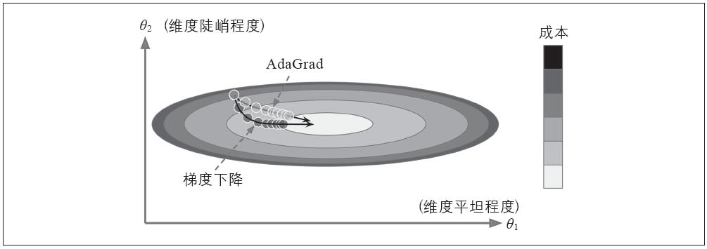
图11-7：AdaGrad对比梯度下降
AdaGrad对于简单的二次问题一般表现都不错，但是在训练神经网络时却经常很早就停滞了。学习速率缩小得很多，在到达全局最优前算法就停止了。所以尽管TensorFlow有AdagradOptimizer，你也不要用它来训练深度神经网络（但是，对于类似线性回归这样的简单任务可能是有效的）。
RMSProp
AdaGrad降速太快而且没办法收敛到全局最优，RMSProp算法 [5] 却通过仅累积最近迭代中的梯度（而非从训练开始的所有梯度）解决了这个问题。它通过在第一步使用指数衰减来实现这个操作（见公式11-7）。
公式11-7：RMSProp算法
衰减率β通常设置为0.9。没错，这又是一个新的超参数，但是这个默认值一般表现都比较好，所以你基本不需要做任何微调。
正如你所期待的，TensorFlow有RMSPropOptimizer类：
代码详情
1 | optimizer = tf.train.RMSPropOptimizer(learning_rate=learning_rate, |
除去非常简单的问题，这个优化器的表现几乎全都优于AdaGrad。同时表现也基本都优于Momentum优化和NAG。事实上，在Adam优化出现之前，它是众多研究者所推荐的优化算法。
Adam优化
Adam（ https://goo.gl/Un8Axa ）， [6] 代表了自适应力矩估计，集合了Momentum优化和RMSProp的想法：类似Momentum优化，它会跟踪过去梯度的指数衰减平均值，同时也类似RMSProp，它会跟踪过去梯度平方的指数衰减平均值（见公式11-8）。 [7]
公式11-8：Adam算法
·T表示迭代数（从1开始）。
如果只看步骤1、步骤2和步骤5，你会发现Adam同Momentum优化以及RMSProp非常类似。唯一的不同是步骤1计算的是指数衰减的平均值而不是指数衰减的总和，但是除了常数因子以外，它们都是相等的（衰减平均值是1-β 1
倍的衰减总和）。步骤3和步骤4是一种技术的细节：因为m和s初始化都为0，它们会在训练开始时相对0有一点偏移量，所以这两个步骤在训练开始时有助于提高m和s。
动量衰减超参数β 1 通常被初始化为0.9，缩放衰减超参数通常被初始化为0.999。与之前一样，平滑项 通常会设置为一个很小的数字，比如10 -8 。这些是TensorFlow的AdamOptimizer类的默认值，你可以使用：
代码详情
1 | optimizer = tf.train.AdamOptimizer(learning_rate=learning_rate) |
实际上，因为Adam是一个自适应学习速率算法（与AdaGrad以及RMSProp类似），它需要对学习速率超参数η进行微调。你可以一直使用默认值η=0.001，这样使得Adam比梯度下降更容易使用。
目前讨论过的所有优化技术都依赖于一阶偏导数（Jacobians）。优化文献包含基于二阶偏导数（Hessians）的算法。不幸的是，这些算法都非常难应用到深度神经网络，原因是每层输出都有n 2 Hessians（其中n是参数个数），而不是每次只有n Jacobians。因为DNN通常有数万个参数，所以二阶优化算法一般不会在内存里适用，而且即使运行，计算Hessians也会非常慢。
训练稀疏模型
所有提到的优化算法都是制作密集模型，意味着大部分参数都是非零的。如果你需要在运行时有一个超速模型，或者如果你需要它占用更少的内存，最终你可能需要一个稀疏模型。
实现这个目的的一个小方法是像往常一样训练模型，然后摆脱掉小的权重（将其设置为0）。
另一种方法是在训练中应用强1正则化，因为它可以促使优化器尽可能地将权重归零（如第4章讨论的Lasso回归）。
然而，在某些例子中这些技术可能会无效。最后一个方法是应用对偶平均，通常称为FTRL（Fllow The Regularized Leader），这是Yurii Nesterov（ https://goo.gl/xSQD4C ） [8] 提出的一个技术。当使用1正则化时，这种技术会导出一个非常稀疏的模型。TensorFlow在FTRLOptimizer类中实现了一个名为FTRL-Proximal（ https://goo.gl/bxme2B ） [9] 的FTRL变体。
学习速率调度
要找到一个良好的学习速率会比较麻烦。如果你把它设置得太高，训练可能会产生分歧（如第4章讨论的）。如果设置得太低，训练可能需要花很长的时间才能收敛到最优解。如果你设置得相对高一些，可能最开始运行得很快，但是最后一直在最优解附近摆动不停下来（除非你使用适应性学习速率优化算法，比如AdaGrad、RMSProp或者Adam，但即使这样也需要时间来稳定）。如果你的计算机预算有限，你可能必须在训练正确收敛之前停下来，从而生成次优解（见图11-8）。
图11-8：不同学习速率的学习曲线
你可能会通过使用各种学习速率，对比学习曲线在几个数据集内多次训练网络，从而得到一个非常良好的学习速率。理想的学习速率学习速度非常快，并且会收敛到良好的解决方案。
然而相比一个固定的学习速率，你可以做得更好：如果你以一个高学习速率开始，然后一旦它停止快速过程就降低速率，那么你会获得一个比最优固定学习速率更快速的方案。有很多不同的策略在训练过程中监督学习速率。这些策略称为学习计划（我们在第4章简单介绍过这个概念），最常用的有：
预定分段常数学习速率
举个例子，最开始设置学习速率η 0 =0.1，在50个数据集之后设置η 0 =0.01。尽管这个方法效果不错，但是需要搞清楚正确的学习速率和何时使用。
性能调度
每N个步骤进行测量来验证错误（比如早起停止），然后当错误停止出现时，将学习速率降低到1/λ。
指数调度
将学习速率设置为迭代数t的函数：η（t）=η 0 10 -t/r 。这个效果很好，但是需要微调η 0 和r。学习速率每r步下降10。
功率调度
设置学习速率为η（t）=η 0 （1+t/r） -c 。超参数c通常设置为1。这个与指数调度类似，但是学习速率降低得非常慢。
Andrew Senior等人在2013年的一篇论文（ http://goo.gl/Hu6Zyq ） [10] 中对比了运用Momentum优化训练深度神经网络进行语音识别的一些最受欢迎的学习计划的表现。作者总结，在这样的设置下，性能调度和指数调度表现都很好，但是他们更推荐指数调度，因为它更容易实现，容易微调，而且收敛到最优解的速度稍快一些。
用TensorFlow实现学习计划非常直接：
代码详情
1 | initial_learning_rate = 0.1 |
设置完超参数值后，我们创建一个不可训练变量global_step（初始化为0）来跟踪当前训练的迭代数。然后我们用TensorFlow的exponential_decay（）函数定义一个指数衰减学习速率（其中η 0
=0.1，r=10000）。接着，我们构建一个使用该衰减学习速率的优化器（本例使用了MomentumOptimizer）。最后，我们通过调用优化器的minimize（）方法构建训练操作；因为我们给它传入了global_step变量，所以它会自增。
因为AdaGrad、RMSProp和Adam优化在训练中自动降低了学习速率，所以不需要额外加入学习计划。对于其他的优化算法，使用指数衰减或性能调度可以很有效地提高收敛速度。
[1] 至少就现在来讲：研究进展很快，特别是针对优化领域。请确保在每一个TensorFlow新版本发布的时候查看一下最新和最好的优化器。
[2] “Some methods of speeding up the convergence of iteration methods”，B.Polyak（1964）。
[3] “A Method for Unconstrained Convex Minimization Problem with the Rate of Convergence O（1/k2）”，Yurii Nesterov（1983）。
[4] “Adaptive Subgradient Methods for Online Learning and Stochastic Optimization”，J.Duchi等人（2011）。
[5] 这个算法是Tijmen Tieleman和Geoffrey Hinton在2012年提出的，并且由Geoffrey Hinton在他的针对神经网络的Coursera课程上发表（幻灯片地址：http://goo.gl/RsQeis；视频地址：https://goo.gl/XUbIyJ）。有趣的是，因为作者并没有在任何论文中提到这个算法，所以研究者经常在他们的论文中以“讲座6的第29张幻灯片”的方式进行引用。
[6] “Adam：A Method for Stochastic Optimization”，D.Kingma和J.Ba（2015）。
[7] 这些是梯度均值和（非中心）方差的估值。均值被称为第一力矩，方差被称为第二力矩，从而有了算法的名字。
[8] “Primal-Dual Subgradient Methods for Convex Problems”，Yurii Nesterov（2005）。
[9] “Ad Click Prediction：a View from the Trenches”，H.McMahan等人（2013）。
[10] “An Empirical Study of Learning Rates in Deep Neural Networks for Speech Recognition”，A.Senior等人（2013）。
通过正则化避免过度拟合
用四个参数我可以适应一头大象，用五个参数我可以让它摆动躯干。
——John von Neumann，Enrico Fermi在Nature 427中引用
深度神经网络通常有数万个参数，有时甚至过亿。因为有大量参数，网络具有相当的自由度，可以使用各种恶意复杂的数据集。但是这种极大的灵活性也意味着它容易过度拟合训练集。
拥有数亿的参数你可以适应整个动物园。本节中我们会给出集中神经网络中最受欢迎的正则化技术，以及用TensorFlow怎样实现：提前停止， 和 正则化、dropout、最大范数正则化和数据扩充。
提前停止
要避免过度拟合训练集，有一个解决方案是提前停止（在第4章介绍过）：当验证集的性能开始下降时停止训练。
用TensorFlow实现提前停止的一种方法是定期对验证集进行模型评估（比如：每50步），同时如果表现好于前一个“优胜者”快照就将此“优胜者”快照保存起来。在保存最后一张“优胜者”快照的时候计算步数，当步数达到某些限制（比如：2000步）时停止训练。然后恢复最后一张“优胜者”快照。
尽管在练习中提前停止表现得很好，但通常你还是可以通过结合其他正则化技术来获得更高的性能。
和 正则化
与第4章中简单的线性模型一样，你可以使用 和 正则化来约束一个神经网络的连接权重（但通常不是其偏差）。
用TensorFlow实现的一个方式是简单地将适当的正则项加在你的成本函数中。举个例子，假设你只有一个隐藏层，权重为weight1，一个输出层，权重为weight2，然后你可以这样使用 正则化：
代码详情
1 | [...] # construct the neural network |
然而，如果层数多，这个方法就不是很有效。幸运的是，TensorFlow提供了一个更好的方案。许多构建变量的函数（比如get_variable（）和fully_connected（））在构建每一个变量（比如weights_regularizer）时可以接受一个参数*_regularizer。你可以传递任何把权重作为参数并且返回相应的正则化损失的函数。函数l1_regularizer（）、l2_regularizer（）和l1_l2_regularizer（）返回这些函数。下面的代码把它们放在一起：
代码详情
1 | with arg_scope( |
这个代码构建了一个有两个隐藏层和一个输出层的神经网络，同时也在图中构建了节点来计算对应每一层权重的 正则化损失。TensorFlow自动将这些节点加到一个包含所有正则化损失的特殊连接中。你只需要将这些正则化损失加到你整体的损失中即可，类似这样：
代码详情
1 | reg_losses = tf.get_collection(tf.GraphKeys.REGULARIZATION_LOSSES) |
不要忘记将正则化损失加到整体损失中，不然就会被直接忽略掉。
dropout
最受欢迎的深度神经网络正则化技术无疑是dropout。它是由G.E.Hinton在2012年提出的（ https://goo.gl/PMjVnG ） [1] ，Nitish Srivastava等人在之后的一篇论文（ http://goo.gl/DNKZo1 ） [2] 中进行了更细致的解释，并且证明有很高的成功率：即使是最先进的神经网络在加了dropout之后也能提高1%～2%的正确性。这看上去可能不是很多，但是当一个模型已经有95%的正确性，提高2%就意味着降低了将近40%的错误率（从5%的误差到差不多3%）。
这是一个很简单的算法：每一个训练步骤，每一个神经元（包括输入神经元，不包括输出神经元）都有一个会被暂时“丢弃”的可能性p，意思是在这次训练步骤中它会被完全忽略，但是到下一步的时候就会被激活（见图11-9）。超参数p被称为丢弃率，通常设置为50%。在训练之后，神经元不会再被丢弃。原理就是这样（除去我们等下要讲的技术细节）。
图11-9：dropout正则化
最开始这种相当暴力的方法可以起作用也是非常令人震惊的。如果员工每天早上通过扔硬币来决定去不去上班，这样的公司会越来越好吗？好吧，谁知道呢，说不定会呢！公司很明显是要去适应它的组织，而不是依赖某一个人去填充咖啡机或者去做其他关键的任务，所以这些专业知识必须分散到好几个人身上。员工需要学习和许多同事一些协作，而不仅是其中几个人。公司的适应性会越来越好。如果有一个人离开，也不会有太大的影响。现在还不清楚这个想法对于公司是不是真正奏效，但是对于神经网络的确是有用的。训练有dropout的神经元不能和周围的神经元共适应；它们必须让自己尽可能有用。它们也不能过分依赖几个输入神经元；它们必须关注每一个输入神经元。它们最后会变得对于输入的轻微变化不那么敏感。最终，你会获得一个更好地泛化了的健壮的网络。
再者，理解dropout的强大是因为注意到在每一个训练步骤都会创建一个独立的神经网络。因为每一个神经元都可能出现或不出现，所以就会有总共2 N 个可能的网络（其中N是可丢弃神经元的个数）。这是一个很大的数字，几乎不可能对一个神经网络采样两次。一旦你已经运行了10000个训练步骤，那你实际上就已经训练了10000个不同的神经网络（每一个网络都有一个训练实例）。这些神经网络很明显不是独立的，因为它们共享很多它们的权重，但是它们还是不同的。所得到的神经网络可以看作是这些较小的神经网络的平均集合。
这里提到一个很小但是很重要的技术细节。假设p=50，在测试期间，一个神经元将会被连接到训练期间输入神经元（平均）的两倍。为了弥补这个情况，我们需要在训练之后给每一个神经元的输入连接权重乘以0.5。如果不这样做，每一个神经元就会得到一个总输入信号，大概是之前训练网络的两倍，而且性能不会表现得特别好。更通俗来讲，我们需要在训练结束后给每一个输入连接权重乘以保持可能性（1-p）。或者，我们可以在训练过程中给每一个神经元的输出除以保持可能性（这些可选方案不完全一致，但是它们的效果都一样好）。
要用TensorFlow实现dropout，你可以直接在输入层和每一个隐藏层的输出调用dropout（）函数。在训练中，这个函数会随机丢弃一些项（把它们设置为0），并且给剩下的项除以保持可能性。在训练结束后，这个函数什么也不做。下面是一个针对三层神经网络应用dropout正则化的例子：
代码详情
1 | from tensorflow.contrib.layers import dropout |
你想在tensorflow.contrib.layers调用dropout（），而不是tensorflow.nn。在不训练的时候，对你想调用的第一个关掉（no-op），但是第二个不关。
当然，与之前批量归一化类似，你需要在训练时设置is_training为True，在测试时设置is_training为False。
如果发现模型过度拟合，你可以提高dropout速率（即降低keep_prob超参数）。相反，如果模型不拟合训练集，你需要降低dropout速率（即提高keep_prob超参数）。同样针对大层可以帮助提高dropout速率，针对小层可以降低。
dropout确实收敛变慢，但是如果微调合适，它通常都会得到一个更好的模型。所以这个结果是值得付出多一些时间和代价的。
Dropconnect是dropout的一个变体，它随机丢弃掉独立连接，而不是整个神经元。通常情况下，dropout表现得更好。
最大范数正则化
另一种神经网络比较流行的正则化技术叫作最大范数正则化：对每一个神经元，包含一个传入连接权重w满足‖w‖ 2 ≤r，其中r是最大范数超参数，‖·‖ 2 是 范数。
我们通常这样来满足这个约束，在每一次训练步骤后计算‖w‖ 2 ，同时如果需要会剪裁 。
。
降低r会增加正则化数目，同时帮助减少过度拟合。最大范数正则化可以同时帮助缓解梯度消失/爆炸问题（如果不使用批量归一化）。
TensorFlow没有提供现成的最大范数正则化器，但是实现起来也不难。下面的代码构建了一个节点clip_weights，该节点会沿着第二个轴削减weights变量，从而使每一个行向量的最大范数为1.0：
代码详情
1 | threshold = 1.0 |
你可以按照下面的方法在每一个训练步骤之后进行操作：
代码详情
1 | with tf.Session() as sess: |
如果你不知道如何获得每一层的weights变量。你可以像下面这样调用一个可变范围：
代码详情
1 | hidden1 = fully_connected(X, n_hidden1, scope="hidden1") |
同样，你也可以调用根变量范围：
代码详情
1 | hidden1 = fully_connected(X, n_hidden1, scope="hidden1") |
如果你不知道某个变量的名字，可以调用TensorBoard去查询或者调用global_variables（）函数打印出所有的变量名：
代码详情
1 | for variable in tf.global_variables(): |
尽管之前的方法效果不错，但是还是有点烦琐。一个简洁的方法是构建一个max_norm_regularizer（）函数，像之前的l1_reg ularizer（）函数一样使用：
代码详情
1 | def max_norm_regularizer(threshold, axes=1, name="max_norm", |
这个函数返回一个参数化max_norm（）函数，你可以像其他正则化器一样使用它：
代码详情
1 | max_norm_reg = max_norm_regularizer(threshold=1.0) |
最大范数正则化不需要将正则化损失项加入整体损失函数，所以max_norm（）方法返回None。但是你仍然需要在每一个训练步骤之后返回clip_weights操作，这样你才可以获取它的句柄。这就是为什么max_norm（）函数要添加clip_weights节点到最大范数剪裁操作集合里。你需要调用这些剪裁操作并在每一个训练步骤之后返回它们：
代码详情
1 | clip_all_weights = tf.get_collection("max_norm") |
代码整洁多了，是吧？
数据扩充
最后一个正则化技术是数据扩充，包括从已有实例构建新的训练实例，人为提高训练集大小。因为会减少过度拟合，所以它是一种正则化技术。棘手的是构建一个切实可用的训练实例；理想情况下，人是没办法区分哪个实例建好了，哪个没有建好。而且，简单地增加白噪声也没有用；你进行的修改应该是可学习的（白噪声不可学习）。
举个例子，如果你的模型要区分蘑菇的照片，你可简单地移动、旋转和改变每张在训练集中的照片的大小，同时把这些改变后的照片添加进训练集中（见图11-10）。这就迫使模型要兼容照片中蘑菇的位置、方向和大小。如果你希望模型对光的敏感度也增加，那你可以类似地生成许多具有各种对比度的照片。假设蘑菇是对称的，你也可以水平翻转照片。通过混合各种变换，你可以很快地增加你的训练集。
图11-10：用现有实例来生成新的训练实例
一般偏向在训练过程中快速生成训练实例，而不是浪费存储空间和网络带宽。TensorFlow提供了多种图片处理操作，比如转置（偏移）、旋转、调整大小、翻转和裁剪，同时还有调整亮度、对比度、饱和度和色调（详见API文档）。这样就可以轻松地实现图像数据集的数据扩充。
另外一种训练深度神经网络的有效技术是添加跳过连接（跳过连接就是把层输入加到高层的输出上）。我们会在第13章讨论到深度残留网络时再展开讨论。
[1] “Improving neural networks by preventing co-adaptation of feature detectors”，G.Hinton等人（2012）。
[2] “Dropout：A Simple Way to Prevent Neural Networks from Overfitting”，N.Srivastava等人（2014）。
实用指南
在这一章里，我们介绍了很多技术，你可能会搞不清到底应该用哪一个。表11-2中的配置在大多数情况下都是有用的。
表11-2：默认DNN配置
当然，如果能够找到解决类似问题的方法，你应该尝试重用部分预训练的神经网络。
这个默认配置可能需要调整：
·如果你找不到良好的学习速率（之前收敛太慢，所以你想提高训练速率，现在收敛变快了，但是网络正确性却是次优的），那你可以尝试添加一个类似指数衰减的学习计划。
·如果你的训练集有点小，你可以使用数据扩充。
·如果你需要一个稀疏模型，你可以在混合中加一些 正则化（并且在训练之后选择权重为0）。如果你想要再稀疏一些的模型，你可以尝试用FTRL代替Adam优化，并且搭配 正则化。
·如果你在运行时需要一个快速闪电模型，你可能需要丢弃批量归一化，同时可能需要用leaky ReLU代替ELU激活函数。有一个稀疏模型可能也会有帮助。
有了这些准则，你就可以开始训练一个深度网络了——好吧，如果你很有耐心，那就对了！如果你只有一台设备，你可能需要等上几天甚至几个月才能完成训练。在下一章，我们会讨论怎么使用分布式TensorFlow来在许多服务器和GPU上训练和运行模型。
练习
1.只要使用He初始化随机进行选择，就可以将所有权重初始化为相同的值吗？
2.将偏移项初始化为0可以吗？
3.给出ELU相比ReLU的3个优点。
4.在什么情况下你会依次使用下列这些激活函数：ELU、leaky ReLU（以及它的变体）、ReLU、tanh、逻辑激活函数和softmax？
5.使用Momentum Optimizer时，如果你将动量超参数设置的离1特别近（比如0.99999），那么会发生什么？
6.给出三种沟通稀疏模型的方法。
7.dropout会减慢训练速度吗？是否减慢推理（即对新实例进行预测）？
8.深度学习。
a.用每100个神经元5个隐藏层，He初始化和ELU激活函数构建一个DNN。
b.用Adam优化和提前停止，尝试在MNIST上进行训练，但只能在数字0～4之间，因为在下一个练习中我们会用迁移学习来对5～9进行训练。你需要一个有5个神经元的softmax输出层，而且要一直保持定期保存检查点，然后要保存最后的模型以便之后重用。
c.用交叉验证调整超参数，观察你可以实现的精度。
d.尝试添加批量归一化来对比学习曲线：是否比之前收敛得快？是否构建了一个更好的模型？
e.模型是否过度拟合训练集？给每一层加dropout再试一次，看看是否有用。
9.迁移学习。
a.重用预训练的隐藏层和之前的模型构建一个新的DNN，冻结它，同时用新的DNN代替softmax输出层。
b.对数字5～9训练这个新的DNN，一个数字只用100张图，会花多长时间。除去这个小个数样本，你还可以达到更高的精度吗？
c.尝试缓冲冻结层，重新训练模型：这次会花多长时间？
d.只用4个隐藏层再试一次，能获得更高的精度吗？
e.将最上面的两个隐藏层解冻继续训练：你能让模型表现得更好吗？
10.在辅助任务上进行预训练。
a.在这个练习中，你要构建一个DNN，对比两个MNIST数字图片并预测它们是否代表同一个数字。然后，重用这个网络的低层，用很少的训练数据来训练一个MNIST分类器。首先构建两个DNN（我们称之为DNN A和DNN B），它们都和你之前构建的DNN一样，只是没有输出层：每个DNN要保证每100个神经元有5个隐藏层，He初始化和ELU激活。接着，在两个DNN的顶部添加一个输出层。你要调用TensorFlow的concat（）函数，并且设置axis=1，用函数将两个DNN沿着水平轴连接起来，然后将结果传给输出层。这个输出层应包含一个使用逻辑激活函数的单个神经元。
b.将MNIST训练集一分为二：分组1包55000张图片，分组2包含5000张图片。构建一个生成训练批量的函数，其中每个实例都是从分组1中选择的一对MNIST图片。一半的训练实例应该是属于同一类型的图片对，而另一半属于不同类型。对每一个图片对，如果来自同一类型则训练标签标记为0，如果来自不同类型则标记为1。
c.在这个训练集上训练DNN。对每一个图片对，你都可以同时将第一张图片传给DNN A，第二张图片传给DNN B。整个网络慢慢就可以分辨出两张图片是否属于同一种类型。
d.现在通过重用和冻结DNN的隐藏层，同时在10个神经元上添加一个softmax输出的方法构建一个新的DNN。在分组2上训练这个网络，看看在每一类只有500张图片的情况下能不能获得比较高的性能。
练习的参考答案详见附录A。
第12章 跨设备和服务器的分布式TensorFlow
第11章讨论了不少可以有效提高训练速度的技术：更好的权重初始化、批量归一化、复杂的优化器等。然而，即使使用所有这些技术，在只有一个CPU的单独机器上训练一个大的神经网络也需要花几天甚至几周的时间。
在这一章里，我们会看到如何用TensorFlow在多运算资源（CPU和GPU）中进行分布式计算，并且同步运行（见图12-1）。首先会先在一台机器上跨多个运算资源进行分布式计算，然后在跨机器跨多个运算资源进行分布式计算。
图12-1：并行跨多个运算资源执行TensorFlow图
TensorFlow对于分布式运算的支持是它相较其他神经网络框架一个主要的亮点。可以全权控制如何在设备和服务器之间分割（或复制）计算图，并允许你以灵活的方式进行并行和同步操作，从而允许你在各种并行化操作中任意选择。
我们会了解一下并行执行和训练神经网络的主流方法。相比较花几周时间等一个训练算法结束，你可能只需要等几个小时。这样不仅可以节省大量时间，还意味着你可以更轻松地对各种模型进行实验，同时还能频繁用新数据来重新训练你的模型。
其他比较好的并行化例子包括在微调模型时探索更大的超参数空间，并有效地运行大型神经网络集合体。
但是在跑之前我们必须先学会走。我们先从在一个单独机器上跨几个GPU并行简单图开始。
一台机器上的多个运算资源
通常可以通过将GPU卡添加到单个机器中来获得主要的性能提升。事实上，在很多情况下，这就足够了；你根本不需要使用多台机器。举个例子，你通常可以使用单个机器上的8个GPU来训练神经网络，而不是在多台机器上使用16个GPU（由于多机器设置中的网络通信所造成的额外延迟）。
本节将介绍如何设置环境，以便TensorFlow可以在一台机器上使用多个GPU卡。然后我们会看看如何在可用设备之间分配操作且并行执行。
安装
为了让TensorFlow可以在多GPU卡上运行，你首先需要确保自己的GPU卡有NVidia计算功能（高于或等于3.0版本）。包括Nvidia的Titan、Titan X、K20和K40卡（如果你有其他的卡，你可以在 https://developer.nvidia.com/cuda-gpus 上查询它的兼容性）。
如果你没有GPU卡，你可以用有GPU功能的托管服务，比如Amazon AWS。}iga Avsec的帮助文档（ http://goo.gl/kbge5b ）上有如何在一个AWS GPU实例上用Python 3.5创建一个TensorFlow 0.9的详细介绍。更新到最新的TensorFlow版本应该也不难。Google也发布了一个名为Cloud Machine Learning（ https://cloud.google.com/ml
）的云服务来运行TensorFlow图。在2016年5月，他们宣布他们的平台上包含装有张量处理单元（TPU）的服务器，该处理器是专门为机器学习定制的，比针对多ML任务的GPU处理速度快得多。当然，另一个选择就是自己买GPU卡。Tim Dettmers写了一篇很棒的博客（ https://goo.gl/pCtSAn
）来帮你选择，而且他一直在更新博客。
必须要下载和安装CUDA和cuDNN库的可用版本（如果你用二进制安装TensorFlow 1.0.0版本，那么CUDA 8.0，cuDNN 5.1），然后设置一些环境变量让TensorFlow知道去哪找CUDA和cuDNN。详细的安装文档可能经常会更新，所以最好遵循TensorFlow官网上的介绍。
Nvidia的计算统一设备架构库（CUDA）允许开发人员使用支持CUDA的GPU进行各种计算（不仅仅是图形加速）。Nvidia的CUDA深度神经网络库（cuDNN）是一个GPU加速的原始图形库，用于DNN。它提供了常规DNN计算的优化实现，例如激活层、归一化、前向和后向卷积，以及池化（见第13章）。它是Nvidia深度学习SDK的一部分（请注意，你需要创建一个Nvidia开发者账户才能下载它）TensorFlow使用CUDA和cuDNN来控制GPU卡并加速计算（见图12-2）。
图12-2：TensorFlow使用CUDA和cuDNN控制GPU和加速DNN
可以用nvidia-smi命令来检查CUDA是否安装成功。它会列出可用的GPU卡，以及每张卡上运行的进程：
代码详情
1 | $ nvidia-smi |
最后，必须安装支持GPU的TensorFlow。如果用virtualenv创建了一个独立的环境，首先需要激活它：
代码详情
1 | $ cd $ML_PATH # Your ML working directory (e.g., $HOME/ml) |
然后安装适当版本的支持GPU的TensorFlow：
代码详情
1 | $ pip3 install --upgrade tensorflow-gpu |
现在可以打开一个Python shell，检查TensorFlow通过导入TensorFlow并创建会话来正确检测和使用CUDA和cuDNN：
代码详情
1 | >>> import tensorflow as tf |
看起来不错！TensorFlow检测到CUDA库和cuDNN库，并且用CUDA库检测GPU卡（这个例子中是Nvidia Grid K520卡）。
管理GPU RAM
默认情况下TensorFlow在第一次运行图形时会自动抓取所有可用GPU中的所有RAM，因此当第一个TensorFlow程序在运行时，无法启动第二个。如果尝试，将出现以下错误：
代码详情
1 | E [...]/cuda_driver.cc:965] failed to allocate 3.66G (3928915968 bytes) |
一个解决方案是在不同的GPU卡上运行每一个程序。为了完成这个任务，最简单的方法是设置CUDA_VISIBLE_DEVICES环境变量，这样可以对每一个进程只可见可用的GPU卡。举个例子，可以用下面的方法来启动两个程序：
代码详情
1 | $ CUDA_VISIBLE_DEVICES=0,1 python3 program_1.py |
程序1将只能看到GPU卡0和1（分别编号为0和1），程序2将只能看到GPU卡2和3（分别编号为1和0）。一切都运行良好（见图12-3）。
图12-3：每个程序本身都有两个GPU
另一个方案就是告诉TensorFlow只占一小部分内存。比如，为了使TensorFlow只占每个GPU内存的40%，必须创建ConfigProto对象，将gpu_options.per_process_gpu_memory_fraction选项设置为0.4。
代码详情
1 | config = tf.ConfigProto() |
现在两个程序可以用同款GPU卡并行运行（但不是3个，因为3×0.4>1），见图12-4。
图12-4：每一个程序用4个GPU，但是每个只有40%的RAM
当两个程序同时运行时，如果你运行nvidia-smi命令，你会看到每一个进程大约占每张卡总RAM的40%：
代码详情
1 | $ nvidia-smi |
还有一个方案是让TensorFlow只在需要的时候占用内存。要完成这个任务，必须设置config.gpu_options.allow_growth为True。但是TensorFlow不会释放占用过的内存（避免内存碎片），所以过一阵子之后还是会内存不够。使用此方案可能更难保证确定性行为，因此一般来说，你可能希望坚持使用之前的某一个方案。
现在你有一个可运行的支持GPU的TensorFlow了。接下来看看如何使用它！
在设备上操作
TensorFlow白皮书 [1] 给出了一个友好的动态配置算法，可以自动分配所有设备上的操作，同时考虑之前图标运算中所测量的时间，以及评估每次操作输入和输出传感器的大小，每个设备上RAM的可用情况，设备传输数据中的通信延迟，来自用户的提示和约束，等等。遗憾的是，这个复杂的算法是Google内部的；没有在开源版本的TensorFlow里发布。它没有发布的原因似乎是，在实践过程中，由用户指定的一小套配置规则实际比动态配置器更能给出有效的配置。然而，TensorFlow团队正在努力改进动态配置，也许之后就会发布了。
在这之前，TensorFlow都是依赖于简易配置器，它（顾名思义）是非常基本的。
简单配置
不论何时运行一张图，如果TensorFlow需要评估一个尚未配置在设备上的节点，就需要一个简易配置器来存放它和其他没有配置的节点。简易配置器需要遵守下面几个规则：
·如果一个节点已经在图的上一次运行中配置在设备上了，那它就还留在那台设备上。
·其他的情况下，如果用户指定了一个节点到一个设备（后面讲解），配置器就配置在那台设备上。
·剩余的情况下，默认为GPU 0号，或者在没有GPU的时候就选用CPU。
正如你所见，配置操作在可用的设备上基本全依赖于你个人。如果你什么都不做，整个图就会被配置在默认设备上。如果需要把节点固定在设备上，你需要用device（）方法创建一个设备块。举个例子，下面的代码在CPU上固定变量a和常量b，但是乘法节点c没有固定在任何设备上，所以它会被配置在默认设备上：
代码详情
1 | with tf.device("/cpu:0"): |
“/cpu：0”设备聚合了一个多CPU系统的所有CPU。当前没有什么方法可以固定节点到特定的CPU或者只使用所有CPU的一部分。
记录配置
一起看一下简易配置器是否遵守了刚定义的配置约束。为此，可以设置log_device_placement选项为True；它会告诉插槽在配置节点的时候记录信息。比如：
代码详情
1 | >>> config = tf.ConfigProto() |
对于Info，以“I”开头的行是日志信息。当创建一个会话时，TensorFlow会记录一条信息，告诉我们它已经发现了一张GPU卡（本例中使用的Grid K520卡）。然后，在我们第一次运行图时（当初始化变量a），将运行简易配置器，并将每个节点配置在其分配的设备上。与预期一样，日志信息显示出所有的节点都配置在”/cpu：0”上，除乘法节点之外，它们最后放在默认设备”/gpu：0”上（现在可以先忽略掉前缀/job：localhost/replica：0/task：0；之后再讨论）。注意，在第二次运行图时（计算c）时，没有使用配置器，是因为所有TensorFlow需要计算c的节点都配置过了。
动态配置方法
当创建一个设备块时，可以指定一个功能而不是一个设备名。TensorFlow会针对每一个需要在这个设备块中配置的操作调用这个方法，同时这个方法必须返回指定操作对应的设备名。举个例子，下面的代码就把所有的可变节点都配置到”/cpu：0”（这个例子中就只有变量a），所有的节点都配置到”/gpu：0”：
代码详情
1 | def variables_on_cpu(op): |
可以很容易地实现更复杂的算法，比如以循环方式将变量固定在GPU之间。
操作和内核
要让一个TensorFlow操作运行在一台设备上，需要有针对那台设备的实现；这称为一个内核。许多操作都有CPU和GPU的内核，但不是所有都有内核。比如，TensorFlow针对整数变量就没有GPU内核，所以下面的代码在TensorFlow尝试在0号GPU上配置变量i时会失败：
代码详情
1 | >>> with tf.device("/gpu:0"): |
注意：TensorFlow推测变量一定是int32类型，因为初始值是一个整数。如果把初始值从3变成3.0，或者在生成这个变量时明确设置dtype=tf.float32，那么所有操作都会正常运行。
软配置
默认情况下，如果你想在一台设备上固定一个没有内核的操作，那么在TensorFlow尝试将操作配置到设备上时，你就会收到之前显示的异常。如果你更希望TensorFlow回归到GPU，你可以设置allow_soft_placement选项为True：
代码详情
1 | with tf.device("/gpu:0"): |
到目前为止我们已经讨论了如何在不同的设备上配置节点。现在我们来看看TensorFlow如何并行执行这些节点。
并行执行
当TensorFlow运行一个图时，它会先找出需要评估的节点的列表，以及每一个节点的依赖数。接着TensorFlow会从无依赖的节点开始评估（即源节点）。如果这些节点配置在了不同的设备上，那么很明显它们就可以同时评估。如果它们配置在了同一台设备上，则可以在不同的线程中进行评估，因此也可以并行运行（在不同的GPU线程或CPU内核中）。
TensorFlow管理每一台设备的线程池来并行化操作（见图12-5）。它们称为inter-op线程池。一些操作具有多线程内核：它们可以使用其他称为intra-op线程池的线程池（每个设备一个）。
图12-5：TensorFlow图的并行化执行
举个例子，在图12-5中，操作A、操作B和操作C是源操作，所以它们可以被立刻评估。操作A和操作B放在0号GPU上，所以它们被送至设备的inter-op线程池，从而被并行评估。操作A碰巧有多线程内核；它的计算就会分成三部分，由intra-op线程池并行执行。操作C会到达GPU 1号的inter-op线程池。
一旦操作C完成，操作D和操作E的依赖计数器就会开始减小，最终都会为0，所以这两个操作也会被送到inter-op线程池来执行。
可以通过设置inter_op_parallelism_threads选项来控制每一个inter-op池的线程数量。注意，你开始的第一个会话创建了inter-op线程池。其他会话会重用它们，除非设置use_per_session_threads选项为True。可以通过设置intra_op_parallelism_threads选项来控制每一个intra-op线程池的线程数。
控制依赖
在某些例子中，推迟一个操作的评估可能会比较明智，即使所有它依赖的操作都已经执行。举个例子，如果它用了大量的内存，但只是图中很深的地方需要它的值，那最好就在最后再评估它，从而可以避免不必要地占用其他操作可能需要的RAM。另一个例子是一组依赖设备外数据的操作。如果它们同时运行，将暂用设备的通信带宽，最终可能导致全部停在I/O上。其他需要通信数据的操作将被阻塞。比较好的方式是顺序执行这些通信重的操作，从而允许设备可以同时执行其他的操作。
为了推迟评估一些节点，一个简单的方法是添加控制依赖。例如下面的代码就是告诉TensorFlow只有在a和b都评估完之后才可以评估x和y：
代码详情
1 | a = tf.constant(1.0) |
很明显，因为z依赖于x和y，所以评估z意味着要等a和b评估完，尽管它没有明确地在control_dependencies（）块中。同样，因为b依赖于a，所以可以通过只创建[b]而不是[a，b]的控制依赖来简化前面的代码，但是有些例子中“显式优于隐式”。
很棒！你现在知道：
·如何在不同设备上以不同方式来配置操作。
·如何并行执行这些操作。
·如何通过创建控制依赖来优化并行执行。
是时候开始跨多服务器来分进行布式计算了！
[1] “TensorFlow：Large-Scale Machine Learning on Heterogeneous Distributed Systems”，Google Research（2015）。
多设备跨多服务器
要实现跨服务器来运行图，首先需要定义一个集群。集群由一个或多个TensorFlow服务器（称为任务）组成，任务通常分布在多台机器上（见图12-6）。每一个任务都属于一个作业。作业是一组通常具有共同作用的任务，比如追踪模型参数（这个作业通常用”ps”来表示参数服务器），或者执行计算（这个作业通常称为”worker”）。
图12-6：TensorFlow集群
下面的集群规范定义了两个作业”ps”和”worker”，二者分别包含一个和两个任务。在这个例子中，机器A托管两个TensorFlow服务器（即任务），监听不同的端口：一个是”ps”作业的一部分，另一个是”worker”作业的一部分。机器B只有一个TensorFlow服务器，只是”worker”作业的一部分。
代码详情
1 | cluster_spec = tf.train.ClusterSpec({ |
为了启动一个TensorFlow服务器，需要创建一个Server对象，把它传给集群规范（这样才能和其他服务器通信），同时有作业名称和任务号。举个例子，为了开始第一个worker任务，需要在机器A上运行下面的代码：
代码详情
1 | server = tf.train.Server(cluster_spec, job_name="worker", task_index=0) |
通常一台机器上只运行一个任务会更简单，但是之前的例子说明TensorFlow支持你在同一台机器运行多个任务。 [1] 如果在一台机器上有多个服务器，需要确保它们不会像之前提到的那样同时尝试去占用每一个GPU的所有RAM。举个例子，图12-6中的”ps”任务没有GPU，因为推测其进程是使用CUDA_VISIBLE_DEVICES=””启动的。注意，CPU是共享给同一台机器上的所有任务的。
如果你只想启动TensorFlow服务器但什么也不做，你可以通过让TensorFlow等待服务器完成join（）方法来阻断主进程（否则服务器会在主进程退出时立刻关掉）。因为目前没有方法可以停止服务器，所以这样就会一直阻断：
代码详情
1 | server.join() # blocks until the server stops (i.e., never) |
开启一个会话
一旦所有任务启动并运行（不做任何事情），就可以在任何服务器上从位于任何一台机器上的任何进程中的客户端（甚至从运行其中一个任务的进程）中开启会话，并像一个常规的本地会话一样使用该会话。举个例子：
代码详情
1 | a = tf.constant(1.0) |
这段客户端代码首先创建了一个简单的图，然后在位于机器B（我们称为master）的TensorFlow服务器上开启一个会话，然后让它去评估c。master会开始将操作配置到合适的设备上。在这个例子中，因为我们没有对任何设备做任何操作，所以主机器只需将它们全部配置到自己的默认设备——本例中为机器B的GPU设备。之后会根据客户端要求评估c并返回结果。
master和worker服务
客户端使用gRPC协议（Google远程过程调用）在服务器间进行通信。这是一个很高效的开源框架，用来调用远程函数并通过跨多个平台和语言来获得输出。 [2] 这个协议基于HTTP2，即打开一个连接，并在整个会话过程中保持打开，一旦建立连接就允许高效的双向通信。数据以协议缓冲区（Google另一个开源技术）的形式传输。这是一种轻量级的二进制数据交换格式。
一个TensorFlow集群的所有服务器在集群内部都可以相互通信，所以要确保打开防火墙上的相应端口。
每一个TensorFlow服务器都提供两个服务：master和worker。master用于给客户端创建会话，并用其运行图。它在协调跨任务的计算，依赖于worker实际执行其他任务的计算并获得结果。
这个架构给了你很多灵活性。一个客户端可以通过在不同线程中开启多个会话来连接到不同的服务器。一个服务器可以同时处理来自一个或多个客户端的会话。可以一个客户端一个任务（通常在同一个进程中），或者一个客户端负责所有任务。所有的选择都是开放的。
分配跨任务操作
可以通过指定作业名称、任务索引、设备型号和设备索引，使用设备块对由任何任务管理的任何设备进行分配操作。举个例子，下面的代码将a分配到”ps”作业（即机器A的CPU）中的第一个任务，将b分给由”worker”作业（即机器A的GPU 1号）的第一个任务管理的第二个GPU。最后，c没有分给任何设备，所以master把它配置到自己的默认设备（机器B的0号GPU设备）。
代码详情
1 | with tf.device("/job:ps/task:0/cpu:0") |
与之前一样，如果你漏掉设备型号和索引，TensorFlow会默认配置到任务的默认设备；举个例子，固定操作”/job：ps/task：0”会配置到”ps”作业的第一个任务的默认设备上（即机器A的CPU）。如果你同时漏掉任务索引（比如”/job：ps”），TensorFlow会默认为”/task：0”。如果你漏掉作业名称和任务索引，TensorFlow会默认配置到会话的master任务。
跨多参数服务器分片变量
正如我们很快会看到的，在一个分布式环境下训练神经网络的常用模板是将模型参数存储在参数服务器集合（即”ps”作业中的任务）上，同时其他任务专注于运算（即”worker”作业中的任务）。对于有上亿参数的大模型，跨多参数服务器来分片这些参数是非常有用的，可以降低单个参数服务器的网卡饱和的风险。如果你之前手动给不同的参数服务器配置变量，那就太枯燥了。幸运的是，TensorFlow提供了replica_device_setter（）方法，它以循环方式在所有”ps”任务之前配置变量。举个例子，下面的代码在两个参数服务器上配置五个变量：
代码详情
1 | with tf.device(tf.train.replica_device_setter(ps_tasks=2): |
不要传ps_tasks的个数，可以传集群规范cluster=cluster_spec，TensorFlow会简单计算”ps”作业中的任务个数。
如果在块中创建了其他操作，不仅仅是变量，TensorFlow会自动将它们分配给”/job：worker”，这样就会默认分配到由”worker”作业中的第一个任务管理的第一个设备上。可以通过设置worker_device参数将它们分配到其他设备，但是比较好的方式是用嵌入式设备块。内部设备块可以覆盖外部设备块中定义的设备作业、任务或设备。比如：
代码详情
1 | with tf.device(tf.train.replica_device_setter(ps_tasks=2)): |
这个例子假设参数服务器是仅CPU，因为通常情况下，它们仅需要存储和传递参数，而不需要执行密集计算。
用资源容器跨会话共享状态
当使用一个简单本地会话（非分布式）时，每一个变量的状态都是由会话本身管理的；会话一旦结束，所有变量值都会丢掉。而且，多个本地会话没办法共享任何状态，即使它们都在运行同一个图；每一个会话都有自己所有变量的副本（第9章讨论过）。对比而言，当使用分布式会话时，变量状态由集群自己的资源容器管理，而非会话。所以如果你用一个客户端会话创建一个名为x的变量，它会自动对同一集群的其他会话可用（即使两个会话连接至不同的服务器）。来看一下下面的客户端代码：
代码详情
1 | # simple_client.py |
假设你有一个启动的TensorFlow集群，运行在机器A和机器B上，端口号为2222。可以启动客户端，并且开启一个和机器A的会话，用下面的命令让它初始化一个参数，增加并输出它的值：
代码详情
1 | $ python3 simple_client.py grpc://machine-a.example.com:2222 init |
如果用下面的命令启动客户端，会连接到机器B的服务器上，并且会神奇般地复用同一个变量x（这一次我们不会告诉服务器初始化这个变量）：
代码详情
1 | $ python3 simple_client.py grpc://machine-b.example.com:2222 |
这个功能可以分为两种方式：如果你想跨会话共享变量，那么就没有问题，但如果你想要在同一个集群里运行一个完全独立的运算，那么你就要非常小心，不要误用同一个变量名。确保不会出现名称冲突的一种方式是将所有构造阶段都包含在变量作用域内，并给每一个运算使用唯一的名称，举个例子：
代码详情
1 | with tf.variable_scope("my_problem_1"): |
更好的方法是使用容器块：
代码详情
1 | with tf.container("my_problem_1"): |
它会使用针对问题1的一个容器，而非默认的（名字是一个空字符串“”）。一个优点是变量名可以保持精简。另一个优点是可以很方便地重置一个已经命名过的容器。举个例子，下面的命令可以连接到机器A的服务器，并且将容器名重置为”my_problem_1”，同时释放这个容器之前使用过的所有资源（并且关闭服务器上所有会话）。这个容器管理的任何变量都必须重新初始化才可以再次使用：
代码详情
1 | tf.Session.reset("grpc://machine-a.example.com:2222", ["my_problem_1"]) |
资源容器让灵活跨会话共享变量变得很容易。举个例子，图12-7给出了在同一个集群运行不同图的四个客户端，但共享一些变量。客户端A和客户端B共享同一个由默认容器管理的变量x，客户端C和客户端D则共享由名为”my_problem_1”的容器管理的名为x的变量。注意，客户端C甚至使用来自两个容器的变量。
图12-7：资源容器
资源容器还保留其他状态操作的状态，即队列和读取器。让我们先看一下队列。
使用TensorFlow队列进行异步通信
队列是另一种在多会话之间交换数据的好方法；一个常用的例子是，让一个客户端构造一个加载训练数据并将其存入一个队列的图，同时另一个客户端构建一个从队列里读取数据并且训练模型的图（见图12-8）。这样可以有效提高训练速度，因为训练操作不用在每一步都等待下一个小批量。
图12-8：用队列异步加载训练数据
TensorFlow提供了各种类型的队列。最简单的是先进先出（FIFO）队列。例如，以下代码构建了一个可以存储多达10个张量的FIFO队列，其中包含两个浮点数：
代码详情
1 | q = tf.FIFOQueue(capacity=10, dtypes=[tf.float32], shapes=[[2]], |
要跨会话共享变量，只需要在两端指定相同的名称和容器即可。对于队列，TensorFlow使用shared_name属性而不是name所以一定要指定它（尽管它和name一样）。同样，要使用相同的容器。
数据入队
要将数据放入一个队列，需要创建enqueue操作。例如，下面的代码将三个训练实例存入队列：
代码详情
1 | # training_data_loader.py |
不需要逐个使实例入队，可以用enqueue_many操作一次使几个实例入队：
代码详情
1 | [...] |
两个例子都使三个同样的张量入队。
数据出队
要从另一端将实例从队列中取出来，需要使用dequeue操作：
代码详情
1 | # trainer.py |
通常你会希望能一次取出整个小批量，而不是一次只取一个实例。要做到批量取出，需要使用dequeue_many操作，并定义好小批量的大小：
代码详情
1 | [...] |
当队列满时，enqueue操作会停下来，直到有数据通过dequeue操作取出。同样，当队列空（或者当使用dequeue_many（）操作时，数据量小于小批量大小）时，dequeue操作会停下来，直到有足够的数据通过enqueue操作存入。
元组队列
队列中每一项都可以是一个张量（不同的类型和形状）元组，而非一个单独的张量。举个例子，下面的队列存储了一些张量对，一个是类型int32和shape（），另一个是类型float32和shape[3，2]：
代码详情
1 | q = tf.FIFOQueue(capacity=10, dtypes=[tf.int32, tf.float32], |
enqueue操作必须赋值张量对（注意，每一对只代表队列中一个元素）：
代码详情
1 | a = tf.placeholder(tf.int32, shape=()) |
在另一端，dequeue（）方法同时构造一对出队操作：
代码详情
1 | dequeue_a, dequeue_b = q.dequeue() |
通常情况下，要一起运行这些操作：
代码详情
1 | with tf.Session([...]) as sess: |
如果在队列上运行dequeue_a，它就会出队一对并且只返回第一个元素；第二个元素会被丢掉（同样，如果在队列上运行dequeue_b，第一个元素会丢掉）。
dequeue_many（）方法也会返回一对操作：
代码详情
1 | batch_size = 2 |
你可以根据你的需要来使用：
代码详情
1 | with tf.Session([...]) as sess: |
关闭队列
可以关闭一个队列以向其他会话发出信号，这样就不会再有数据入队：
代码详情
1 | close_q = q.close() |
顺序执行enqueue或者enqueue_many操作就会抛出异常。默认情况下，任何待处理的入队请求都会被执行，除非你调用q.close（cancel_pending_enqueues=True）。
顺序执行dequeue或dequeue_many操作，只要队列里有数据就会一直成功，但当队列中元素不足时就会失败。如果你使用dequeue_many操作并且队列中还有一些实例，但是个数少于小批量大小，则将被丢弃。你可能会偏向使用dequeue_up_to操作来代替；该操作和dequeue_many类似，除了当队列关闭且存于少于batch_size的实例时，它会将这些实例返回。
RandomShuffleQueue
TensorFlow还支持更多类型的队列，包括RandomShuffleQueue，它与FIFOQueue用法一致，只是出队的顺序是随机的。它可以用于在训练过程中每一个全数据集洗牌训练实例。首先，先创建一个队列：
代码详情
1 | q = tf.RandomShuffleQueue(capacity=50, min_after_dequeue=10, |
min_after_dequeue指定了在出队操作后必须留在队列里的张量最小值。这样就确保队列中有足够的实例具有足够的随机性（一旦队列关闭，min_after_dequeue限制会被忽略）。限制假设你入队22个数据（浮点1.到22.）。下面告诉你如何将它们出队：
代码详情
1 | dequeue = q.dequeue_many(5) |
PaddingFifoQueue
PaddingFIFOQueue也和FIFOQueue一样，除了它接受各种维度（但是固定等级）可变大小的张量。如果你使用dequeue_many或dequeue_up_to操作其进行出队时，每个张量将按照每个可变维度用零填充，使其与小批量中最大张量的大小相同。举个例子，你可以入队任意大小的二维张量（矩阵）：
代码详情
1 | q = tf.PaddingFIFOQueue(capacity=50, dtypes=[tf.float32], shapes=[(None, |
如果我们一次出队一个张量，我们会获得和入队一模一样的张量。但是如果我们一次出队好几个（用dequeue_many（）或dequeue_up_to（）），队列就会自动适当地填充张量。举个例子，如果我们一次出队三个张量，那么所有张量都会被零填充为3×4的张量，因为第一维度最大是3（第一个元素），第二维度最大是4（第三个元素）：
代码详情
1 | >>> q = [...] |
这个队列的类型在你处理可变长度输入时很有用，比如单词序列（见第14章）。
我们先停一下：到目前为止我们已经学习了跨设备和服务器分布计算，跨会话共享变量，以及利用队列异步通信。在开始训练神经网络之前，我们还有最后一个话题需要讨论：如何有效地加载训练数据。
直接从图中加载数据
到目前为止，我们假设客户会加载训练数据，并使用占位符将其提供给集群。这样很简单，对于简单的设置也奏效，但是它不够有效，因为它传输了训练数据好几次：
1.从文件系统到客户端。
2.从客户端到master任务。
3.可能还有从master任务到其他需要数据的任务。
如果你有几个客户端用相同数据（比如，对于超参数调整）来训练各种神经网络，情况则会变得很糟：如果每个客户端同时加载数据，可能会出现文件服务区饱和或网络带宽饱和。
预加载数据到一个变量
对于可以适应内存的数据集，一个比较好的方式是一次性加载训练数据并赋值给一个变量，然后在图中就只使用这个变量。这被称为预加载训练集。使用这个方法，数据只会从客户端到集群被传输一次（但是根据哪个任务需要它，它仍然可能需要从任务移动到操作）。下面的代码告诉你如何将整个训练集加载到变量中去：
代码详情
1 | training_set_init = tf.placeholder(tf.float32, shape=(None, n_features)) |
你必须设置trainable=False，以便优化器不会尝试调整变量。同时应该设置collections=[]确保这个变量不会加入GraphKeys.GLOBAL_VARIABLES集合，该集合是用于保存和还原检查点的。
这个例子假设你的训练集（包括标签）都只含有float32值。如果不是这样，你需要给每一种类型设置一个变量。
从图中直接读取训练数据
如果训练集不适应内存，一个好的解决方案是用reader操作：它们是可以直接从文件系统中读取数据的操作。用这个方法训练数据将不再需要在客户端之间流动。TensorFlow给readers提供了丰富的文件格式：
·CSV
·定长二进制记录
·TensorFlow自己的TFRecords格式，基于协议缓冲区
我们来看一个简单的例子，从CSV文件中读取（对于其他格式，请参见API文档）。假设你有一个包含训练实例的名为my_test.csv的文件，并且你希望创建操作来读取它。假设它具有两个浮点特征x1和x2，一个整型target代表二进制类，如下所示：
代码详情
1 | x1, x2, target |
首先，创建一个TextLineReader来读取这个文件。一个TextLineReader打开一个文件（一旦我们告知它打开哪个）并逐行读取。这是一个有状态的操作，类似变量和队列：它保持其在多个运行图中的状态，跟踪当前正在读取的文件及其当前在文件中所处的位置。
代码详情
1 | reader = tf.TextLineReader(skip_header_lines=1) |
接下来，我们创建一个队列，reader将从下一步中知道从哪个文件读取。同时再创建一个入队操作和一个占位符，用来存储任何我们需要的文件名，还要创建一个操作，一旦我们没有需要读取的数据就用它来关闭队列：
代码详情
1 | filename_queue = tf.FIFOQueue(capacity=10, dtypes=[tf.string], shapes=[()]) |
现在我们可以创建read操作，一次读取一条记录（即一行）并返回一个键值对。键是记录的唯一标识符——一个由文件名、冒号和行数组成的字符串，值只是包含该行内容的字符串：
代码详情
1 | key, value = reader.read(filename_queue) |
我们可以逐行读取文件中所有的内容！但是并没有完成——我们需要解析这个字符串来获得特征和目标：
代码详情
1 | x1, x2, target = tf.decode_csv(value, record_defaults=[[-1.], [-1.], [-1]]) |
第一行用TensorFlow的CSV解析器从当前行中取值。当缺少一个字段（这个例子中第三个训练实例的x2特征）时会使用默认值，并且它们还用来确认每一字段的类型（本例中为两个浮点型和1个整型）。
最后，我们可以将这个训练实例和它的对象存入一个RandomShuffleQueue，这样就可以共享训练图（它也可以从队列中取出小批量数据），同时我们会创建一个操作在结束入队实例之后关闭队列：
代码详情
1 | instance_queue = tf.RandomShuffleQueue( |
读取一个文件真的是一个不小的工作。另外我们只是创建了图，所以现在需要运行它：
代码详情
1 | with tf.Session([...]) as sess: |
首先我们打开一个会话，然后入队一个文件名”my_test.csv”，并且在需要入队别的文件名时立刻关闭这个队列。然后运行一个无限循环依次入队实例。enqueue_instance依赖于reader读取下一行，所以每一次迭代都会读取一个新的记录直到文件最后一行。在那一刻它试图读取文件队列来获取下一个要读取的文件，但是因为队列已经关闭，所以会抛出一个OutOfRangeError异常（如果我们没有关闭队列，它就会保持阻塞状态直到我们存入另一个文件名或关闭队列）。最后，我们关闭实例队列，从它出队的训练操作不会一直被阻塞。图12-9总结了我们所学的东西；它给出了从一组CSV文件中读取训练实例的典型图。
在训练图中，你需要创建共享实例队列并从中出队小批量：
代码详情
1 | instance_queue = tf.RandomShuffleQueue([...], |
图12-9：从CSV文件中读取训练实例
在这个例子中，第一个小批量会包含CSV文件的头两个实例，第二个小批量会包含最后一个实例。
TensorFlow队列不能很好地处理稀疏队列，所以如果你的训练实例是稀疏的，你应该在实例队列之后解析记录。
这个架构只使用一个线程读取记录和将其存入实例队列。通过使用多个reader同时从多个文件用多线程来读取，可以获得更高的吞吐量。我们来看如何实现。
使用协调器和QueueRunner的多线程读取器
要满足多线程同时读取实例，你可以创建Python线程（用threading模块）并自行管理。当然，TensorFlow也提供了一些工具，如Coordinator类和QueueRunner类可以帮助你让这个过程更容易一些。
Coordinator是一个非常简单的对象，它唯一的目的就是协调停止多个线程。首先，创建一个Coordinator：
代码详情
1 | coord = tf.train.Coordinator() |
接着你把它传给所有需要联合停止的线程，并且它们的主循环相似：
代码详情
1 | while not coord.should_stop(): |
任何线程都可以通过调用Coordinator的request_stop（）方法来停止每个线程：
代码详情
1 | coord.request_stop() |
每个线程在完成它当前迭代后都会停止。你可以通过调用Coordinator的join（）方法来等待所有线程结束，join（）方法接受线程数组作为参数：
代码详情
1 | coord.join(list_of_threads) |
QueueRunner会开启多线程重复进行入队操作，以最快速度将一个队列填满。当该队列关闭时，下一个试图继续向队列里插入元素的线程将收到一个名为OutOfRangeError的错误，于是该线程会捕获此错误并立即通知其他线程停止使用Coordinator。下面的代码展示了如何使用QueueRunner来用5个线程同时读取实例并将它们放入一个实例队列。
代码详情
1 | [...] # same construction phase as earlier |
第一行创建了QueueRunner告诉它运行五个线程，并且都重复执行enqueue_instance操作。然后开启一个会话，并入队需要读取的文件名（这个例子里是”my_test.csv”）。接着，创建一个Coordinator，QueueRunner会像刚刚提到的那样调用它来停止线程。最后，告诉QueueRunner创建并开启线程。这些线程会读取所有训练实例并将它们存入实例队列里，之后它们也会优雅地结束工作。
这样会比之前效率更高一些，但是我们仍然可以做得更好。当前所有的线程都从同一文件里读取。换种方式，我们可以通过创建多个reader（见图12-10），然后让它们同时读取多个文件（假设训练数据被分片在不同的CSV文件里）。
图12-10：同时读取多文件
为了实现这个功能，我们需要写一个函数，创建一个reader和一些节点，来完成读取和将实例存入实例队列的工作：
代码详情
1 | def read_and_push_instance(filename_queue, instance_queue): |
接着定义队列：
代码详情
1 | filename_queue = tf.FIFOQueue(capacity=10, dtypes=[tf.string], shapes=[()]) |
最后我们创建QueueRunner，但这一次我们传给它一个不同入队操作的列表。每一个操作都会使用一个不同的reader，从而保证线程会同时读取不同的文件：
代码详情
1 | read_and_enqueue_ops = [ |
执行阶段和之前一样：首先将要读取的文件名存起来，接着创建Coordinator来创建并启动QueueRunner线程。这一次所有的线程都会同时读取不同的文件，直到读取完毕，接着，QueueRunner会关闭实例队列，以便其他操作在从中取数据时不会被阻塞。
其他方便的功能
TensorFlow还提供了一些方便的功能，以便在读取训练实例时简化一些常用任务。我们会介绍几个（详见API文档）。
string_input_producer（）采用一个包含文件名列表的一维张量，创建一个线程一次存入一个文件名到文件名队列中，然后关闭队列。如果你指定了一些全数据集，它会在关闭队列之前在每个全数据集轮询一次文件名。默认情况下，它会在每个全数据集处理文件名。它创建一个QueueRunner来管理它的线程，并且把它加在GraphKeys.QUEUE_RUNNERS集合中。要在集合中开启每一个QueueRunner，你可以调用tf.train.start_queue_runners（）方法。注意如果你忘了启动QueueRunner，文件名队列会以空值打开，同时你的reader就会被一直阻塞。
还有一些其他的producer方法，同样是创建一个队列和一个对应的QueueRunner来运行入队操作（比如input_producer（）、range_input_producer（）和slice_input_producer（））。
shuffle_batch（）方法采用了张量列表（如[features，target]）、并且创建了：
·一个RandomShuffleQueue
·一个QueueRunner将张量存入队列（加入GraphKeys.QUEUE_RUNNERS集合）
·一个dequeue_many操作从队列中取出一个小批量
这使得在独立进程中管理多线程输入管道存入队列和训练管道从队列中读取小批量都变得很方便。提供类似功能的方法还有batch（）、batch_join（）和shuffle_batch_join（）。
现在你有了所有需要的工具，可以在TensorFlow的集群上多个设备和服务器间进行高效训练和运行神经网络了。我们来看看你都学到了什么：
·使用多GPU设备
·设置和启动一个TensorFlow集群
·跨设备和服务器分布式计算
·利用容器跨会话共享变量（及其他状态化操作，比如队列和reader）
·利用队列异步协调多图工作
·有效利用reader、队列runner和协调器读取输入
现在让我们使用所有这些来并行化神经网络！
[1] 甚至可以在同一个进程中开启多个任务。在测试中可能有用，但产品环境并不推荐。
[2] 这是Google内部Stubby服务的下一个版本，Google已经成功使用了十多年，详见http://grpc.io/。
在TensorFlow集群上并行化神经网络
本节首先关注将多个神经网络分别放置在不同的设备上的情况下，如何并行化几个神经网络。接着会研究更复杂的问题，即训练一个跨设备和服务器的单个神经网络。
一台设备一个神经网络
在TensorFlow集群上训练和运行神经网络最简单的方法就是在单个机器上使用和在单个设备完全同样的代码，并在创建会话时指定主服务器的地址。就是这样你的代码会在服务器默认的设备上运行。你可以将代码构建部分放在一个设备块中，这样就可以改变运行图形的设备了。
通过并行几个服务端会话（在不同线程或不同进程中），将它们连接到不同服务器，并且将其配置到不同设备，你就可以方便地在集群中（见图12-11）跨设备跨服务器来并行训练或者运行多个神经网络。加速几乎是线性的。 [1] 在50个有2个GPU的服务器上训练100个神经网络，不会比在1个GPU上训练1个神经网络所花费的时间长。

图12-11：在一个设备上训练一个神经网络
这个方案对微调超参数非常完美：集群中的每一个设备都会用其自己的超参数训练一个不同的模型。你所拥有的计算能力越大，你可以探索的超参数范围就越大。
如果你托管一个接收大量每秒查询数（QPS）的网络服务，并且对于每一次查询你都需要神经网络做出预测，那么这种方案也会工作得非常好。简单地在集群中所有设备上复制神经网络，并在所有设备上进行查询。通过增加服务器，你可以处理无限数量的QPS（然而，这并不会降低处理单个请求的时间，因为它仍然需要等待神经网络进行预测）。
另一种方案是用TensorFlow Serving来服务你的神经网络。这是一个开源系统，由Google在2016年2月发布，旨在为机器学习模型（特别是通过TensorFlow构建的）提供高速率的查询。它可以处理模型，所以你可以很方便地在产品环境中部署新的网络版本，或者在无须中断服务的情况下测试不同的算法，同时通过添加服务器来承载高负载。详见 https://tensorflow.github.io/serving/ 。
图内与图间复制
你还可以通过在不同设备上部署神经网络的方法来针对大型神经网络集合体进行并行训练（第7章介绍过集合体）。然而，一旦你想运行集合体，你需要汇总每一个神经网络的预测，从而得到集合体的预测，而这些工作需要协调。
有两种主要的方法来处理神经网络集合体（或者其他包含大量独立运算的图形）：
·你可以创建一个大图，包含每一个神经网络，分别分配在不同的设备上，加上从所有神经网络汇总的独立预测所需的计算（见图12-12）。之后你只需在集群中的任一服务器上创建一个会话并让其负责所有事情（包括在汇总所有预测之前所进行的等待）。这个方法叫作图内拷贝。
图12-12：图内拷贝
·或者，你可以为每一个神经网络创建一个独立的图，并自己处理这些图之间的同步。这种方法成为图间拷贝。一种典型的实现方式是利用队列来协调这些图的操作（见图12-13）。一组客户端处理一个神经网络，从其专用输入队列进行读取，且写入其专用预测队列。另一个客户端负责读取输入和将其存入所有输入队列（将所有输入复制到每一个队列）。最后一个客户端负责从每一个预测队列中读取一个预测并汇总它们来生成集合体的预测。
图12-13：图间拷贝
这些方法各有优缺点。由于你不需要管理多个客户端和队列，因此，图内拷贝更容易实现。然而，图间拷贝更容易组织到有界和易测试模块中。另外，它也更灵活。举个例子，你可以在汇总客户端加一个出队超时，这样集合体就不会因为某一个神经网络客户端崩溃或者神经网络花费太长时间进行预测而出错。TensorFlow在通过传RunOptions调用run（）方法时可以设置超时，其中RunOptions的值为timeout_in_ms：
代码详情
1 | with tf.Session([...]) as sess: |
另外一种指定超时的方式是设置会话的operation_timeout_in_ms配置选项，但在这种情况下，只要任一操作超过超时时延run（）方法就会超时：
代码详情
1 | config = tf.ConfigProto() |
模型并行化
到目前为止，我们已经在一个单独设备上运行了神经网络。如果我们希望在多个设备上运行一个单独的神经网络呢？这就需要将模型分为不同的块，并在不同设备上运行。这被称为模型并行化。不幸的是，模型并行化非常复杂，并且依赖于神经网络的架构。对于全连接网络，这种方式一般不会获得什么（见图12-14）。直观来看，这可能是一个简单方法来进行模型分割，即将每一层都放置在一个不同的设备上，但是这样又会因为每一层都需要等前一层的输出而导致不能工作。所以或许你可以垂直切割模型——举个例子，将每一层的左半部分分配到一台设备上，右半部分分配到另一台设备上（见图12-15）。这样会稍微好一些，因为每一层的两部分的确可以并行工作，但是存在的问题是下一层的每一半都需要两部分的输出，所以就会出现很多跨设备通信（用虚线箭头连接）。这样就完全抵消了并行运算的好处，因为跨设备通信非常慢（特别是在不同机器上）。
不过，正如我们在第13章将要看到的，有些神经网络架构，比如卷积神经网络，它包含仅部分连接到较低层的层，所以它就可以比较容易地跨设备来分配块。
图12-14：切割一个全连接的神经网络
图12-15：切割一个部分连接的神经网络
此外，在第14章会讲到，一些深度循环神经网络是由几层记忆单元（见图12-16左侧）组成的。一个单元在时刻t的输出会作为在时刻t+1的输入（详见图12-16右侧）。如果你沿水平方向切割这个网络，将每一层分配到不同的设备上，然后在第一步只激活一个设备，第二步激活两个，当信号传播到输出层时，所有设备会同时被激活。这样仍然会存在大量跨设备通信，但是因为每个单元都非常复杂，所以并行运行多个单元的好处会大于通信的消耗。
简而言之，模型并行化可以提高运行或者训练某些类型神经网络的速度，但不是全部，而且它需要特别关注和调整，比如确保需要频繁通信的设备要运行在同一机器上。
数据并行化
另一种并行训练神经网络的方法是在每一台设备上进行拷贝，在每一个副本上同时运行训练步骤，使用不同的小批量，然后汇总梯度来更新模型参数。这被称为数据并行化（见图12-17）。
图12-16：切割一个深度循环神经网络
图12-17：数据并行化
这种方法有两种形式：同步更新和异步更新。
同步更新
使用同步更新，聚合器需要在计算平均值并使用结果（如使用汇总梯度更新模型参数）之前等待所有梯度可用。一旦副本完成梯度计算，它必须等到参数更新完之后才可以进行下一个小批量。缺点是有些设备可能比其他的设备慢，所以其他设备就必须每一步都等待。另外，参数几乎是同时复制到每一个设备的（梯度应用完之后立刻复制），这样可能会造成参数服务器的带宽饱和。
为了减少每一步的等待时间，你可以忽略最慢的几个副本的梯度。举个例子，你可以运行20个副本，但是每一步只汇总最快的18个副本，直接忽略最后2个的梯度。一旦参数被更新，最快的18个副本就可以立刻开始重新工作，而不用等那2个最慢的副本。这种设置通常被称为18个副本加2个备用副本。 [2]
异步更新
使用异步更新，每当副本完成梯度计算，就会立刻更新模型参数。这里没有汇总（去掉图12-17的“平均”步骤），也没有同步。副本之间工作是独立的。因为不需要等待其他副本，这种方式每分钟会运行更多训练步骤。另外，尽管每一步还需要将参数拷贝到每一个设备上，但是对于每一个副本发生的时间是不一样的，所以降低了带宽饱和的风险。
异步更新的数据并行化是一个有吸引力的选择，因为它很简单，没有同步延迟，同时更好地利用了带宽。然而，尽管在实验中表现得很好，但是实际的结果还是很让人惊讶的！事实上，副本根据一些参数值完成运算，这些参数就会被其他副本更新好几次（假设N个副本，平均就会有N-1次更新），而且没办法保证计算出的梯度会始终指向正确方向（见图12-18）。当梯度严重过期时，会被称为过期梯度：它们会减慢收敛速度，引入噪声和摆动效应（学习曲线可能包含临时振荡），甚至会导致训练算法发散。

图12-18：使用异步更新时的过期梯度
下面有几种方法来降低过期梯度的影响：
·降低学习速率。
·丢弃过期梯度或者降低。
·调整小批量大小。
·最开始的几个全数据集只使用一个副本（这个称为热身阶段）。过期梯度一般在训练开始时影响比较大，那时梯度比较大且参数还未落入成本函数谷底时，所以不同的副本可能会从相差比较大的方向上影响参数。
Google Brain团队在2016年4月发表的论文（ http://goo.gl/9GCiPb
）中对多种方法进行了基准测试，发现使用几个备用副本的同步更新数据并行化是最有效的，不仅收敛速度更快而且产生的模型更好。然而，这仍然是一个很热门的研究区域，所以你不应该将异步更新排除出去。
带宽饱和
无论使用同步还是异步更新，数据并行化仍然需要在每一个训练步骤的开始阶段，从参数服务器将模型参数传递给每一个副本，并在训练步骤的结束阶段向另一个方向传递梯度。不幸的是，这就意味着，添加额外的GPU也不会改善性能，因为将数据从GPU RAM（并且可能跨网络）传入传出所花的时间超过了通过分割运算负载所获得的增速。在这一点上，增加更多的GPU只会加速饱和并减慢训练速度。
对于某些模型，特别是相对比较小并且在一个非常大的训练集上进行训练的模型，你最好在使用单个GPU的单机器上进行训练。
大密度模型的饱和情况更严重，因为它们有大量参数和梯度要传输。小模型（但是并行化获得的效益也少）和大型稀疏模型，因为梯度基本为0，所以可以进行有效通信，饱和情况就不严重。Jeff Dean（Google Brain团队的发起人兼首席），提出（ http://goo.gl/E4ypxo
）当针对密度模型跨50个GPU进行分布式计算时，典型提速25～40倍，跨500个GPU训练的稀疏模型提速300倍。正如你所看到的，稀疏模型的确表现更出色。下面有几个具体的例子：
·神经机器翻译：8个GPU，提速6倍
·Inception/ImageNet：50个GPU，提速32倍
·RankBrain：500个GPU，提速300倍
这些数据代表了2016年第一季度的最新技术。当密集模型超过几十个GPU或者稀疏模型超过几百个GPU时，饱和现象会出现并且性能下降。后续还有很多研究来解决这个问题（探索点对点架构而不是集中式参数服务器，使用有损模型压缩，优化需要通信的副本时间和内容，等等），所以在未来几年并行化神经网络可能会有长足的进步。
在此期间，下面有几个简单的步骤帮助你减少饱和问题：
·将GPU分组在几个服务器上，而不是分散在多个服务器上。这样可以避免不必要的网络跳数。
·在多个参数服务器间分片参数（如之前所述）。
·将模型参数的浮点精度从32位（tf.float32）降低到16位（tf.float16）。这样会将传输数据的数量减半，但不太会影响收敛速度或者模型性能。
尽管16位精度是训练神经网络的最低值，你仍然可以在训练后降低到8位精度来减小模型的大小和加快运算速度。这被称为量化神经网络。它对于在手机上部署和运行预训练模型非常有用。详见Pete Warden关于这个主题的文章（ http://goo.gl/09Cb6v ）。
TensorFlow实现
使用TensorFlow来实现数据并行化，首先要确定选择图内拷贝还是图间拷贝，以及需要同步更新还是异步更新。一起来看一下如何实现每一种组合（参见练习和Jupyter笔记中的完整代码示例）。
使用图内拷贝+同步更新，你要创建一个包含所有模型副本（分布在不同设备上）的大图，同时几个节点来汇总所有梯度，并将其赋予一个优化器。在集群中创建一个会话，然后重复运行训练操作即可。
使用图内拷贝+异步更新，同样要创建一个大图，但是每一个副本有一个优化器，同时给每一个副本运行一个线程，重复运行副本的优化器。
使用图间拷贝+异步更新，运行多个独立客户端（在不同的进程），每个训练模型副本看上去是独立的，但其实参数是共享的（使用资源容器）。
使用图间拷贝+同步更新，同样，运行多个客户端，每个客户端都会根据共享参数对模型副本进行训练，但此时你可以在SyncReplicasOptimizer中封装优化器（即MomentumOptimizer）。每个副本像使用其他优化器一样使用这个优化器，但是在后台，这个优化器会将梯度传给一组队列（每个变量一个），副本的一个SyncReplicas Optimizer会去读取这个队列，它被称为chief。chief汇总梯度并使用它们，然后给每个副本的令牌队列里写入一个令牌，表明它可以继续并运算下一个梯度。这个方法支持备用副本。
如果你完成练习，你可以分别实现这四种方式。你可以很容易地应用所学来训练跨数十个服务器和GPU的大型深度神经网络！在之后的章节中，我们会在处理强化学习之前先学习几个更重要的神经网络架构。
[1] 如果等到所有设备都结束，就不是100%线性，因为整体时间是最慢的设备所花费的时间。
[2] 这个名称可能有点混乱，因为听上去像是一些副本很特殊，什么都不做。事实上，所有副本都是一样的：它们都努力成为每个训练步骤中最快的，输家在每一步都不一样（除非有些设备是真的比其他设备慢）。
练习
1.如果在你启动TensorFlow程序时得到一个CUDA_ERROR_OUT_OF_MEMORY报警，那可能发生了什么？你该怎么办？
2.固定一个操作在一台设备上和放置一个操作在一台设备上有什么不同？
3.如果你正在运行一个支持GPU的TensorFlow安装程序，并且使用默认放置，那么所有操作会放置在第一个GPU上吗？
4.如果你在”/gpu：0”固定一个变量，那么放置在”/gpu：1”上的操作可以使用这个变量吗？或者是放置在”/cpu：0”上的操作呢？或者是固定在位于其他服务器的设备上的操作呢？
5.放置在同一设备的两个操作可以并行运行吗？
6.什么是控制依赖，什么时候需要使用它？
7.假设你在一个TensorFlow集群上训练了一个DNN好几天，就在快要结束的时候，你突然意识到你忘了用Saver存储模型。那么你的训练模型会丢失吗？
8.在一个TensorFlow集群中使用不同的超参数值来并行训练几个DNN。这可能是MNIST分类的DNN或者其他你感兴趣的任务。最简单的方式是写单个客户端程序仅用来训练一个DNN，然后针对不同客户端使用不同的超参数值并行在多个进程中运行这个程序。程序会有命令行选项来控制在哪一台服务器和设备上放置DNN，以及使用什么资源容器和超参数值（确保每个DNN使用不同的资源容器）。使用验证集成交叉验证来选择排列前三的模型。
9.使用前一个练习的三个模型构建一个集合体。定义它为一个单独图，确保每一个DNN运行在一个不同的设备上。用验证集来评估它：是不是集合体的性能比独立的DNN好？
10.用图间拷贝训练一个DNN，用异步更新来完成数据并行化，记录到达满意性能的时间。然后，使用同步更新再试一次。是不是同步更新产出的模型更好？训练速度更快？垂直分割DNN并且分别放置在不同的设备上，再训练一次模型。训练速度加快了吗？性能有什么变化？
练习的解决方案详见附录A。
第13章 卷积神经网络
虽然早在1996年IMB的深蓝计算机就击败了世界围棋冠军加里·卡斯帕罗夫（Garry Kasparov），但是直到现在为止，计算机也很难完成一些看似很简单的任务，比如检测出图片中小狗或者识别语言。为什么这些工作在我们人类看来毫不费力呢？答案是，感知主要发生在我们的意识之外，在大脑专门的视觉、听觉和其他感官模块中。当感知信息到达意识时，它已经被高层次的特征修饰过了。举个例子，当你看见一张可爱的小狗的照片时，你不能选择不看小狗，或者忽视它的可爱。你不能解释你是如何识别一只可爱的小狗，这对你来说只是显而易见的事情。所以，不能相信我们的主观经验：感知根本不是微不足道的事情。要了解它，我们必须着眼于感知模块是如何运作的。
卷积神经网络（CNN）起源于对大脑的视觉皮层的研究，从20世纪80年代起被用于图像识别。在过去几年中，由于计算机计算能力提高，可用训练数据数量的增加，以及第11章提到的用于深度网络训练技巧的增加，CNN已经在一些复杂的视觉任务中实现了超人性化，广泛用于图片搜索服务、自动驾驶汽车、自动视频分类系统等。此外，不局限于视觉感知，CNN也成功用于其他任务，比如：语音识别或自然语言处理（NLP）。然而，我们现在将专注于视觉应用。
在本章，我们首先介绍CNN从哪里来，它的构建模块是怎样的，以及如何使用TensorFlow实现它。然后介绍一些比较好的CNN架构。
视觉皮层的组织结构
David H.Hubel和Torsten Wiesel在1958（ http://goo.gl/VLxXf9 ） [1] 年和1959（ http://goo.gl/OYuFUZ ） [2] 年利用猫做了一系列实验（在随后的几年也又利用猴子做过实验（ http://goo.gl/95F7QH ） [3]
），对视觉皮层的结构提出了重要见解（该成果使得作者获得了1981年的诺贝尔生理学和医学奖）。另外，他们指出视觉皮层神经元有一个小的局部接受野（receptive field），这就意味着它们只对视野的局部区域内的视觉刺激做出反应（见图13-1，其中五个虚线圆圈代表局部接受野）。不同神经元的接受野有可能会重复，它们一起平铺在整个视觉区域。此外，他们指出一些神经元作用于图片的水平方向，而另一些神经元作用于其他方向（两个神经元可能有相同的接受野，但是作用于不同方向。）他们也注意到有些神经元有比较大的接受野，他们作用于由多个低阶模式组成的复杂模式。这个发现可以推测出，高阶神经元是基于相邻的低阶神经元的输出（见图13-1，每个神经元只跟上一层的少数神经元连接）。这种强大的组织结构可以检测到视觉区域内的所有复杂模式。
图13-1：视觉皮层中的局部接受野
这些关于视觉皮层的研究影响了1980年引入的新认知机（ http://goo.gl/XwiXs9 ）， [4] 然后逐步演变成我们说的卷积神经网络。一个重要的里程碑是Yann LeCun、Léon Bottou、Yoshua Bengio和Patrick Haffner等人发表于1998年的论文（ http://goo.gl/A347S4 ） [5] 。该论文介绍了广泛用于识别手写支票号码的著名LeNet-5架构。该架构除了一些广为人知的构建块（building blocks），例如全连接层（fully connected layers）和S形激活函数（sigmoid activation functions），还引入了两个新的构建块：卷积层（convolutional layers）和池化层（pooling layers）。我们现在就开始学习它们吧。
为什么我们不简单地使用常规的全连接层深度神经网络进行图像识别呢？很遗憾，尽管该方法对小图片（例如MNIST）可以正常工作，但是由于需要海量参数，使得它对大图像无能为力。例如，一副100×100的图像有10000像素，如果第一层有1000个神经元（这个数量已经严重限制了传输到下一层的数据量），那么仅仅第一层就有1000万个连接。CNN使用部分连接层（partially connected layers）解决了这个问题。
[1] “Single Unit Activity in Striate Cortex of Unrestrained Cats”，D.Hubel和T.Wiesel（1958）。
[2] “Receptive Fields of Single Neurones in the Cat’s Striate Cortex”，D.Hubel和T.Wiesel（1959）。
[3] “Receptive Fields and Functional Architecture of Monkey Striate Cortex”，D.Hubel和T.Wiesel（1968）。
[4] “Neocognitron：A Self-organizing Neural Network Model for a Mechanism of Pattern Recognition Unaffected by Shift in Position”，K.Fukushima（1980）。
[5] “Gradient-Based Learning Applied to Document Recognition”，Y.LeCun等人（1998）。
卷积层
CNN的最重要的构建块是卷积层： [1] 第一卷积层的6个神经元不会连接到输入图像中的每个像素（如前文所述），而只与其接受野内的像素相连接（见图13-2）。反过来，第二卷积层的每个神经元仅连接到位于第一层中的一个小矩阵内的神经元。这种结构允许网络集中在第一个隐藏层的低阶特征中，然后在下一个隐藏层中将它们组装成比较高阶的特征，等等。CNN在图像识别方面效果很好的原因之一是这种层次结构在现实世界的图像中很常见。
图13-2：CNN层中的矩形局部接受野
直到现在为止，我们看到的多层神经网络都有由长神经组成的层，在将其提供给神经网络之前，我们必须将图片平滑到一维。现在，每层都用二维表示，这样更容易将神经元与其相应的输入相匹配。
位于给定层i行、j列的神经元，与上一层输出中位于i到i+f h -1行，j到j+f w -1列的神经元相关联，其中f h 和f w 分别表示接受野的高和宽（见图13-3）。为了使这一层与上一层有相同的高和宽，通常会在输入周围填充零，如图13-3所示。这种方式称为零填充（zero padding）。
图13-3：层与零填充之间的连接
如图13-4所示，可以通过间隔出接受野的方式使得一个大的输入层连接到更小的层。两个连续的接受野之间的距离叫作步幅。在该图中，一个5×7的输入层（加上零填充）连接到一个3×4层，使用3×3接受野，步幅为2（在本例中，各个方向的步幅相同，但它也可以不相同）。位于上一层i行，j列的神经元与下层i×s h 到i×s h +f h -1行，j×s w +f w -1列相连接，其中s h 和s w 分别代表垂直和水平方向的步幅。
图13-4：使用步幅降低维度
过滤器
神经元的权重可以用接受野大小表示。例如，图13-5显示了两个可能的权重集合，被称为过滤器（或者卷积内核）。第一个过滤器是一个中间有垂直白线的黑色正方形（它是一个7×7的矩阵，中间竖线的值为1，其余的值为0）。使用该权重，神经元将忽略接受野内除了垂直白线外的其他内容（因为，除了这些白线的位置，其他输入将会被乘以0）。第二个过滤器是一个中间有水平白线的黑色正方形。同样，使用该权重，神经元将会忽略接受野内除了水平白线外的其他内容。
现在，如果同一层中的所有神经元都使用垂直线过滤器（并且有相同的偏差系数），并且给网络输入如图13-5底部所示图像，那么该层的输出将如左上图像。我们注意到，垂直方向的白线得到增强，其余方向的白线变得模糊。相似地，右上图像是所有神经元使用水平线过滤器得到的结果，其水平方向的白线得到增强，其他方向的白线变得模糊。因此，一层使用了相同过滤器的神经元提供给我们一个特征图（feature map），其中与过滤器特征相似的部分得到强化。在训练过程中，CNN为其任务找到最有用的过滤器，并且学习将它们组成更加复杂的模式（例如，图像中的十字区域，就是水平过滤器和垂直过滤器同时作用的结果）。
图13-5：使用两种不同的过滤器得到两个特征图
多个特征图的叠加
到目前为止，为了简单起见，我们使用一个薄的二维层表示卷积层，但是实际上它由多个大小相同的特征图组成，所以使用三维来表示更加准确（见图13-6）。在同一个特征图中，所有的神经元具有相同的参数（权重和偏差系数），但是不同的特征图可能有不同的参数。神经元接收野的概念与前文所述相同，但是它要延伸到前面所有层的特征图。简而言之，卷积层同时对其输入使用多个过滤器，使之能够检测到输入的多个特征。
特征图中所有神经元共享参数能够显著减小模型中的参数数量，但更重要的是，这一特性意味着一旦CNN学会了识别某个位置上的某个模式，它就可以在任何地方识别该模式。相比之下，传统的DNN学会识别某个位置上的某个模式，它只能在特定位置识别该模式。
此外，输入图像也是由多个子层组成的：每个颜色通道通常有三种颜色：红、绿、蓝（RGB）。灰度图通常只有一个通道，但是有些灰度图有多个通道，例如捕获额外光频（如红外光）的卫星图像。
图13-6：具有多个特征图的卷积层和具有三个通道的图像
具体来说，一个位于给定卷积层l的特征图k上的i行j列的神经元，与上一层l-1的神经元相连接，其位置为i×s w 到i×s w +f w -1行，j×s h 到j×s h +f h -1列，并且穿过l-1层中所有的特征图。注意，所有位于不同特征图的i行j列的神经元都连接到前一层输出中完全相同的神经元。
公式13-1用一个数学方程总结了前面所解释的内容：它显示了如何计算给定神经元的输出。由于各种下标，这个方程看起来有点晦涩，但是它做的事情仅仅是计算所有输出的加权值加上偏置参数。
公式13-1：计算卷积层中神经元的输出
·z i，j，k 是卷积层（l层）的特征图k的神经元在i行j列的输出。
·如上所述，s h 和s w 分别是水平方向和垂直方向的步幅，f h 和f w 分别是接收野的高和宽，f n’ 是上一层（l-1层）的特征图的数量。
·x i’，j’，k’ 是l-1层的位于i’行j’列的特征图k’（如果前一层是输入层，那么就是信道k’）上的神经元的输出。
·b k 是特征图k（l层）的偏置参数。你可以认为它是调整特征图k微调亮度的旋钮。
·w u，v，k’，k 是l层中的任意特征图k和它位于特征图k’的u行v列的输入之间的连接权重。
TensorFlow实现
在TensorFlow中，每张输入图片通常表示为三维张量[height，width，channels]。小批次表示为四维张量[mini-batch size，height，width，channels]。卷积层的形状表示为四维张量[f h ，f w ，f n ，f n’ ]。卷积层的偏置参数简单地表示为一维张量[f n ]。
来看一个例子，Scikit-Learn的load_sample_images（）函数加载了两个简单图像（两张彩色图像，一张是中式寺庙，另一张是花）。然后创建两个7×7的过滤器（一个中间有垂直白线，另一个中间有水平白线），并使用TensorFlow的conv2d（）函数的卷积层构建这两张图像（用零填充，步幅为2）。最后，绘制了一个生成的特征图（与图13-5中右上角的图像类似）。
代码详情
1 | import numpy as np |
这些代码大多数都是浅显易懂的，但是conv2d（）函数需要一点解释：
·X表示小批次（如前文所述的一个四维张量）。
·filters表示一系列要应用的过滤器（也是前文提到过的一个四维张量）。
·strides是一个由四个元素组成的一维数组，其中两个中心元素是垂直和水平步幅（s h 和s w
）。第一个和最后一个元素当前的值必须等于1。它们可能被用于指定批次步幅（为了跳过一些实例）和通道步幅（为了跳过一个上一层的特征图或者通道）。
·padding的值必须为VALID或者SAME：
·如果设置为VALID，卷积层就不使用零填充，根据步幅可能会忽略输入图片中位于底部和右侧的一些行和列，如图13-7所示（为了简单起见，这里只显示水平维度，但是肯定垂直维度也适用于相同的逻辑）。
·如果设置为SAME，则卷积层在必要时使用零填充。在这种情况下，输出神经元的数量等于输入神经元的数量除以步幅，结果向上取整（在本例中，格子数为（13/5）＝3））。然后，在输入周围尽可能均匀地填充零。

图13-7：填充选项——输入宽13，过滤器宽6，步幅5
不幸的是，卷积层有很多超参数：你必须选择过滤器的数量、高、宽、步幅以及填充类型。与往常一样，你可以使用交叉验证来找到正确的超参数值，但这非常耗时。稍后，我们将讨论常见的CNN架构，让你了解什么超参数值在实践中最有效。
内存需求
CNN的另一个问题是卷积层需要大量的内存，特别是在训练期间，因为反向传播的方向传递需要在正向传递期间计算所有的中间值。
举个例子，一个使用5×5过滤器的卷积层，输出200个大小为150×100，步幅为1，padding值为SAME的特征图。如果输入为150×100的RGB图像（三个通道），参数的数量为（5×5×3+1）×200=15200（+1对应的是偏置参数），与全连接相比， [2] 这个数量小得多。然而200个特征图中每一个都包含150×100个神经元，而每一个神经元都需要计算5×5×3=75个输入的加权和：那将是总数为2.25亿次的浮点乘法。虽然与全连接相比结果好得多，但计算量仍然相当密集。此外，如果32位浮点表示特征图，那么卷积层的输出将占用200×150×100×32=9600万位（相当于1.4M）的内存。 [3] 这仅仅是一个例子，如果训练批次包含100个实例，那么此层将占用超过1GB的内存！
在推断过程中（即对新实例的预测时），一旦完成下一层的计算，该层对内存的占用将被立即释放，所以你只需要两层连续计算所需要的内存。但是训练时，正向传递期间所有的计算数值都需要保留下来以进行反向传递，因此需要的内存大小至少为所有层所需要的内存量之和。
如果训练因为内存不足而崩溃，可以尝试减少小批次尺寸；或者，使用减少步幅或删除几个图层的方式降低维度；或者，使用16位浮点取代32位浮点；或者，分发CNN到多台设备上。
现在，我们来看看CNN的第二个常见构建块：池化层。
[1] 卷积是一种数学运算，它将一个函数滑动到另一个，并计算它们逐点相乘的积分。它与傅里叶变换和拉普拉斯变换有很大的关联，被广泛用于信号处理。卷积层实际上使用交叉关联，这与卷积十分相似（详见http://goo.gl/HAfxXd）。
[2] 一个有150×100个神经元的全连接层，每个神经元都连接到所有150×100×3个输入，将有1502×1002×3=675万个参数！
[3] 1MB=1024kB=1024×1024bytes=1024×1024×8bits。
池化层
一旦知道了卷积层如何工作，池化层就很容易理解。它们的目的是通过对输入图像进行二次采样以减小计算负载、内存利用率和参数数量（从而降低过拟合的风险）。减小输入图像的大小同样可以使神经网络容忍一定的图像移位（位置不变性）。
与卷积层一样，池化层的每个神经元都连接到上一层输出中矩形接收野内的有限个神经元上。与之前一样，必须定义接收野的大小、步幅和填充类型。然而，池化神经元没有权重，它做的所有事情就是使用聚合函数（比如max或者mean）聚合输入。图13-8显示了一个最常见的池化层：最大池化层（max pooling layer）。在这个例子中，池化内核为2×2，步幅为2，无填充。注意，每个内核中的最大输入值才会进入下一层，其他输入将会被丢弃。

图13-8：最大池化层（池化内核2×2，步幅2，无填充）
这显然是一个非常具有破坏力的层：即使内核为2×2，步幅为2，两个方向的输出都会减小为原来的1/2（所以它的面积会减小为原来的1/4），轻松地降低了75%的输入值。
池化层通常在各个输入通道独立工作，因此输出深度与输入深度相同。如后文所述，你可以选择在深度维度进行叠加。在这种情况下，图像的空间维度（高和宽）保持不变，但是通道数量减小了。
使用TensorFlow实现最大池化层非常简单。如下代码使用内核2×2、步幅2、无填充创建了一个最大池化层，然后应用到数据集的所有图像：
代码详情
1 | [...] # load the image dataset, just like above |
ksize的参数包括内核4个维度的输入张量：[batch size，height，width，channels]。TensorFlow目前还不支持多个实例叠加，所有ksize的第一个元素必须等于1。此外，TensorFlow同样不支持空间维度和深度维度的叠加，所有ksize[1]和ksize[2]必须同时等于1，否则ksize[3]必须等于1。
要创建一个平均池化层（average pooling layer），只需轻松地使用avg_pool（）函数代替max_pool（）函数即可。
现在，你已经知道了创建卷积神经网络需要的所有构建块。接下来，我们来看看如何组装它们。
CNN架构
典型的CNN架构堆叠几个卷积层（每个卷积层通常有一个ReLU层），然后是一个池化层，接着是另外的几个卷积层（+ReLU），之后是另一个池化层，以此类推。在经过网络处理的过程中，图像变得越来越小，但是由于卷积层它会变得越来越深（即具有更多的特征图），如图13-9所示。在堆栈的顶部，添加了由几个全连接层组成的常规前反馈神经网络，最后的层输出预测（例如，输出估计类概率的softmax层）。
图13-9：典型的CNN架构
使用卷积内核的一个常见错误是为其设置一个太大的值。通常两个3×3的内核堆叠到一起的效果和一个9×9的内核相同，同时减少了很多计算量。
这么多年来，这种架构的各种形变相继开发出来，使得这一领域取得了惊人的发展。该领域的一个度量标准是计算中的错误率。5年内，图像分类领域的top-5计算错误率从26%左右降到了不到3%。top-5错误率是系统的前五大预测不包含正确答案的测试图像的数量。这些图像很大（大于256像素），有1000种类别，其中有些图片非常特殊（比如区分120种狗的品种）。研究这些算法的演进是理解CNN工作原理的好办法。
我们首先了解经典的LeNet-5架构（1998），然后是ILSVRC挑战的三个获奖者：AlexNet（2012）、GoogLeNet（2014）和ResNet（2015）。
其他视觉任务
其他视觉任务，诸如对象检测和定位、图像分割等方向，也取得了惊人的进展。在对象检测和定位中，神经网络通常会在图片中各种对象周围输出一系列边框。例如，在Maxine Oquab等人2015年发表的论文（ https://goo.gl/ZKuDtv
）中每个对象类输出的热点图（heat map），或者Russell Stewart等人2015年发表的论文（ https://goo.gl/upuHl2
）使用CNN的组合来检测面部和一系列循环神经网络用来输出围绕在其周围的一系列边框。在图像分割中，网络输出一个图像（通常和输入图像的尺寸相同），其每个像素对应于输入图像像素所属的类别。具体例子可以查看Evan Shelhamer等人发表于2016年的论文（ https://goo.gl/7ReZql ）。
LeNet-5
LeNet-5可能是最广为人知的CNN架构。如前文所述，它是在1998年被Yann LeCun创建的，并被广泛用于手写数字识别（MNIST）。它由表13-1所示的各层组成。
表13-1：LeNet-5架构
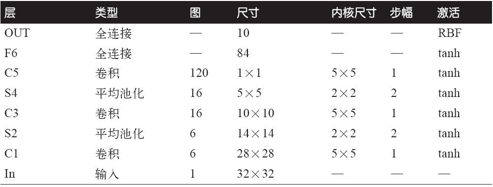
这里有一些额外的细节需要注意：
·MNIST图像是28×28像素的，但是它们被零填充到32×32像素，并且在输入到网络之前进行了归一化处理。网络的其余部分都不在使用任何填充，这就是图片在经过网络处理的过程中尺寸不断缩小的原因。
·池化层比平常稍微复杂一点：每个神经元计算输入值，然后将结果乘以一个可学习系数（每个特征图一个）并添加一个可学习偏置参数（同样，每个特征图一个），最终应用激活函数。
·大多数C3图中的神经元只连接到S2图中的三到四个神经元（而不是所有的六个S2特征图）。详细信息，请参阅原始文件中的表1。
·输出层有一些特殊：每个神经元输出其输入向量和权值向量之间的欧几里得距离的平方，而不是计算输入和权值向量之间的点乘。每个输出衡量该图片属于某个特定数字类的可能性。在这里交叉熵代价函数是很重要的，因为它可以很大程度上减少不良预测，产生更大的梯度并且因此更快地收敛。
Yann LeCun的个人网站（ http://yann.lecun.com/
）（“LENET”部分）有很好的演示LeNet-5识别数字的例子。
AlexNet
AlexNet CNN架构（ http://goo.gl/mWRBRp ） [1] 以大比分赢得2012年的ILSVRC竞赛：它的top-5错误率是17%，远优于第二名的26%。这个架构是由Alex Krizhevsky（算法以他的名字命名）、Ilya Sutskever和Geoffrey Hinton等人提出的。它和LeNet-5架构很相似，只是比LeNet-5更大更深。它直接将卷积层堆叠到其他层之上，而不是在每个卷积层之上堆叠池化层。表13-2显示了AlexNet架构。
表13-2：AlexNet架构
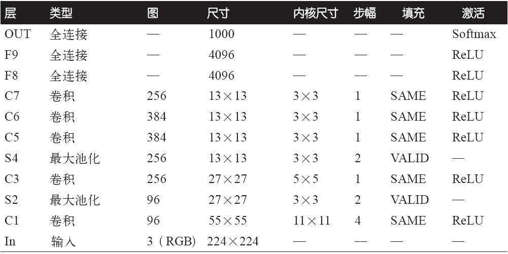
为了减小过度拟合，作者们使用了两种我们前面提到的正则化技术：首先，在训练期间输出层F8和F9使用了淘汰策略（淘汰率为50%）；其次，使用各种偏移、水平翻转、改变光照条件等来随机移动训练数据。
在对C1层和C3层的ReLU之后，AlexNet同样立即使用了具有竞争性的归一化步骤，该步骤称为本地响应归一化（local response normalization，简称LRN）。这种形式的归一化能够使得最强烈的激活来抑制同一位置但是在不同特性图中的神经元（这种竞争激活特性已经在生物神经元中被观察到）。这种特性鼓励不同特征图变得专业化、推动它们分离并迫使它们去探索新的功能，最终改进泛化。公式13-2展示了如何应用LRN。
公式13-2：本地响应归一化
·b i 是位于特征图i的u行、v列处神经元的归一化输出（注意，在该公式中，我们只考虑位于该行和列，因此没有标出u和v）。
·a i 是在ReLu之后、归一化之前对神经元的激活。
·k，α，β和r是超参数。k被称为偏置参数，r被称为深度半径。
·f n 是特征图的数量。
例如，如果r=2并且神经元被强激活，那么它将抑制位于其上面和下面的特征图中的神经元的激活。
在AlexNet中，超参数的设置如下：r=2，α=0.00002，β=0.75，k=1。该步骤可以使用TensorFlow中的local_response_normalization（）函数实现。
由Matthew Zeiler和Rob Fergus开发的AlexNet的变体，被称为ZF Net，赢得了2013年的ILSVRC挑战。它的本质就是AlexNet，只是调整了一些超参数（特征图的数量、内核大小、步幅等。）
GoogLeNet
GoogLeNet架构（ http://goo.gl/tCFzVs
）是由来自Google研究部的Christian Szegedy等人开发的， [2] 并通过将Top-5错误率降到7%而赢得了2014年的ILSVRC挑战。这一伟大的性能很大程度上源于它的网络比以前的CNN更深（见图13-11）。这是通过一个称为初始化模块（inception modules） [3] 的子网使之成为可能，该模块使得GoogLeNet比以前的架构更加有效地使用参数：GoogLeNet实际具有的参数数量只是AlexNet的1/10（大约是600万个参数，而不是AlexNet的6000万个）。
图13-10显示了架构的初始化模块。符号“3×3+2（S）”表示该层使用3×3内核，步幅为2，SAME填充。输入信号首先被复制并传送到四个不同的层。所有的卷积函数使用ReLu激活函数。注意，第二组卷积层使用了不同的内核大小（1×1，3×3和5×5），这样使它们能够捕捉到不同尺寸的图像模式。还需注意的是，每层都是步长为1，填充为SAME（即使是最大池化层），所以它们的输出都和其输入有着相同的高和宽。这使得它可以沿着最终的深度级联层（depth concat layer）中的深度维度连接所有输出（即从所有的四个顶部的卷积层堆叠特征图）。该级联层可以使用TensorFlow中的concat（）函数实现，其中axis=3（axis表示深度）。
图13-10：初始化模块
你可能疑惑为什么初始化模块用内核为1×1的卷积层。当然这些层不能捕捉到任何特征，因为它们一次只能看见一个像素。事实上，这些层的存在有两个目的：
·第一，它们被配置为输出的特征图比输入少，作为一些瓶颈层来降低维度。在3×3和5×5的卷积层之前使用该层特别有用，因为这些是计算代价特别高的层。
·第二，每个卷积层对（[1×1，3×3]和[1×1，5×5]）的作用就如同一个单独且强大的卷积层，用来捕捉更加复杂的模式。实际上，这些卷积层对能够扫描图像中的两层神经网络，而不是简单的图像线性分类器（如单个卷积层所做的一样）。
简而言之，你可以将整个初始化模块看成是一个超级卷积层，它能够输出一些用以捕捉各种尺寸复杂模式的特征图。
每个卷积层的卷积内核数量是一个超参数。不幸的是，这意味着每个初始层都有6个或者更多个超参数。
我们来看看GoogLeNet的CNN架构（见图13-11）。由于它太深了，我们不得不使用三列来展示，但是实际上GoogLeNet是由很多层堆叠起来的一个很高的列，其中包括9个初始化模块（每个有转筒图案的框），其中每个包含三层。每个卷积层和每个池化层输出的特征图的数量显示在内核尺寸之前。初始化模块上的6个数字表示模块中每个卷积层输出特征图的数量（与图13-10的顺序相同）。注意，所有卷积层都有ReLU激活函数。
图13-11：GoogLeNet架构
让我们来看看这个网络结构：
·为了减少计算量，前两层将图像的高度和宽度分别除以4（因此面积被除以16）。
·接下来，一个本地响应标准化层确保以前的图层学习各种各样的特征（如前所述）。
·后面是两个卷积层，其中第一个像瓶颈层（bottleneck layer）一样。如前所述，你可以把这一对看作是一个单一智能卷积层。
·同样，本地响应标准化层可确保前面的图层捕捉到各种各样的模式。
·接下来，为了再次增加计算速度，最大池化层将图像的高度和宽度减小为原来的1/2。
·然后是九个堆叠的初始化模块。为了减小维度和加速网络，它们与几个最大池化层交织堆叠。
·下一步，平均池化层使用具有特征图尺寸相同、填充为VALID的内核，输出1×1的特征图：这种令人称奇的策略称为全局平均池化（global average pooling）。它有效强制前面的各层产生特征图，这些特征图实际上是每个目标类的置信图（因为其他类型的特征将会被该平均步骤破坏）。这样就无须在CNN顶部配置几个完全连接层（如AlexNet），从而大大减小了网络中的参数数量，并且降低了过度配置的风险。
·最后一层是不言而喻的：放弃正则化，然后使用一个具有softmax激活函数的完全连接层来输出估计类的概率。
这张图是稍微简化版的。原始的GoogLeNet架构还包括位于第三个和第六个初始化模块之上的两个辅助分类器，由一个平均池化层，一个卷积层，两个全连接层，以及一个softmax激活层组成。在训练期间，它们的损失（按比例缩小70%）被加到整体损失中。目的是解决消失的梯度问题和规范网络。然而，结果表明其作用相对较小。
ResNet
最后而且重要的一个框架是由Kaiming He等人开发 [4] 并获得2015年ILSVRC竞赛冠军的残差网络（ http://goo.gl/4puHU5
），又称为ResNet。它使用了一个由152层组成的非常深的CNN，使得Top-5错误率降到3.6%。能够训练如此深层网络的关键是使用了跳过连接（也称为快捷连接）：输入到一个层中的信号也被添加到位于堆栈上方的层的输出端。让我们看看这个方法为何如此有效。
训练神经网络时，目标是使目标函数h（x）模型化。如果将输入x添加到网络的输出（即添加跳过连接），则网络将被强制模型化为f（x）=h（x）-x，而不是h（x）。这被称为残差学习（见图13-12）。
图13-12：残差学习
初始化一个常规神经网络时，它的权重接近于零，所以网络的输出值也接近于零。如果添加一个跳过连接，那么生成的网络只是输出一个输入的复制。换句话说，它最初对认证函数建模。如果目标函数接近于认证函数（通常是这种情况）将加快训练速度。
此外，如果添加多个跳过连接，即使一些层的学习还没有开始，网络就可以开始处理进程（参见图13-13）。由于跳过连接，信号可以轻松地跨越这个网络。深层残差网络可以看作是一组残差单元，每个残差单元是一个具有跳过连接的小型神经网络。
图13-13：常规深层神经网络（左）和深层残差网络（右）
现在来看看ResNet的架构（见图13-14）。它的架构特别简单，开始和结束与GoogLeNet特别相似（除了没有淘汰层），中间是一个非常深的简单残差单元。每个残差单元由两个具有分批归一化（BN）和ReLU激活功能的卷积层组成，使用了内核并保留了维度空间（步幅为1，填充为SAME）。
图13-14：ResNet架构
注意，特征图的数量是每个残差单元的二倍，同时它们的高度和宽度减半（使用步幅为2的卷积层）。当这种情况发生时，输入不能直接添加到残差单元的输出上，因为它们不具有相同的形状（例如，这个问题影响图13-14中用虚线箭头表示的跳过连接）。为了解决这个问题，输入将通过一个具有步幅为2和输出正确数量特征图的1×1卷积层（见图13-15）。
ResNet-34是具有34层的ResNet（只计算卷积层和全连接层），它包含了3个输出64个特征图的残差单元（RU），4个包含129个特征图的RU，6个包含256张特征图的RU，和3个包含512张特征图的RU。

图13-15：当改变特征图尺寸和深度时的跳过连接
更深层的ResNets，例如ResNet-152，使用的残差单元会略有不同。它们使用了3个卷积层：首先是一个有64张（小于4倍）特征图的1×1卷积层作为瓶颈层（如前文所讨论的），然后是一个有64张特征图的3×3卷积层，最后是另一个有256张（64的4倍）特征图的1×1卷积层来恢复原始深度。ResNet-152包含了三个这样的输出256张特征图的RU，然后8个输出512张特征图的RU，最后3个输出2048张特征图的RU。
正如你看到的，该领域发展迅速，每年都会有各种架构喷涌而出。一个明显的趋势是，CNN的深度变得越来越深，同时越来越轻量，需要的参数越来越少。到目前为止，ResNet是最强大同时又最简单的架构，在当下来说特别实用。但是请持续关注每年的ILSVRC。2016年的获奖者是来自中国的团队Trimps-Soushen，其错误率惊人地达到2.99%。为了达到这一点，他们训练了以前各个模型的组合，并把它们加入一个合集中。根据任务的不同，减低错误率有时需要、有时不需要额外的复杂性。
可能还有一些你感兴趣的其他架构，尤其是VGGNet（ http://goo.gl/QcMjXQ ） [5]
（获得2014年的ILSVRC亚军）、Inception-v4（ http://goo.gl/Ak2vBp
） [6] （融合了GoogLeNet和ResNet，在ImageNet分类取得了Top-5错误率接近3%的成绩）。
实现刚刚讨论的各种CNN架构没有什么特别的地方。我们很早就看到了如何去构建所有的单个构建模块，现在需要做的只是把它们组装到一起来创建一个需要的架构。我们将在后面的练习中构建一个ResNet-34，完整的代码可以在Jupyter笔记本中找到。
TensorFlow卷积操作
TensorFlow还提供了几种其他卷积层：
·conv1d（）用于一维输入卷积层。这个很有用，比如在自然语言处理中，句子有可能被表示为一维数组，同时接收野覆盖几个相邻的单词。
·conv3d（）用于创建三维输入卷积层，例如三维PET扫描。
·atrous_conv2d（）用于创建带孔卷积层（atrous convolutional layer）（“àtrous”是法语，意为“带孔”。）这相当于使用了一个通过为行和列插入0值（该0值即相当于孔）的扩大器的常规卷积层。例如，一个1×3的过滤器[[1，2，3]]可能被扩大4倍，生成一个扩大器[[1，0，0，0，2，0，0，0，3]]。该函数使得卷积层在没有计算代价和额外参数的情况下，扩大了接收野。
·conv2d_transpose（）用于创建转置卷积层，有时又称为去卷积层， [7] 用来进行图像提升采样。它通过在输入之间插入零来实现功能，所以可以把它看作是一个使用了分步步长的常规卷积层。提升采样在图像分割中是非常有用的：例如，在典型的CNN中，网络中的特征图会越来越小，如果想要输出一个与输入同尺寸的图像，就需要提升采样层。
·depthwise_conv2d（）用来创建深度卷积层，将每个过滤器应用到每个独立的输入通道。因此，如果有f n 个过滤器和f n′ 个输入通道，那么将输出f n ×f n′ 张特征图。
·separable_conv2d（）用于创建可分离卷积层，其首先类似一个深度卷积层，然后应用一个卷积层来输出特征图。这使得过滤器可以应用到任意的输入通道。
[1] “ImageNet Classification with Deep Convolutional Neural Networks”，A.Krizhevsky等人（2012）。
[2] “Going Deeper with Convolutions”，C.Szegedy等人（2015）。
[3] 在电影《2010》里，角色不断深入到多层次的梦想中，此模块因此得名。
[4] “Deep Residual Learning for Image Recognition”，K.He（2015）。
[5] “Very Deep Convolutional Networks for Large-Scale Image Recognition”，K.Simonyan和A.Zisserman（2015）。
[6] “Inception-v4，Inception-ResNet and the Impact of Residual Connections on Learning”，C.Szegedy等人(2016)。
[7] 这个名字很有误导性，因为该层不执行反卷积。其中反卷积是一个数学运算（卷积的逆运算）。
练习
1.一个具有全连接DNN的CNN在图像分类方面的优势是什么？
2.一个由三个卷积层组成的CNN，每个卷积层的内核为3×3、步幅为2、填充类型为SAME。最低层输出100张特征图，中层输出200张特征图，最高层输出400张特征图。输入图像是200×300像素的RGB图像。CNN的参数总数是多少？如果使用32位浮点，在进行单个示例预测时，该网络所需的最小RAM是多少？当对50张图像进行迷你批量训练时，需要的最小RAM又是多少？
3.如果GPU在训练CNN过程中内存不足，为了解决该问题，你可以做的五件事是什么？
4.为什么要使用最大池化层，而不是具有相同步幅的卷积层？
5.什么时候需要添加本地响应归一化层？
6.与LeNet-5相比，你能罗列出AlexNet的创新之处吗？GoogLeNet和ResNet的主要创新是什么？
7.构建一个自己的CNN，并尝试在MNIST上获得最高的准确性。
8.使用Inception v3分类大图。
a.下载各种动物的图像。在Python中加载它们，例如使用matplotlib.image.mpimg.imread（）函数。调整或裁剪它们的尺寸至299×299像素，且只有三个通道（RGB），没有透明通道。
b.下载最新的预训练的Inception v3模型：检查点可以在 https://goo.gl/nxSQvl 上获得。
c.通过调用inception_v3（）函数创建Inception v3模型，如下所示。这步必须在由inception_v3_arg_scope（）函数创造的参数范围内完成。此外，is_training=False并且num_classes=1001，如下所示：
代码详情
1 | from tensorflow.contrib.slim.nets import inception |
d.打开一个会话，并使用Saver来还原预先下载的预训练模型检查点。
e.运行模型，对准备的图像进行分类。显示每个图像的前五个预测以及预测的概率（可用类名可以从 https://goo.gl/brXRtZ 获取）。模型的准确率有多少？
9.传递大图像分类学习知识。
a.创建一个训练集，每个类至少包含100张图像。例如，你可以根据位置（海滩、山脉、城市等）对自己的图像进行分类，或者使用现有数据集，例如花数据集（ https://goo.gl/EgJVXZ ）或MFT的地点数据集（ http://places.csail.mit.edu/ ）（需要注册，数据量巨大）。
b.写一个预处理步骤，将图像的尺寸调整为299×299，具有一些随机值用于数据增加。
c.使用上一个练习中预训练的Inception v3模型，将所有层冻结到瓶颈层（即输出层的前一个层），用适当数量的新分类任务输出替换输出层（例如，花数据集具有五个互斥类，所以输出层必须具有五个神经元，并使用softmax激活函数）。
d.将数据集分为训练集和测试集。在训练集上训练模型，在测试集上进行评估。
10.通读TensorFlow的DeepDream教程（ https://goo.gl/4b2s6g
）。这是一种熟悉各种可视化的CNN学习模型和使用深度学习生成艺术的有趣方式。
练习的解决方案详见附录A。
第14章 循环神经网络
击球手击中球。你立刻开始奔跑，并预测球的轨迹。你跟踪它并且调整你的运动方向，最后在掌声中抓住了球。不论你是在完成一次友谊的判决还是预测早餐中咖啡的味道，预测未来是我们总在做的事情。在本章中，我们将讨论循环神经网络（RNN），它是一种可以预测未来的神经网络（至少是预测某些点）。它们可以分析时间序列数据，比如股票价格，然后告诉你什么时候该买或者卖。在自动驾驶系统中，它们可以预测汽车的轨迹来帮你避免事故。一般来说，它们可以工作在任意长度的序列上，而不是像我们目前为止讨论的所有网络那样的固定长度输入。例如，你可以使用句子、文档，或者语音样本等作为输入，使其对自然语言处理系统有用，比如自动翻译、语言转换成文本，或者情感分析（例如阅读电影评论、提取评委对电影的感受）等系统。
此外，RNN的预测能力也使得它们能够产生惊人的创造力。你可以要求它们预测最有可能出现在旋律中的下一个音符是什么，然后随机地选择其中一个音符并播放它。之后重复这一动作，继续要求网络预测下一个音符并播放。在你知道它前，网络已经组成了一段旋律，例如谷歌的Magenta项目（ https://magenta.tensorflow.org/ ）开发的东西（ http://goo.gl/IxIL1V ）。类似地，RNN可以产出句子（ http://goo.gl/onkPNd ）、图标（ http://goo.gl/Nwx7Kh ）等。虽然结果比不上莎士比亚或者莫扎特，但是谁又能预测几年后将会发生什么呢？
本章将介绍RNN的基本概念、面临的主要问题（也就是第11章讨论的消失/爆炸梯度问题）以及广泛应用于LSTM和GRU单元的解决方案。与往常一样，我们将展示如何使用TensorFlow实现RNN。最后，我们会看一下机器翻译系统的架构。
循环神经元
到现在为止，我们主要关注前馈神经网络，其激活流只在一个方向上，从输入层到输出层（除了附录E中的几个网络）。除了具有反向连接外，循环神经网络与前馈神经网络非常相似。我们来看一个最简单的RNN，如图14-1所示，仅由一个神经元组成，它自己接收输入，产生输出，然后将输出返回其本身。在每一个时间迭代t（也称为一帧），这个循环神经元接收输入x（t）和上一个时间迭代它自己的输出y
（t-1） 。我们可以使用时间轴来代表这个微小的网络，如图14-1（右）所示。这种方式被称为按照时间展开网络。
图14-1：一个循环神经网络（左），按照时间展开图（右）
你可以轻松创建一个一层循环神经元。如图14-2所示，在每一个时间迭代t，每个神经元同时接收输入向量x（i）和前一个时间迭代的输出向量y （t-1） 。注意，现在输入和输出都是向量（当只有一个神经元时，输出是标量）。
图14-2：一层循环神经元（左），按照时间展开图（右）
每个循环神经元有两个权重：一个是输入x （t） ，另一个是前一个时间迭代的输出y （t-1） 。我们把这两个权重向量称为w x 和w y 。单个循环神经元的输出可以如你所期望的那样计算出来，如公式14-1所示（b是偏差系数， 是激活函数，如ReLU [1]
）。
公式14-1：单个实例的单个循环神经网络的输出
与前馈神经网络类似，我们可以使用前一个公式的向量化形式来计算在整个小批次网络的整层输出。
公式14-2：一个小批次网络中所有实例的一层循环神经网络的输出
·Y （t） 是一个m×n neurons 矩阵，包含了时间迭代t上小批次上的每个实例的一层的输出（m表示小批次的实例数量，n neurons 是神经元的数量）。
·X （t） 是一个m×n inputs 矩阵，包含了所有实例的输入（n inputs 是输入特征的数量）。
·W x 是一个n inputs ×n neurons 矩阵，包含了当前时间迭代输入的连接权重。
·W y 是一个n neurons ×n neurons 矩阵，包含了前一个时间迭代输出的连接权重。
·权重矩阵W x 和W y 通常被连接成一个形状为（n inputs +n neurons ）×n neurons 的单独权重矩阵（见公式14-2的第二行）。
·b是一个大小为n neurons 的向量，包含每个神经元的偏差系数。
注意，Y （t） 是函数X （t） 与Y （t-1） 之和，Y （t-1） 是X （t-1） 与Y （t-2） 之和，Y （t-2） 是X （t-2） 与Y
（t-3） 之和，以此类推。当时间t=0时，Y （t） 是一个与所有输入相关的函数（即X （0） ，X （1） ，…，X （t）
）。在第一个时间迭代t=0时，这里没有之前层的输出，所以这时候它们的值被假设为全零。
记忆单元
循环神经元在时间迭代t的输出是之前时间迭代所有输入的函数，你可以说它是一种形式的记忆。那些能够保存一些时间迭代的状态的神经网络称为记忆单元（或者简单的单元）。单个循环神经元或者一层循环神经元是非常基本的单元，在本章的后续内容中，我们会看一些更加复杂和强大的单元类型。
通常一个单元在时间迭代t的状态被记作h （t） （h代表“隐藏”）表示在某个时间迭代的输入和它在前一个时间迭代的状态的函数：h （t） =f（h （t-1） ，x （t） ）。它在时间迭代t的输出y （t） 同样是前一个时间迭代的状态和当前的输入的函数。在我们目前所讨论的基本单元的情况下，输出基本等于状态，但是在更加复杂的单元中情况就不是这样了，如图14-3所示。
图14-3：一个单元的隐藏状态和它的输出可能不同
输入和输出序列
RNN可以同时获取输入序列并产生输出序列（见图14-4左上方网络）。例如，这种类型的网络对于预测股票价格等时间序列是有用的：提供过去N天的价格，它必须输出未来一天的价格（即从N-1天以前到明天的价格）。
或者，提供给网络一系列输入，并且忽略除了最后一个之外的所有输出（见图14-4右上方的网络）。换句话说，这是一个序列到向量网络。例如，输入给网络一个电影评论相关的单词序列，网络输出一个欢迎度评分（例如，-1（厌恶）到+1（喜欢））。
相反，可以在第一个时间迭代给网络输入一个单词（其他时间迭代输入都是零），并让它输出一个序列（见图14-4左下方网络）。这是一个向量到序列网络。例如，输入可以是一个图像，输出是该图像的标题。
最终，会有一个被称为编码器的序列到向量网络和一个被称为解码器（见图14-4右下方的网络）的向量到序列网络。例如，该网络可以用于将句子从一种语言翻译成另一种语言。为网络输入一种语言的句子，编码器会将其转换成单个向量来表示，随后解码器将这些向量解码成另一种语言的句子。这种两步模型被称为编码器-解码器网络，它的效果要比单独的序列到序列的RNN网络（如图14-4左上方网络所示）好得多。因为句子中的最后一个单词也可以影响第一个单词的翻译，所以在翻译整个句子之前需要知道整个句子的内容。
听起来特别令人兴奋，那么让我们开始编码吧！
图14-4：序列到序列网络（左上），序列到向量网络（右上），向量到序列网络（左下），延迟的序列到序列网络（右下）
[1] 注意，许多研究人员更喜欢使用双切曲线（tanh）作为RNN的激活函数，而不是使用ReLU激活函数。例如，Vu Pham等人的论文“Dropout Improves Recurrent Neural Networks for Handwriting Recognition”。然而，基于ReLU的RNN也是有可能的，可以参见Quoc V.Le等人的论文“A Simple Way to Initialize Recurrent Networks of Rectified Linear Units”。
TensorFlow中的基本RNN
首先，为了更好地了解它们的运行原理，我们先不用TensorFlow的任何RNN操作来实现一个最简单的RNN网络。我们将使用tanh激活函数创建一个由5个神经元组成的一层RNN。假设RNN只运行两个时间迭代，每个时间迭代输入一个大小为3的向量。下述代码通过展开两个时间迭代构建这个RNN网络：
代码详情
1 | n_inputs = 3 |
这个网络看起来特别像一个两层前馈神经网络，但还是有一些不同：第一，两层网络分享相同的权重和偏差系数；第二，每层都接收输入，并且产生输出。为了运行这个模型，我们需要给两个时间迭代都提供输入，如下所示：
代码详情
1 | import numpy as np |
这个小批次网络包含四个实例，每个实例有一个由两个输入组成的输入序列。最后Y0_val和Y1_val包含了小批次网络上的所有神经元和所有实例在两个时间迭代上的输出：
代码详情
1 | >>> print(Y0_val) # output at t = 0 |
虽然很难，但是肯定可以使用这个方法来运行一个有100个时间迭代的RNN，它产生的图形将会变得巨大。现在我们来看看如何使用TensorFlow的RNN操作来创建一个相同的网络。
通过时间静态展开
static_rnn（）函数通过链式单元来创建一个展开的RNN网络。下面的代码创建了一个和上文相同的RNN网络：
代码详情
1 | X0 = tf.placeholder(tf.float32, [None, n_inputs]) |
首先，创建和以前一样的输入占位符。然后创建了一个BasicRNNCell，可以认为它是一个用来构建展开的RNN网络单元副本的工厂。然后调用static_rnn（）函数，传入单元工厂和输入张量，并告诉函数输入的数据类型（这个函数用来创建初始状态矩阵，其默认值全为零）。对于每个输入，static_rnn（）函数调用单元工厂的call（）函数来创建共享权重和偏差系数的两个相同的单元（每个单元包含一个层由五个循环神经元层组成的网络），然后像以前一样捆绑在一起。static_rnn（）函数返回两个对象。第一个是一个包含了每个时间迭代的输出张量的Python列。第二个是一个包含了网络最终状态的张量。当你使用基本单元时，最终状态等于最后的输出。
如果有50个时间迭代，定义50个输入占位符和50个输出张量就会有些不方便。另外，在运行时也需要逐次传入这50个输入并处理50个输出。让我们来简化一下这个流程。下面的代码再次创建了一个相同的RNN网络，但是这次只需要输入一个输入占位符张量[None，n_steps，n_inputs]，其中第一个维度是小批次的尺寸。然后它抽取每个时间迭代的输入序列列表。X_seqs是张量[None，n_inputs]的n_steps Python列表，同样第一个维度是小批次的尺寸。为了实现这个，我们首先使用transpose（）函数交换前面两个维度，使得第一个时间迭代现在是第一个维度。然后使用unstack（）函数抽取一个沿着第一个维度（即，一个时间迭代一个张量）的Python张量列表。接下来的两行和以前一样。最后，使用stack（）函数合并所有输出张量为一个张量，并交换前两个维度来得到一个基本RNN的最终输出张量[None，n_steps，n_neurons]（再次，第一个维度是小批次的尺寸）。
代码详情
1 | X = tf.placeholder(tf.float32, [None, n_steps, n_inputs]) |
现在可以通过输入一个包含所有小批次序列的张量来运行网络：
代码详情
1 | X_batch = np.array([ |
并得到一个所有实例、所有时间迭代和所有神经元的outputs_val输出张量：
代码详情
1 | >>> print(outputs_val) |
然而，这种情况下一个单元在每个时间迭代仍然需要构建出一张图。如果有50个时间迭代，图像看起来还是会很丑。它比较类似于不使用循环来写程序（即，Y0=f（0，X0）；Y1=f（Y0，X1）；Y2=f（Y1，X2）；…；Y50=f（Y49，X50））。在正向传播期间，为了能够计算反向传播时的梯度值，系统必须存储所有的张量值，所以如果使用这种大图像，系统很有可能在数据反向传播期间内存溢出（OOM）（尤其是当GPU容量有限时）。
万幸，还有更好的解决方案：dynamic_rnn（）函数。
通过时间动态展开
dynamic_rnn（）函数使用while_loop（）操作在单元上运行适当次。为了避免OOM错误，可以设置swap_memory=True来将GPU内存换到CPU内存。方便的是，它可以对每个时间迭代的所有输出使用一个单独张量（shape[None，n_steps，n_inputs]），并且对每个时间迭代的所有输出输出一个单独张量（shape[None，n_steps，n_neurons]），不需要堆叠、拆分或者调换。下面的代码使用dynamic_rnn（）函数创建了一个与上文相同的RNN网络。它看起来比以前好很多！
代码详情
1 | X = tf.placeholder(tf.float32, [None, n_steps, n_inputs]) |
在反向传递期间，while_loop（）函数用了一些适当的“魔法”：它们在正向传输期间保存每个迭代的张量值，使得网络可以在反向传输期间用它们来计算梯度变化。
处理长度可变输入序列
到现在为止，我们使用的都是固定长度的输入序列（全部只有两个迭代）。如果输入序列的长度是可变的将会怎样呢？在这种情况下，必须在调用dynamic_rnn（）（或者static_rnn（））函数时设置sequence_length参数。该参数必须是一个指示每个实例输入序列长度的一维张量。例如：
代码详情
1 | seq_length = tf.placeholder(tf.int32, [None]) |
例如，假设第二个输入序列仅包含一个输入，为了适应输入张量X，必须使用零向量填充输入（因为输入张量的第二个维度是最长序列的大小，即2。）。
代码详情
1 | X_batch = np.array([ |
当然，还需要输入占位符X和seq_length的值：
代码详情
1 | with tf.Session() as sess: |
现在，RNN为每一次迭代超过输入序列长度的部分输出零向量（看代码中第二个实例的第二个时间迭代）：
代码详情
1 | >>> print(outputs_val) |
此外，状态张量包含了每个单元的最终状态（除了零向量）：
代码详情
1 | >>> print(states_val) |
处理长度可变输出序列
如果输出序列的长度也是可变的将会怎样？如果能提前知道每个序列的长度是多少（例如，知道每个输出序列的长度和输入序列一致），那么就可以使用前文所述的方法设置sequence_length参数的值。不幸的是，通常这种情况不可能出现，例如，被翻译后的句子的长度通常和输入句子的长度不一致。在这种情况下，最通用的解决方案是定义一种被称为序列结束令牌（EOS token）的特殊输出。EOS之后的所有输出将会被忽略（我们将在本章的后面详细讨论这一点）。
现在知道如何构建一个RNN网络了（或者更准确地说是按时间展开的RNN网络）。但是，如何训练它呢？
训练RNN
训练一个RNN网络的关键是像之前做的那样将其通过时间展开，然后简单地使用一个定期的反向传播（见图14-5）这种策略称为通过时间反向传播（BPTT）。
图14-5：通过时间反向传播
类似于定期的反向传播，首先沿着展开网络的是一个正向传播（图中虚线箭头表示）；然后使用成本函数 估算输出（其中，t min 和t max 表示第一个和最后一个输出时间迭代，不计算被忽略的输出），成本函数的梯度是沿着展开的网络反向传播（图中的实线表示）；最后，在BPTT期间使用梯度所计算的值更新网络参数。注意，梯度通过被成本函数使用的所有输出向后流动，而不是仅仅通过最终输出（例如，图14-5中的成本函数使用网络的最后三个输出Y
（2） 、Y （3） 和Y （4） 计算，所以梯度通过这三个输出流动，而不是通过Y （0） 和Y （1）
）。此外，因为相同的参数W和b被使用于每个时间迭代，所以反向传播可以做正确的事情并总结所有时间迭代。
训练序列分类器
让我们来训练一个识别MNIST图像的RNN网络。卷积神经网络更加适合于图像分类（见第13章），这里只是想举一个熟悉的例子。我们将图像视为一个28行，每行28像素的序列（因为每个MNIST图像是28×28像素）。我们将使用150个循环神经元单元，外加一个连接到最后一个时间迭代输出上的包含10（一个类一个）个神经元的全连接层，最后是一个softmax层（见图14-6）。
图14-6：序列分类器
构建阶段非常简单；它和第10章构建的MNIST分类器几乎一样，只是用一个展开的RNN代替了隐藏层。注意，全连接层是连接在包含RNN最终状态的状态张量上（即第28个输出上）。另外需要注意的是，y是一个目标类占位符。
代码详情
1 | from tensorflow.contrib.layers import fully_connected |
现在，加载MNIST数据，并按照网络的要求改造测试数据为[batch_size，n_steps，n_inputs]。随后我们会改造训练数据。
代码详情
1 | from tensorflow.examples.tutorials.mnist import input_data |
现在开始训练RNN网络。执行阶段和第10章的MNIST分类器也几乎完全相同，只是在输入到网络之前会改造每个训练批次的输入数据。
代码详情
1 | n_epochs = 100 |
输出类似于如下代码：
代码详情
1 | 0 Train accuracy: 0.713333 Test accuracy: 0.7299 |
我们得到了98%的准确率！此外，可以通过一些措施得到更好的结果，比如：通过超参数调整、使用He初始化来初始化RNN权重、训练更长时间、增加一些正则化（如，退出）等。
可以通过将其构造代码包含在可变范围内来为RNN网络指定初始化程序（为了使用He初始化，使用了variable_scope（”rnn”，initializer=variance_scaling_ini tializer（）））。
训练预测时间序列
现在来看看如何处理时间序列，如股票价格、空气温度、脑波模式等。在本节中，我们将训练一个RNN来预测生成时间序列里的下一个值。每个训练实例是从时间序列中随机选择的20个连续值，除了时间迭代后移一个，目标序列与输入序列相同（见图14-7）。
图14-7：时间序列（左），从时间序列而来的训练实例（右）
首先，创建一个RNN。它包含100个循环神经元，将其展开为20个时间迭代，因此每个训练实例的输入长度为20。每个输入只包含一个特征（当时的值）。目标序列也有20个输入，每个输入是一个单独值。代码几乎与前面的相同：
代码详情
1 | n_steps = 20 |
通常情况下，输入的特征不止一个。例如，如果想要预测股票价格，将会在每个时间迭代获取多个其他输入特征，如竞争股票的价格、分析师的评价，或者其他帮助系统预测的特征。
现在在每个时间迭代，有一个大小为100的输出向量，但是实际上我们只需要一个单独的输出值。最简单的解决方案是将单元格包装在OutputProjectionWrapper中。包装单元像普通的单元格一样，其方法调用下面的单元格，但是也添加了一些功能。OutputProjectionWrapper在每个输出的顶部（但是不影响单元的状态）添加了一个线性神经元的全连接层。所有的这些全连接层分享相同的（可训练的）权重和偏差系数。得到的RNN如图14-8所示。
包装单元相当简单。让我们调整上述代码，包装一个BasicRNNCell为Output-ProjectionWrapper：
代码详情
1 | cell = tf.contrib.rnn.OutputProjectionWrapper( |
图14-8：使用了输出预测的RNN单元
到目前为止，一切顺利。现在需要定义一个成本函数。我们将使用以前回归任务中用过的均方误差（MSE）。接下来，与以往一样将创建Adam优化器、训练操作、初始化变量：
代码详情
1 | learning_rate = 0.001 |
现在是执行阶段：
代码详情
1 | n_iterations = 10000 |
程序输出类似下面的代码：
代码详情
1 | 0 MSE: 379.586 |
一旦模型被创建，就可以做预测：
代码详情
1 | X_new = [...] # New sequences |
图14-9输出了前文实例（在图14-7中）在经过了1000次训练迭代后的预测序列。
图14-9：预测时间序列
尽管使用OutputProjectionWrapper是将每个时间迭代RNN的输出序列维度降低到一个值的最简单方法，但是它的效率不是最高的。这里有一个更加有效的技巧：可以将RNN的输出从[batch_size，n_steps，n_neurons]改造为[batch_sizen_steps，n_neurons]，然后应用适当输出尺寸（在我们的例子中，值为1）的单独全连接层，这将导致输出张量为[batch_sizen_steps，n_outputs]，然后改造这个张量为[batch_size，n_steps，n_outputs]。这些操作如图14-10所示。
为了实现这个方法，首先回滚到一个没有OutputProjectionWrapper的基本单元：
代码详情
1 | cell = tf.contrib.rnn.BasicRNNCell(num_units=n_neurons, |
然后使用reshape（）操作叠加所有输出，应用线性全连接层（这仅仅是一个预测，不使用任何的激活函数），最后再使用reshape（）拆分输出。
图14-10：叠加所有输出，应用预测，然后拆分结果
代码详情
1 | stacked_rnn_outputs = tf.reshape(rnn_outputs, [-1, n_neurons]) |
剩余的代码和前面的相同。这个方法可以有效提高速度，因为整个网络只有一个全连接层，而不是每个时间迭代一个。
创造性的RNN
现在已经有一个可以预测未来的模型，像本章开始描述的那样，可以使用它来产生一些创造性的序列。我们需要做的事情是提供一个包含n_steps值（例如，全为零的值）的种子序列，使用模型预测下一个值，将该预测值附加到序列，给模型输入下一个的n_steps值来预测下一个值，等等。该过程产生了一个和原始序列有相似性的新序列（见图14-11）。
代码详情
1 | sequence = [0.] * n_steps |
图14-11：创造性序列，使用零值作为种子序列（左）或者使用一个实例作为种子序列（右）
现在可以尝试着将John Lennon的所有专辑输入RNN网络，看看它能不能创造出下一个“Imagine”。但是，可能需要一个具有更多神经元和更深层次的更强大的RNN网络。
深层RNN
堆叠多层单元格的做法很常见，图14-12给出了一个深层RNN。
图14-12：深层RNN（左），按时间展开（右）
为了使用TensorFlow实现一个深层RNN，可以创建几个单元，然后将它们堆叠为一个MultiRNNCell。下面代码中堆叠了3个相同的单元（当然，你可以使用具有不同数量神经元的各种单元）。
代码详情
1 | n_neurons = 100 |
这就是所有需要做的事情！每个状态变量是一个每层包含一个张量的元组，每个元组代表该层单元（具有[batch_size，n_neurons]）的最终状态。创建MultiRNNCell时，如果设置state_is_tuple=False，则状态是一个包含每层状态并沿着列方向（样式为[batch_size，n_layers*n_neurons]）连接的单个张量。注意，在TensorFlow 0.11.0之前，默认行为就是这种。
在多个GPU中分配一个深层RNN
第12章指出，可以通过将每个层固定在不同的GPU上来在多个GPU间有效分配深层RNN（见图12-16）。但是，如果试图在不同的device（）块上创建每个单元格，它将无法正常工作：
代码详情
1 | with tf.device("/gpu:0"): # BAD! This is ignored. |
失败的原因是，BasicRNNCell是一个单元格工厂，而不是单元格本身（如前所述）；在创建工厂的时候是没有任何单元格被创建的，同样也没有创建变量。
设备块被简单忽略。单元格实际在随后被创建。当调用dynamic_rnn（）方法时，它调用了MultiRNNCell，MultiRNNCell调用实际创建单元格（包括它的变量）的每个单独的BasicRNNCell。不幸的是，没有提供任何类来控制创建变量的设备。如果试图在某个设备块上调用dynamic_rnn（），那么所有的RNN都会固定在这个单独设备上。这样就无法继续了吗？幸好不是这样！解决该问题的诀窍是创建自己的单元格包装器：
代码详情
1 | import tensorflow as tf |
除了将call（）方法包装在一个设备块 [1] 之外，这个包装器只是简单地代替每个方法调用另一个单元格。现在，你可以将每一层分发给不同的GPU了。 17
代码详情
1 | devices = ["/gpu:0", "/gpu:1", "/gpu:2"] |
不要设置state_is_tuple=False，否则MultiRNNCell会将所有单元格连接到一个GPU的一个张量上。
应用丢弃机制
如果构建一个特别深的RNN，训练集就很可能出现过度拟合的现象。为了阻止过度拟合，一个比较常用的方法是应用丢弃机制（如第11章介绍的）。可以与往常一样，简单地在RNN之前或者之后添加一个丢弃层，但是如果还想在RNN层之间应用丢弃机制，则需要使用一个DropoutWrapper。以下代码在RNN的每个输入层之间应用丢弃机制，丢弃每层大概50%的输入：
代码详情
1 | keep_prob = 0.5 |
注意，通过设置put_keep_prob的方法同样可以对输出使用丢弃机制。
这个代码的主要问题是，它不仅在训练期间使用丢弃机制，还在测试期间也使用了，这并不是我们想要的结果（记住，丢弃机制只应该在训练期间使用）。不幸的是，DropoutWrapper不支持is_training占位符，所以必须写一个自己的丢弃包装类，或者对训练和测试使用两个图。第二种选择如下所示：
代码详情
1 | import sys |
有了上面的方法，应该可以训练各种RNN网络了！不幸的是，如果想训练一个长序列的RNN，事情会变得有点困难。我们来看看为什么会这样，以及可以做些什么？
多个时间迭代训练的难点
为了训练一个长序列的RNN，将训练运行很多个时间迭代，使得展开的RNN成为一个非常深的网络。与其他深层神经网络一样，它可能遇到梯度消失/爆炸问题（如第11章讨论的），并且无限训练下去。我们之前讨论过的用于缓解此问题的方法同样可以用于展开的深层RNN：良好的初始化参数、非饱和激活方法（如ReLU）、批次归一化、梯度剪切、更快的优化器等。然而，如果RNN需要处理中等长度的序列，训练仍然会非常慢。
解决该问题的最简单和最普遍的方法是，训练期间只在有限的时间迭代上展开RNN网络。这种方法被称为通过时间截断反向传播（truncated backpropagation through time）。在TensorFlow中可以通过简单的截断输入序列实现该方法。例如，在时间序列预测问题中，在训练期间简单地减少n_steps。当然，这样存在的问题是模型无法学习长期模式。一个解决方法是保证这些缩短了的训练中同时包含新数据和旧数据，这样模型就可以同时学习这两种数据（例如，该序列中可以包含过去五个月的每月数据、过去五周的每周数据，以及过去五天的每日数据）。但是这个方案存在缺陷：如果去年的细粒度的数据确实有用呢？如果有一个很小但是即使几年后也必须考虑进去的事件呢（例如选举的结果）？
除了训练时间长之外，长期运行的RNN所面临的第二个问题是第一个输入的记忆逐渐衰退。实际上，由于数据在通过RNN网络时所经历的转换，使得每个时间迭代都会丢失一些信息。过一段时间后，RNN的状态中已经失去了第一个输入的痕迹。这可能会干扰训练。例如，假设分析一个很长的影评，它以“我喜欢这部电影”开始，但是之后的评论列出了很多可以使电影更好的建议。如果RNN丢失了开始的几个单词，就会完全误解这个影评。为了解决这个问题，引入了很多类型的长期记忆单元。它们已经被证明非常成功，所以那些基本的单元已经不在使用了。现在我们先来看看使用最广泛的长期记忆单元：LSTM单元。
[1] 这里使用装饰（decorator）设计模式。
LSTM单元
长期记忆单元（LSTM）于1997（ https://goo.gl/j39AGv ） [1] 年被Sepp Hochreiter和Ju？rgen Schmidhuber提出，然后被Alex Graves、Haim Sak（ https://goo.gl/6BHh81 ） [2] 和Wojciech Zaremba（ https://goo.gl/SZ9kzB ） [3] 等人逐步改进。如果将LSTM单元视为黑盒，那么除了性能比较好之外，它用起来就和一个基本单元一样。训练将更快收敛，并且能检测数据中的长期依赖。在TensorFlow中，可以很容易地使用BasicLSTM来代替BasicRNNCell：
代码详情
1 | lstm_cell = tf.contrib.rnn.BasicLSTMCell(num_units=n_neurons) |
LSTM单元管理着两个向量，因为性能的原因，它们默认是保持分开的。可以通过创建时设置state_is_tuple=False来改变默认属性。
那么LSTM单元是如何工作的？一个基本的LSTM单元的结构如图14-13所示。
图14-13：LSTM单元
如果不看框内的内容，LSTM单元看起来就像一个常规的单元，除了其状态分为两个向量：h （t） 和c （t） （c代表cell）。你可以认为h （t） 是短期状态，c （t） 是长期状态。
现在，让我们来打开盒子！其关键思想是，网络可以学习在长期状态下什么要存储，什么要丢弃，以及从什么中读取。随着长期状态c （t-1） 从左到右贯穿网络，可以看见它首先经过一个忘记门限，丢弃一些记忆，然后通过一些额外操作（通过输入门限选择增加记忆）增加一些新记忆。c （t） 的输出被不加任何操作地直接输出。所以，在每个时间迭代，一些记忆被丢弃，一些记忆被增加。此外，经过额外操作，长期状态被复制并传入tanh函数，然后其结果被输出门限过滤。于是就产生了短期状态h
（t） （它等于时间迭代y （t） 的单元格输出）。现在，我们来看看新记忆从何而来，如何工作。
首先，当前输入向量x （t） 和前一个短期状态h （t-1） 被输入到四个不同的全连接层。它们都有不同的目的：
·主层是输出为g （t） 的层。它的基本作用是分析当前输入x （t） 和前一个短期状态h （t-1） 。基本单元中就只有这一个层，它直接输出y （t） 和h
（t） 。相比之下，LSTM单元没有直接输出，而是将部分输出存储在长期状态中。
·其他三个层是门限控制器。因为使用了逻辑激活函数，它们的输出范围在0到1之间。如图14-13所示，它们的输出被输入到元素智能乘法操作中。因此如果输出是0，那么门限关闭；如果输出是1，那么门限打开。特别是：
·忘记门限（由f （t） 控制）控制着哪些长期状态应该被丢弃。
·输入门限（由i （t） 控制）控制着g （t） 的哪些部分会被加入到长期状态（这就是我们说只是“部分存储”的原因）。
·最后，输出门限（由o （t） 控制）控制着哪些长期状态应该在这个时间迭代被读取和输出（h （t） 和y （t） ）。
简而言之，LSTM单元可以学习识别重要输入（这是输入门限的职责），将其存储到长期状态中，学习需要时保存它（这是忘记门限的职责），以及学习需要的时候提取它。这就解释了它为什么能够成功捕捉到时间序列中的长期模式、长文字、录音等。
公式14-3总结了如何计算单个实例中单元在每个时间迭代的长期状态、短期状态，以及输出（整个小批次的方程和此也非常相似）。
公式14-3：LSTM计算

·W xi ，W xf ，W xo ，W xg 是每一层连接到输入向量x （t） 的权重矩阵。
·W hi ，W hf ，W ho ，W hg 是每一层连接到前一个短期状态h （t-1） 的权重矩阵。
·b i ，b f ，b o ，b g 是每一层的偏差系数。注意，TensorFlow将b f 初始化为全是1s的向量，而不是0s。这会阻止在训练开始时丢弃所有东西。
窥视孔连接
在基本的LSTM单元中，门限控制器只可以看到输入x （t） 和前一个短期状态h （t-1） 。通过让它们接触到长期状态来获取更多的内容或许是个不错的主意。Felix Gers和Jürgen Schmidhuber于2000年（ https://goo.gl/ch8xz3 ） [4] 提出了该想法。他们提出了具有额外连接的LSTM变体，被称为窥视孔连接（peephole connections）：前一个长期状态c （t-1） 作为输入传入忘记门限和输入门限，当前的长期状态c （t） 作为输入传入输出门限控制器。
在TensorFlow中实现窥视孔连接，只需要使用LSTMCell代替BasicLSTMCell，并设置use_peepholes=True：
代码详情
1 | lstm_cell = tf.contrib.rnn.LSTMCell(num_units=n_neurons, |
还有很多LSTM单元的其他变形。其中最著名的就是即将要讲的GRU单元。
[1] “Long Short-Term Memory”，S.Hochreiter和J.Schmidhuber（1997）。
[2] “Long Short-Term Memory Recurrent Neural Network Architectures for Large Scale Acoustic Modeling”，H.Sak等人（2014）。
[3] “Recurrent Neural Network Regularization”，W.Zaremba等人（2015）。
[4] “Recurrent Nets that Time and Count”，F.Gers和J.Schmidhuber（2000）。
GRU单元
2014年Kyunghyun Cho等人在论文（ https://goo.gl/ZnAEOZ ） [1] 中提出了门限循环单元（GRU）（见图14-14）。他们也在该文章中介绍了前面提到的编码器-解码器网络。
GRU单元是LSTM的简化版本，它的表现和LSTM差不多 [2] （这说明了其日益普及的原因）。其主要简化了：
·两个状态向量合并为一个向量h （t） 。
图14-14：GRU单元
·一个门限控制器同时控制忘记门限和输入门限。如果门限控制器的输出是1，那么输入门限打开而忘记门限关闭。如果输出是0，则正好相反。换句话说，无论何时需要存储一个记忆，它将被存在的位置将首先被擦除。这实际上是LSTM单元的一个常见变体。
·没有输出门限。在每个时间迭代，输出向量的全部状态被直接输出。然而，GRU有一个新的门限控制器来控制前一个状态的哪个部分将显示给主层。
公式14-4总结了单个实例的每个时间迭代中怎么计算单元的状态。
公式14-4：GRU计算
在TensorFlow中创建一个GRU单元极其简单：
代码详情
1 | gru_cell = tf.contrib.rnn.GRUCell(num_units=n_neurons) |
LSTM或GRU是近些年RNN获得成功的一个主要原因，尤其是在自然语言处理（NLP）中的应用。
[1] “Learning Phrase Representations using RNN Encoder-Decoder for Statistical Machine Translation”，K.Cho等人（2014）。
[2] Klaus Greff等人发表于2015年的论文“LSTM：A Search Space Odyssey”（https://goo.gl/hZB4KW），似乎显示了所有 LSTM变体的性能大体相同。
自然语言处理
大多数自然语言处理应用都是（至少部分）基于RNN的，诸如机器翻译、自动总结、语法分析、观点分析等。在本章的最后部分，我们将要看看机器翻译模型是如何工作的。TensorFlow的Word2Vec（ https://goo.gl/edArdi ）和Seq2Seq（ https://goo.gl/L82gvS ）教程详细地介绍了这部分内容，你应该认真学习一下。
单词嵌入
在开始之前，我们需要选择一个单词代表。一个选择是使用一个one-hot向量来代表每个单词。假设单词表有50000个单词，那么第n个单词要使用一个50000向量代替，除了第n位是1外，其他位都是0。然而，这么大的词汇量使用这种稀疏表示方式不是很高效。理想情况下，我们希望相似的单词使用相似的表示，这样模型就可以很容易地推此即彼，将学习到的单词概括为所有相似的单词。例如，如果告知模型“I drink milk”是一个合法的句子，并且知道“milk”和“water”比较相似，但是和“shoes”差得很远，那么它就会知道“I drink water”应该是一个合法的句子，而“I drink shoes”不是合法的。但是怎样才能得到一个如此有意义的表示方式呢？
最常见的方案是，将词汇表中的每个单词用小且密集的向量代表（例如150维），此方法称被为嵌入。然后只需要让神经网络在训练期间对每个单词学习一个好的嵌入即可。在训练刚开始的时候，嵌入是简单的随机选择，但是随着训练的进行，反向传播会自动移动嵌入，以帮助神经网络执行其任务。这就意味着，相似的单词会逐渐地集中在彼此之间，甚至最终会以最有意义的方式组织起来。例如，嵌入最终可能会沿着表示性别、单数/复数、形容词/名词等各种轴放置。结果确实相当惊人。 [1]
在TensorFlow中，首先需要为词汇表中的每个单词创建一个表示嵌入的变量（随机初始化）：
代码详情
1 | vocabulary_size = 50000 |
现在，假设要将句子“I drink milk”传入网络。首先，应该将句子分解为一系列已知的单词。例如，可以删除不必要的字符，用预定义的令牌替换未知的单词，如用“[NUM]”替换数字，用“[URL]”替换URL等。一旦有一个已知的单词列表，可以查找每个单词在字典中的数字标识符（从0到49999），例如[72，3335，288]。此时，使用占位符将这些标识符提供给TensorFlow，并且应用embedding_lookup（）函数来得到相应的嵌入：
代码详情
1 | train_inputs = tf.placeholder(tf.int32, shape=[None]) # from ids... |
一旦模型学习了良好的单词植入，那么它们实际上可以在任何NLP应用中发挥作用：毕竟，无论是什么应用，“milk”仍然比较接近“water”，而和“shoes”差距较大。事实上，你可能希望下载预训练的单词嵌入，而不是训练自己的。正如在重用预训练层一样（参见第11章），可以选择冻结预训练嵌入（例如，创建嵌入变量），或者让反向传播调整应用程序。第一种选择将会加快培训，第二种可能会提高性能。
嵌入对于代表可能占用大量不同值的分类属性也很有用处，特别是当值之间存在复杂的相似性时，例如，考虑职业、爱好、菜肴、品种、品牌，等等。
我们已经拥有了实现一个机器翻译系统的所有工具。现在一起看看如何实现吧。
用于机器翻译的编码器-解码器网络
我们来看看一个将英语翻译为法语的简单机器翻译模型（ https://goo.gl/0g9zWP ） [2] （见图14-15）。

图14-15：一个简单的机器翻译模型
英语句子被输入到编码器，然后解码器输出法语翻译。注意，法语翻译也作为解码器的输入，但是回退一步。换句话说，解码器的输入应该是它在前一步的输出（不管它实际输出了什么）。第一个单词给出了表示句子开始的令牌（例如，“
注意，英文句子再被输入到编码器之前的顺序是颠倒的。例如，“I drink milk”被颠倒为“milk drink I”。这是为了保证英语句子的第一个单词是最后一个被输入到编码器的，这很有用，因为它应该是解码器第一个要翻译的内容。
最初，每个单词都使用一个简单的整数标识符代表（例如，288代表单词“milk”）。然后嵌入查找返回单词嵌入（如以前所介绍的，这是一个密集、低维的向量）。单词嵌入才是最终输入到编码器和解码器的内容。
在每一步中，解码器输出词汇表中每个单词的分数，然后Softmax层将这些分数转换为概率。例如，在第一步中单词“Je”可能具有20%的概率，“Tu”可能有1%的概率等等。最终输出概率最高的单词，所以可以使用softmax_cross_entropy_with_logits（）函数来训练模型。
注意，在推理时间（训练之后），没有提供给解码器的最终目标句子。相反，只简单地提供给它前一步的输出，如图14-16所示（将需要一个图中没有显示的嵌入查找）。
图14-16：在推理时间将前一步的输出作为输入
现在已经有一张蓝图。如果浏览了TensorFlow的序列到序列教程，并读了rnn/translate/seq2seq_model.py里面的代码，可以发现一些重要区别：
·首先，到目前为止，假设所有输入序列（到编码器和解码器）都具有恒定长度。但是显然句子的长度会有所不同。有几种方法可以解决这个问题，例如，对static_rnn（）和dynamic_rnn（）使用sequence_length参数来指明每个句子的长度（如前文所述）。然而，该教程采用另一种方法（大概是出于性能的考虑）：句子被按照长度分入类似长度的桶（bucket）（例如1到6个单词的句子被分入另一个桶，7到12个单词的句子被分入另一个桶等 [3] ），并且使用特殊的填充令牌来填充短句子（例如，“
·其次，当输出词汇量特别大时（本例就是这种情况），输出每个单词的概率就会相当低。如果目标词汇包含50000个法语单词，编码器则会输出50000维向量，然后在如此大的一个向量上计算softmax函数的计算将会特别密集。解决这种情况的方案之一是使解码器输出较小的向量，例如1000维向量，然后使用采样技术来估计损失，而不必在目标词汇表的每个单词上计算它。这种最大采样（Sampled Softmax）技术在2015年被Sébastien Jean等人 [4] 提出。在TensorFlow中，可以调用sampled_softmax_loss（）函数来使用它。
·再次，本教程的实现使用了一个注意力机制（attention mechanism），让解码器窥视输入序列的内容。注意力增强的RNN超出了本书的范围，如果有兴趣，这里有一些使用注意力进行机器翻译（ https://goo.gl/8RCous ） [5] 、机器阅读（ https://goo.gl/X0Nau8 ） [6] 和图像捕捉（ https://goo.gl/xmhvfK ） [7] 等的相关论文。
·最终，教程的实现使用了tf.nn.legacy_seq2seq模型，该模块提供了各种轻松构建编码器-解码器模型的工具。例如，embedding_rnn_seq2seq（）函数提供了一个可以自动处理单词嵌入的简单编码器-解码器模型，如图14-15所示。该代码可以被迅速更新，以便使用新的tf.nn.seq2seq模块。
现在已经有了序列到序列教程实施需要的所有工具。掌握它，去训练一个自己的英语到法语的翻译器吧！
[1] 更多详细信息，参见Christopher Olah的著名博客（https://goo.gl/5rLNTj），或者Sebastian Ruder的一系列博客（https://goo.gl/ojJjiE）。
[2] “Sequence to Sequence learning with Neural Networks”，I.Sutskever等人（2014）。
[3] 教程中使用的 bucket的大小不同。
[4] “On Using Very Large Target Vocabulary for Neural Machine Translation”，S.Jean等人（2015）。
[5] “Neural Machine Translation by Jointly Learning to Align and Translate”，D.Bahdanau等人（2014）。
[6] “Long Short-Term Memory-Networks for Machine Reading”，J.Cheng（2016）。
[7] “Show，Attend and Tell：Neural Image Caption Generation with Visual Attention”，K.Xu 等人（2015）。
练习
1.你能想到一个序列到序列的RNN应用吗？一个序列到向量的RNN呢？一个向量到序列的RNN呢？
2.人们为什么使用编码器-解码器RNN而不是纯序列到序列RNN来进行自动翻译？
3.怎么样将卷积神经网络和RNN结合起来进行视频分类？
4.在构建RNN时使用dynamic_rnn（）而不是static_rnn（）的优势是什么？
5.如何处理变长输入序列？变长输出序列又会怎样？
6.在多个GPU之间分配训练和执行层次RNN的常见方式是什么？
7.Hochreiter和Schmidhuber在他们关于LSTM的论文里使用了嵌入式的Reber语法。它们是一些用来生成字符串（例如，“BPBTSXXVPSEPE”）的人造语法。查看Jenny Orr对这个主题的介绍（ https://goo.gl/7CkNRn
）。选择一个特定的嵌入Reber语法，然后训练一个RNN来识别一个字符串是否符合该语法。首先需要编写一个函数来生成训练批次数据，其中50%的字符串符合该语法，另外的50%不符合。
8.解决“How much did it rain？II”Kaggle比赛（ https://goo.gl/0DS5Xe ）问题。这是一个时间序列预测任务：已知一个偏振雷达值，然后要求预测每小时雨量总数。Luis Andre Dutra e Silva对他曾经在比赛中获得第二的技术给出一些有趣的见解（ https://goo.gl/fTA90W ）。特别是，使用了两个LSTM层组成了一个RNN。
9.通读TensorFlow的Word2Vec教程（ https://goo.gl/edArdi
）来创建单词嵌入，然后通读Seq2Seq教程（ https://goo.gl/L82gvS
）训练一个英语到法语的翻译系统。
练习的解决方案详见附录A。
第15章 自动编码器
自动编码器是能够在无须任何监督（例如，训练数据集没有任何标记）的情况下学习有效表示输入数据（称为编码）的人工神经网络。这种编码通常比输入数据的维度低得多，使得自动编码可以用来降低维度（见第8章）。更重要的是，自动编码器作为强大的特征检测器，可以用于深层神经网络的无监督训练（如第11章所讨论的）。最后，它们能够生产与训练数据非常相似的新数据；这被称为生成模型。例如，使用面部图片训练自动编码器，然后它可以生成新的面部图片。
令人惊讶的是，自动编码器通过简单地学习将它们的输入复制到输出来工作。这听起来像是一个微不足道的工作，但是我们将看到各种方式的网络限制使得它变得相当困难。例如，可以限制内部表示的尺寸，或者向输入添加噪音并训练网络恢复原始输入。这些限制阻止了自动编码器直接将输入复制到输出，从而迫使它们学习有效代表数据的方法。简而言之，编码是自动编码器尝试在某些限制下学习认证方法的附属品。
本章将深入介绍自动编码器的工作原理，可以施加什么类型的约束，以及如何使用TensorFlow实现它们，无论是用于降噪、特征提取、无监督预训练，还是生成模型。
高效的数据表示
下面的哪个序列比较容易记忆？
·40，27，25，36，81，57，10，73，19，68
·50，25，76，38，19，58，29，88，44，22，11，34，17，52，26，13，40，20
乍一看，似乎第一个序列要更加容易一点，因为它看起来短很多。但是，如果仔细观察第二个序列，你可能注意到它遵从两个简单地规则：偶数后的数是它们的一半，奇数后的数是它们的三倍加一（这是一个著名的数列，被称为冰雹数列）。一旦注意到这个模式，第二个序列就会比第一个序列容易记忆，因为你只需要记住两个规则：第一个数字和序列的长度。如果能够迅速而容易地记住很长的序列，你可能就不会在意第二个序列是否存在模式，而只需要在心中记住每个数字即可。但是事实上，记住长序列非常困难，这使得识别模式变得很有用，希望这也澄清了为什么在训练期间限制自动编码器促使它发现和利用了数据中的模式。
20世纪70年代初，William Chase和Herbert Simon研究了记忆、感知和模式匹配之间的关系。 [1] 他们观察到专家级的棋手能够在5秒内记住游戏中所有棋子的位置，这是绝大多数人望尘莫及的。然而，这种情况只发生在这些棋子被放置在真实游戏中的实际位置上，而不是随机放置的位置。国际象棋专家并不比你我有更好的记忆力，只是因为他们有丰富的经验，对象棋模式更加容易记忆。注意，模式帮助他们有效地存储信息。
与记忆试验中的围棋选手一样，自动编码器查看输入，将它们转化为有效的内部表示，然后输出一些看起来和输入很像的东西。一个自动编码器总是由两部分组成：第一部分是将输入转化为内部表示的编码器（或者称为识别网络），第二部分是将内部表示转换为输出的解码器（或者称为生成网络），见图15-1。
自动编码器通常和多层感知器（MLP，参见第10章）具有相同的架构，不同之处在于自动编码器的输出层的神经元数量必须等于输入层的数量。在这个例子中，只有一个由两个神经元（编码器）组成的隐藏层，以及一个由三个神经元（解码器）组成的输出层。输出通常被称为重建，因为自动编码器尝试重建输入，并且成本函数包含重建损失，当重建与输入不同时，该损失会惩罚模型。
图15-1：国际象棋记忆实验（左）和一个简单的自动编码器（右）
因为内部表示的维度低于输入数据（它是2D而不是3D），因此自动编码器不完整。不完整的自动编码器不能简单地复制输入到编码，但是它必须找到一种输出其输入副本的方法。它被强制学习输入数据中最重要的功能（并删除不重要的功能）。让我们看看如何实现一个用来降低维度的非常简单的不完整自动编码器。
[1] “Perception in chess”，W.Chase 和H.Simon（1973）。
使用不完整的线性自动编码器实现PCA
如果自动编码器仅使用线性激活，并且成本函数是均方误差（MSE），则表示它可以用来实现主要组件分析（见第8章）。
以下代码构建了一个简单的线性自动编码器，用于执行PCA，将3D数据集投影为2D：
代码详情
1 | import tensorflow as tf |
与以前章节所构建的MLP相比，这段代码并没有多大的不同。需要注意的有两点：
·输出的数量等于输入的数量。
·为了执行简单的PCA，我们设置activation_fn=None（即，所有的神经元是线性的），并且成本函数是MSE。很快我们就会看到更加复杂的自动编码器。
现在让我们来加载数据集，在训练集上训练模型，并使用该模型来对测试集进行编码（即，将其投影为2D数据）：
代码详情
1 | X_train, X_test = [...] # load the dataset |
图15-2显示了原始的3D数据集（左侧）和自动编码器隐藏层的输出（即编码层，如图右侧所示）。可以看到，自动编码器找到了最好的2D平台来展现数据，尽可能多地保留数据的差异性（正如PCA一样）。
图15-2：不完整的线性自动编码器实现的PCA
栈式自动编码器
与我们之前讨论的其他神经网络一样，自动编码器可以有多个隐藏层。在这种情况下，它被称为栈式自动编码器（或者深度自动编码器）。增加更多的层帮助自动编码器学习更加复杂的编码。然而，需要小心的是，不要让自动编码器变得太强大。想象一下，编码器强大到只是学习将每个输入映射到任意单个数字上（解码器学习翻转映射）。显然，这样的自动编码器将完美地重建训练数据，但是在这个过程中没有任何有效的数据表示（并且不可能推广到新的实例）。
栈式自动编码器的结构通常对称于中央隐藏层（编码层）。为了简单起见，它看起来像一个三明治。例如，一个MNIST的自动编码器（见第3章）可能有784个输入，随后是一个有300个神经元的隐藏层，然后是一个有150个神经元的中央隐藏层，然后是一个有300个神经元的隐藏层，最后是一个有784个神经元的输出层。这个栈式自动编码器如图15-3所示。
图15-3：栈式自动编码器
TensorFlow实现
可以像实现一个常规的深度MLP一样实现一个栈式自动编码器。特别是，可以使用我们在第11章训练深度网络的技术实现。例如，以下代码使用He初始化，ELU激活函数，以及 正则化构建了一个MNIST栈式自动编码器。除了没有标签外（没有y），代码看起来非常熟悉：
代码详情
1 | n_inputs = 28 * 28 # for MNIST |
你可以正常地训练模型。注意，没有使用数字标签（y_batch）。
代码详情
1 | n_epochs = 5 |
权重绑定
当自动编码器和我们刚刚构建的那样严格对称时，一种常见的技术是将解码层的权重和编码层的权重联系起来。这种方式将模型的权重减半，提高训练速度，限制了过度配置的风险。具体而言，如果自动编码器总共有N层（输入层不计算在内），W L 代码第L层的连接权重（例如，第一层是输入层，第N/2层是编码层，第N层是输出层），然后解码层的权重可以简单地定义为：W N-L+1 = （其中，L=1，2，…N/2，）。
不幸的是，使用TensorFlow的fully_connected（）函数实现权重绑定有点复杂；实际上，手动定义这些层更加容易一点。代码最终显得更加冗长：
代码详情
1 | activation = tf.nn.elu |
这些代码很简单，但是有几个重要事情需要注意：
·第一，weights3和weights4不是变量，它们分别是weights2和weights1的转置（它们被“绑定”在一起）。
·第二，因为它们不是变量，所以没有必要进行正则化：只正则化weights1和weights2。
·第三，偏置项从来不会被绑定，也不会被正则化。
一次训练一个自动编码器
相比于像我们这样一次训练整个栈式自动编码器，一次训练一个单独的自动编码器会快很多，然后将它们堆叠为一个栈式自动编码器（因此而得名），如图15-4所示。这种方法对深层自动编码器尤其有用。
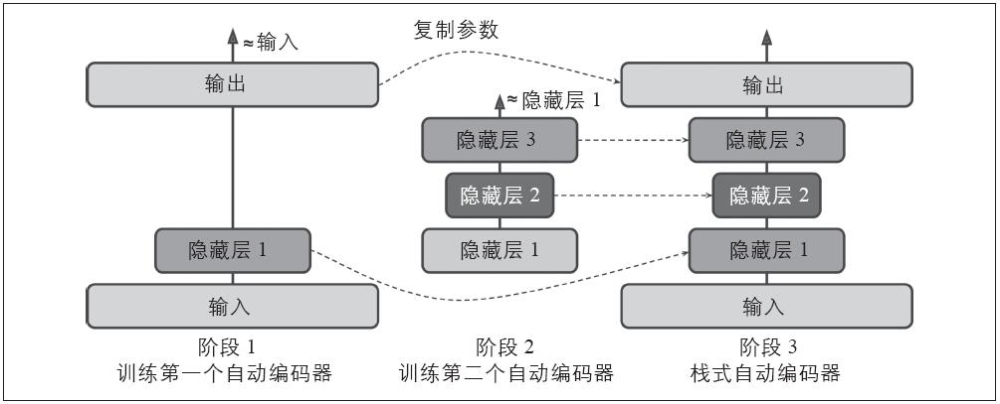
图15-4：一次训练一个自动编码器
在训练的第一阶段，第一个自动编码器学习重现输入。在第二阶段，第二个自动编码器学习重建第一个自动编码器隐藏层的输出。最终，用这些所有的自动编码器构建了一个大三明治，如图15-4所示（即，首先堆叠各个自动编码器的隐藏层，然后输出层将其顺序反转）。这样就得到了最终的栈式自动编码器。用这种方式，可以轻松地训练更多的自动编码器，来构建一个非常深层的栈式自动编码器。
为了实现这种多阶段训练算法，最简单的方法是对每个阶段使用不同的TensorFlow图，只需通过它来运行训练集并捕获隐藏层的输出。该输出随后作为下一个自动编码器的训练集。一旦用这种方式对所有的自动编码器都进行了训练，只需复制每个自动编码器的权重和偏置系数，并使用它们构建栈式自动编码器。实现方式非常简单，不在这里赘述，请查看Jupyter笔记本里面的代码（ https://github.com/ageron/handson-ml
）作为实例。
另外一种途径是使用一个包含整个栈式自动编码器的单个图表，再加上一些为了执行每个训练阶段的额外操作，如图15-5所示。
图15-5：训练栈式自动编码器的单个图表
这里需要一点解释：
·图表的中间列是完全栈式自动编码器。这部分可以在训练后使用。
·左列是第一阶段训练需要的一系列操作。它创造了一个绕过第二个和第三个隐藏层的输出层。这个输出层和栈式自动编码器分享相同的权重和偏差系数。在其之上是训练操作，旨在使得输出尽可能地接近输入。因此，该阶段将为第一个隐藏层和输出层（即第一个自动编码器）训练权重和偏差系数。
·右列是第二阶段训练需要的一系列操作。其训练操作旨在使得第二个隐藏层的输出尽可能与第一个隐藏层的输出相似。注意，必须在运行第二阶段时冻结第一隐藏层。这个阶段将训练第二个和第三个隐藏层（即第二个自动编码器）的权重和偏差系数。
TensorFlow代码如下：
代码详情
1 | [...] # Build the whole stacked autoencoder normally. |
第一阶段很简单：创造了一个忽略第二个和第三个隐藏层的输出层，然后构建训练操作来最小化输入和输出之间的距离（加上一些正则化）。
第二阶段增加了最小化隐藏层3和隐藏层1输出之间的距离所需要的操作（也有一些正则化）。更重要的是，我们为minimize（）方法提供了可训练的变量列表，确保忽略weights1和biases1；以便在第二阶段有效地冻结隐藏层1。
在执行阶段，需要做的所有事情是在第一阶段训练操作数次，然后执行第二阶段训练操作更多次。
因为在第二阶段，隐藏层1被冻结，所以对于任意给定的训练实例它的输出总是相同的。为了避免需要在每个单独的时间点重新计算隐藏层1的输出，可以在第一阶段结束的时候为整个训练集计算它，然后直接在第二阶段馈送隐藏层1的输出缓存。这将有很多的性能提升。
重建可视化
保证自动编码器被合适训练的一种方法是比较输入和输出。它们必须相当相似，差异应该是一些不重要的细节。我们来绘制两个随机数字及其重建：
代码详情
1 | n_test_digits = 2 |
图15-6展示了结果图片。

图15-6：原始数字（左）和它们的重建（右）
看起来十分相似。所以自动编码器已经学会了重现其输入，但是它是否学会了有用的特征？让我们来看看。
特征可视化
一旦你的自动编码器学会了某些特征，你可能想看看它们。有各种技术可以满足你的愿望。其中，最简单的技术是考虑隐藏层的每个神经元，然后找到激活它最多的训练实例。该技术对顶层的隐藏层尤其有用，因为它们经常捕获相对大的特征，可以容易地从一组包含它们的训练实例中发现。例如，如果一个神经元在看到图片中有猫时被强烈激活，那么很明显激活它的照片大多数都包含猫。然而，对于比较低的隐藏层，该技术就不是很奏效，因为特征相对比较小而且更抽象，所以通常很难准确地了解神经元是如何被激活的。
我们来看看另一种技术。对于第一个隐藏层的每个神经元，可以创建一个图像，其中每一个像素的强度代表了连接到给定神经元的权重。例如，如下代码展示了第一个隐藏层的5个神经元学到的特征：
代码详情
1 | with tf.Session() as sess: |
你可能会得到如图15-7所示的低层特征。
图15-7：第一个隐藏层的神经元学习到的特征
前四个特征对应于小块特征，第五个特征在寻找垂直笔画（注意，这些特征来自于后面将要讨论的堆叠去噪自动编码器）。
另外一种技术是向自动编码器馈送随机输入图像，测量你感兴趣的神经元的激活，然后执行反向传播，以使得神经元激活更多的方式调整输入图像。如果迭代多次（性能逐渐上升），图像逐渐变为令神经元兴奋的图像。这是一种非常有用的技术来可视化神经元寻找的输入类型。
最终，如果使用自动编码器来执行无监督的预训练，例如分类器。一个简单验证自动编码器学习到的特征是否有用的方法是测量分类器的性能。
使用堆叠的自动编码器进行无监控的预训练
正如我们在第11章所讨论的，如果正在执行一个复杂的监督任务，但是没有足够多的已标记训练数据，解决方案之一是找到一个执行类似任务的神经网络，然后重用它的底层。这样就可以使用较少的训练数据来训练高性能模型，因为你的神经网络不用学习所有的低层特征；它将重用现有网络的特征探测器。
类似地，如果你有一个大数据集，但是大部分数据都没有被标记，可以首先使用所有数据训练一个堆叠的自动编码器，然后重用较低层来为你的实际任务创建一个神经网络，并使用已标记的数据来训练它。例如，图15-8显示了如何使用一个堆叠的自动编码器对分类神经网络进行无监督的预训练。如前所述，堆叠的自动编码器自身通常一次训练一个自动编码器。当训练分类器时，如果你实在没有太多的已标记训练数据，则可能需要冻结预训练层（至少是较低层）。
这种情况很普遍，因为构建一个大的未标记的数据集通常比较容易（例如，一个简单的脚本可以从网络上下载数百万张图片），但是可靠的标记它们只能由人类完成（例如，将图片分为可爱和不可爱）。标记实例耗时而且昂贵，因此只有数千个已标记实例的情况非常普遍。
图15-8：使用自动编码器进行无监督的预训练
正如我们之前讨论的，2006年Geoffrey Hinton等人的发现：深度神经网络可以被无监督的方式预处理，是触发目前深度学习海啸的因素之一。他们使用了限制性的Boltzmann机器来研究它（见附录E），但是在2007年，Yoshua Bengio等人（ https://goo.gl/R5L7HJ ） [1] 的研究显示自动编码器也可以工作得一样好。
TensorFlow的实现相当简单：只需要用所有的训练数据训练一个自动编码器，然后复用它的编码层创建一个新的神经网络（更多关于如何复用预训练层的细节，请参见第11章，或者查看Jupyter笔记本中的代码示例）。
至此，为了强制自动编码器学习有用的特征，我们限制了编码层的大小，使其不够完整。实际上我们可以使用一些其他类型的限制来得到一个完整的编码器，包括允许编码层和输入的大小一致，或者更大。我们下面来看一看这其中的一些方法。
[1] “Greedy Layer-Wise Training of Deep Networks”，Y.Bengio等人（2007）。
去噪自动编码器
另一种强制自动编码器学习有用特征的方法是在输入中增加噪音，训练它以恢复原始的无噪音输入。这种方法阻止了自动编码器简单地复制其输入到输出，最终必须找到数据中的模式。
自20世纪80年代以来，这种使用自动编码器去除噪音的方式就一直存在（例如，Yann LeCun硕士1987年发表的论文就已提到该自动编码器）。2008年，Pascal Vincent等人发表的论文（ https://goo.gl/K9pqcx ） [1] 表明，自动编码器也可以用于特征提取。2010年，Vincent等人的论文（ https://goo.gl/HgCDIA ） [2] 介绍了堆叠的去噪自动编码器。
噪音可以是添加到输入中的纯高斯噪音，或者是随机打断输入的噪音，如dropout（第11章介绍的）。图15-9显示了上面的两种方法。
图15-9：去噪自动编码器，高斯噪音（左）或dropout（右）
TensorFlow实现
在TensorFlow实现去噪自动编码器不是很难。让我们从高斯噪音开始。除了为输入增加噪音和根据原始输入计算重建损坏之外，它和训练常规自动编码器很相似：
代码详情
1 | X = tf.placeholder(tf.float32, shape=[None, n_inputs]) |
因为X向量只在构建阶段定义，所以不能预知添加到X向量的噪音的向量。我们不能调用X.get_shape（），因为这将只返回部分定义的X（[None，n_inputs]）向量，而random_normal（）返回一个完整定义的向量，所以它将引发异常。相反，我们调用tf.shape（X），它创建了一个在运行时返回该点完全定义的X向量的操作。
实现更常见的dropout版本也不是很难：
代码详情
1 | from tensorflow.contrib.layers import dropout |
在训练期间，必须使用feed_dict设置is_training的值为True（如第11章所解释的）：
代码详情
1 | sess.run(training_op, feed_dict={X: X_batch, is_training: True}) |
在测试期间没有必要设置is_training为False，因为调用placeholder_with_default（）函数时我们设置其为默认值。
[1] “Extracting and Composing Robust Features with Denoising Autoencoders”，P.Vincent 等人（2008）。
[2] “Stacked Denoising Autoencoders：Learning Useful Representations in a Deep Network with a Local Denoising Criterion”，P.Vincent等人（2010）。
稀疏自动编码器
另一种导致良好特征提取的约束是稀疏性：通过在成本函数中增加适当的条件，推动自动编码器减小编码层中活动神经元的数量。例如，可能使得编码层只有平均5%的显著激活神经元。这迫使自动编码器使用少量激活神经元的组合来表示输入。结果，编码层的每个神经元都最终代表一个有用特征（如果你每个月只能说几个单词，那么你可能会尝试让它们变得有意义）。
为了有利于稀疏性模型，必须首先测量每个训练迭代编码层的实际稀疏度。我们通过计算整个训练批次中编码层每个神经元的平均激活程度来实现。批次的尺寸不能太小，否则不能准确计算平均值。
一旦得到了每个神经元的平均激活度，我们希望通过给成本函数添加稀疏性损失以削弱过度激活的神经元。例如，如果测量得到一个神经元的平均激活度是0.3，但是目标稀疏度是0.1，则必须削弱其激活度。一种简单的方法是通过给成本函数增加平方误差（0.3–0.1） 2 ，但是实际上更好的方法是使用Kullback-Leibler散度（第4章简要讨论过），如图15-10所示，它比均方误差具有更强的梯度。
给定两个离散概率分布P和Q，可以使用公式15-1计算该分布之间的KL散度，表示为DKL（P||Q）。
图15-10：稀疏度损耗
公式15-1：Kullback–Leibler散度
在本例中，我们想要计算神经元在编码层被激活的目标概率p，及实际概率q（即，训练批次的平均激活度）之间的差距。所以，KL散度可以简化为公式15-2。
公式15-2：目标稀疏度p和实际稀疏度q之间的KL散度
一旦计算了编码层每个神经元的稀疏度损失，我们只需要累加这些损失，然后将其结果加到成本函数中。为了控制稀疏度损伤和重建损失的相对重要性，我们可以通过一个稀疏度权重超参数来增加稀疏度损失。如果这个权重过高，模型将非常接近目标稀疏度，但是可能不能正确地重建输入，使得模型无用。相反，如果它的值过低，模型将忽略大多数稀疏性目标，并且学习不到什么有用特征。
TensorFlow实现
现在要做的是使用TensorFlow实现一个稀疏自动编码器：
代码详情
1 | def kl_divergence(p, q): |
一个重要的细节是，编码层激活度的值是在0到1之间（但是不等于0或者1），否则KL散度将返回NaN（Not a Number）。一个简单的解决方案是为编码层使用逻辑激活函数：
代码详情
1 | hidden1 = tf.nn.sigmoid(tf.matmul(X, weights1) + biases1) |
一个简单的技巧可以加速收敛：我们可以选择一个具有较大梯度的重建损耗，而不是使用？MSE。通常情况下，交叉熵是一个不错的选择。为了使用它，我们必须规范输入，使得其值在0到1之间，并对输出层使用逻辑激活函数，使得输出值也在0到1之间。TensorFlow的sigmoid_cross_entropy_with_logits（）函数负责有效地将逻辑激活函数应用于输出层，并计算交叉熵：
代码详情
1 | [...] |
注意，在训练期间不需要输出操作（只在重建时使用）。
变分自动编码器
另一种重要的自动编码器被Diederik Kingma和Max Welling [1] 于2014年提出（ https://goo.gl/NZq7r2
），并迅速成为最受欢迎的自动编码器之一：变分自动编码器。它和我们前面所讨论的所有编码器都不同，特别之处在于：
·它们是概率自动编码器，这就意味着即使经过训练，其输出也部分程度上决定于运气（不同于仅在训练期间使用随机性的去噪自动编码器）。
·更重要的是，它们是生成自动编码器，意味着它们可以生成看起来像从训练样本采样的新实例。
这些特性使它们类似于RBMs（见附录E），但是更加易于训练，采样过程更快（使用RBMs，需要在采样一个新实例前，等待网络稳定到一个“热平衡”状态）。
我们来看看它们是如何工作的。图15-11（左）展示了一个变分自动编码器。当然，你可以识别出自动编码器的基本结构：一个编码器后是一个解码器（在这个例子中，它们都有两个隐藏层）。但是有一点不同：它的编码器会产生平均编码μ和标准偏差σ，而不是为给定输入直接产生一个编码。然后从平均值μ和标准偏差σ的高斯分布中随机抽取实际编码。在此之后，自动编码器只需要正常地解码采样编码。图15-11的右半部分展示了一个通过此编码器的训练实例。首先，编码器产生了μ和σ，然后编码是随机采样（注意，它不是精确位于μ中），最后这些编码被解码，并最终输出训练实例。
图15-11：变分自动编码器（左），一个变分自动编码器的实例（右）
如图15-11所示，虽然输入可能具有非常复杂的分布，变分自动编码器往往会产出一个像是从简单的高斯分布 [2] 中采样的编码：在训练期间，成本函数（后文将讨论）推动编码在编码空间内（也称潜在空间）逐步迁移到看起来像一个高斯点云的球面区域。一个重要的结果是，变分自动编码器在训练之后，可以很容易地生成一个新实例：仅仅从高斯分布中抽取随机编码，对其进行编码，然后调用即可！
接下来，我们来看看成本函数。它由两部分组成。首先是常规的重建损耗，推动自动编码器重现其输入（如前所述，可以使用交叉熵）。第二部分是潜在损耗，使用编码的目标分布（高斯分布）和实际分布之间的KL散度，使得自动编码器的编码看起来像是从简单的高斯分布中进行采样。数学计算比之前更加复杂，尤其是因为高斯噪音限制了传输到编码层的信息量（从而推动自动编码器学习更加有意义的特征）。幸运的是，潜在损坏可以简化为如下代码： [3]
代码详情
1 | eps = 1e-10 # smoothing term to avoid computing log(0) which is NaN |
一个常见的变体是训练编码器输出γ=log（σ 2
），而不是σ。当需要σ时，可以通过σ=exp（γ/2）计算。这使得编码器更容易捕获不同规模的信号，从而帮助提高收敛的速度。潜在损失最终将会比较简单：
代码详情
1 | latent_loss = 0.5 * tf.reduce_sum( |
如下代码构建了如图15-11（左）所示的变分自动编码器，使用了log（σ 2 ）变体：
代码详情
1 | n_inputs = 28 * 28 # for MNIST |
生成数字
现在，让我们用这个变分自动编码器生成一些看起来像手写数字的图片。我们需要做的是训练模型，然后从高斯分布中随机采样编码并对其进行解码。
代码详情
1 | import numpy as np |
这就完成了现在可以看到由变分自动编码器生成的“手写”数字，如图15-12所示：
代码详情
1 | for iteration in range(n_digits): |
图15-12：变分自动编码器生成的手写数字图片
这些数字大多数看起来比较真实，有一小部分看起来相当富有“创造性”。但是这个编码器仅仅训练了一个小时，不要对它过于苛刻。训练时间长一点，生成的数字看起来会更好。
[1] “Auto-Encoding Variational Bayes”，D.Kingma和M.Welling（2014）。
[2] 变分自编码器实际上更常见；代码不限于高斯分布。
[3] 更多数学细节，请查阅变分自编码器的论文原文，或者Carl Doersch的著名教程（2016）。
其他自动编码器
在图像识别、语音识别、文字翻译等方面监督学习取得了巨大的成功，有点掩盖了无监督学习，但是实际上无监督学习正在蓬勃发展的。自动编码器和其他无监督度学习算法的新框架正在不断提出，所以本书并不能完全覆盖。下面是一些你可能感兴趣的其他自动编码器的简单说明：
收缩自动编码器（CAE）（ https://goo.gl/U5t9Ux ） [1]
该自动编码器在训练期间加入限制，使得关于输入编码的衍生物比较小。换句话说，相似的输入会得到相似的编码。
栈式卷积自动编码器（ https://goo.gl/PTwsol ） [2]
该自动编码器通过卷积层重构图像来学习提取视觉特征。
随机生成网络（GSN）（ https://goo.gl/HjON1m ） [3]
去噪自动编码器的推广，增加了生成数据的能力。
获胜者（WTA）自动编码器（ https://goo.gl/I1LvzL ） [4]
训练期间，在计算了编码层所有神经元的激活度之后，只保留训练批次中前k%的激活度，其余都置为0。自然地，这将导致稀疏编码。此外，类似的WTA方法可以用于产生稀疏卷积自动编码器。
对抗自动编码器（ https://goo.gl/enC5fB ） [5]
一个网络被训练来重现输入，同时另一个网络被训练来找到不能正确重建第一个网络的输入。这促使第一个自动编码器学习鲁棒编码。
[1] Contractive Auto-Encoders：Explicit Invariance During Feature Extraction”，S.Rifai等人（2011）。
[2] “Stacked Convolutional Auto-Encoders for Hierarchical Feature Extraction”，J.Masci等人（2011）。
[3] “GSNs：Generative Stochastic Networks”，G.Alain 等人（2015）。
[4] “Winner-Take-All Autoencoders”，A.Makhzani和B.Frey（2015）。
[5] “Adversarial Autoencoders”，A.Makhzani等人（2016）。
练习
1.自动编码器的主要任务是什么？
2.假如想训练一个分类器，而且有大量未训练的数据，但是只有几千个已经标记的实例。自动编码器可以如何帮助你吗？你会如何实现？
3.如果自动编码器可以完美地重现输入，它就是一个好的自动编码器吗？如何评估自动编码器的性能？
4.什么是不完整和完整自动编码器？不完整自动编码器的主要风险是什么？完整的又是什么？
5.如何在栈式自动编码器上绑定权重？为什么要这样做？
6.栈式自动编码器低层学习可视化特征的常用技术是什么？高层又是什么？
7.什么是生成模型？你能列举一种生成自动编码器吗？
8.使用去躁自动编码器预训练图像分类器：
·可以使用最简单的MNIST，当然如果需要更大的挑战也可以使用更大的图像集，例如CIFAR10。如果选择CIFAR10（ https://goo.gl/VbsmxG
），需要自己写代码来加载图像进行训练。如果想忽略这一部分，TensorFlow模型动物园包含了实现这些的工具（ https://goo.gl/3iENgb ）。
·将数据集分为训练集和测试集。在完整训练集上训练一个深度去躁自动编码器。
·检查图像是否重建完好，并可视化低层特征。可视化编码层每个神经元中激活度最高的图像。
·构建一个分类深度神经网络，复用自动编码器的低层。仅使用训练集的10%的数据训练它。你可以使得它和使用整个训练集训练的分类器拥有同样的性能吗？
9.2008年Ruslan Salakhutdinov和Geoffrey Hinton（ https://goo.gl/LXzFX6 ） [1] 提出的语义散列（Semantic hashing）是一项用于高效信息检索的技术：文档（例如，图像）通过系统，通常是一个输出低维二进制向量的神经网络（例如，30位）。两个相似的文档具有相同或者相似的散列。即使存在数十亿个文档，也通过使用散列索引每个文档：只需计算该文档的散列，然后查找具有相同散列值（或者只有一两位不同）的所有文档。让我们使用一个微调过的栈式自动编码器实现语义散列：
·训练一个编码层下面包含两个隐藏层的栈式自动编码器，并用之前训练中用到的图像集训练它。编码层应包含30个神经元，并使用逻辑激活函数使得输出值在0到1之间。训练后，为了产生图像的散列，可以简单地通过自动编码器运行它，获取编码层的输出，将每个值舍入到最接近的整数（0或1）。
·Salakhutdinov和Hinton提出了一个简单的技巧：仅在训练期间，将高斯噪音（零均值）加到编码层。为了保持较大的信噪比，自动编码器将学习将比较大的值馈送给编码层（从而忽略噪音）。相反，这意味着编码层逻辑函数的输出值将可能在0或者1处饱和。所以，将编码值舍入为0或1不会使它们失真太多，并将提高散列的可靠性。
·计算每张图片的散列，并查看相同散列的图像是否相似。由于MNIST和CIFAR10是被标记过的，所以更客观地测量语义散列自动编码器性能的方法是确保具有相同散列值的图像通常具体相同的类。一个方法是测量具有相同（或相似）散列值的图像的平均基尼纯度（在第6章中介绍过）。
·尝试使用交叉验证来微调超参数。
·请注意，另一种进行分类的方法是：用已标记的数据集训练卷积神经网络，然后使用输出层下面的层产生散列值。详细参见Jinma Gua和Jinma Gua 2015年 [2] 发表的论文（ https://goo.gl/i9FTln ）。看看效果是否更好。
10.用之前练习中使用的图像集（MNIST或者CIFAR10）训练一个变分自动编码器，并使它生产图像。或者，你可以尝试找到你感兴趣的未标记结果集，看看能不能生成新样本。
练习的解决方案详见附录A。
[1] “Semantic Hashing”，R.Salakhutdinov和G.Hinton（2008）。
[2] “CNN Based Hashing for Image Retrieval”，J.Gua和J.Li（2015）。
第16章 强化学习
强化学习（RL）是当今机器学习领域最激动人心的领域之一，也是最古老的领域之一。自20世纪50年代来，它产生了许多有趣的应用 [1] ，尤其是在游戏领域，例如，TD-Gammon（一个西洋双陆棋游戏程序）和机器控制领域，但是很少成为头条新闻。2013年发生了一场革命，当时英国一个名为DeepMind的创业公司的研究人员展示了一个系统，该系统可以从头开始玩Atari公司的任何游戏（ https://goo.gl/hceDs5 ） [2] 。它仅使用原始像素作为输入，在之前对游戏规则（ https://goo.gl/hgpvz7 ） [3] 没有任何了解的情况下就可以胜过大多数的人类。 [4] 这是一系列惊人壮举的开始，2016年3月AlphaGo击败了世界围棋冠军Lee Sedol（李世石）。没有一个程序曾经击败过专业棋手，更别说是世界冠军了。现在，整个RL领域都为各种广泛的应用和新想法而沸腾。DeepMind在2014年被谷歌以5亿多美元收购。
那么他们是怎么做到这些的呢？事后看来，似乎很简单：他们将机器学习应用于强化学习领域，而且其效果超乎想象。本章首先会解释强化学习及其优点，然后会介绍深度强化学习领域的两个重要技术：策略梯度和深层Q网络（DQN），包括关于马尔可夫决策过程（MDP）的讨论。我们将使用这些技术来训练一个模型来平衡移动的车上的杆，另一个模型用来玩Atari游戏。相同的技术可以用于各种不同领域的任务，从步行机器人到自动驾驶汽车。
[1] 了解更多细节，可以查看Richard Sutton和Andrew Barto的关于RL的书《Reinforcement Learning：An Introduction（MIT Press）》（https://goo.gl/7utZaz），或者David Silver在伦敦大学的在线免费RL课程（https://goo.gl/AWcMFW）。
[2] “Playing Atari with Deep Reinforcement Learning”，V.Mnih等人（2013）。
[3] “Human-level control through deep reinforcement learning”，V.Mnih等人（2015）。
[4] 查看DeepMind系统学习玩Space Invaders、Breakout等游戏的视频，请查看https://goo.gl/yTsH6X。
学习奖励最优化
在强化学习中，软件代理在一定的环境中观察并采取行动，作为回报获得一定奖励。其目的是学会采取行动以最大化其预期的长期回报。如果使用拟人的手法，你可以将正面回报视为愉悦，将负面回报视为痛苦（在这种情况下，“回报”一词可能有点误导）。短期上，代理在环境中运行，通过试验和错误学习最大化愉悦并最小化痛苦。
这是一个普遍应用于各种任务中的广泛设置。下面有一些例子（见图16-1）：
图16-1：强化学习举例：（a）步行机器人，（b）吃豆人游戏，（c）围棋选手，（d）恒温器，（e）自动交易员 [1]
a.代理可以是控制步行机器人的程序。在这种情况下，环境是现实世界，代理通过一组传感器（如摄像机和触摸传感器）来观察环境，其行为包括发送信号以激活发动机。它可能被设计为当接近目的地时获得正面回报，当浪费时间、走错地方，或者跌倒时获得负面回报。
b.代理可以是控制吃豆人游戏的程序。在这种情况下，环境是Atari游戏的一个模拟，行为是操纵杆的9个可能的位置（左上、左下、中间，等等），观察结果是截图，而回报仅是游戏获得的点数。
c.相似地，代理也可以是玩诸如围棋等棋盘类游戏的程序。
d.代理不必控制一个真实（或虚拟）东西的移动。例如，它可是一个智能的恒温器，当接近目标温度并节省能量时获得正面回报，当需要人类调节温度时获得负面回报，所以代理必须学会预测人类需求。
e.代理可以观察股票价格，并决定每秒买入或者卖出多少。显然，回报就是金钱的收益和损失。
注意，可能根本就没有正面回报；例如，代理在迷宫中移动，在每一步中获得负面回报，以更快地找到出口！还有很多适合使用强化学习的例子，例如自动驾驶汽车，在网页上放置广告，或者控制图像分类系统该注意的地方。
[1] 图片（a）、（c）、（d）转自维基百科。（a）和（d）来自公共图片。（c）是Stevertigo创造的，发布于Commons BY-SA 2.0（https://creativecommons.org/licenses/bysa/2.0/）。（b）是吃豆人游戏的截图，版权属于Atari公司（作者认为它在本章是合理使用的）。（e）转载自Pixabay，发布于Creative Commons CC0（https://creativecommons.org/publicdomain/zero/1.0/）。
策略搜索
决定软件代理行为的算法称为策略。例如，策略可以是一个观测输入并输出其所采取的行动的神经网络（见图16-2）。
图16-2：使用神经网络策略的强化学习
策略可以是你能想到的任何算法，它甚至不必是确定的。例如，考虑一个机器人吸尘器，其获得的回报是30分钟内吸取的灰尘量。其策略可能是每秒以概率p向前移动，或者以概率1-p随机向左或向右转。旋转角度将是一个-r到+r间的随机角度。由于该策略涉及一些随机性，所以称之为随机策略。机器人将有一个不稳定的轨迹，这样保证它最后将到达任何可以到达的地方并吸尽所有灰尘。问题是，30分钟内可以吸到多少灰尘？
如何训练这样的机器人呢？只有两个参数供你调整：概率p和角度范围r。一种可能的学习算法是尝试这两个参数的各种不同的值，然后选择最佳组合（见图16-3）。这是一个使用了暴力方法的策略搜索例子。但是，当搜索空间太大（这是通常情况）时，通过这种途径找到最佳组合就如同大海捞针。
另一种探索策略空间的方法使用了遗传算法。例如，可以随机地创造第一代的100个策略，然后穷尽它，然后“杀掉”80个最差的策略， [1] 并使剩余的20个“幸存者”每个生成4个后代。后代只是其父母 [2] 加上一些随机变化。幸存的策略及其后代组成了第二代。然后继续使用上述方法迭代，直到发现一个好的策略。
图16-3：策略空间中的四点和代理的相应行为
还有一种方法是通过对策略参数的回报梯度的评估使用优化技术，然后根据获得较高回报的梯度（梯度上升）调整这些参数。这种方法称为策略梯度（PG），在本章的后文中有详细讨论。回到之前机器人吸尘器的例子，可以稍微增大p的值，然后评估机器人在30分钟内吸到的灰尘量有没有增加；如果增加了，就再增大p的值，否则就减小。我们将使用TensorFlow实现一个流行的PG算法，在这之前需要创造代理的生存环境，所以是时候介绍一下OpenAI gym了。
[1] 通常会给那些性能差的策略一些机会，以保持“基因库”的多样性。
[2] 这里如果是单亲，通常称作无性繁殖。有两个（或多个）父母，通常称为有性繁殖。后代的基因组（在本书中是指一组策略）由其父母的基因随机组成。
OpenAI gym介绍
强化学习的挑战之一是为了训练代理，首先需要有一个工作环境。如果想通过编程让一个代理学习如何玩Atari游戏，将需要该游戏的一个模拟器。如果想实现一个走路机器人，那么环境就是现实世界，可以直接在该环境中训练机器人，但是有一些限制：如果机器人掉下悬崖，不能仅仅是按“回退”键，更不能加速；增加更多的计算能力并不能使机器人跑得更快。通常来说，并行训练1000个机器人成本过高。简而言之，在现实世界中训练很困难并且耗时，所以通常需要一个模拟环境来引导训练。
OpenAI gym（ https://gym.openai.com/ ） [1] 是一个提供各种模拟环境（Atari游戏，棋盘游戏，2D和3D的环境模拟等）的工具包，因此可以使用它训练代理，比较这些代理，或者开发新的RL算法。
首先，简单地使用pip命令安装OpenAI gym：
代码详情
1 | $ pip3 install --upgrade gym |
然后打开一个Python脚本或者Jupyter笔记本，来创建第一个环境：
代码详情
1 | >>> import gym |
make（）函数用来创建环境，本例中是一个CartPole环境。这是一个2D模拟器，它可以通过向左或者向右加速小推车，来平衡放置于其顶端的一个杆（见图16-4）。环境创建之后，需要使用reset（）方法来初始化。这将返回第一个观察报告。观察报告依赖于环境类型。对于CartPole环境，每个观察报告是一个包含四个浮点数的一维NumPy数组。这些浮点数代表了小推车的水平位置（0.0是中心）、速度、杆的角度（0.0是垂直角度）和角速度。最后，render（）方法展示了如图16-4所示的环境。
图16-4：CartPole环境
如果想要render（）以NumPy数组的形式返回渲染的图像，可以设置mode参数为rgb_array（注意，不同环境可能支持不同的模式）：
代码详情
1 | >>> img = env.render(mode="rgb_array") |
遗憾的是，即使设置mode的值为rgb_array，CartPole（和其他一些环境）也会将图像渲染到屏幕上。唯一避免这种情况的方法是使用一个假X服务器，如Xvfb或者Xdummy。例如，安装Xvfb，并使用如下命令启动Python：xvfb-run-s”-screen 01400x900x24”python，或者使用xvfbwrapper包（ https://goo.gl/wR1oJl ）。
让我们问问环境什么行动是可能的：
代码详情
1 | >>> env.action_space |
Discrete（2）表示可能的行动是整数0和1，分别代表着向左（0）和向右（1）加速。其他环境可能有更多的离散行为，或者其他类型的行为（例如，连续的）。由于杆在向右倾斜，所以我们让小推车加速向右行驶：
代码详情
1 | >>> action = 1 # accelerate right |
step（）方法执行给定的行动，并返回四个值：
obs
这是一个新的观测结果。小推车现在正向右行驶（obs[1]>0）。杆仍然向右倾斜（obs[2]>0），但是它的角速度是负数（obs[3]<0），所以下一步之后它可能向左倾斜。
reward
在该环境，无论你做什么，每一步你都会获得1.0的回报，所以目标是尽可能运行更长的时间。
done
实验结束之后，该值将被设置为True。当杆倾斜过多时，这种情况就会发生。在此之后，环境必须重置之后才能使用。
info
该字段可能会在其他环境提供额外的调试信息。这些数据不应该用于训练（它将是欺诈）。
我们来硬编码一个简单的策略，当杆向左倾斜时加速向左，当杆向右倾斜时加速向右。执行该策略，以获得超过500个片段的平均回报：
代码详情
1 | def basic_policy(obs): |
这段代码很容易理解，直接看看结果：
代码详情
1 | >>> import numpy as np |
即使经过500次尝试，该策略也无法保证杆在超过68个连续步骤里保持直立。结果不理想。如果观察Jupyter笔记本中的模拟器（ https://github.com/ageron/handson-ml
），可以看到车子越来越严重地左右晃动，直到杆倾斜太多。下面看看神经网络是否能提出一个更好的策略。
[1] OpenAI是一个非盈利性质的人工智能研究公司，由Elon Musk部分资助。其目标是促进和发展有利于人类的AI（而不是消灭它）。
神经网络策略
首先创建一个神经网络策略。与之前硬编码的策略一样，神经网络将观察作为输入，并输出要执行的行为。更准确地说，它将估计每个行为的可能性，然后根据估计的可能性随机选取一种行为（见图16-5）。在CartPole环境中，有两个可能的行为（左或者右），所以只需要一个输出神经元。它将输出行为0（左）的概率p，当然行为1（右）的概率是1-p。例如，如果输出0.7，那么我们将以70%的可能性采用行为0，以30%的可能性采用行为1。
图16-5：神经网络策略
你可能疑惑，为什么神经网络根据输出的概率来随机选择一个行为，而不是直接选取得分最高的行为。这种方法使得代理找到探索新行动和已经能够正常运行的行为之间的平衡。比如，假设你第一次去一家餐厅，所有的菜看起来同样地吸引人，所以你随机选择一个。如果事实证明比较好吃，下次你就会增加选择它的概率，但是概率不能增加到100%，否则你就永远不能尝试其他菜了，其他菜可能会比你当初选择的那个更好。
还需要注意的是，在特定的环境中，过去的行为和观察可以被安全地忽略，因为每个观察都包含了环境的全部状态。如果有一些隐藏状态，那么就需要考虑过去的行为和观察。例如，如果环境只显示车的位置，而不是其速度，那么为了估计当前速度，你不仅需要考虑当前观察还需要考虑前一个观察。另一个例子是当观察存在噪音时，你通常需要使用过去的多个观察结果来估计当前可能的状态。CartPole问题就是最简单的情况，观察结果无噪音且包含环境的全部状态。
下面是使用TensorFlow构建神经网络策略的代码：
代码详情
1 | import tensorflow as tf |
我们来看看这段代码：
1.导入之后，定义了神经网络的架构。输入的数量是观察空间的大小（在CartPole例子中，输入数量为4），我们只有4个隐藏单位，并输出一个概率（向左的概率）。
2.接下来，构建神经网络。在该例子中，它是一个只有一个输出的香草多层感知器。注意，为了输出一个从0.0到1.0的概率，输出层使用逻辑（S形）激活函数。如果有两个以上可能的行为，那么每个行为将是一个输出神经元，而且将使用softmax激活函数。
3.最后，调用multinomial（）函数选择一个随机行为。给定每个整数的对数概率，该函数独立地对一个或多个整数进行采样。例如，使用数组[np.log（0.5），np.log（0.2），np.log（0.3）]和num_samples=5调用它，那么它将输出5个整数，每个整数值为0的概率是50%，为1的概率是20%，为2的概率是30%。在该例子中，仅需要输出一个整数表示采取的行为。因为outputs张量仅包含向左的概率，所以必须首先将1-outputs连接到输出中，以便输出一个同时包含向左和向右概率的张量。例如，如果有两个以上可能的行为，神经网络必须每个行为输出一个概率，这样就不需要上面的连接步骤。
现在我们有了一个将进行观察并输出行为的神经网络策略。但是怎么训练它呢？
评估行为：信用分配问题
如果知道每一步的最佳行为是什么，我们就可以和以前一样通过最小化估计的概率和目标概率之间的交叉熵来训练神经网络。这是常规的监督学习。然而，在强化学习中代理获得指导的唯一方法是通过回报，而回报通常是稀疏和延迟的。例如，如果代理使得杆保持平衡了100步，那么怎么知道这100步中哪一个行为是比较好的，哪一个比较差呢？我们知道的只是杆在最后一个位置后掉落了，但是全部责任肯定不是最后一步。这称为信用分配问题：当代理获得回报时，很难知道哪些行为对该结果有正面或者负面影响。可以想象一只小狗表现好的几个小时后获得了奖励；它会明白它为什么获得奖励吗？
为了解决这个问题，一个常用的策略是根据获得回报的总和来评估一个行为，通常在每步之后乘以折扣率r。例如（见图16-6），如果代理决定在一行中连续向右三次，并在第一步之后获得回报+10，第二步之后获得0，最后一步之后回报变为-50，那么假设折扣率r=0.8，第一个位置的总得分是10+r×0+r 2
×（-20）=-22。如果折扣率趋近于0，与即时回报相比，未来的回报不会太多。相反，如果折扣率趋近于1，那么未来的回报将远远高于即时回报。典型折扣率为0.95或0.99。当折扣率为0.95时，13步的未来回报大概是即时回报的一半（因为0.95 13
≈0.5），当折扣率为0.99时，69步的未来回报将是即时回报的一半。在CartPole环境中，行动具有短期时效性，所以选择折扣率等于0.95比较合理。
当然，一个好的行为可能在很多不好的行为之后，使得杆快速倒掉，结果导致好的行为得到低分（类似地，好演员有时也会在差电影中饰演角色）。然而，如果试验次数足够多，好行为的平均得分会高于坏行为。所以，为了得到比较可靠的行为得分，我们必须运行很多遍，并将所有行为得分进行归一化处理（通过减去平均值并除以标准偏差）。在此之后，就可以合理地预测，得分高的行为是好行为，得分低的是不好的行为。我们已经有了评估每一个行为的方法，现在准备使用策略梯度来训练第一个代理。下面看看结果怎样。
图16-6：折扣回报
策略梯度
正如前面讨论的，PG算法通过在梯度后面跟随更高的回报来优化策略参数。1992年Ronald Williams提出了一种流行的PG算法， [1] 称为强化算法（REINFORCE algorithm）。这是一个常见变种：
1.首先，让神经网络策略多次玩游戏，然后计算每一步更有可能被选择的行为的梯度，但是并不实施这些梯度。
2.运行几遍之后，计算每个行为的得分（使用上面描述的方法）。
3.如果一个行为的得分是正数，意味着该行为是好的，你希望使用之前计算的这些梯度，使得该行为在未来更有可能被选择。然而，如果得分是负数，意味着该行为不好，你希望应用相反的梯度，使得该行为在未来不被采用。解决方案是简单地将每个梯度向量乘以每一个行为的分数。
4.最后，计算得到的所有梯度向量的平均值，并使用它来执行梯度下降步骤。
下面使用TensorFlow实现该算法。我们将训练之前构建的神经网络策略，让其学习让杆在小车上保持平衡。我们从完成之前添加目标概率、成本函数和训练操作的代码开始。因为我们的工作类似于选择最好的行为，所以如果选择了行为0（左），目标概率就是1.0，如果选择了行为1（右）目标概率就是0.0：
代码详情
1 | y = 1. -tf.to_float(action) |
现在有了目标概率，可以定义成本函数（交叉熵）并计算梯度：
代码详情
1 | learning_rate = 0.01 |
注意，调用优化器的compute_gradients（）方法，而不是minimize（）方法。因为我们希望在应用之前调整梯度。 [2] compute_gradients（）返回梯度向量/变量对列表（每个可训练变量一对）。将所有梯度放在一个列表中，以便获取其值：
代码详情
1 | gradients = [grad for grad, variable in grads_and_vars] |
现在是棘手的部分。在执行阶段，算法将运行策略，在每一步将计算这些梯度向量并存储其值。执行多次之后，如前所述，它将调整这些梯度（即，乘以行为得分并归一化）并计算调整过的梯度的平均值。接下来，它需要将生成的梯度反馈给优化器，以便执行优化。这意味着每个梯度向量需要一个占位符。此外，必须创建执行更新梯度的操作。为此，将调用优化器的apply_gradients（）函数，该函数采用梯度向量/变量列表。我们传给函数更新过的梯度列表，而不是原始梯度向量（即，通过梯度占位符馈送的梯度）：
代码详情
1 | gradient_placeholders = [] |
回顾一下整个构建阶段：
代码详情
1 | n_inputs = 4 |
下面是执行阶段！我们需要一系列函数来计算总折扣回报，给出原始回报，并根据多次实验对结果进行归一化：
代码详情
1 | def discount_rewards(rewards, discount_rate): |
我们来检查一下代理是否可以正常运行：
代码详情
1 | >>> discount_rewards([10, 0, -50], discount_rate=0.8) |
调用discount_rewards（）返回了期望结果（见图16-6）。可以验证discount_and_normalize_rewards（）函数确实返回了两次实验中每个行为的归一化分数。注意，第一次实验的结果严重差于第二次，所以它的归一化分数均为负数；第一次实验的所有行为都被认为是不好的，相反第二次的所有行为都被认为是好的。
现在，我们有了所有需要训练的策略：
代码详情
1 | n_iterations = 250 # number of training iterations |
每个训练迭代开始于运行策略10次（为了避免无休止地运行，每次最多运行1000步）。每一步中，还计算梯度，并假设每一步选择的行为是最好的。运行10次之后，使用discount_and_normalize_rewards（）函数计算行为得分；遍历每个可训练变量、每次训练和所有步骤，用每个梯度向量乘以其相应的行为得分；计算结果梯度的平均值。最终，运行训练操作，传给它我们计算的每个可训练变量的平均梯度。同样，每10次训练操作保存一次模型。
大功告成了！代码将训练神经网络策略，它会成功学习杆在小车上保持平衡（可以在Jupyter笔记本中尝试一下）。注意，实际上有两种方式会输掉游戏：杆倾斜过多，或者车完全驶出屏幕。经过250次训练迭代，它将成功学习平衡小车上的杆，但是在避免小车驶出屏幕的问题上做得还是不尽如人意。再经过几百次的训练迭代将解决这个问题。
研究人员尝试找到算法，使得代理即使对环境一无所知也会正常运行。然而，除非在写论文，否则应该尽可能多地灌输给代理主要信息，因为这将加速训练。例如，可以添加与屏幕中心到杆的角度的距离成正比的负面反馈。此外，如果已经有了一个相当不错的策略（例如，硬编码），在使用策略梯度提高该方法之前，可能希望训练神经网络来模拟它。
尽管相对简单，但是该算法十分强大。可以使用该算法解决比平衡小车上的杆更复杂的问题。实际上，AlphaGo就基于类似的PG算法（加上蒙特卡罗树搜索，这超出了本书的范围）。
下面来看看另外一个流行的算法系列。PG算法直接尝试优化策略以增加回报，我们现在要看的算法不太直接：代理学习评估每个状态的未来回报预期总和，或者每个状态的每个行为的未来回报预期总和，然后利用该信息决定采取的行为。为了理解这些算法，先来介绍一下马尔可夫决策过程（MDP）。
[1] “Simple Statistical Gradient-Following Algorithms for Connectionist Reinforcement Learning”，R.Williams（1992）。
[2] 当我们讨论梯度裁剪时，在第11章中，我们已经做了一些类似的事情：我们首先计算梯度，然后裁剪它们，最后应用裁剪过的梯度。
马尔可夫决策过程
20世纪早期，数学家安德烈·马尔可夫（Andrey Markov）研究了无记忆的随机过程，称为马尔可夫链。这种过程具有固定的状态数，并且在每一步中随机地从一个过程转换为另一个过程。从状态s转换为状态s’的概率是固定的，且只依赖于状态对（s，s’），与过去的状态无关（系统没有记忆）。
图16-7展示了一个具有四个状态的马尔可夫链的例子。假设过程从状态s 0 开始，而且下一步有70%的可能性保持在当前状态。最终它肯定会离开这个状态，并且永远不会回到s 0 。如果它到达状态s 1 ，它将极有可能进入状态s 2
（90%的概率），然后立刻回到状态s 1 （100%的概率）。它可能会在这两个状态之间来回交替，但是最终会落入状态s 3 ，并永远保持在这里（这是最终状态）。马尔可夫链可以有非常不同的动力学，并广泛用于热力学、化学、统计学等。
图16-7：马尔可夫链举例
20世纪50年代，马尔科夫决策过程首先被理查德·贝尔曼提出（ https://goo.gl/wZTVIN
）。 [1] 它类似于马尔可夫链，但有一些不同：在每一步中，代理可以在几种可能的行为中选择一个，转换概率依赖于所选择的行为。此外，一些状态转换返回一些回报（正数或者负数），代理的目标是找到一个随着时间推移，获得最大回报的策略。
例如，图16-8所示的MDP有三种状态且在每一步有三种可能的离散行为。如果从状态s 0 开始，代理可以在行为a 0 、a 1 、a 2 中间选择一个。如果选择行为a 1 ，它就肯定保持在状态s 0 ，并且不获得任何回报。因此，如果愿意，它可以永远保持在该状态。但是如果选择行为a 0 ，它有70%的概率获得+10的回报，并保持在状态s 0 。然后可以一次又一次地尝试，并获得尽可能多的回报。但是在某时，它会结束s 0 状态进入s 1 状态。在s 1 状态下，它有两种可能的行为：a 0 或者a 1 。它可以通过重复地选择行为a 1 而保持在该状态，或者移动到状态s 2 并获得-50的回报。在状态s 2 ，它别无选择地选择行为a 1 ，该行为有很大可能导致该过程回到s 0 状态，并获得+40的回报。观察图片中的MDP，你能猜到随着时间的推移哪种策略可以获得最大回报吗？在状态s 0 ，很明显行为a 0 是最好的选择，在状态s 2 别无选择地选择行为a 1 ，但是在状态s 1 ，到底是选择保持（a 0 ）还是通过火焰（a 2 ），结果不明显。
图16-8：马尔可夫决策过程举例
贝尔曼发现了一种方法来评估任何状态s的最优状态值，标记为V（s），到达状态s之后，假设行为是最优的，V（s）是代理平均折扣后所有未来回报的总和。如果代理行为最优，贝尔曼最优方程式就适用（见公式16-1）。这个递归方程式表明，如果代理的行为最优，那么当前状态的最优值等于采取一个最优行为后获得的平均回报，加上该行为可以导致的所有可能的下一个状态的期望最优值。
公式16-1：贝尔曼最优方程式
·T（s，a，s’）是假设代理选择行为a，从状态s到状态s’的转换概率。
·R（s，a，s’）是假设代理选择行为a，从状态s到状态s’获得的回报。
·γ是折扣率。
该方程式可以直接推导出一个算法，可以准确估计每个可能状态的最优状态值：首先将所有估计的状态值初始化为零，然后使用值迭代算法迭代地更新它们（见公式16-2）。一个显著的结果是，假设时间充分，根据最优策略，这些估计保证能够收敛到最优状态。
公式16-2：值迭代算法
·V k （s）是算法第k次迭代时状态s的估计值。
该算法是一个动态规划的例子，它将一个复杂问题（在本例中是估计可能无限次的折扣后未来回报的总和）拆分成可以迭代处理的易处理的子问题（在本例中是找到最大平均回报的行为加上折扣后的下一个状态值）。
了解最优状态值很有用，特别是在评估策略时，但是它不会明确告诉代理需要做什么。幸运的是，贝尔曼发现了一个非常类似的算法来评估最优状态-行为值，通常称为Q值。状态-行为对（s，a）的最优Q值，标记为Q*（s，a），是代理到达状态s并选择了行为a后，假设在此行为后其行为最优，预期的平均折扣后未来回报的总和。
下面是它的工作原理：首先将所有的Q值估计初始化为零，然后使用Q值迭代算法更新它们（见公式16-3）。
公式16-3：Q值迭代算法
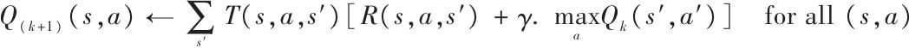
一旦有了最优Q值，定义最优策略（标记为π*（s））就非常简单：当代理在状态s时，应该选择具有最高Q值的行为： 。
让我们将该算法应用到图16-8所示的MDP中。首先，需要定义MDP：
代码详情
1 | nan=np.nan # represents impossible actions |
现在，运行Q值迭代算法：
代码详情
1 | Q = np.full((3, 3), -np.inf) # -inf for impossible actions |
所得到的Q值如下所示：
代码详情
1 | >>> Q |
这给出了折扣率为0.95时，该MDP的最优策略：状态s 0 时选择行为a 0 ，状态s 1 时选择行为a 2 （通过火焰！），状态s 2 时选择行为a 1
（唯一可能的行为）。有趣的是，当折扣率降低为0.9时，最优策略改变为：状态s 1 时最佳行为变为a 0
（保持状态，不通过火焰）。这是有道理的，相比于未来如果更看中现在的价值，那么未来回报的前景就不值得立即付出。
[1] “A Markovian Decision Process”，R.Bellman（1957）。
时间差分学习与Q学习
具有离散行为的强化学习问题通常可以建模为马尔可夫决策过程，但是最初时代理不知道转换概率是什么（它不知道T（s，a，s’）），也不知道回报将是什么（不知道R（s，a，s’））。代理必须至少经历一次每一个状态和每一个转换才能知道回报，如果需要对转换概率进行合理的估计，它必须多次体验上述过程。
时间差分学习（Temporal Difference Learning，TD学习）算法与价值迭代算法非常相似，但是考虑到代理可能仅具有部分MDP知识，进行了调整。通常，我们假设初始时代理只知道可能的状态和行为。它使用一个探索策略（例如，纯随机测试）来探索MDP，然后随着它的进展，TD学习算法根据实际观察到的转换和回报更新估计的状态值（见公式16-4）。
公式16-4：TD学习算法
·α是学习率（例如：0.01）
TD学习算法与梯度下降算法有许多相似之处，特别是一次只处理一个样本。与SGD相似，如果逐渐减小学习率，它才会真正收敛，否则就会保持在最佳状态附近。
对每个状态s，该算法简单地持续跟踪代理离开该状态时获得的即时回报的平均值，加上期望以后得到的回报（假设行为最佳）。
类似地，Q学习算法是对Q值算法在初始状态时转换概率和回报未知情况下的调整（见公式16-5）。
公式16-5：Q学习算法
对于每一个状态-行为对（s，a），该算法持续跟踪代理通过行为a离开状态s时的平均回报，加上以后的期望回报。由于目标策略会采取最佳行为，所以对于下一个状态采用最大的Q值预估值。
下面介绍如何实现Q学习算法：
代码详情
1 | import numpy.random as rnd |
给定足够的迭代数，该算法会收敛到最优Q值。因为被训练的算法不是执行的那个，所以该算法称为离线策略（off-policy）算法。令人惊讶的是，该算法能根据代理的随机行为学习最佳策略（想象一下你跟一个猴子老师学习打高尔夫球）。我们能做得更好吗？
探索策略
当然，只有在探索策略充分发掘MDP时，Q学习算法才能奏效。尽管随机策略能够保证最终多次访问每个状态和每种变换，但是做到这些可能会花费特别长的时间。因此，一个更好的选择是使用ε-greedy策略：在每一步它以概率ε选择随机行动或以概率1-ε选择贪婪行动（选择具有最高Q值的行为）。与完全随机策略相比，ε-greedy策略的优点是它将花费越来越多的时间探索环境中有趣的部分，因为Q值估计变得越来越好，同时还花费一些时间访问MDP未知区域。常见的方式是ε从大的值开始（例如，1.0），然后逐渐减小（比如，减小到0.05）。与其依赖于机会做探索，还不如鼓励探索策略尝试它以前没有尝试过的行为。它可以作为额外值加到Q值的估计上来实现，如公式16-6所示。
公式16-6：使用探索函数的Q学习
·N（s’，a’）计算在状态s’时选择行为a’的次数。
·f（q，n）是探索函数，如f（q，n）=q+K/（1+n），K是好奇度超参数，用于测量代理被吸引到未知的次数。
逼近Q学习
Q学习的主要问题是不能很好地扩展到具有大量状态和行为的大型（甚至中型）MDP中。考虑使用Q学习来玩吃豆人游戏（Ms.Pac-Man）。有250颗豆子供吃豆人吃，每个豆子有存在或不存在（即已经被吃了）两种状态。所以可能的状态数大于2 250 ≈10 75
（考虑只有豆子存在的可能状态）。这比可观察到的宇宙中的原子还要多，所以绝对没有办法跟踪每个Q值的状态。
解决方案是使用可管理的参数数量来找到一个逼近Q值的函数。这就是所谓的逼近Q学习。多年来，推荐使用从状态提取的手工特征的线性组合（例如，最接近幽灵的距离，及其方向等）来估计Q值，但是DeepMind显示使用深度学习网络会工作得更好，尤其是对复杂问题，并且不需要任何的工程特征。用来估计Q值的DNN称为深度Q网络（DQN），使用DQN进行逼近Q学习称为深度Q学习。
本章剩余的部分将使用深度Q学习来训练一个玩吃豆人游戏的代理，就像DeepMind在2013年做的那样。通过简单的调整该代码可以学习玩大部分的Atari游戏，而且玩得相当好。在大多数行为游戏中，它都可以达到超人的技能，但是它不擅长具有长时间故事情节的游戏。
使用深度Q学习玩吃豆人游戏
因为使用Atari游戏环境，所以首先安装OpenAI gym的Atari依赖。当处于这种环境时，也需要安装其他可能想玩的OpenAI gym的依赖。在Mac OS上，假如已经安装了Homebrew（ http://brew.sh/ ），仅需要运行：
代码详情
1 | $ brew install cmake boost boost-python sdl2 swig wget |
在Ubuntu上，输入如下命令（如果使用Python 2，使用python来代替python3）：
代码详情
1 | $ apt-get install -y python3-numpy python3-dev cmake zlib1g-dev libjpeg- |
然后安装Python的其他模块：
代码详情
1 | $ pip3 install --upgrade 'gym[all]' |
如果一切顺利，应该就可以创建吃豆人游戏环境了：
代码详情
1 | >>> env = gym.make("MsPacman-v0") |
正如你所看到的，这里有九个可用的离散操作，对应操纵杆中9个可能的位置（左、右、上、下、中间、左上，等等），观察值是Atari屏幕的截图（如图16-9左图所示），代表3D NumPy数组。这些图片有点大，所以我们将创建一个小的预处理函数，来裁剪图片并将其压缩到88×80像素，将其转换为灰度，并提高吃豆人游戏的对比度。这将减小DQN所需的计算量，并加速训练。
代码详情
1 | mspacman_color = np.array([210, 164, 74]).mean() |
预处理的结果显示见图16-9（右）。
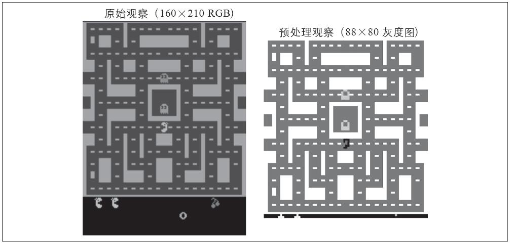
图16-9：吃豆人游戏观察值，原始值（左）和预处理后的值（右）
下面来创建DQN。它可能只需要一个状态-行为对（s，a）作为输入，并输出一个根据Q值Q（s，a），但是因为行为是离散的，使用神经网络更为方便，只需要一个状态s作为输入，并输出每个行为的Q值估计。DQN由三个卷积层组成，后面跟着两个全连接层，包括输出层（见图16-10）。
可以看到，我们使用的训练算法需要结构相同的两个DQN（但是参数不同）：一个用于在训练期间驾驭吃豆人（演员），另一个观察演员并从实验和错误中学习（评论家）。我们将定期复制评论家到演员。由于需要两个相同的DQN，我们将创建一个q_network（）函数来构建它们：
图16-10：玩吃豆人游戏的深度Q网络
代码详情
1 | from tensorflow.contrib.layers import convolution2d, fully_connected |
该代码的第一部分是定义DQN结构的超参数。然后使用q_network（）函数创建DQN，采用环境状态X_state作为输入和环境范围的名称。注意因为计划没有隐藏状态（除了闪烁状态和幽灵的方向），只用一个观察者来表示环境状态。
trainable_vars_by_name字段收集了该DQN的所有可训练变量。当创建复制评论家DQN到演员DQN的操作时，它将即时有用。字段的key是变量的名称去掉与之作用域名称对应的前缀。如下所示：
代码详情
1 | >>> trainable_vars_by_name |
现在，我们来创建输入占位符，两个DQN，以及复制评论家DQN到演员DQN的操作：
代码详情
1 | X_state = tf.placeholder(tf.float32, shape=[None, input_height, |
让我们退一步：现在有两个DQN，它们都能够将环境状态（即预处理过的观察值）作为输入，并输出该状态下每个可能行为的预测Q值。另外，还有一个名为copy_critic_to_actor的操作，复制评论家DQN的所有可训练变量到演员DQN。我们使用TensorFlow的tf.group（）函数将所有赋值操作分组到一个简单的操作中。
演员DQN用于玩吃豆人游戏（最初玩得很糟糕）。如前所述，你希望它能够彻底地探索游戏，所以通常希望它与ε-greedy策略或者其他探索策略配合使用。
但是评论家DQN呢？它将如何学习玩游戏？简单来说，它尝试将其预测的Q值与演员通过体验游戏所估计的Q值相匹配。具体来说，先让演员玩一会游戏，并在重播存储器（replay memory）中存放其所有的经验。每个存储器是一个5元组（状态、行为、下一个状态、回报、继续），当游戏结束时，“继续”值为0.0，或1.0。接下来，将定期从重播存储器中抽样一批记忆，然后从中估计Q值。最后，训练评论家DQN使用常规学习技术预测这些Q值。每次训练迭代后，复制评论家DQN到演员DQN。就这样！公式16-7显示了训练评论家DQN使用的成本函数。
公式16-7：深度Q学习成本函数
· 分别代表从重播存储器中采样的第i个记忆的状态、行为、回报和下一个状态。
·m是记忆批次的大小。
· 是评论家和演员的参数。
· 是评论家DQN对第i个记忆的状态-行为预测的Q值。
· 是演员DQN预测的Q值，如果选择行为a’，它可以根据下一个状态s’（i）预测。
·y （i） 是第i个记忆的目标Q值。注意，它等于演员实际观察的回报，加上假设发挥最优其预测的未来回报（根据它目前所知道的）。
· 是训练评论家DQN使用的成本函数。正如你看见的，它是演员DQN估计的Q值与评论家预测的这些Q值之间的均方差。
重播存储器是可选的，但强烈推荐。没有它，可能需要非常相关的连续经验训练评论家DQN。这将引入更多的误差，并减小训练算法的收敛速度。通过使用重播内存，我们确保提供给训练算法的记忆可以不相关。
让我们添加评论家DQN的训练操作。首先，需要能够计算记忆批次中每个状态-行为的预测Q值。因为DQN为每个可能的行为输出一个Q值，我们需要保留与该记忆实际选择的行为对应的Q值。为此，我们将行为转换为一个单独的向量（记住，该向量是一个除了第i位是1，其他都是0的向量），并乘以Q值：其输出除了一个对应记忆行为的Q值外，其他都是0。然后对其求和，得到想要的每个记忆的Q值。
代码详情
1 | X_action = tf.placeholder(tf.int32, shape=[None]) |
假设目标Q值将通过占位符提供，接下来添加训练操作。同样创建了一个名为global_step的常量。优化器的minimize（）操作将负责增加它。我们创建通常的初始化（init）操作和守护程序（Saver）。
代码详情
1 | y = tf.placeholder(tf.float32, shape=[None, 1]) |
这是构建阶段。在进入执行阶段之前，我们需要一系列工具。首先，开始实现重播存储器。我们将使用双向队列，因为在达到最大内存时，它可以有效地将元素推送到队列，并从队列末尾弹出。同样，写一个小函数从重播存储器中随机抽样：
代码详情
1 | from collections import deque |
接下来需要演员来探索游戏。我们使用ε-greedy策略，在50000个训练步骤里，将从1.0逐步降低到0.05：
代码详情
1 | eps_min = 0.05 |
完成了！下面开始训练。执行阶段不是很复杂，但是花费时间比较长。所以，深呼吸。预备，开始！首先，初始化一些变量：
代码详情
1 | n_steps = 100000 # total number of training steps |
接下来，打开会话并运行主要训练循环：
代码详情
1 | with tf.Session() as sess: |
如果检查列表文件是否存在，我们从恢复模型开始，否则就是正常的初始化变量。然后开始主循环，iteration记录程序开始后游戏进行的步骤总数，step记录训练开始后的训练步骤总数（如果检查点被恢复，全局步骤也被恢复）。之后将重置游戏（跳过没发生什么的第一个无意义的步骤）。接下来，演员评估该做什么，并玩游戏，其经验存储在重播存储器中。然后，评论家定期地（热身之后）通过训练步骤。评论家采样一下记忆，并要求演员评估下一个阶段所有行为的Q值，并使用公式16-7计算目标Q值y_val。唯一需要注意的是，我们必须用Continues向量乘以下一个状态的Q值来输出游戏结束时对应记忆的0值。接下来，运行训练操作来提供评论家预测Q值的能力。最后，定期地将评论家复制到演员，并保存模型。
不幸的是，训练非常慢：如果使用笔记本电脑进行训练，想要使得吃豆人得到不错的成绩将花费几天时间。观察学习曲线，计算每次游戏的平均回报，你会发现数据极其嘈杂。在某些情况下，很长时间内可能都没有进展，直到代理突然学会生存一段合理的时间。如前所述，一种解决方案是为模型注入尽可能多的先验知识（例如，通过预处理、回报等），还可以尝试通过训练它模仿基本策略来引导模型。在任何情况下，RL都需要很大的耐心和尝试，好在结果是令人兴奋的。
练习
1.如何定义强化学习？它和常规的监督学习或无监督学习有何区别？
2.你能想到3种本章没有提到的RL应用吗？它们的环境分别是什么吗？每个可能的行为是什么？回报是什么？
3.什么是折扣率？如果改变了折扣率，最优策略会改变吗？
4.如何度量强化学习代理的性能？
5.什么是信用分配问题？它什么时候发生？如何减轻它？
6.使用重播内存的意义是什么？
7.什么是关闭策略RL算法？
8.使用深度Q学习解决OpenAI gym的“BypedalWalker-v2”。其Q网络不需要很深。
9.使用策略梯度训练代理玩乒乓球游戏（OpenAI gym里的Pong-v0）。注意，单个观察值并不足以说明球的速度和方向。一种解决方案是一次将两个观察值传递给神经网络策略。为了降低维度、加速训练，需要对图片进行预处理（裁剪、调整大小并转换为黑白），并将其合并为单个图片（例如，通过覆盖）。
10.如果有大约100美元的闲钱，购买树莓派3加一些便宜的机器人组件，为其安装TensorFlow，就可以开始玩了！例如，你可以看看Lukas Biewald发表的一些好玩的帖子（ https://goo.gl/Eu5u28
），或者看看GoPiGo或BrickPi。通过使用策略梯度来构建一个真实的车-杆模型？或者构建一个学走路的机器人蜘蛛；当其解决某些目标时给予其回报（你需要传感器测量离目标的距离）。唯一限制你的是想象力。
参考答案详见附录A。
致谢
在完成本书的最后一章之前，我想感谢你读到了最后一段。我真诚地希望阅读本书给你带去很多乐趣，希望它对你的项目有用。
如果发现错误，请反馈给我。我更想知道你的想法，不要犹豫，请通过O’Reilly或者GitHub项目ageron/handson-ml联系我。
展望未来，我对你最好的建议是练习、再练习：使用Jupyter笔记本尝试完成所有你还没有做的练习，加入Kaggle.com或其他ML社区，观看ML课程，阅读文献，参加会议，拜会专家。你可能还需要研究本书之外的一些话题，包括推荐系统、聚类算法、异常检测算法和遗传算法。
我最大的愿望是这本书能够激励你构建一个惠及所有人的ML应用，它将会是什么呢？
Aureélien Geéron，2016年11月26日
附录A 练习答案
代码相关练习的答案可以在Jupyter笔记本中获得： https://github.com/ageron/handson-ml 。
第1章：机器学习概览
1.机器学习是一门能够让系统从数据中学习的计算机科学。
2.机器学习非常利于：不存在已知算法解决方案的复杂问题，需要大量手动调整或是规则列表超长的问题，创建可以适应环境波动的系统，以及帮助人类学习（比如数据挖掘）。
3.被标记的训练集是指包含每个实例所期望的解决方案的训练集。
4.最常见的两个监督式任务是回归和分类。
5.常见的无监督式任务包括聚类、可视化、降维和关联规则学习。
6.如果想让机器人学会如何在各种未知地形上行走，强化学习可能表现最好，因为这正是一个典型的强化学习擅长解决的问题。将这个问题表达为监督式或半监督式学习问题也可以，但还是有点不太自然。
7.如果你不知道如何定义分组，那么可以使用聚类算法（无监督式学习）将相似的顾客分为一组。但是，如果你知道想要的是什么样的群组，那么可以将每个组的多个示例反馈给分类算法（监督式学习），它就可以将所有的顾客归类到这些组中。
8.垃圾邮件检测是个典型的监督式学习问题：将邮件和它们的标签（垃圾邮件或非垃圾邮件）一起提供给算法。
9.在线学习系统可以进行增量学习，与批量学习系统正好相反。这使得它能够快速适应不断变化的数据和自动化系统，并且能够在大量的数据上进行训练。
10.核外算法可以处理计算机主内存无法应对的大量数据。它将数据分割成小批量，然后使用在线学习技术从这些小批量中学习。
11.基于实例的学习系统通过死记硬背来学习训练数据，当给定一个新实例时，它会使用相似度度量来找到与之最相似的实例，并用它们进行预测。
12.模型有一个或多个参数，这些参数决定了模型对新的给定实例会做出怎样的预测（比如，线性模型的斜率）。学习算法试图找到这些参数的最佳值，使得该模型能够很好地泛化至新实例。超参数是学习算法本身的参数，不是模型的参数（比如，要应用的正则化数量）。
13.基于模型的学习算法搜索使模型泛化最佳的模型参数值。通常通过使成本函数最小化来训练这样的系统，成本函数衡量的是系统对训练数据的预测有多坏，如果模型有正则化，则再加上一个对模型复杂度的惩罚。学习算法最后找到的参数值就是最终得到的预测函数，只需要将实例特征提供给这个预测函数即可进行预测。
14.机器学习面临的一些主要挑战是：数据缺乏、数据质量差、数据不具代表性、特征不具信息量、模型过于简单对训练数据拟合不足，以及模型过于复杂对训练数据过度拟合。
15.如果模型在训练数据上表现很好，但是对新实例的泛化能力很差，那么该模型很可能过度拟合训练数据（或者在训练数据上运气太好）。可能的解决方案是：获取更多数据，简化模型（选择更简单的算法、减少使用的参数或特征数量、对模型正则化），或者是减少训练数据中的噪声。
16.在模型启动至生产环境之前，使用测试集来估算模型在新实例上的泛化误差。
17.验证集用来比较不同模型。它可以用来选择最佳模型和调整超参数。
18.如果使用测试集来调整超参数，会有过度拟合测试集的风险，最后测量的泛化误差会过于乐观（最后启动的模型性能比预期的要差）。
19.通过交叉验证技术，可以不需要单独的验证集实现模型比较（用于模型选择和调整超参数）。这节省了宝贵的训练数据。
第2章：端到端的机器学习项目
参见Jupyter笔记本： https://github.com/ageron/handson-ml 。
第3章：分类
参见Jupyter笔记本： https://github.com/ageron/handson-ml 。
第4章：训练模型
1.如果训练集有数百万个特征，你可以使用随机梯度下降或者是小批量梯度下降，如果内存允许，甚至可以使用批量梯度下降。但是由于计算复杂度随着特征数量的增加而快速提升（比二次方还高），因此不能使用标准方程的方法。
2.如果训练集的特征数值具有非常迥异的尺寸比例，成本函数将呈现为细长的碗状，这导致梯度下降算法将耗费很长时间来收敛。要解决这个问题，需要在训练模型之前先对数据进行缩放。值得注意的是，使用标准方程法，不经过特征缩放也能正常工作。
3.训练逻辑回归模型时，梯度下降不会陷入局部最小值，因为它的成本函数是凸函数。 [1]
4.如果优化问题是凸的（例如线性回归或者逻辑回归），并且学习率也不是太高，那么所有梯度下降算法都可以接近全局最优，最终生成的模型都非常相似。但是，除非逐渐降低学习率，否则随机梯度下降和小批量梯度下降都不会真正收敛。相反，它们会不断在全局最优的附近波动。也就是说，即使运行时间非常长，这些梯度下降算法产生的模型仍然会有轻微不同。
5.如果验证误差开始每轮上升，那么可能性之一是学习率太高，算法开始发散所致。如果训练误差也开始上升，那么很显然你需要降低学习率了。但是，如果训练误差没有上升，那么模型很可能过度拟合训练集，应该立刻停止训练。
6.无论是随机梯度下降还是小批量梯度下降，由于它们的随机性，使得它们都不能保证在每一次的训练迭代中都取得进展。所以，如果在验证误差刚开始上升时就停止训练，很有可能会在达到最优之前过早停止训练。更好的方法是定时保存模型，当较长一段时间都没有改善时（意味着可能不会再超过最好的记录了），可以恢复到保存的最优模型。
7.随机梯度下降的训练迭代最快，因为它一次只考虑一个训练实例，所以通常来说，它会最快到达全局最优的附近（或者是批量非常小的小批量梯度下降）。但是，只有批量梯度下降才会经过足够长时间的训练后真正收敛。对于随机梯度下降和小批量梯度下降来说，除非逐渐调低学习率，否则将一直围绕最小值上上下下。
8.如果验证误差远高于训练误差，可能是因为模型过度拟合训练集。解决这个问题的方法之一是对多项式降阶：自由度越低的模型，过度拟合的可能性越低。另一个方法是对模型进行正则化——例如，在成本函数中增加2（岭回归）或1（Lasso回归）惩罚，同样可以降低模型的自由度。最后，你还可以尝试扩大训练集。
9.如果训练误差和验证误差相近，并且都非常高，则模型很可能对训练集拟合不足。这意味着偏差较高，应该尝试降低正则化超参数。
10.我们来看看：
·有正则化的模型通常比没有正则化的模型表现得更好，所以应该优先选择岭回归而不是普通的线性回归。 [2]
·Lasso回归使用1惩罚函数，往往倾向于将不重要的特征权重降至零。这将生成一个除了最重要的权重之外，其他所有权重都为零的稀疏模型。这是自动执行特征选择的一种方法，如果你觉得只有少数几个特征是真正重要的，这不失为一个非常好的选择，但是当您不确定的时候，应该更青睐岭回归模型。
·弹性网络比Lasso更受欢迎，因为某些情况下Lasso可能产生异常表现（例如当多个特征强相关，或者特征数量比训练实例多时）。并且，弹性网络会添加一个额外的超参数来对模型进行调整。如果你想使用Lasso，只需要将弹性网络的l1_ratio设置为接近1即可。
11.要将图片分类为户外/室内和白天/夜间，你应该训练两个逻辑回归分类器，因为这些类别之间并不是排他的（存在四种组合）。
12.参见Jupyter笔记本： https://github.com/ageron/handson-ml 。
第5章：支持向量机
1.支持向量机的基本思想是拟合类别之间可能的、最宽的“街道”。换言之，它的目的是使决策边界之间的间隔最大化，从而分隔出两个类别的训练实例。SVM执行软间隔分类时，实际上是在完美分类和拟合最宽的街道之间进行妥协（也就是允许少数实例最终还是落在街道上）。还有一个关键点是在训练非线性数据集时，记得使用核函数。
2.支持向量机的训练完成后，位于“街道”（参考上一个答案）之上的实例被称为支持向量，这也包括处于边界上的实例。决策边界完全由支持向量决定。非支持向量的实例（也就是街道之外的实例）完全没有任何影响，你可以选择删除它们然后添加更多的实例，或者是将它们移开，只要一直在街道之外，它们就不会对决策边界产生任何影响。计算预测结果只会涉及支持向量，而不涉及整个训练集。
3.支持向量机拟合类别之间可能的、最宽的“街道”（参考第一题答案），所以如果训练集不经缩放，SVM将趋于忽略值较小的特征（见图5-2）。
4.支持向量机分类器能够输出测试实例与决策边界之间的距离，你可以将其用作信心分数。但是这个分数不能直接转化成类别概率的估算。如果创建SVM时，在Scikit-Learn中设置probability=True，那么训练完成后，算法将使用逻辑回归对SVM分数进行校准（对训练数据额外进行5-折交叉验证的训练），从而得到概率值。这会给SVM添加predict_proba（）和predict_log_proba（）两种方法。
5.这个问题仅适用于线性支持向量机，因为核SVM只能使用对偶问题。对于SVM问题来说，原始形式的计算复杂度与训练实例的数量成正比，而其对偶形式的计算复杂度与某个介于m2和m3之间的数量成正比。所以如果实例的数量以百万计，一定要使用原始问题，因为对偶问题会非常慢。
6.如果一个使用RBF核训练的支持向量机对训练集拟合不足，可能是由于过度正则化导致的。您需要提升gamma或C（或同时提升二者）来降低正则化。
7.我们把硬间隔问题的QP参数定义为H’、f’、A’及b’。软间隔问题的QP参数还包括m个额外参数（n p =n+1+m）及m个额外约束（n c =2m）。它们可以这样定义：
·H等于在H右侧和底部分别加上m列和m行个0：
·f等于有m个附加元素的f’，全部等于超参数C的值
·b等于有m个附加元素的b’，全部等于0
·A等于在A’的右侧添加一个m×m的单位矩阵I m ，在这个单位矩阵的正下方再添加单位矩阵-I m ，剩余部分为0：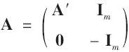
对于练习8至练习10的解答，参见Jupyter笔记本： https://github.com/ageron/handson-ml 。
第6章：决策树
1.一个包含m个叶节点的均衡二叉树的深度等于log 2 （m）（注：log 2 表示以2为底的log函数，log 2
（m）=log（m）/log（2）。）的四舍五入。通常来说，二元决策树训练到最后大体都是平衡的，如果不加以限制，最后平均每个叶节点一个实例。因此，如果训练集包含一百万个实例，那么决策树深度约等于log 2 （10 6 ）≈20层（实际上会更多一些，因为决策树通常不可能完美平衡）。
2.一个节点的基尼不纯度通常比其父节点低。这是通过CART训练算法的成本函数确保的。该算法分裂每个节点的方法，就是使其子节点的基尼不纯度的加权之和最小。但是，如果一个子节点的不纯度远小于另一个，那么也有可能使子节点的基尼不纯度比其父节点高，只要那个不纯度更低的子节点能够抵偿这个增加即可。举例来说，假设一个节点包含4个A类别的实例和1个B类别的实例，其基尼不纯度等于 。现在我们假设数据集是一维的，并且实例的排列顺序如下：A，B，A，A，A。你可以验证，算法将在第二个实例后拆分该节点，从而生成两个子节点所包含的实例分别为A，B和A，A，A。第一个子节点的基尼不纯度为 ，比其父节点要高。这是因为第二个子节点是纯的，所以总的加权基尼不纯度等于， 低于父节点的基尼不纯度。
3.如果决策树过度拟合训练集，降低max_depth可能是一个好主意，因为这会限制模型，使其正则化。
4.决策树的优点之一就是它们不关心训练数据是否缩放或是集中，所以如果决策树对训练集拟合不足，缩放输入特征不过是浪费时间罢了。
5.决策树的训练复杂度为O（n×mlog（m））。所以，如果将训练集大小乘以10，训练时间将乘以K=（n×10m×log（10m））/（n×m×log（m））=10×log（10m）/log（m）。如果m=10 6 ，那么K≈11.7，所以训练1000万个实例大约需要11.7小时。
6.只有当数据集小于数千个实例时，预处理训练集才可以加速训练。如果包含100000个实例，设置presort=True会显著减慢训练。
对于练习7和练习8的解答，参见Jupyter笔记本： https://github.com/ageron/handson-ml 。
第7章：集成学习和随机森林
1.如果你已经训练了五个不同的模型，并且都达到了95％的精度，你可以尝试将它们组合成一个投票集成，这通常会带来更好的结果。如果模型之间非常不同（例如，一个SVM分类器，一个决策树分类器，以及一个Logistic回归分类器等），则效果更优。如果它们是在不同的训练实例（这是bagging和pasting集成的关键点）上完成训练，那就更好了，但如果不是，只要模型非常不同，这个集成仍然有效。
2.硬投票分类器只是统计每个分类器的投票，然后挑选出得票最多的类别。软投票分类器计算出每个类别的平均估算概率，然后选出概率最高的类别。它比硬投票法的表现更优，因为它给予那些高度自信的投票更高的权重。但是它要求每个分类器都能够估算出类别概率才可以正常工作（例如，Scikit-Learn中的SVM分类器必须要设置probability=True）。
3.对于bagging集成来说，将其分布在多个服务器上能够有效加速训练过程，因为集成中的每个预测器都是独立工作的。同理，对于pasting集成和随机森林来说也是如此。但是，boosting集成的每个预测器都是基于其前序的结果，因此训练过程必须是有序的，将其分布在多个服务器上毫无意义。对于stacking集成来说，某个指定层的预测器之间彼此独立，因而可以在多台服务器上并行训练，但是，某一层的预测器只能在其前一层的预测器全部训练完成之后，才能开始训练。
4.包外评估可以对bagging集成中的每个预测器使用其未经训练的实例进行评估。不需要额外的验证集，就可以对集成实施相当公正的评估。所以，如果训练使用的实例越多，集成的性能可以略有提升。
5.随机森林在生长过程中，每个节点的分裂仅考虑到了特征的一个随机子集。极限随机树也是如此，它甚至走得更远：常规决策树会搜索出特征的最佳阈值，极限随机树直接对每个特征使用随机阈值。这种极限随机性就像是一种正则化的形式：如果随机森林对训练数据出现过度拟合，那么极限随机树可能执行效果更好。更甚的是，极限随机树不需要计算最佳阈值，因此它训练起来比随机森林快得多。但是，在做预测的时候，相比随机森林它不快也不慢。
6.如果你的AdaBoost集成对训练集拟合不足，可以尝试提升估算器的数量或是降低基础估算器的正则化超参数。你也可以尝试略微提升学习率。
7.如果你的梯度提升集成对训练集过度拟合，你应该试着降低学习率，也可以通过早停法来寻找合适的预测器数量（可能是因为预测器太多）。
对于练习8和练习9的解答，参见Jupyter笔记本： https://github.com/ageron/handson-ml 。
第8章：降维
1.动机和弊端：
·降维的主要动机是：
·为了加速后续的训练算法（在某些情况下，也可能为了消除噪声和冗余特征，使训练算法性能更好）
·为了将数据可视化，并从中获得洞察，了解最重要的特征
·只是为了节省空间（压缩）
·主要的弊端是：
·丢失部分信息，可能使后续训练算法的性能降低
·可能是计算密集型的
·为机器学习流水线增添了些许复杂度
·转换后的特征往往难以解释
2.维度的诅咒是指许多在低维空间中不存在的问题，在高维空间中发生。在机器学习领域，一个常见的现象是随机抽样的高维向量通常非常稀疏，提升了过度拟合的风险，同时也使得在没有充足训练数据的情况下，要识别数据中的模式非常困难。
3.一旦使用我们讨论的任意算法减少了数据集的维度，几乎不可能再将操作完美地逆转，因为在降维过程中必然丢失了一部分信息。虽然有一些算法（例如PCA）拥有简单的逆转换过程，可以重建出与原始数据集相似的数据集，但是也有一些算法不能实现逆转（例如T-SNE）。
4.对大多数数据集来说，PCA可以用来进行显著降维，即便是高度非线性的数据集，因为它至少可以消除无用的维度。但是如果不存在无用的维度（例如瑞士卷），那么使用PCA降维将会损失太多信息。你希望的是将瑞士卷展开，而不是将其压扁。
5.这是个不好回答的问题，它取决于数据集。我们来看看两个极端的例子。首先，假设数据集是由几乎完全对齐的点组成的，在这种情况下，PCA可以将数据集降至一维，同时保留95%的差异性。现在，试想数据集由完全随机的点组成，分散在1000个维度上，在这种情况下，需要在1000个维度上保留95%的差异性。所以，这个问题的答案是：取决于数据集，它可能是1到1000之间的任何数字。将解释方差绘制成关于维度数量的函数，可以对数据集的内在维度获得一个粗略的概念。
6.常规PCA是默认选择，但是它仅适用于内存足够处理训练集的时候。增量PCA对于内存无法支持的大型数据集非常有用，但是它比常规PCA要来得慢一些，所以如果内存能够支持，还是应该使用常规PCA。当你需要随时应用PCA来处理每次新增的实例时，增量PCA对于在线任务同样有用。当你想大大降低维度数量，并且内存能够支持数据集时，使用随机PCA非常有效，它比常规PCA快得多。最后对于非线性数据集，使用核化PCA行之有效。
7.直观来说，如果降维算法能够消除许多维度并且不会丢失太多信息，那么这就算一个好的降维算法。进行衡量的方法之一是应用逆转换然后测量重建误差。然而并不是所有的降维算法都提供了逆转换。还有另一种选择，如果你将降维当作一个预处理过程，用在其他机器学习算法（比如随机森林分类器）之前，那么可以通过简单测量第二个算法的性能来进行评估。如果降维过程没有损失太多信息，那么第二个算法的性能应该跟使用原始数据集一样好。
8.链接两个不同的降维算法绝对是有意义的。常见的例子是使用PCA快速去除大量无用的维度，然后应用另一种更慢的降维算法，如LLE。这样两步走的策略产生的结果可能与仅使用LLE相同，但是时间要短得多。
对于练习9和练习10的解答，参见Jupyter笔记本： https://github.com/ageron/handson-ml 。
第9章：运行TensorFlow
1.创建计算图而不是直接计算的主要优缺点是什么？
·主要优点：
·TensorFlow可以自动计算梯度（通过反向的autodiff）。
·TensorFlow负责在不同的线程中并行执行各个操作。
·它可以更容易地在多设备上运行同一个模型。
·它简化了查看，比如，在TensorBoard上查看模型。
·主要缺点：
·学习曲线陡峭。
·逐步的调试比较困难。
2.是的，语句a_val=a.eval（session=sess）和a_val=sess.run（a）完全相等。
3.语句a_val，b_val=a.eval（session=sess），b.eval（ses sion=sess）不等于a_val，b_val=sess.run（[a，b]）。第一条语句会运行两次（第一次计算a，第二次计算b），而第二条语句只运行一次。如果这些操作（或者它们依赖的操作）中的任意一个具有副作用（比如，修改一个变量，向队列中插入一条记录，或者读取一个文件等），那么效果就会不同。如果操作没有副作用，那么语句会返回同样的结果，不过第二条语句会比第一条快。
4.你无法在同一个会话中运行两个计算图。你需要将两个图合并为一个大图。
5.在本地TensorFlow中，会话用来管理变量的值，如果你创建了一个包含变量w的图g，然后启动两个线程，并在每个线程中打开一个本地的会话，这两个线程使用同一个图g，那么每个会话会拥有自己的w的拷贝。如果在分布式的TensorFlow中，变量的值则存储在由集群管理的容器中，如果两个会话连接了同一个集群，并使用同一个容器，那么它们会共享变量w。
6.变量在调用其初始化器的时候被初始化，在会话结束的时候被销毁。在分布式TensorFlow中，变量存活于集群上的容器中，所以关闭一个会话不会销毁变量。要销毁一个变量，你需要清空它所在的容器。
7.变量和占位符完全不同，不过初学者往往会混淆它们：
·变量是包含一个值的操作。你执行一个变量，它会返回对应的值。在执行之前，你需要初始化变量。你可以修改变量的值（比如，通过使用赋值操作）。变量有状态：在连续运行图时，变量保持相同的值。通常它被用作保存模型的参数，不过也可以用作其他用途（比如，对全局训练的步数进行计数）。
·占位符则只能做很少的事儿：它们只有其所代表的张量的类型和形状的信息，但没有值。事实上，如果你要对一个依赖于占位符的操作进行求值，你必须先为其传值（通过feed_dict），否则你会得到一个异常。占位符通常在被用作在执行期为训练或者测试数据传值。在将值传递给赋值节点以更改变量的值时（例如，模型的权重），占位符也很有用。
8.如果运行计算图来求值一个依赖于占位符的操作，但不提供值，则会发生异常。如果操作不依赖于占位符，则不会引发异常。
9.当你运行一个图时，可以提供任何操作的输出值，而不仅仅是占位符的值。在实践中，这种情况很少见（有时候会是有用的，比如你要缓存冷冻层的输出时，详见第11章）。
10.你可以在构造一个图时指定变量的初始值，它会在后边的执行期运行变量初始化器的时候被初始化。如果你想在执行期修改变量的值，那么最简单的方式是使用tf.assign函数创建一个赋值节点（在图的构造期），将变量和一个占位符传入作为参数。这样，你可以在执行期运行复制操作来为变量传入新值。
代码详情
1 | import tensorflow as tf |
11.要计算任意数量变量的成本函数的梯度，反向模式的autodiff算法（由TensorFlow实现）只需要遍历两次图。作为对比，正向模式的autodiff算法需要为每个变量运行一次（如果我们需要10个不同变量的梯度，那么就需要执行10次）。对于符号微分，它会建立一个不同的图来计算梯度，所以根本不会遍历原来的图（除了在建立新的梯度图时）。一个高度优化的符号微分系统可能只需要运行一次新的梯度图来计算和所有变量相关的梯度，但与原始图相比，新的图可能是非常复杂和低效的。
12.见 https://github.com/ageron/handson-ml的Jupyter 笔记本。
第10章：人工神经网络简介
1.这是基于原生人造神经元来计算A⊕B（⊕表示计算异或）的神经网络，A⊕B=（A∧ B）∨（ A∧B）。当然还有其他做法，比如使用A⊕B=（A∨B）∧
（A∧B），或者A⊕B=（A∨B）∧（ A∨∧B），等等。
2.经典的感知器只有在数据集是线性可分的情况下才会收敛，并且不能估计分类的概率。作为对比，逻辑回归分类器即使在数据集不是线性可分的情况下也可以很好地收敛，而且还能输出分类的概率。如果你将感知器的激活函数修改为逻辑激活函数（或者如果有多个神经元的时候，采用softmax激活函数），然后训练其使用梯度下降（或者使成本函数最小化的一些其他优化算法，通常是交叉熵法），那么它就会变为一个逻辑回归分类器了。
3.逻辑激活函数是训练第一个MLP的关键因素，因为它的导数总是非零的，所以梯度下降总是可以持续的。当激活功能是一个阶梯函数时，渐变下降就不能再持续了，因为这时候根本没有斜率。
4.阶梯函数、逻辑函数、双曲正切、线性整流函数，如图10-8所示。有关其他示例，请参阅第11章，例如ELU和ReLU的其他变体。
5.考虑问题中描述的MLP：假设你有这样一个MLP，其输入层由10个透传神经元组成，然后是一个隐藏层，有50个人造神经元，最后是一个输出层，有3个人造神经元。所有的人造神经元都使用ReLU激活函数。
·输入矩阵X的形状是m×10，其中m代表训练批量的大小。
·隐藏层的权向量W h 的形状为10×50，其偏向量b h 的长度为50。
·输出层的权向量W o 的形状为50×3，其偏向量b o 的长度为3。
·输出矩阵Y的形状是m×3。
·Y=（X·W h +b h ）·W o +b o 。注意，当你将一个偏向量添加到一个矩阵时，它将被添加到矩阵中的每一行，这就是所谓的广播。
6.要将电子邮件分类为垃圾邮件和正常邮件，你只需要在神经网络的输出层中使用一个神经元，例如，指出电子邮件是垃圾邮件的概率。估算概率时，通常会在输出层使用逻辑激活函数。如果你想要解决MNIST问题，则需要输出层中有10个神经元，并且必须用可以处理多个分类的softmax激活函数替换逻辑函数，为每个分类输出一个概率。如果你想让你的神经网络像第2章那样预测房价，那么你需要一个输出神经元，而在输出层则无须使用激活函数。 [3]
7.反向传播是一种用于训练人工神经网络的技术。它首先计算关于每个模型参数（所有的权重和偏差）的成本函数的梯度，然后使用这些梯度执行梯度下降。这种反向传播步骤通常执行数千次或数百万次，并需要多个训练批次，直到模型参数收敛到最小化成本函数的值为止。为了计算梯度，反向传播使用反向模式autodiff（尽管在反向传播被发明的时候还不叫autodiff，事实上autodiff的概念已经被重新发明了多次）。反向模式的autodiff会先在计算图上正向执行一次，计算当前训练批次的每个节点的值，然后反向执行一次，一次性计算所有梯度（详见附录D）。那和反向传播有什么区别呢？反向传播是指使用多个反向传播步骤来训练人工神经网络的全部过程，每个步骤计算梯度并使用它们执行梯度下降过程。相反，反向模式autodiff只是一种简单的计算梯度的技术，只是恰好被反向传播使用了而已。
8.这里列出了所有可以在基本MLP中调整的超参数：隐藏层的数量，每个隐藏层中神经元的数量，以及每个隐藏层和输出层中使用的激活函数。 [4] 一般情况下，ReLU激活函数（或其中的一个变体，请参阅第11章）是隐藏层的一个很好的默认值。对于输出层，通常需要二分分类的逻辑激活函数，多类分类的softmax激活函数，在做回归时则无须任何激活函数。
如果MLP对训练数据有过度拟合，可以尝试减少隐藏层的数量，并减少每个隐藏层的神经元数量。
9.见 https://github.com/ageron/handson-ml的Jupyter 笔记本。
第11章：训练深度神经网络
1.不，所有权重需要独立处理，它们不可以初始化为统一值。随机取样权重一个重要的目的是破坏对称性：如果所有的权重具有相同的初始值，即使该值不为0，对称性也无法被破坏（即一层中所有神经元都是一样的），并且反向传播将无法破坏它。具体来说，这就意味着一层中所有神经元始终保持相同的权重。就像每层只有一个神经元，而且要慢得多。这样的配置是无法收敛到一个好的解决方案的。
2.当然可以设置为0。有些人喜欢像初始化权重一样处理偏差项，这样也是可以的，没有太大的区别。
3.ELU相对于ReLU的几个优势：
·它可以使用负值，所以相比使用ReLU激活方程（从不输出负值），某一给定层的神经元输出平均值理论上更容易接近0。这样有助于缓解梯度消失问题。
·它总是有一个非零的导数，可以避免影响ReLU单元的单元消失问题。
·它在任何地方都是平滑的，而在z=0时，ReLU的梯度突然从0跳至1。这个突然的变化会引起在z=0附近摆动，从而可以缓解梯度下降。
4.ELU激活函数是一个不错的默认选择。如果对神经网络的速度要求很高，可以用leaky ReLU的一个变种（即使用默认超参数值的leaky ReLU）。这是因为ReLU激活函数简单方便，所以很多人会将其作为首选，即使输出表现会被ELU和leaky ReLU超过。但是，某些情况下，ReLU激活函数的精确输出能力是有用的（见第15章）。如果你需要输出一个介于-1和1之间的数，tanh在输出层会比较有效，但是现在在隐藏层的使用频度并不高。在你需要评估可能性（比如二进制分类）时，逻辑激活函数在输出层比较有效，但是同样在隐藏层中很少使用（也有例外，比如，变分自动编码器的编码层，见第15章）。最后softmax激活函数在输出层输出互相排斥类的概率是有效的，但是除了（或者曾经）隐藏层以外基本不使用。
5.如果使用MomentumOptimizer时，将动量超参数设置得太接近1（比如：0.99999），算法就会提速很高，偏向全局最小值，但是接着会经过最小值。之后就会慢慢降速回落，再加速，再超调，循环往复。这种方式在收敛前会振荡好几次，所以总体来说，收敛速度会比用小动量慢。
6.一种实现稀疏模型的方法（即大多数权重等于0）是正常训练一个模型，然后将小权重设置为0。为了更稀疏，可以在训练过程中应用1正则化，这样可以促使优化器更加稀疏。第三种方式是使用TensorFlow的FTRLOptimizer类将1正则化和对偶平均相结合。
7.是的，dropout会减慢训练速度，一般降为原速度的一半。但是，因为只是在训练期间使用所以对于预测没有影响。
练习8至练习10的解决方案，请参见Jupyter笔记本： https://github.com/ageron/handson-ml 。
第12章：跨设备和服务器的分布式TensorFlow
1.当TensorFlow进程启动时，会抓取所有可见的GPU设备上的所有可用内存，所以如果在启动TensorFlow程序时得到一个CUDA_ERROR_OUT_OF_MEMORY，这可能意味着其他正在运行的进程已经占用至少一个可见的GPU设备的所有内存（最有可能是另一个TensorFlow进程）。为了解决这个问题，一个简单的解决方案是停止其他进程，然后重试。但是，如果你需要同时运行所有的进程，一个简单的方法是通过为每个设备适当地设置CUDA_VISIBLE_DEVICES环境变量来为每个进程分配不同的设备。另一个方法是通过创建一个ConfigProto，设置gpu_options.per_process_gpu_memory_fraction为它应该占用的总内存的比例（例如0.4），来配置TensorFlow只抓取GPU内存的一部分，而不抓取所有的内存，并在打开会话时使用此ConfigProto。最后一个方法是让TensorFlow只在需要的时候抓取内存，可以通过设置gpu_options.allow_growth为True来实现。但是，最后一个方法平时并不推荐，因为TensorFlow抓取的内存并不释放，而且很难保证是一个重复性的行为（可能会有一些竞争条件，具体取决于哪些进程先开始，训练中需要多少内存，等等）。
2.通过固定一个操作在一个设备上，其实就是告诉TensorFlow你希望这个操作在这里进行。但是，有些限制条件可能会阻止TensorFlow响应你的请求。举个例子，可能是没有针对该特定类型的设备的实现的操作（称为内核）。在这种情况下，TensorFlow默认会引发异常，但是你可以将其配置回CPU（这称为软配置）。另一个例子是可以修改变量的操作，这个操作和变量需要配置在一起。所以固定操作和放置操作之间的区别在于，固定是你告知TensorFlow（“请将此操作放在GPU#1上”），而放置是TensorFlow实际上最终做的事情（“对不起，退回到CPU”）。
3.当你正在运行一个支持GPU的TensorFlow的安装过程，而且使用的是默认配置，如果所有操作有一个GPU内核（即一个GPU实现），那么，它们会全部被放置在第一个GPU上。但是，如果一个或多个操作没有GPU内核，默认情况下TensorFlow会抛出异常。如果你设置TensorFlow回退到CPU（软配置），那么所有操作会被放置在除去所有没有GPU内核的第一个GPU上，包括这些操作之前所有的配置（见之前练习的答案）。
4.是的，如果你固定一个变量到”/gpu：0”，它可以被/gpu：1上放置的操作使用。TensorFlow会自动处理添加适当操作以跨设备传输变量值。对于跨服务器的设备也是一样（只要它们还是统一集群的一部分）。
5.是的，同一设备上的两个操作可以并行运行：只要没有操作需要依赖另一个操作的输出，TensorFlow就会自动处理并行的操作（在不同的CPU内核或不同GPU线程中）。另外，你可以在并行的线程（或进程）中启动多个会话，评估每一个线程的操作。因为会话都是独立的，所以TensorFlow可以并行评估一个会话的任何操作，以及其他会话的任一操作。
6.如果你想推迟一个操作X直到其他一些操作被执行之后再执行，即使这些操作不需要计算X，那么你就需要使用控制依赖。控制依赖在以下几种场合比较有用：当X占用大量内存，并且你只是在计算图形时才需要它的时候；或者是当X使用了大量I/O（例如，它需要大量位于不同设备或服务器的变量值），但是并不需要作为其他I/O饥饿操作同时运行的时候，可以用它避免带宽饱和。
7.你很幸运！在分布式TensorFlow中，变量值位于集群管理的容器中，所以即使你关闭了会话退出了客户端程序，模型参数依然会保存在集群中。你只需开启一个新会话到集群保存模型即可（确保不调用变量初始值或恢复之前的模型，因为这样会影响你的新模型！）。
练习8至练习10的解决方案，请参见Jupyter笔记本： https://github.com/ageron/handson-ml 。
第13章：卷积神经网络
1.对于图形分类，相对于全连接DNN，CNN的主要优点有以下几个方面：
·由于连续层只是部分连接的，并且高度重复使用其权重，CNN的参数比全连接的DNN少，这使得它的训练速度更快，减小了过度拟合的风险，并且需要更少的训练数据。
·当CNN学会检查某个特定特征的方法时，它可以在图片的任何部分检测到该特征。相反，DNN学习到某个位置的特征时，它只能在特定位置上检测到该特征。因为图像通知具有非常复杂的特征，所以在图像处理任务方面，例如图像分类，CNN更好推广，它使用更少的训练样本。
·最后，DNN没有关于像素是如何组织的先验知识；它不知道附近的像素是否接近。CNN的架构嵌入了这个先验知识。低层通常识别图像小区域的特征，同时高层将低层识别的特征组合为大特征。这在大多数自然图片中都可以很好地工作，使得CNN明显领先于DNN。
2.我们来计算一个CNN有多少参数。因为第一个卷积层有3×3的内核，并且输入有3个通道（红、绿、蓝），然后每个特征图具有3×3×3的权重，加上偏差系数。这样，每个特征图有28个参数。因为第一个卷积层有100个特征图，所以它总共有2800个参数。第二个卷积层有3×3的内核，其输入是上一层100个特征图的集合，所以每个特征图有3×3×100=900的权重，加上偏差系数。因为它有200个特征图，所以该层共有901×200=180200个参数。最后，第三个卷积层同样有3×3的内核，其输入是上一层200个特征图的集合，所以每个特征图有3×200=1800的权重，加上偏差系数。因为它有400个特征图，所以该层共有1801×400=720400个参数。该CNN总共有2800+180200+720400=903400个参数。
现在我们来计算一下该神经网络对单个实例进行预测时（至少）需要的内存。首先计算一下每层特征图的大小。因为我们的步幅为2，并用SAME填充，每层特征图的水平和垂直大小除以2（如果需要，向上舍入），所以输入通道有200×300像素，第一层特征图是100×150，第二层特征图是50×75，第三层特征图是25×38。因为32bits是4bytes，并且第一个卷积层有100个特征图，所以第一层占用4×100×150×100=600万byte（约5.7MB，1MB=1024KB，1KB=1024byte）。第二层大概占用4×50×75×200=300万byte（约2.9MB）。最后，第三层大约占用4×25×38×400=1520000byte（约1.4MB）。然而，一旦计算完一层，就可以释放前一层占用的内存，所以如果所有事情都是最优，只需要大约6+9=1500万byte（约14.3MB）的内存（当第二层计算完，第一层的内存还没有被释放）。但是等等，我们还需要添加CNN参数所占的内存。前面计算过它有903400个参数，每个参数使用4byte，所以需要添加3613600byte（约3.4MB）。至少所需的内存总共是18613600byte（约17.8MB）。
最后我们来计算一下当训练一个mini-batch为50张图像的CNN时需要的最小内存。训练期间，TensorFlow使用反向传播，它需要在反向传播开始前保存所有正向传播期间计算的值。所以，我们必须计算一个实例的所有层需要的总内存，并乘以50！基于这一点，我们需要计算megabyte而不是byte。之前已经计算过，对于每个实例，三层各需要5.7MB、2.9MB和1.4MB。每个实例共10.0MB。所以到目前为止，50个实例共需500MB内存。加上输入图片需要的50×4×200×300×3=3600万byte（大约34.3MB）内存，加上模型参数需要的3.4MB（之前计算的）内存，加上梯度需要的一些内存（我们将其忽略，因为在反向传播期间，其内存会因为反向传播而逐步释放）。大概需要的总内存为500+34.3+3.4=537.7MB。这是一个乐观的最低值。
3.如果GPU在训练CNN期间内存溢出，可以做如下5件事解决这个问题（除了购买有更多内存的GPU外）：
·减小小批次尺寸。
·在一层或多层中使用较大的步幅来降低维度。
·删除一层或多层。
·使用16位浮点数来代替32位浮点。
·在多个设备上分配CNN。
4.最大池化层完全没有参数，而卷积层有一些（参见之前的问题）。
5.局部响应标准化层使得神经元在同一位置强烈激活抑制的神经元，但是在相邻的特征图中，它鼓励不同特征图个性化并推动它们分开，迫使它们探索更加广泛的特征。它通常用于低层，为了拥有较大高层特征可以在上面构建的低层特征池。
6.相比于LeNet-5，AlexNet的主要创新是：（1）它更大、更深，（2）它在彼此之上添加卷积层，而不是在每个卷积层的顶部添加一个池化层。GoogLeNet的主要创新是引入初始化模块，使得它比之前的CNN框架网络层次更深、参数更少。最后，ResNet的主要创新是引入跳过连接，使得它可以在超过100层的网络中性能良好。可以说，它的简单和一致性也是一种创新。
练习7至练习10的解决方案，请参见Jupyter笔记本： https://github.com/ageron/handson-ml 。
第14章：循环神经网络
1.这里有一些RNN的应用：
·序列到序列RNN：预测天气（或者其他时间序列），机器翻译（使用编码器-解码器框架），视频字幕，语音到文本，音乐生成（或其他序列生成），识别歌曲中的和弦。
·序列到向量RNN：按照音乐题材分类音乐样本，分析书评的观点，根据读取大脑植入物预测失语病人（collaborative filtering）的思维，基于历史记录预测用户想看的电影（这是协同过滤的实现方法之一）。
·向量到序列RNN：图像字幕，根据当前收藏的音乐创建歌单，根据一组参数生成旋律，在图片中定位行人（例如，自动驾驶汽车摄像头的视频）。
2.通常来说，如果一次翻译一个单词，结果会很差。例如，法语句子“Je vous en prie”意思是“不客气”。但是，如果一次只翻译一个单词，会得到“我你在祈祷”。奇怪吗？最好读完整句话再进行翻译。一个普通的序列到序列RNN会在读完第一个单词后立即开始翻译，而编码器-解码器RNN会先读完整个句子，然后再翻译。也就是说，一个普通的RNN，当它不确定下一步该说什么时就会什么也不输出（就像人类翻译员在同声传译时做的一样）。
3.为了根据视觉内容分类视频，一个可能的框架是每秒取一帧图像，然后通过卷积神经网络运行每一帧，将输出的CNN传入一个序列到向量RNN，然后通过softmax层运行输出，得到所有类的概率。如果你还想使用音频进行分类，可以把每秒的音频转换为频谱，之后将这些频谱传入一个CNN，然后将CNN的输出传给RNN（连同其他CNN的响应输出）。
4.使用dynamic_rnn（）而不是static_rnn（）来构建RNN带来许多好处：
·它基于while_loop（）操作，可以在反向传播期间将GPU内存交互到CPU内存，从而避免了内存溢出。
·它更加易于使用，因为其采取单张量作为输入和输出（覆盖所有时间步长），而不是一个张量列表（每个时间步长一个）。不需要入栈、出栈，或转置。
·它生产的图形更小，更容易在TensorBoard中可视化。
5.为了处理可变长度的输入序列，最简单的方法是在调用static_rnn（）或dynamic_rnn（）方法时传入sequence_length参数。另一个方法是填充长度较小的输入（比如，用0填充）来使其与最大输入长度相同（这可能比第一种方法快，因为所有输入序列具有相同的长度）。为了处理可变长度的输出序列，如果事先知道每个输出序列的长度，就可以使用sequence_length参数（例如，序列到序列RNN使用暴力评分标记视频中的每一帧：输出序列和输入序列长度完全一致）。如果事先不知道输出序列的长度，则可以使用填充方法：始终输出相同大小的序列，但是忽略end-of-sequence标记之后的任何输出（在计算成本函数时忽略它们）。
6.为了在多个GPU直接分配训练并执行深度RNN，一个常用的简单技术是将每个层放在不同的GPU上。
练习7至练习9的解决方案，请参见Jupyter笔记本： https://github.com/ageron/handson-ml 。
第15章：自动编码器
1.以下是自动编码器一些主要任务：
·特征提取
·无监督的预训练
·降低维度
·生成模型
·异常检测（自动编码器在重建异常点时通常表现得不太好）
2.如果想训练一个分类器，有大量未标记的训练数据，仅有几千个已标记的实例。那么首先可以在完整的数据集（已标记和未标记）上训练一个深度自动编码器，然后重用其下半部分作为分类器（即重用上半部分作为编码层）并使用已标记的数据训练分类器。如果已标记的数据集比较小，你可能希望在训练分类器时冻结复用层。
3.事实上，能够完美重建其输入的自动编码器并不意味着它是一个好的自动编码器；也许它仅仅是一个可以复制输入到编码层，再到输出层的完备的自动编码器。事实上，即使编码层包含单个神经元，对非常深的自动编码器来说，它才可能学习将每个训练实例映射到不同的编码（比如，第一个实例可以映射到0.001，第二个映射到0.002，第三个映射到0.003，等等），它可以“用心”学习为每个编码重构正确的训练。它将在不真正学习数据中任何有用的模式的情况下完美地重建输入。在实践中，这样的映射不太可能发生，但是它说明一个事实，完美的重建并不能保证自动编码器学习到有用的东西。然而，如果产生非常差的重建，它几乎必然是一个糟糕的自动编码器。为了评估编码器的性能，一种方法是测量重建损失（例如，计算MSE，用输入的均方值减去输入）。同样，重建损失高意味着这是一个不好的编码器，但是重建损失低并不能保证这是一个好的自动编码器。你应该根据它的用途来评估自动编码器。例如，如果它用于无监督分类器的预训练，同样应该评估分类器的性能。
4.不完整的自动编码器是编码层比输入和输出层小的自动编码器。如果比其大，那就是一个完整的自动编码器。一个过度不完整的自动编码器的主要风险是：不能重建其输入。完整的自动编码器的主要风险是：它可能只是将输入复制到输出，不学习任何有用特征。
5.要将自动编码器的权重与其相应的解码层相关联，你可以简单地使得解码权重等于编码权重的转置。这将使模型参数数量减少一半，通常使得训练在数据较少时快速收敛，减小过度拟合的风险。
6.为了可视化栈式自动编码器低层学习到的特征，一个常用的技术是通过将每个权重向量重建为输入图像的大小来绘制每个神经元的权重（例如，对于MNIST，将权重向量形状[784]重建为[28，28]）。为了可视化高层学习到的特征，一种技术是显示最能激活每个神经元的训练实例。
7.生成模式是一种可以随机生成类似于训练实例的输出的模型。例如，一旦在MNIST数据集上训练成功，生成模型就可以用于随机生成逼真的数字图像。输出分布大致和训练数据类似。例如，因为MNIST包含了每个数字的多个图像，生成模型可以输出与每个数字大致数量相同的图像。有些生成模型可以进行参数化，例如，生成某种类型的输出。生成自动编码器的一个例子是变分自动编码器。
练习8至练习10的解决方案，请参见Jupyter笔记本： https://github.com/ageron/handson-ml 。
第16章：强化学习
1.强化学习是机器学习的一个领域，旨在创建在一个环境中采取行动的代理，以获得最大回报。RL和常规的有监督和无监督学习有很大的不同。主要在以下几个方面：
·有监督和无监督学习的目标是找到数据中的模式。强化学习的目标是找到好的策略。
·与有监督学习不同，代理没有明确给出正确答案。它必须经过反复试验来学习。
·与无监督学习不同，强化学习的代理有一种通过回报的监督形式。我们不告诉代理如何执行任务，而是告诉它何时取得进展，或何时失败。
·强化学习代理需要找到探索环境、寻找获得回报的新途径和利用已知回报来源之间的平衡。相反，有监督和无监督学习无须担心探索；它们仅处理提供给它们的训练数据。
·有监督和无监督学习的训练实例通常是独立的（实际上，它们通常是无序的）。在强化学习中，连续观测值通常不是独立的。在移动之前，代理可能在环境中的相同区域停留一会，所以连续观测值将是相关的。在某些情况下，使用重播内存来保证训练算法得到相对独立的观测值。
2.除了第16章介绍的几个应用之外，下面还有几个可能的强化学习应用：
个性化音乐
环境是用户的私人网络广播。代理是决定下一曲播放什么的软件。它可能的行为是播放目录中的任何歌曲（必须尝试选择用户喜欢的歌曲），或者播放广告（必须选择用户感兴趣的广告）。每次当用户收听歌曲时，它会获得一个小回报，每次当用户收听广告时获得一个大回报。当用户跳过歌曲或广告时，获得负回报，当用户直接退出时，获得一个非常大的负回报。
营销
环境是你们公司的市场部。代理是给定客户的简历和购买历史，决定活动邮件应该发给哪些客户的软件（对于每个客户，可选的行为有两个：发送或不发送）。其负回报是活动邮件的成本，正回报是此活动预计带来的收入。
产品交付
让代理控制一队送货卡车，决定应该从仓库拿什么，送去哪里，在哪里下车，等等。其正回报是每个产品被及时交付，负回报是延迟交货。
3.评估行为的值时，强化学习算法通常会累加该行为导致的所有回报，给即时回报分配较多的权重，延迟回报分配较少的权重（考虑到行为对近期的影响比远期大）。为了对此建模，通常为每个时间迭代应用一个折扣率。例如，折扣率为0.9，当估计行为的值时，两个时间步长后回报为100仅被计算为0.9 2
×100=81。可以将折扣率想象为衡量未来值相对于现在值的标杆：如果它趋近于1，那么未来值和现在值差不多。如果它趋近于0，那么只有即时回报是最重要的。当然，这会对最佳策略产生巨大影响：如果看中未来价值，为了得到最终回报，你可能愿意忍受很多现在的痛苦，如果不看中未来价值，你可能仅仅愿意获得你能找到的任何即时回报，而不关注未来。
4.为了测量强化学习代理的性能，可以简单地累加它获得的回报。你可以在模拟环境中多次运行，并查看得到的平均回报（同时，看一下最小、最大、标准偏差，等等）。
5.信用分配问题是，当一个强化学习代理获得一个回报时，它无法直接知道之前的哪个行为贡献了这些回报。该问题通常发生在行为和最终回报有很大延迟时（例如，Atari的乒乓球游戏，代理击球和赢得比赛之间可能有几十个时间步长）。缓解该问题的方法之一是，如果可能的话，为代理设置短期回报。这通常需要关于任务的先验知识。例如，如果希望构建一个学习下国际象棋的代理，那么我们应该在它每次吃了对手的棋子时就给予回报，而不是最终赢得比赛时才给予。
6.代理通常会在环境的同一个区域里停留一段时间，所以这段时间的所有经历都是相似的。这会给学习算法引入一些偏差。它可能会调整环境中该区域的策略，一旦离开该区域，性能就会变差。为了解决这个问题，可以使用重播内存；代理将基于一些过去的（最近的和不那么近的）经验进行学习，而不是仅仅使用即时经验（这也许就是我们晚上做梦的原因：重现我们白天的经验并更好地从中学习？）。
7.off-policy RL算法学习最佳策略的值（即，如果代理行为最佳，每个状态可以预期的所有折扣后回报之和），而不管代理实际如何行动。Q学习是该算法的一个例子。相反地，on-policy算法学习代理实际执行的策略获得的值，包括探索和开发。
练习8至练习10的解决方案，请参见Jupyter笔记本： https://github.com/ageron/handson-ml 。
[1] 如果在曲线上任意两点之间画一条连接线，该线永远不会穿过曲线。
[2] 此外，标准方程需要对矩阵求逆，但是矩阵并不总是可逆的。相反，岭回归矩阵永远是可逆的。
[3] 当预测值可能在多个数量级上变化时，则可能需要直接预测目标值的对数而不是目标值本身。简单地计算神经网络输出的指数可以得到估算值（自exp（log v）=v）。
[4] 在第11章中，我们讨论了引入额外超参数的许多技术：权重初始化的类型，激活函数超参数（例如leaky ReLU中的泄漏量），梯度剪裁阈值， 优化器的类型及其超参数（例如，MomentumOptimizer），每层的正则化类型，正则化超参数（例如，dropout的丢失率）等。
附录B 机器学习项目清单
该清单可以帮助你完成你的机器学习项目。主要有8步：
1.架构问题，关注蓝图。
2.获取数据。
3.研究数据以获取灵感。
4.准备数据以更好地将低层模型暴露给机器学习算法。
5.研究各种不同的模型，并列出最好的模型。
6.微调模型，并将其组合为更好的解决方案。
7.提出解决方案。
8.启动、监视、维护系统。
当然，为了满足需求，你可以随时调整这个清单。
架构问题，关注蓝图
1.用商业术语定义目标。
2.方案如何使用？
3.目前的解决方案/办法是什么？
4.应该如何架构问题（有监督/无监督，在线/离线，等等）？
5.如何测量性能？
6.性能指标是否与业务目标一致？
7.每个业务目标需要的最低性能是什么？
8.有没有一些相似的问题？能重用一些经验和工具吗？
9.有没有相关有经验的人？
10.如何手动解决此问题？
11.列出目前为止你（或其他人）的假设。
12.如果可能的话，验证假设。
获取数据
注意：尽可能的自动化，以便获取最新数据。
1.列出需要的数据及其体量。
2.查找并记录获取数据的途径。
3.检查需要的空间。
4.检查法律义务，必要时获取授权。
5.获取访问权限。
6.创建工作空间（确保具有足够的存储空间）。
7.获取数据。
8.将数据转换为可操作的格式（不改变数据本身）。
9.确保删除或保护敏感信息（例如，匿名）。
10.检查数据的类型和大小（时间序列、样本、地点等）。
11.采样一个测试数据集，放在一边，永远不要用它（没有数据窥视！）。
研究数据
注意：试着从这些步骤的领域专家那里获取灵感。
1.创建数据的副本用于研究（如果需要，可以将其抽样为可管理的大小）。
2.创建一个Jupyter笔记本来记录数据研究。
3.研究每个属性及其特征：
·名字。
·类型（分类、整型/浮点型、有界/无界、文本、结构等）。
·缺失值的百分比。
·噪音和噪音类型（随机、异常、舍入误差等）。
·可能有用的任务？
·分布类型（高斯、统一、对数等）。
4.对于有监督的学习任务，确认目标属性。
5.可视化数据。
6.研究属性之间的相关性。
7.研究如何手动解决问题。
8.确定希望使用转换。
9.确定可能有用的额外数据（回到之前的“获取数据”部分）。
10.记录学习到的东西。
准备数据
注意：
·在数据的副本上工作（保持原始数据集不变）。
·编写适用于所有数据转换的函数，原因有五个：
·可以很容易地准备下一次得到新数据时的数据。
·可以在未来的项目中使用这些转换。
·清理和准备测试数据集。
·一旦解决方案失效，用来清理和准备新数据实例。
·可以轻松地将你的准备选择作为超参数。
1.数据清理：
·修复或删除异常值（可选）。
·填充缺失值（例如，使用零、平均数、中位数等）或删除该行（或列）。
2.特征选择（可选）：
·删除不能为任务提供任何有用信息的属性。
3.在适当情况下，处理特征：
·离散连续特征。
·分解特征（如，分类、日期/时间等）。
·添加期望的特征转换（如，log（x）、sqrt（x）、x 2 等）。
·聚合特征称为期望的新特征。
列出期望的模型
注意：
·如果数据很大，可能需要采样为较小的训练集，以便于在合理的时间内训练不同的模型（注意，这会对诸如大型神经集或随机森林等复杂模型造成不利影响）。
·再次，尽可能地自动化这些步骤。
1.使用标准参数，从不同类别（例如，线性、朴素贝叶斯、SVM、随机森林、神经网络等）中训练需求快速的不成熟的模型。
2.测量并比较它们的性能。
·对于每个模型，使用N倍交叉验证并计算N次折叠的性能测试的均值和标准差。
3.分析每个算法最重要的变量。
4.分析模型产生的错误类型。
·人类用什么样的数据避免这些错误？
5.快速进行特征选择和处理。
6.对前面五步进行一两次快速迭代。
7.列出前三到五个最有希望的模型，倾向于选择有不同错误类型的模型。
微调系统
注意：
·你将希望为这一步使用尽可能多的数据，特别是在微调结束时。
·永远尽可能地自动化。
1.使用交叉验证微调超参数。
·把数据转换选择当作超参数，尤其是不确定时（例如，应该用零或者平均值填充缺失值吗？或者直接删除它？）。
·除非需要研究的超参数值很少，否则更喜欢在网格搜索上随机搜索。如果训练很长，你可能更喜欢贝叶斯优化方法（例如，如Jasper Snoek、Hugo Larochelle和Ryan Adams所述，使用高斯过程进行先验（ https://goo.gl/PEFfGr ））。 [1]
2.尝试组合方法。组合多个好模型往往比单独运行效果好。
3.一旦你对最终模型有信心，在测试集上测量它的性能以估计泛化误差。
测量泛化误差后，不要调整模型：只需要开始过度拟合测试集。
展示解决方案
1.文档化你所做的工作。
2.创建完美的演示。
·首先确保突出蓝图。
3.解释为什么你的解决方案达到了业务目标。
4.不要忘记展示你发现的一些有趣的地方。
·描述什么可以工作，什么不行。
·列出你的假设和系统的局限。
5.确保你的关键发现被完美展示或易于记忆的陈述。
启动
1.准备好生产环境的解决方案（插入生产数据输入，写单元测试等）。
2.编写监控代码，定期检查系统的性能，出问题时及时报警。
·同样需要考虑缓慢退化：随着数据的增加，模型往往会“腐烂”。
·测量性能可能需要人工流水线（例如，众包服务）。
·同时监控输入质量（例如，发送随机值的故障传感器，或其他团队的输出过时）。这对在线学习系统尤为重要。
3.定期对新数据重新建模（尽可能自动化）。
[1] “Practical Bayesian Optimization of Machine Learning Algorithms”，J.Snoek、H.Larochelle和R.Adams（2012）。
附录C SVM对偶问题
为了理解二元性，需要学习拉格朗日乘法。总体思路是通过将约束移动到目标函数中，将约束优化目标转换为无约束优化目标。我们来看一个简单的例子。假设你想找到函数f（x，y）=x 2
+2y受等式3x+2y+1=0约束时，取得最小值时x和y的值。使用拉格朗日乘法，我们首先定义拉格朗日函数：g（x，y，α）=f（x，y）-α（3x+2y+1）。原始目标减去每个约束（该例子中只有一个）乘以一个被称为拉格朗日乘子的新变量。
约瑟夫·路易斯·拉格朗日（Joseph-Louis Lagrange）证明，如果 是约束优化问题的一个解，那么肯定存在一个α，使得 是一个拉格朗日稳定点（稳定点是所有偏导都等于零的点）。换句话说，我们可以计算g（x，y，α）对于x、y和α的偏导；我们可以找到使这些偏导为零的取值；并且约束优化问题（如果存在的话）的解必须在这些平稳点之间。
在这个例子中，偏导数是：
当所有偏导数都为0时，我们发现 ，从中可以很容易得出 。这是唯一的平衡点，由于它满足约束条件，所以它肯定是约束优化问题的解。
然而，这个方法只应用于等式约束。幸运的是，在一些正则条件下（SVM目标所推崇），同样可以将这种方法推广到不等式约束（例如，3x+2y+1≥0）。公式C-1给出了拉格朗日的硬边缘问题，其中α
（i） 变量被称为Karush-Kuhn-Tucker（KKT）乘子，它们必须大于或者等于零。
公式C-1：广义拉格朗日硬边界问题
与使用拉格朗日乘法一样，可以定位偏导并定位稳定点。如果有解决方案，它肯定是满足KKT条件的平衡点 ：
：
·满足问题约束： ，
·验证 ，
·要么 =0，要么第i个约束必须是一个主动约束，这意味着它必须等于： 。这种情况被称为互补松弛条件（complementary slackness condition）。意味着 或第i个实例在边界上（它是一个支持向量）。
注意KKT条件是稳定点称为约束优化解的必要条件。在某些情况下，它们也是充分条件。幸运的是，SVM优化问题正好符合这些条件，所以任何满足KKT条件的稳定点都可以保证是约束优化问题的解。
可以用公式C-2计算广义拉格朗日对应w和b的偏导。
公式C-2：广义拉格朗日的偏导
当这些偏导等于0时，可以得到公式C-3。
公式C-3：稳定点属性

如果将这些结果带入广义拉格朗日的定义中，有些项会消失，得到公式C-4。
公式C-4：SVM问题的对偶形式
现在的目标是找到使函数取值最小的向量 ，对所有实例
≥0。该约束问题是我们所寻找的对偶问题。
一旦找到最优解 ，就可以使用公式C-3的第一行来计算 。要计算 ，可以使用支持向量验证 的事实，如果第k个实例是一个支持向量（如α k >0），就可以用它来计算 。然而，通常优先使用所有支持向量的平均值得到更稳定和更精准的值，如公式C-5所示。
。要计算 ，可以使用支持向量验证 的事实，如果第k个实例是一个支持向量（如α k >0），就可以用它来计算 。然而，通常优先使用所有支持向量的平均值得到更稳定和更精准的值，如公式C-5所示。
公式C-5：使用对偶形式的偏差估计
附录D 自动微分
本附录介绍了TensorFlow的自动微分特性如何工作，以及与其他解决方案的比较。
假设定义了函数 ，并需要它的偏导 和 ，通常执行梯度下降（或其他优化算法）。你的主要选择有手动微分、符号微分、数值微分、正序模式自动微分（autodiff）和反序模式自动微分。TensorFlow实现了最后一个选项。我们来逐一看看这些选项。
手动微分
第一种方式是拿出纸和笔，用微积分知识手动推导出偏导。对刚刚定义的方程f（x，y），推出偏导很容易。需要使用以下五个规则：
·常数的导数是0。
·λx的导数是λ（λ是常数）。
·x λ 的导数是λx λ-1 ，所以x 2 的导数是2x。
·函数和的导数是这些函数分别的导数的和。
·函数的λ倍的导数是函数导数的λ倍。
根据上述规则，可以得出等式D-1：
等式D-1：f（x，y）的偏导
该方法对于复杂函数就会变得特别烦琐，且容易出错。好消息是，我们刚刚做的求偏导的过程可以通过名为符号微分的方式自动化。
符号微分
图D-1展示了符号微分如何在类似方程g（x，y）=5+xy上工作。该方程展示在图D-1的左侧，通过符号微分后，得到了图D-1右侧所示的偏导
（可以使用类似方法求得对于y的偏导）。
图D-1：符号微分
算法首先计算叶子节点的偏导。常数节点（5）返回0，因为常数的偏导是0。变量x返回常数1，因为 ，同时变量y返回常量0，因为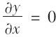 （如果计算对于y的偏导，结果与此相反）。
现在我们需要做的是把函数g中的乘法节点移动的图上。微积分知识告诉我们，两个函数u和v的乘积的偏导是： 。因此我们构建出图右侧的大部分内容，代表0×x+y×1。
最后，考虑函数g中的加法节点。如前所述，几个函数之和的偏导是它们各自偏导的和。所以，我们只需要创建一个加法节点，并用它来连接之前得到的计算结果。得到该函数的正确偏导： 。
然而，该过程可以被简化（很多）。可以添加一些修改来简化不必要的操作，得到只有一个节点的简单图 。
在这种情况下，简化非常容易。但是对于更复杂的函数，符号微分会产生巨大的图，可能会很难简化并且影响性能。最重要的是，符号微分不能处理用任意代码定义的函数，例如第9章讨论的函数：
代码详情
1 | def my_func(a, b): |
数字微分
最简单的方法是用数字计算偏导的近似值。回想一下，函数上h（x）的导数h’（x 0 ）是函数在点x 0 处的斜率，或者更准确地表示为方程D-2。
方程D-2：函数h（x）在x 0 的导数
所以如果想计算函数f（x，y）关于x在x=3，y=4处的偏导，我们可以简单地计算f（3+ ，4）-f（3，4），并将结果除以 ， 是一个非常小的值。如下代码表示了上述过程：
代码详情
1 | def f(x, y): |
不幸的是，结果并不十分准确（对于复杂函数，情况更糟糕）。正确的结果分别是24和10，但得到的结果却是：
代码详情
1 | >>> print(df_dx) |
注意，为了计算两个偏导，至少需要调用函数f（）三次（代码中调用了四次，但是可以优化）。如果它有1000个参数，则至少调用1001次。当处理大型神经网络时，这会使得数字微分的效率过低。
然而，数字微分非常容易实现，它是检查其他方法是否正确实施的好工具。例如，如果它的计算结果与你手动推导的不同，那么你的计算肯定有问题。
正序模式自动微分
正序模式自动微分既不是数字微分也不是符号微分，但是某种程度上来讲，是它们“爱情的结晶”。它依赖于对偶数，其形式是a+b 的数字，其中a和b是实数，ε是使得 =0（但
≠0）的无限小数。你可以把对偶数42+24 看作是类似于中间有无限个0的小数42.0000…000024（当然，这里只是给出了一些对偶数的概念）。内存中的对偶数表示为一对浮点数。例如，42+24 表示为浮点数对（42.0，24.0）。
如方程D-3所示，对偶数可以进行加法、乘法等运算。
方程D-3：对偶数的几个操作
最重要的是，可以证明h（a+b ）=h（a）+b×h’（a） ，所以在给定h（a）和h’（a）的情况下，计算h（a+
）易如反掌。图D-2显示了正序模式自动微分如何计算f（x，y）在x=3和y=4关于x的偏导。我们只需计算f（3+ ，4）；它将输出一个对偶数，其第一个分量是f（3，4），第二个分量是 。
图D-2：正序模式自动微分
为了计算 又需要使用图，但是这次的参数为x=3，y=4+ 。
所以，正序模式微分比数值微分更加准确，但存在同样的缺陷：如果函数有1000个参数，需要1000次遍历图求得所有微分。这也是反序模式自动微分的优势，只需遍历图两次即可。
反序模式自动微分
反序模式自动微分是TensorFlow使用的解决方案。它首先正向遍历图的每一个节点（即，从输入到输出）。然后反向遍历第二次（即，从输出到输入），就可以计算出所有的偏导。图D-3表示了第二次遍历。第一次遍历期间，计算出当x=3且y=4时所有节点的值。可以在节点的右下角看到这些值（例如，x×x=9）。为了清晰起见，节点被标记为n 1 到n 7 。输出节点是n 7 ：f（3，4）=n 7 =42。
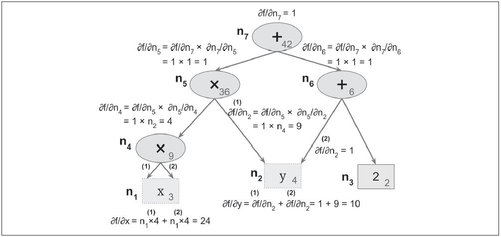
图D-3：反序模式自动微分
其想法是逐渐向下遍历该图，计算f（x，y）在每个连续节点的偏导。为此，反序模式自动微分严重依赖于链式规则，如公式D-4所示。
公式D-4：链式规则
因为n 7 是输出节点，f=n 7 ，所以 。
让我们来到n 5 ：当n 5 变化时，f的取值会怎样？答案是 。已知 ，所以仅需要知道 。因为n 7 可以表示为n 5 +n 6 ，我们发现 ，所以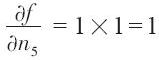 。
现在来处理n 4 ：当n 4 变化时，f的取值会怎样？答案是 。因为n 5 =n 4 ×n 2 ，我们发现 ，所以 。
该过程一直持续到我们到达图的底部。那时候，我们已经计算出f（x，y）在当x=3和y=4时所有的偏导。本例中， ， 。干得漂亮！
反序模式自动微分是一种强大且高效的技术，特别是当输入较多，输出较少时，因为它仅需要一次正向遍历和一次反向遍历就可以输出其输入对应的所有偏导。更重要的是，它可以处理使用任意代码定义的函数。它也可以处理不完全可微的函数，只要你要求它在可微点计算偏导数。
如果在TensorFlow中实现一种新类型操作，并希望它兼容自动微分，则需要提供一个函数来生成子图以计算其对应于输入的偏导。例如，你实现的函数是计算输入的评分：f（x）=x 2
。在这种情况下，你需要提供该函数的导数函数f’（x）=2x。注意，此函数不生成数字结果，而是生成一个（稍后）计算结果的子图。这非常有用，它意味着你可以计算梯度的梯度（来计算二阶导数，甚至高阶导数）。
附录E 其他流行的ANN架构
本附录主要介绍一些历史上重要的神经网络架构，与多层感知器（见第10章）、卷积神经网络（见第13章）、循环神经网络（见第14章）或者自动编码器（见第15章）相比，这些架构使用得比较少。它们在很多文献中有提到，并在许多应用中使用，所以值得学习。此外，我们将讨论深度置信网络（DBN），直到21世纪初，它仍是深度学习里的艺术状态。它们仍是非常活跃的研究主题，很可能在不久的将来重新流行。
Hopfield网络
Hopfield网络于1974年第一次被W.A.Little提出，随后由J.Hopfield在1982年推广开。它们是联想记忆网络：首先教它们一些模式，然后当它们遇见新模式时就会输出最接近该模式的已学习模式。再被其他方法超过之前，该方法对特征识别特别有用。首先通过显示特征图像示例来训练网络（每个二进制像素映射到一个神经元），然后当显示一个新特征图像后，经过几轮迭代，它会输出最接近的已学习特征图像。
它们是全连接图（见图E-1）；每个神经元连接到其他神经元。注意，图中的图像是6×6像素，所以左边的神经网络应该包含36个神经元（及648个连接），但是为了视觉上更加清晰，这里表示为一个小得多的网络。
训练算法使用Hebb规则工作：对每个训练图像，如果响应的像素都开启或关闭，则两个神经元之间的权重增加，但是如果一个像素开启而另一个关闭，则减小。
要向网络显示一个新图像，需要激活与激活像素对应的神经元即可。然后，网络会计算每个神经元的输出，并给出一个新图像。接着，可以使用这个新图像，并重复整个过程。一段时间后，网络进入一个新的稳定状态。一般来说，这对应于最接近输入图像的训练图像。
图E-1：Hopfiled网络
能量函数与Hopfiled网络相关联。在每个迭代中，能量减小，所以网络保证最终稳定在低能量状态。训练方法以减小训练模式的能量等级的方式来调整权重，所以网络稳定在这些低能量结构之一中。不幸的是，一些不在训练集中的模式也以低能量模式终止，所以网络有时候会稳定在没有学到东西的结构中。这被称为虚假模式。
Hopfiled网络另一个主要缺陷是它不能很好地被扩展。它们的内存容量大约等于神经元数量的14%。例如，要分类28×28个图像，需要一个有784个全连接神经元和306936个权重的Hopfiled网络。该网络仅能学习110个不同特征（784的14%）。对如此小的内存来说，其参数量很多。
玻尔兹曼机
玻尔兹曼机是Geoffrey Hinton和Terrence Sejnowski在1985年发明的。与Hopfiled网络类似，它们是全连接的ANN，但是基于随机神经元：这些神经元以某些概率输出1，其他输出0，而不是使用一个确定的步骤函数决定输出值。这些ANN使用的概率函数基于玻尔兹曼分布（用于统计力学），并以此得名。公式E-1给出了特定神经元输出1的概率。
公式E-1：第i个神经元输出1的概率
·s j 是第j个神经元的状态（0或1）。
·w i，j 是第i个神经元和第j个神经元之间的权重。注意wi，i=0。
·b i 是第i个神经元的偏差项。可以通过在神经网络添加一个偏差神经元来实现。
·N是网络中神经网络的数量。
·T是一个被称为网络温度的数字；温度越高，输出越随机（即，概率接近50%）。
·σ是逻辑函数。
玻尔兹曼机里的神经元被分为两组：可见单元和隐藏单元（见图E-2）。所有的神经元都以相同的随机方式工作，但是可见单元是接收输入并从中读取输出的单元。

图E-2：玻尔兹曼机
由于其随机性，玻尔兹曼机永远不会稳定在一个固定结构，而是保持在许多结构之间切换。如果运行了足够长的时间，观察特定结构的概率将至少连接权重和偏差项的函数，而不是原始结构（类似地，将一副纸牌洗牌足够长时间后，则这副牌的顺序将与原始状态无关）。当网络到达一个原始结构“忘记”了的状态，就处于热平衡状态（尽管其结构仍然在改变）。通过适当地设置网络参数，使网络达到热平衡状态，然后观察状态，就可以模拟各种概率分布。这被称为生成模型。
训练玻尔兹曼机意味着找到使得网络接近训练集合概率分布的参数。例如，如果有三个可见神经元，且训练集包含75%的（0，1，1）三元组，10%的（0，0，1）三元组，以及15%的（1，1，1）三元组，在训练玻尔兹曼机后，可以用它来生成具有大致相同的概率分布的随机二进制三元组。例如，大约75%的时间会输出（0，1，1）三元组。
这种生成模式可以以各种方式使用。例如，如果用于训练图像，并向网络提供不完整或嘈杂的图像，则会以合理的方式自动“修复”图像。可以使用生成模型进行分类。只需添加一些可见神经元来编码训练图像的类（例如，当训练图像表示5时，添加10个可见神经元，并打开第5个神经元）。然后，当给出一个新图像时，网络会自动打开适当的可见神经元，表示图像的类（例如，如果图像表示5，则打开第五个可见神经元）。
不幸的是，没有有效的技术来训练玻尔兹曼机。然而，已经开发出相对有效的算法来训练受限玻尔兹曼机（restricted Boltzmann machines，RBM）。
受限玻尔兹曼机
RBM是简化的玻尔兹曼机，其可见单元或隐藏单元之间没有连接，只在可见单元和隐藏单元之间有连接。例如，图E-3表示了一个有三个可见单元和四个隐藏单元的RBM。
图E-3：受限玻尔兹曼机
一个被称为对比散度（Contrastive Divergence）的有效训练算法于2005年被Miguel Á.Carreira-Perpiñán和Geoffrey Hinton提出（ http://goo.gl/ZCP6Ir ）。 [1] 以下是它的工作原理：对每个训练实例x，算法首先将其可见单元的状态设置为x 1 ，x 2 ，…，x n ，然后将其传递到网络。之后通过应用随机方程（见方程E-1）来计算隐藏单元状态。得到隐藏向量h（h i 等于第i个单元的状态）。接下来通过相同的随机方程计算可见单元的状态。得出向量 。然后再一次计算隐藏层的状态，得出向量 。现在，可以通过方程E-2中的规则更新每个连接权重。
方程E-2：对比散度权重更新
该算法最大的好处是不需要等待网络到达热平衡：它只前进，后退，再前进。这使得它比之前的算法更加高效，它是基于多个栈式RBM的深度学习第一次成功的关键因素。
深度置信网
RBM的多层可以堆叠；第一层RBM的隐藏单元可以是第二层RBM的可见单元，等等。这种RBM堆叠被称为深度置信网（Deep Belief Nets，DBN）。
Geoffrey Hinton的学生Yee-Whye Teh发现使用对比散度可以一次训练一层DBN，从低层开始，逐渐移动到顶层。该发现导致了引发机器学习海啸的突破性文章于2006年发表（ http://goo.gl/BcZQrH ）。 [2]
与RBM相似，DBN学会在没有任何监督的情况下，重现其输入的分布概率。然而，DBN性能更好，原因同样是深度神经网络比浅的更强大：真实世界中的数据通常是以层次模式组织的，DBN利用了这一点。它们的低层学习输入数据中的低层特征，同时高层学习高层特征。
与RBM类似，DBN基本上是无监督的，但是仍然可以通过添加一些可见单元代表标签来以有监督的方式训练它们。此外，DBN的一个重要特征是它们可以以半监督的方式进行训练。图E-4表示了为半监督学习配置的DBN。
图E-4：为半监督配置的深度置信网络
首先，RBM 1在无监督的情况下被训练。它学习训练数据中的低层特征。然后RBM 2使用RBM 1的隐藏单元作为输入进行训练，还是无监督的：它学习高层特征（注意，RBM 2的隐藏单元仅包括最右边的三个单元，没有标记单元）。还有几个RBM以这种方式被堆叠，你已经知道方法，此处不再赘述。到目前为止，训练是100%无监督的。
最后，RBM 3使用RBM 2的隐藏单元作为输入，可见单元表示目标标签（例如，单向向量代表实例类）。它学习使用训练标签关联高层特征。该步骤是有监督的。
在训练结束时，如果将RBM 1传到一个新实例，信号将传播到RBM 2，然后到顶层的RBM 3，最后回到标签单元；如果顺利的话，适当的标签会被点亮。这是如何将DBN用于分类的例子。
这种半监督方式的很大好处是不需要太多标记的训练数据。如果无监督的RBM做得足够好，那么每个类只需要少量标记的训练数据。类似地，婴儿在无监督情况下学习识别物体，所以当你指着椅子说“椅子”时，婴儿可以把“椅子”这个词和他已经学会识别的物体联系起来。你不需要指着每个椅子说它是“椅子”；只需要几个例子就够了（只要婴儿可以确定你指的是椅子，而不是椅子的颜色或椅子的一部分）。
令人惊讶的是，DBN也可以反向工作。如果激活其中一个标签单元，信号将传播到RBM 3的隐藏单元，然后到RBM 2，最后到RBM 1，并且RBM 1的可见单元会输出一个新实例。该新实例通常看起来和激活的标签单元类似。DBN的这种生成能力是十分强大的。例如，它已经被用于自动生成图像字幕，反之亦然：首先，DBN被训练（无监督）来学习图像特征，另一个DBN被训练来学习字幕中的特征（例如，“car”通常和“automobile”一起出现）。然后，一个RBM堆叠在两个DBN的顶部，并用一组图像及其字幕进行训练；它学习将图像中的高层特征与字幕中的高层特征相关联。接下来，如果传给图像DNB一个汽车图像，信号将通过网络传播，直到最高的RBM，并返回底部的字幕DBN，产生字幕。由于RBM和DBN的随机性，字幕会随机变化，但一般都适合于图像。如果生成数百个字幕，那么生成最频繁的字幕可能是图像较好的描述。 [3]
自组织映射
自组织映射（SOM）与迄今为止我们所讨论的所有其他类型的神经网络都有很大不同。它们用于生产高维数据集的低维表示，通常用于可视化、聚类或分类。如图E-5所示，神经元分布在一张二维图上（通常二维用于可视化，但可以是任意数量的维度），并且每个神经元对每个输入都有一个加权连接（注意图中只显示两个输入，但通常输入数量很大，因为SOM的所有点都用于降低维度）。
图E-5：自组织映射
一旦网络被训练，可以传给它一个新实例，这将只激活一个神经元（即，图上的一个点）：其权重向量最接近输入的神经元。一般情况下，原始输入空间附近的实例将激活图附近的神经元。这使得SOM可以用于可视化（特别是，可以轻松识别图上的集群），还可以用于语音识别等应用。例如，如果每个实例表示人类发音的音频记录，则元音“a”的不同发音将激活图中相同区域的神经元，而元音“e”的发音将激活另一区域的神经元，中间声音通常激活图中间的神经元。
与第8章讨论的其他降维技术不同，它的所有实例都映射到低维空间中离散的点（每个神经元一个点）。当神经元很少时，该技术更应该称为聚类而不是降维。
训练算法是无监督的。它通过使所有神经元相互竞争而起作用。首先，所有权重被随机初始化。然后随机挑选一个训练实例，并传到网络。所有神经元计算它们的权重和输入向量权重之间的距离（这与我们迄今为止看到的人造神经元非常不同）。与其距离最小的神经元胜出，并调整其权重向量使其更接近输入向量，使其能够赢得未来类似于该输入的其他输入。它也拉拢其他相邻神经元，更新它们的权重向量使其稍微接近输入向量（但是不会像胜者那样更新它们的权重）。然后算法选择另一个训练实例，并不断重复该过程。该算法倾向使附近神经元逐渐具有相类的似输入。 [4]
[1] “On Contrastive Divergence Learning”，M.Á.Carreira-Perpiñán和G.Hinton（2005）。
[2] “A Fast Learning Algorithm for Deep Belief Nets”，G.Hinton，S. Osindero，Y.Teh（2006）。
[3] 有关详细信息和演示，请参见视频：http://goo.gl/7Z5QiS。
[4] 想象一个技能大致相同的幼儿班。一个孩子在篮球上好一点。这促使她会去做更多的练习，尤其是和她的朋友一起练习。一段时间以后，这群小朋友都变得擅长篮球，远胜于其他小朋友。但是没关系，其他小朋友有其他的兴趣。这样，一段时间后，这个班级就充满了各种兴趣小组。
作者介绍
Aurélien Géron是机器学习顾问。他曾是谷歌员工，在2013年至2016年领导YouTube视频分类团队。2002年至2012年，他曾是法国领先的无线ISP公司Wifirst的创始人和CTO；2001年，他曾是Polyconseil的创始人和CTO，该公司现在管理着电动汽车共享服务公司Autolib’。
在此之前，他曾担任多个领域的工程师：金融（JP Morgan和SociétéGénérale），国防（加拿大国防部）和医疗保健（输血）。他出版过一些技术书籍（关于C++、WiFi和互联网架构等方面），并在法国一家工程院校担任计算机讲师。
一些趣事：他教他的三个孩子使用手指计数（到1023），他在进入软件工程之前研究生物学和进化遗传学，他在第二次跳伞时降落伞没有打开。
封面介绍
本书封面上动物是中东地区发现的一种两栖动物，远东火蜥蜴（Salamandra infraimmaculata）。它们有黑色的皮肤，背部和头部有很大的黄色斑点。这个斑点是防止捕食者的警告色。蜥蜴的长度可达一英尺（约30.48厘米）。
远东火蜥蜴生活在亚热带灌木林地和靠近河流或其他淡水资源的森林中。它们大部分时间都在陆地上，但是会把它们的蛋产在水里。它们主要以昆虫、蠕虫和小型甲壳动物为食，偶尔也吃其他蜥蜴。已知此物种雄性平均寿命长达23年，雌性达21年。
尽管尚未濒临灭绝，但远东火蜥蜴的数量在不断下降。其生存的主要威胁包括阻塞河流（扰乱蜥蜴的繁殖）和污染。它们也受到最近引入的掠食性鱼类的威胁，如食蚊鱼。引入这种鱼的目的是控制蚊子的数量，但是它们也吃蜥蜴幼崽。
O’Reilly封面上的许多动物都受到威胁；所有这些动物对世界都很重要。想了解更多如何帮助它们的方法，请访问 animals.oreilly.com 。
该封面图片来自Wood’s Illustrated Natural History。